DRAFT — UE26CS151A · Unit_01 — Unit 1: Introduction · Complete Unit Master
·How to use this pack
Search this single unit master by lesson, timestamp, slide text or source page. Read the transcript in timestamp order, then compare extracted slide text with its page-faithful source figure. Formula candidates and archive question mappings are explicitly flagged for review. Topics include the applicable parts: overview, key terms, formulas, figures, flowcharts, important points, worked examples, past-paper questions and a recap. IDs are shared with the separate documents: E = formula, G = graph, F = flowchart, W = worked example. Each ID is numbered by topic, so E4.2 is the second formula of topic 4.
1UE26CS151A · Unit_01: Unit 1: Introduction
This unit master organizes source material for Python for computational Problem Solving, Unit_01, officially titled Unit 1: Introduction. It includes 21 video transcripts and 20 source slide decks, with page-level text and rendered images where available. This draft preserves source wording and page order; it does not claim a complete human subject review or full audiovisual review. EV0000001
2Introduction
This lesson is indexed from the source video titled Introduction. Its complete timestamped transcript is preserved below in segment order. The original video path and content hash are recorded in datasets/lecture-corpus.json. Transcript text is source wording; it has not been silently corrected or rewritten. A candidate slide deck is grouped here according to the current matching score; the exact path and page locators are listed in the source evidence. EV0000002 · EV0000003
Graphs and diagrams
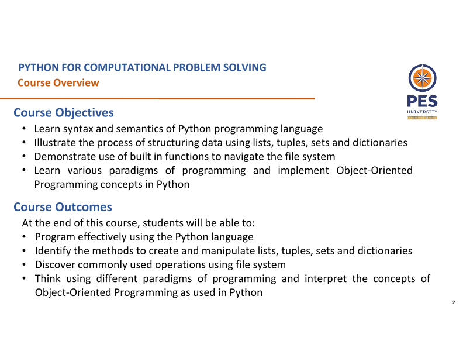
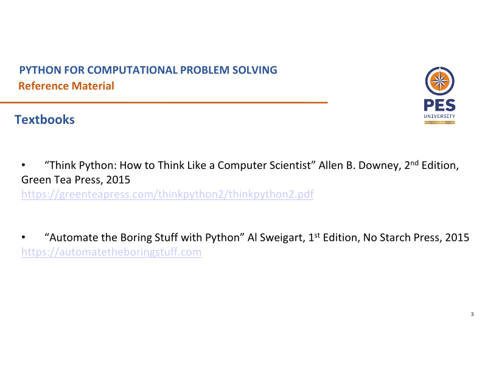
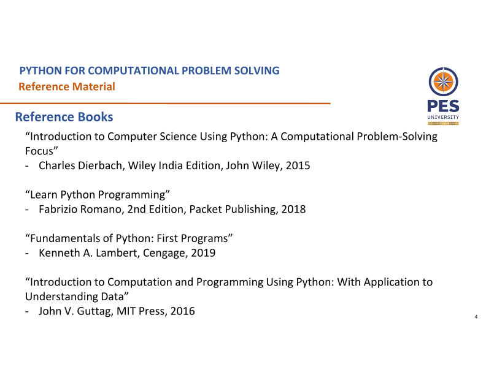
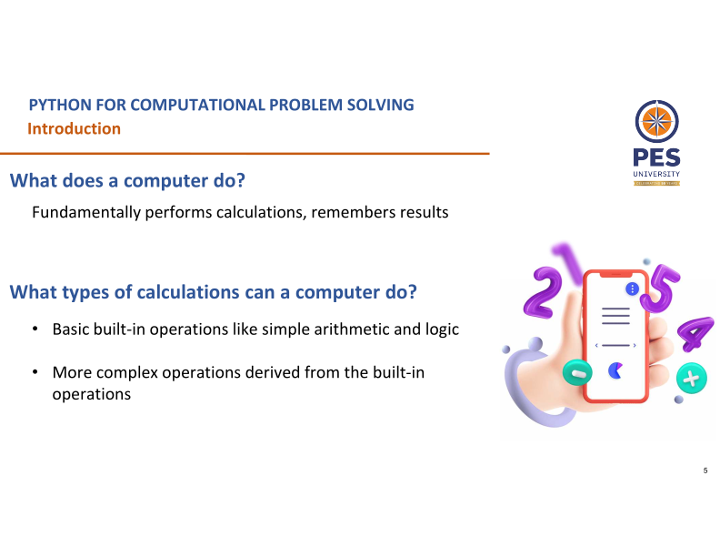
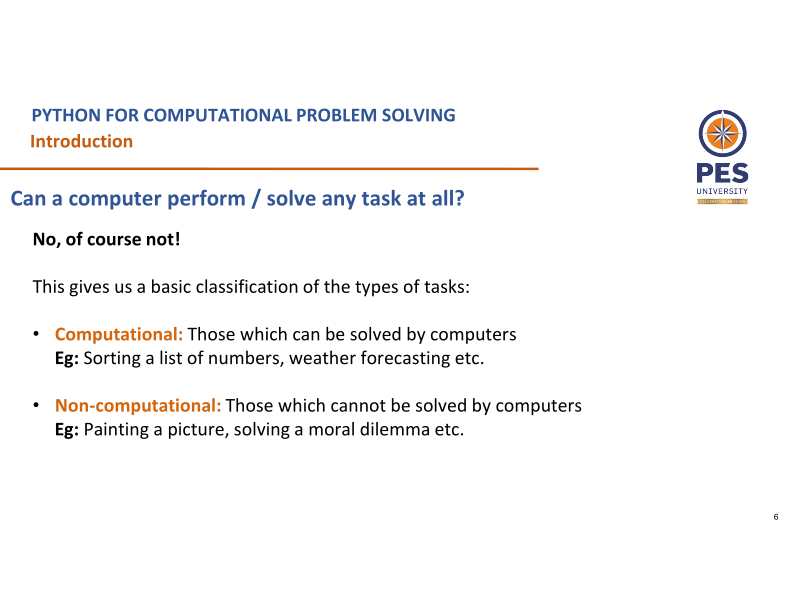
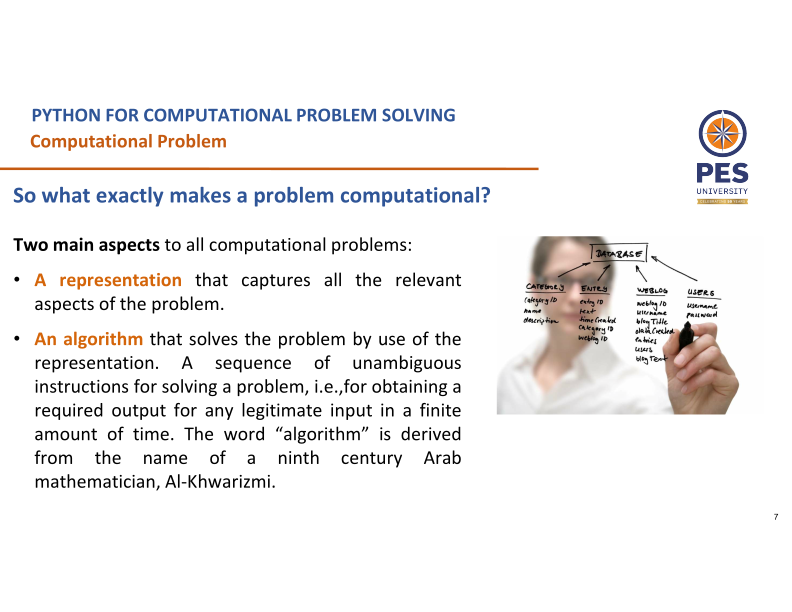
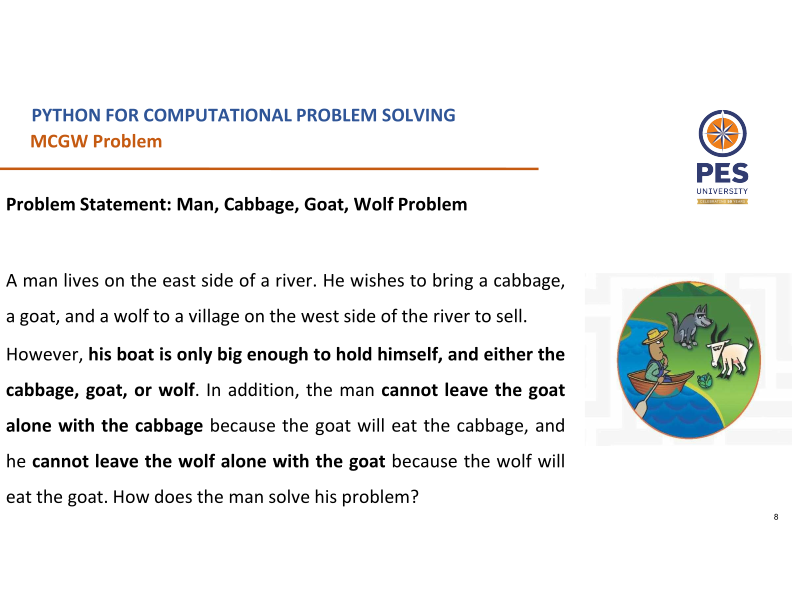
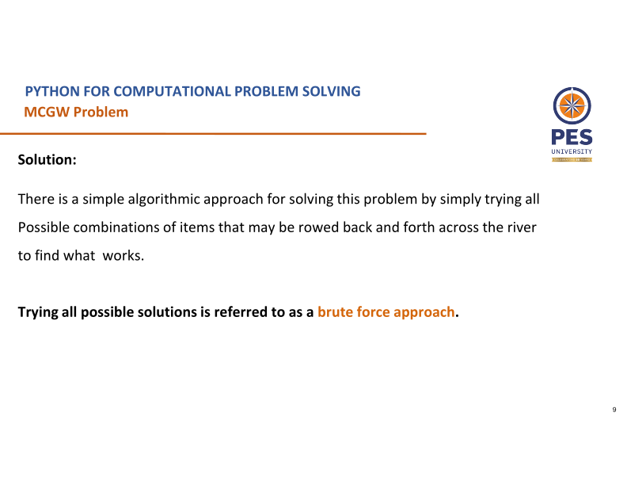
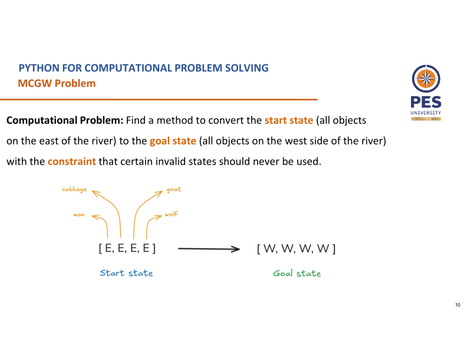
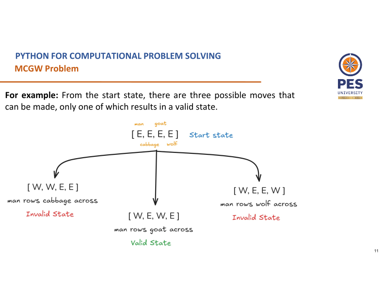
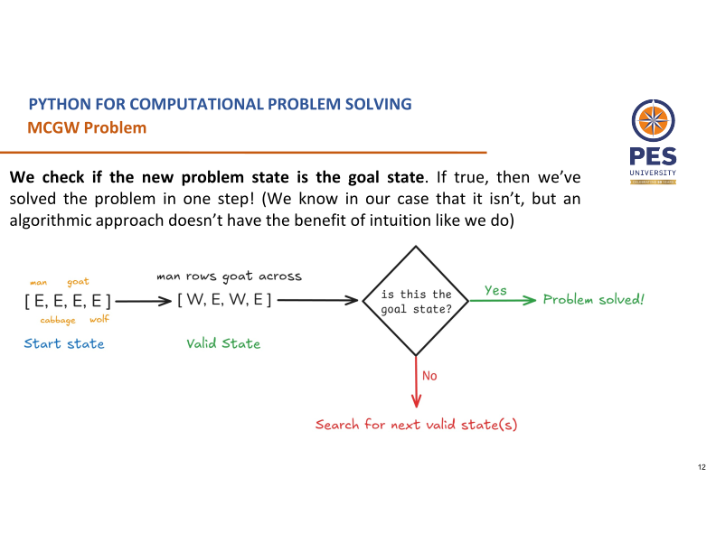
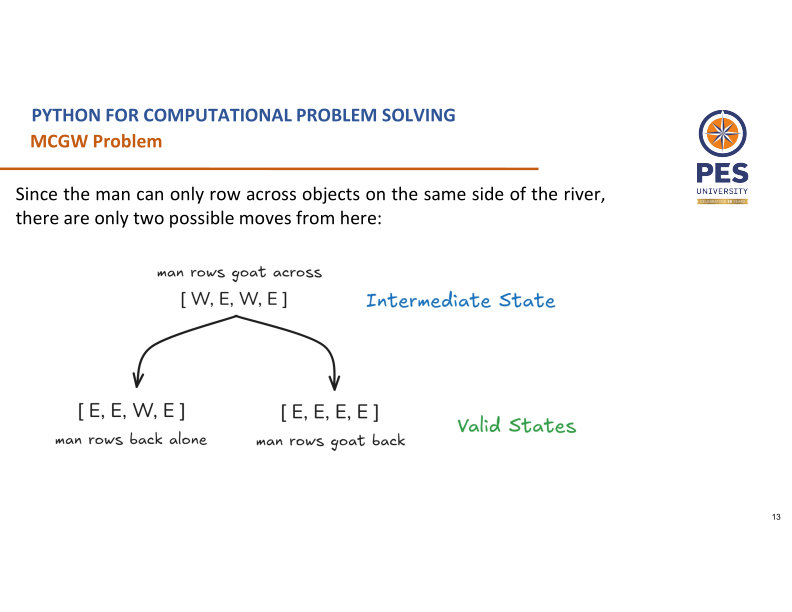
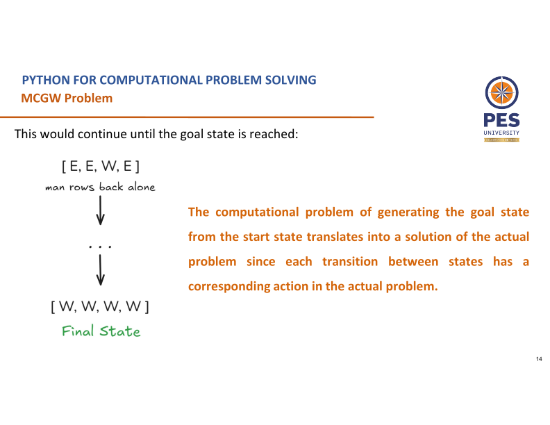
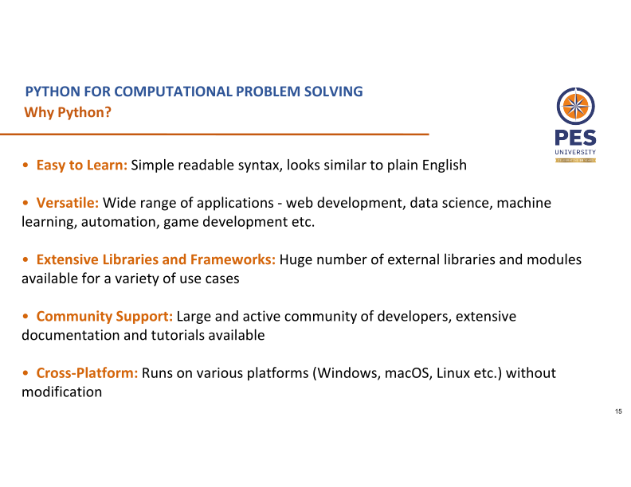
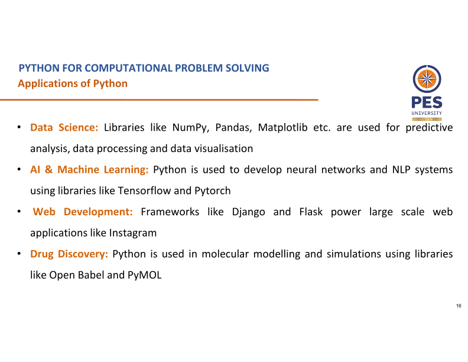
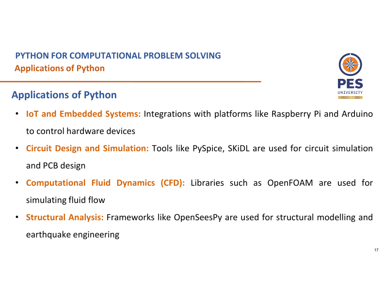
Important points and why
- Source slide page 1 (extracted text): PYTHON FOR COMPUTATIONAL PROBLEM SOLVING Introduction to the Course Title Prof. Sindhu R Pai PCPS Theory Anchor - 2024 Department of Computer Science and Engineering EV0000420 · EV0000421 · EV0000422
- Source slide page 2 (extracted text): PYTHON FOR COMPUTATIONAL PROBLEM SOLVING Course Overview Course Objectives • Learn syntax and semantics of Python programming language • Illustrate the process of structuring data using lists, tuples, sets and dictionaries • Demonstrate use of built in functions to navigate the file system • Learn various paradigms of programming and implement Object-Oriented Programming concepts in Python Course Outcomes At the end of this course, students will be able to: • Program effectively using the Python language • Identify the methods to create and manipulate lists, tuples, sets and dictionaries • Discover commonly used operations using file system • Think using different paradigms of programming and interpret the concepts of Object-Oriented Programming as used in Python 2 EV0000423 · EV0000424 · EV0000425
- Source slide page 3 (extracted text): PYTHON FOR COMPUTATIONAL PROBLEM SOLVING Reference Material Textbooks • “Think Python: How to Think Like a Computer Scientist” Allen B. Downey, 2nd Edition, Green Tea Press, 2015 https://greenteapress.com/thinkpython2/thinkpython2.pdf • “Automate the Boring Stuff with Python” Al Sweigart, 1st Edition, No Starch Press, 2015 https://automatetheboringstuff.com 3 EV0000426 · EV0000427 · EV0000428
- Source slide page 4 (extracted text): PYTHON FOR COMPUTATIONAL PROBLEM SOLVING Reference Material Reference Books “Introduction to Computer Science Using Python: A Computational Problem-Solving Focus” - Charles Dierbach, Wiley India Edition, John Wiley, 2015 “Learn Python Programming” - Fabrizio Romano, 2nd Edition, Packet Publishing, 2018 “Fundamentals of Python: First Programs” - Kenneth A. Lambert, Cengage, 2019 “Introduction to Computation and Programming Using Python: With Application to Understanding Data” - John V. Guttag, MIT Press, 2016 4 EV0000429 · EV0000430 · EV0000431
- Source slide page 5 (extracted text): PYTHON FOR COMPUTATIONAL PROBLEM SOLVING Introduction What does a computer do? Fundamentally performs calculations, remembers results What types of calculations can a computer do? • Basic built-in operations like simple arithmetic and logic • More complex operations derived from the built-in operations 5 EV0000432 · EV0000433 · EV0000434
- Source slide page 6 (extracted text): PYTHON FOR COMPUTATIONAL PROBLEM SOLVING Introduction Can a computer perform / solve any task at all? No, of course not! This gives us a basic classification of the types of tasks: • Computational: Those which can be solved by computers Eg: Sorting a list of numbers, weather forecasting etc. • Non-computational: Those which cannot be solved by computers Eg: Painting a picture, solving a moral dilemma etc. 6 EV0000435 · EV0000436 · EV0000437
- Source slide page 7 (extracted text): PYTHON FOR COMPUTATIONAL PROBLEM SOLVING Computational Problem So what exactly makes a problem computational? Two main aspects to all computational problems: • A representation that captures all the relevant aspectsaspects ofof thethe problemproblem. • An algorithm that solves the problem by use of the representation. A sequence of unambiguous instructions for solving a problem, i.e.,for obtaining a required output for any legitimate input in a finite amount of time. The word “algorithm” is derived from the name of a ninth century Arab mathematician, Al-Khwarizmi. 7 EV0000438 · EV0000439 · EV0000440
- Source slide page 8 (extracted text): PYTHON FOR COMPUTATIONAL PROBLEM SOLVING MCGW Problem Problem Statement: Man, Cabbage, Goat, Wolf Problem A man lives on the east side of a river. He wishes to bring a cabbage, a goat, and a wolf to a village on the west side of the river to sell. However, his boat is only big enough to hold himself, and either the cabbage, goat, or wolf. In addition, the man cannot leave the goat alone with the cabbage because the goat will eat the cabbage, and he cannot leave the wolf alone with the goat because the wolf will eat the goat. How does the man solve his problem? 8 EV0000441 · EV0000442 · EV0000443
- Source slide page 9 (extracted text): PYTHON FOR COMPUTATIONAL PROBLEM SOLVING MCGW Problem Solution: There is a simple algorithmic approach for solving this problem by simply trying all Possible combinations of items that may be rowed back and forth across the river to find what works. Trying all possible solutions is referred to as a brute force approach. 9 EV0000444 · EV0000445 · EV0000446
- Source slide page 10 (extracted text): PYTHON FOR COMPUTATIONAL PROBLEM SOLVING MCGW Problem Computational Problem: Find a method to convert the start state (all objects on the east of the river) to the goal state (all objects on the west side of the river) with the constraint that certain invalid states should never be used. 10 EV0000447 · EV0000448 · EV0000449
- Source slide page 11 (extracted text): PYTHON FOR COMPUTATIONAL PROBLEM SOLVING MCGW Problem For example: From the start state, there are three possible moves that can be made, only one of which results in a valid state. 11 EV0000450 · EV0000451 · EV0000452
- Source slide page 12 (extracted text): PYTHON FOR COMPUTATIONAL PROBLEM SOLVING MCGW Problem We check if the new problem state is the goal state. If true, then we’ve solved the problem in one step! (We know in our case that it isn’t, but an algorithmic approach doesn’t have the benefit of intuition like we do) 12 EV0000453 · EV0000454 · EV0000455
- Source slide page 13 (extracted text): PYTHON FOR COMPUTATIONAL PROBLEM SOLVING MCGW Problem Since the man can only row across objects on the same side of the river, there are only two possible moves from here: 13 EV0000456 · EV0000457 · EV0000458
- Source slide page 14 (extracted text): PYTHON FOR COMPUTATIONAL PROBLEM SOLVING MCGW Problem This would continue until the goal state is reached: TheThe computationalcomputational problemproblem ofof generatinggenerating thethe goalgoal statestate from the start state translates into a solution of the actual problem since each transition between states has a corresponding action in the actual problem. 14 EV0000459 · EV0000460 · EV0000461
- Source slide page 15 (extracted text): PYTHON FOR COMPUTATIONAL PROBLEM SOLVING Why Python? • Easy to Learn: Simple readable syntax, looks similar to plain English • Versatile: Wide range of applications - web development, data science, machine learning, automation, game development etc. • Extensive Libraries and Frameworks: Huge number of external libraries and modules available for a variety of use cases • Community Support: Large and active community of developers, extensive documentation and tutorials available • Cross-Platform: Runs on various platforms (Windows, macOS, Linux etc.) without modification 15 EV0000462 · EV0000463 · EV0000464
- Source slide page 16 (extracted text): PYTHON FOR COMPUTATIONAL PROBLEM SOLVING Applications of Python • Data Science: Libraries like NumPy, Pandas, Matplotlib etc. are used for predictive analysis, data processing and data visualisation • AI & Machine Learning: Python is used to develop neural networks and NLP systems using libraries like Tensorflow and Pytorch • Web Development: Frameworks like Django and Flask power large scale web applications like Instagram • Drug Discovery: Python is used in molecular modelling and simulations using libraries like Open Babel and PyMOL 16 EV0000465 · EV0000466 · EV0000467
- Source slide page 17 (extracted text): PYTHON FOR COMPUTATIONAL PROBLEM SOLVING Applications of Python Applications of Python • IoT and Embedded Systems: Integrations with platforms like Raspberry Pi and Arduino to control hardware devices •• CircuitCircuit DesignDesign andand Simulation:Simulation: ToolsTools likelike PySpicePySpice, SKiDLSKiDL areare usedused forfor circuitcircuit simulationsimulation and PCB design • Computational Fluid Dynamics (CFD): Libraries such as OpenFOAM are used for simulating fluid flow • Structural Analysis: Frameworks like OpenSeesPy are used for structural modelling and earthquake engineering 17 EV0000468 · EV0000469 · EV0000470
- Source slide page 18 (extracted text): THANK YOU Departmentp of Computerp Science and Engineeringg g Dr. Shylaja S S, Director, CCBD & CDSAML, PESU Prof. Sindhu R Pai – sindhurpai@pes.edu Prof. Chitra G M Ack: Teaching Assistant – Advaith Sanil Kumar EV0000471 · EV0000472 · EV0000473
3Man Cabbage Goat Wolf Problem
This lesson is indexed from the source video titled Man Cabbage Goat Wolf Problem. Its complete timestamped transcript is preserved below in segment order. The original video path and content hash are recorded in datasets/lecture-corpus.json. Transcript text is source wording; it has not been silently corrected or rewritten. A candidate slide deck is grouped here according to the current matching score; the exact path and page locators are listed in the source evidence. EV0000010 · EV0000011
4Process of Computation Problem Solving - Analysis, Design, Implementation, Testing
This lesson is indexed from the source video titled Process of Computation Problem Solving - Analysis, Design, Implementation, Testing. Its complete timestamped transcript is preserved below in segment order. The original video path and content hash are recorded in datasets/lecture-corpus.json. Transcript text is source wording; it has not been silently corrected or rewritten. A candidate slide deck is grouped here according to the current matching score; the exact path and page locators are listed in the source evidence. EV0000022 · EV0000023
Graphs and diagrams
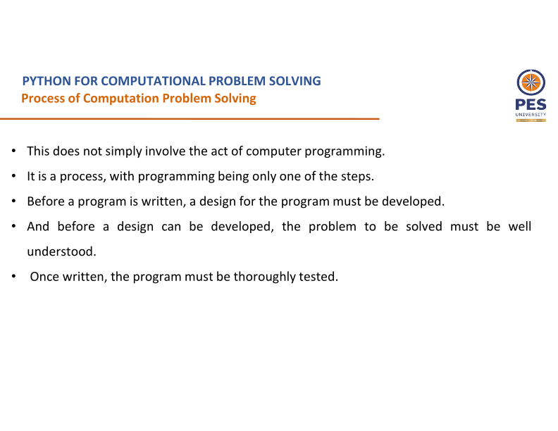
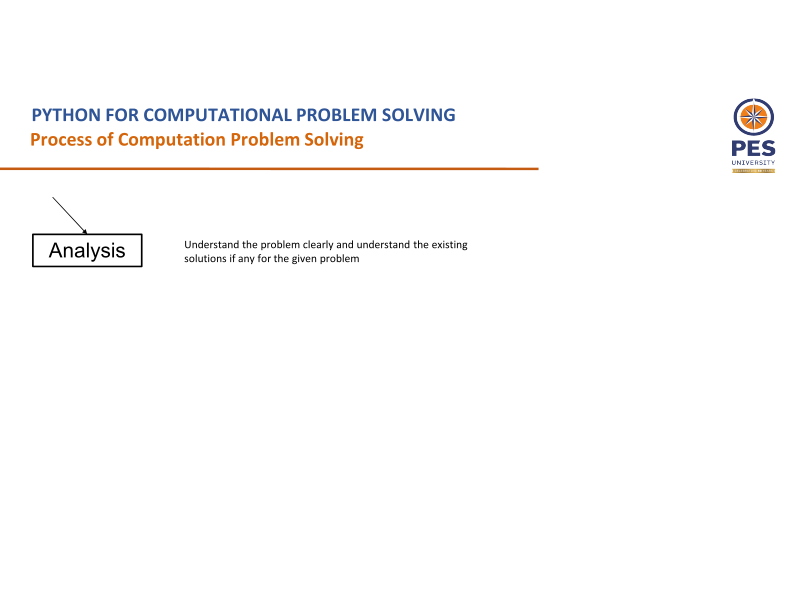
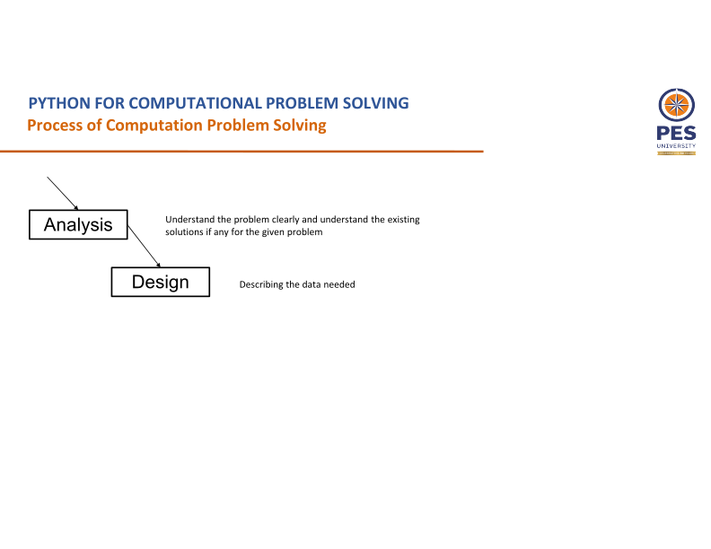
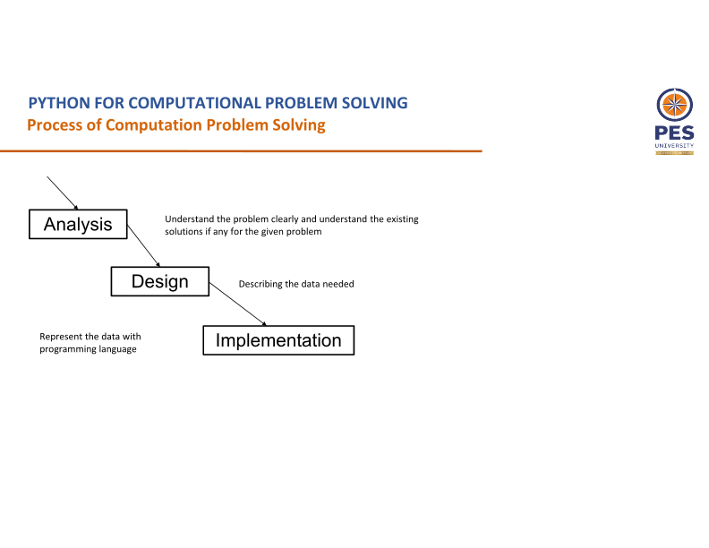
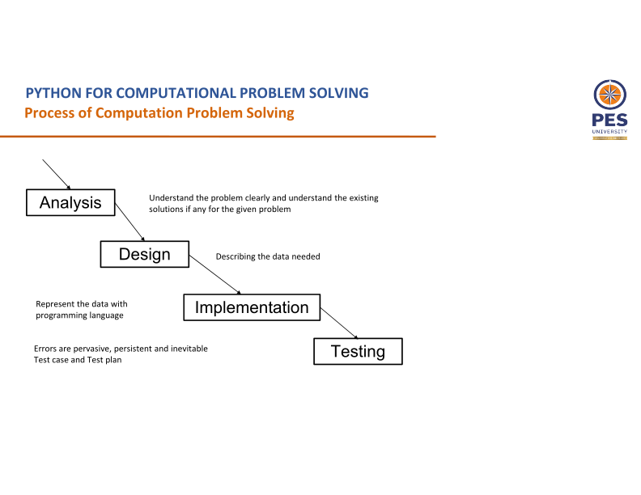
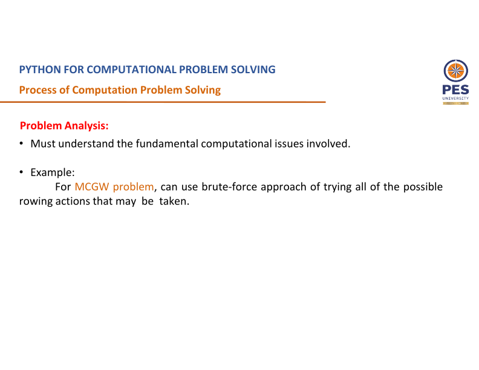
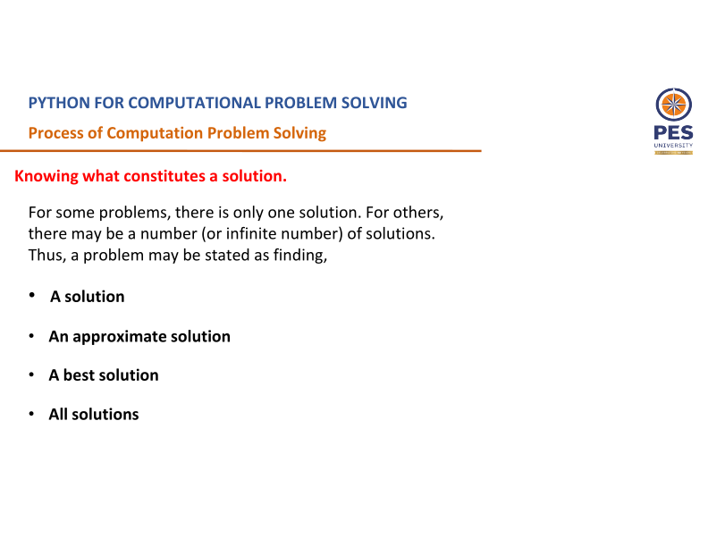
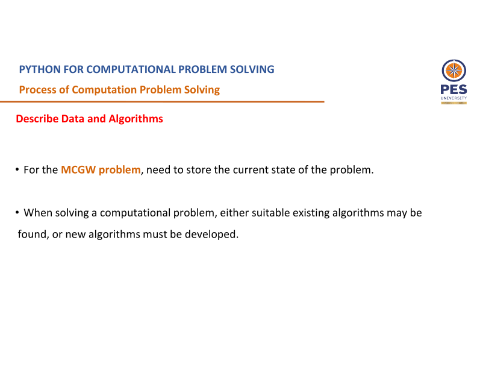
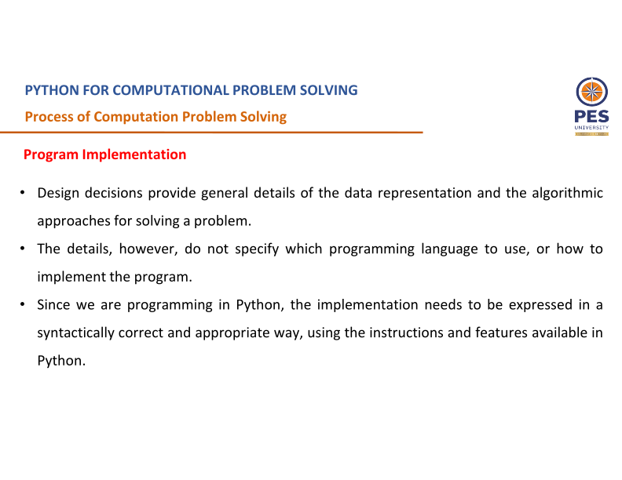
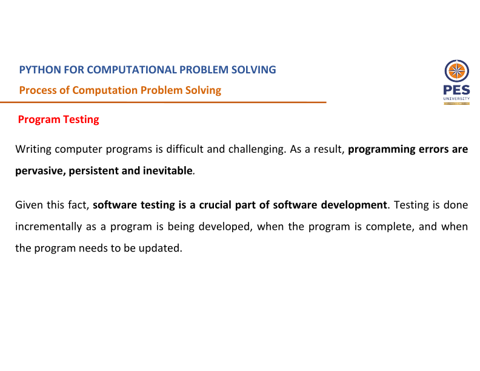
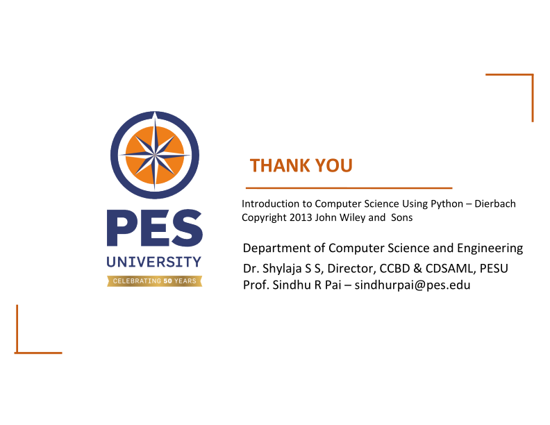
Important points and why
- Source slide page 1 (extracted text): PYTHON FOR COMPUTATIONAL PROBLEM SOLVING Process of CPS Prof. Sindhu R Pai PCPS Theory Anchor - 2024 Department of Computer Science and Engineering EV0000555 · EV0000556 · EV0000557
- Source slide page 2 (extracted text): PYTHON FOR COMPUTATIONAL PROBLEM SOLVING Process of Computation Problem Solving • This does not simply involve the act of computer programming. • It is a process, with programming being only one of the steps. • Before a program is written, a design for the program must be developed. • And before a design can be developed, the problem to be solved must be well understood. • Once written, the program must be thoroughly tested. EV0000558 · EV0000559 · EV0000560
- Source slide page 3 (extracted text): PYTHON FOR COMPUTATIONAL PROBLEM SOLVING Process of Computation Problem Solving Analysis Understand the problem clearly and understand the existing solutions if any for the given problem EV0000561 · EV0000562 · EV0000563
- Source slide page 4 (extracted text): PYTHON FOR COMPUTATIONAL PROBLEM SOLVING Process of Computation Problem Solving Analysis Understand the problem clearly and understand the existing solutions if any for the given problem Design Describing the data needed EV0000564 · EV0000565 · EV0000566
- Source slide page 5 (extracted text): PYTHON FOR COMPUTATIONAL PROBLEM SOLVING Process of Computation Problem Solving Analysis Understand the problem clearly and understand the existing solutions if any for the given problem Design Describing the data needed Represent the data with Implementation programming language EV0000567 · EV0000568 · EV0000569
- Source slide page 6 (extracted text): PYTHON FOR COMPUTATIONAL PROBLEM SOLVING Process of Computation Problem Solving Analysis Understand the problem clearly and understand the existing solutions if any for the given problem Design Describing the data needed Represent the data with Implementation programming language Errors are pervasive, persistent and inevitable Testing Test case and Test plan EV0000570 · EV0000571 · EV0000572
- Source slide page 7 (extracted text): PYTHON FOR COMPUTATIONAL PROBLEM SOLVING Process of Computation Problem Solving Problem Analysis: • Must understand the fundamental computational issues involved. • Example: ForFor MCGWMCGW problemproblem, cancan useuse brutebrute-forceforce approachapproach ofof tryingtrying allall ofof thethe possiblepossible rowing actions that may be taken. EV0000573 · EV0000574 · EV0000575
- Source slide page 8 (extracted text): PYTHON FOR COMPUTATIONAL PROBLEM SOLVING Process of Computation Problem Solving Knowing what constitutes a solution. For some problems, there is only one solution. For others, there may be a number (or infinite number) of solutions. Thus, a problem may be stated as finding, • A solution • An approximate solution • A best solution • All solutions EV0000576 · EV0000577 · EV0000578
- Source slide page 9 (extracted text): PYTHON FOR COMPUTATIONAL PROBLEM SOLVING Process of Computation Problem Solving Describe Data and Algorithms • For the MCGW problem, need to store the current state of the problem. • When solving a computational problem, either suitable existing algorithms may be found, or new algorithms must be developed. EV0000579 · EV0000580 · EV0000581
- Source slide page 10 (extracted text): PYTHON FOR COMPUTATIONAL PROBLEM SOLVING Process of Computation Problem Solving Program Implementation • Design decisions provide general details of the data representation and the algorithmic approaches for solving a problem. • The details, however, do not specify which programming language to use, or how to implement the program. • Since we are programming in Python, the implementation needs to be expressed in a syntactically correct and appropriate way, using the instructions and features available in Python. EV0000582 · EV0000583 · EV0000584
- Source slide page 11 (extracted text): PYTHON FOR COMPUTATIONAL PROBLEM SOLVING Process of Computation Problem Solving Program Testing Writing computer programs is difficult and challenging. As a result, programming errors are pervasive, persistent and inevitable. Given this fact, software testing is a crucial part of software development. Testing is done incrementally as a program is being developed, when the program is complete, and when the program needs to be updated. EV0000585 · EV0000586 · EV0000587
- Source slide page 12 (extracted text): THANK YOU Introduction to Computer Science Using Python – Dierbach Copyright 2013 John Wiley and Sons Department of Computer Science and Engineering Dr. Shylaja S S, Director, CCBD & CDSAML, PESU Prof. Sindhu R Pai – sindhurpai@pes.edu EV0000588 · EV0000589 · EV0000590
5Process of Computation Problem Solving - Analysis, Design, Implementation, Testing
This lesson is indexed from the source video titled Process of Computation Problem Solving - Analysis, Design, Implementation, Testing. Its complete timestamped transcript is preserved below in segment order. The original video path and content hash are recorded in datasets/lecture-corpus.json. Transcript text is source wording; it has not been silently corrected or rewritten. A candidate slide deck is grouped here according to the current matching score; the exact path and page locators are listed in the source evidence. EV0000034 · EV0000035
6Computer Hardware and software
This lesson is indexed from the source video titled Computer Hardware and software. Its complete timestamped transcript is preserved below in segment order. The original video path and content hash are recorded in datasets/lecture-corpus.json. Transcript text is source wording; it has not been silently corrected or rewritten. A candidate slide deck is grouped here according to the current matching score; the exact path and page locators are listed in the source evidence. EV0000054 · EV0000055
Graphs and diagrams
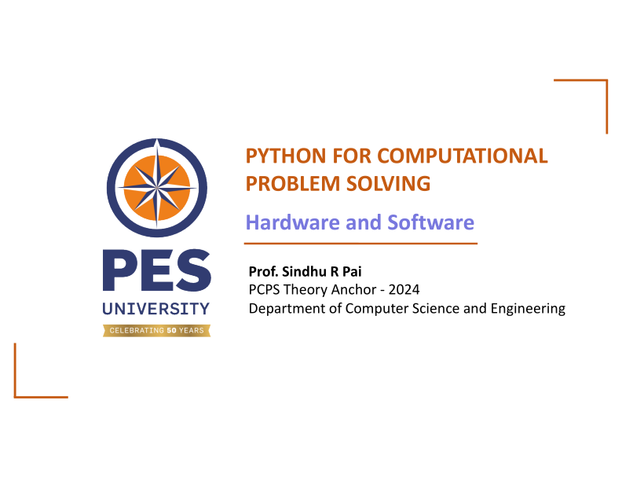
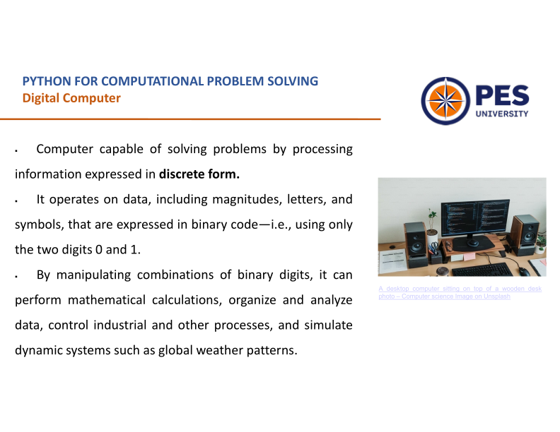
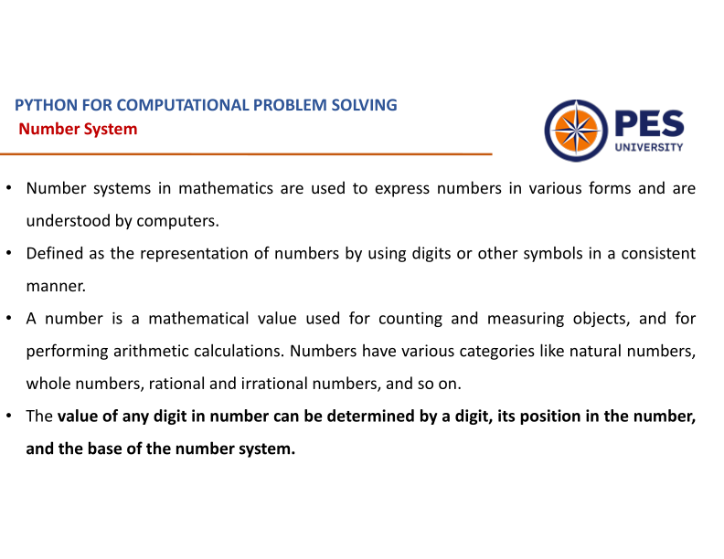
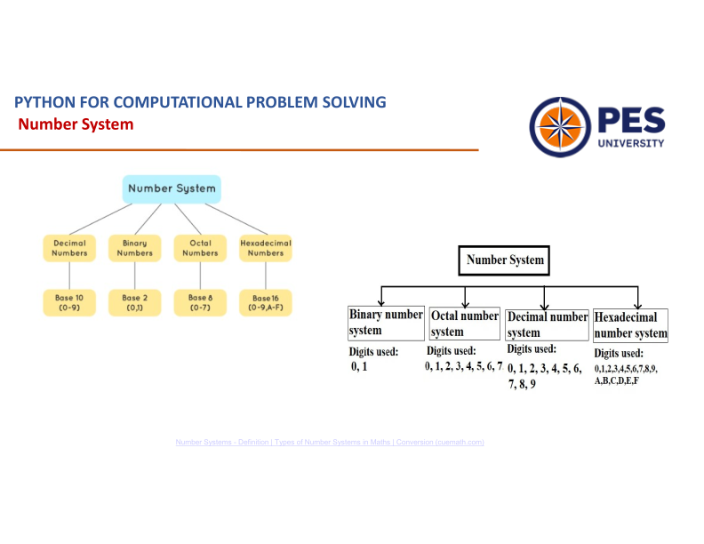
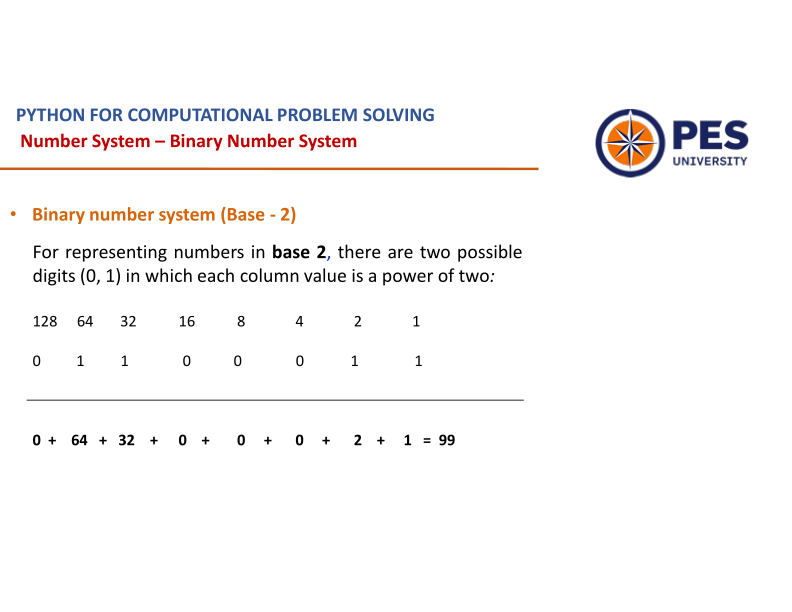
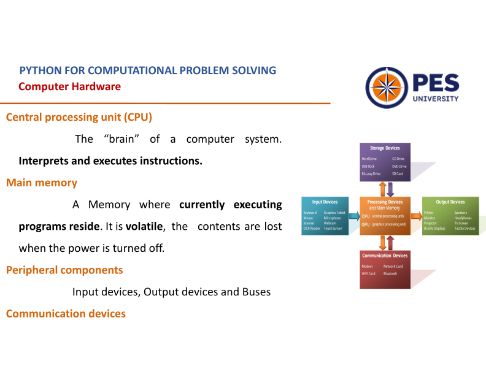
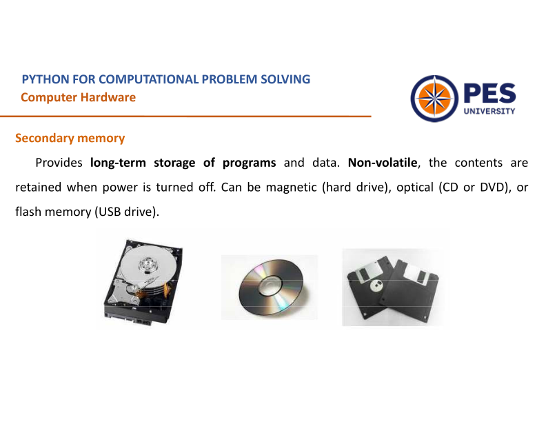
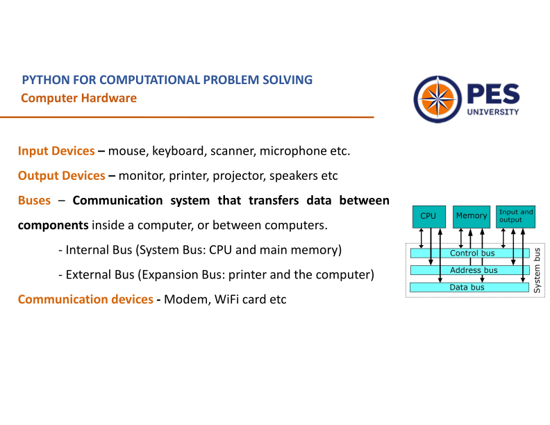
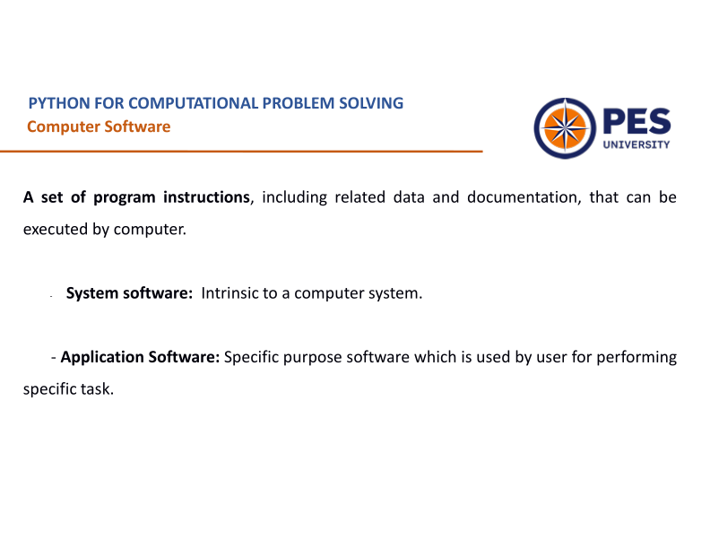
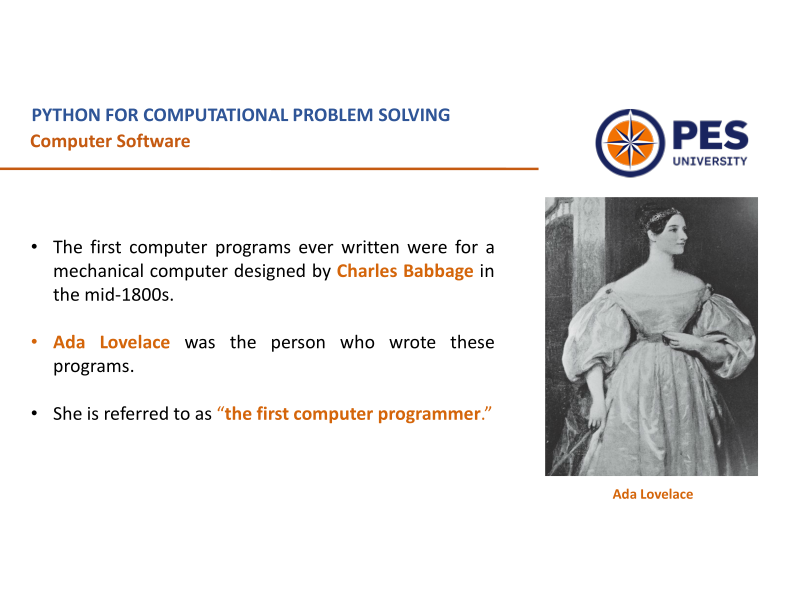
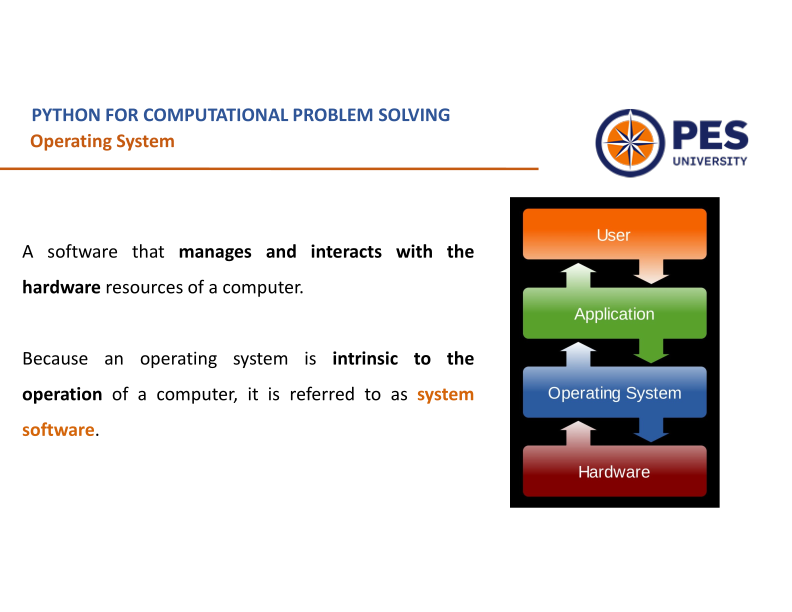
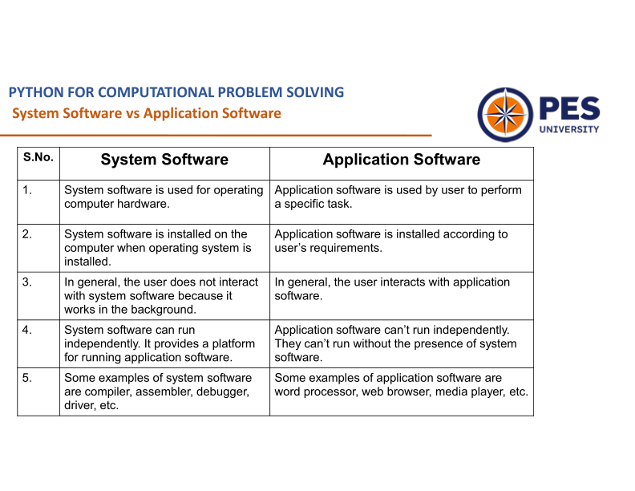
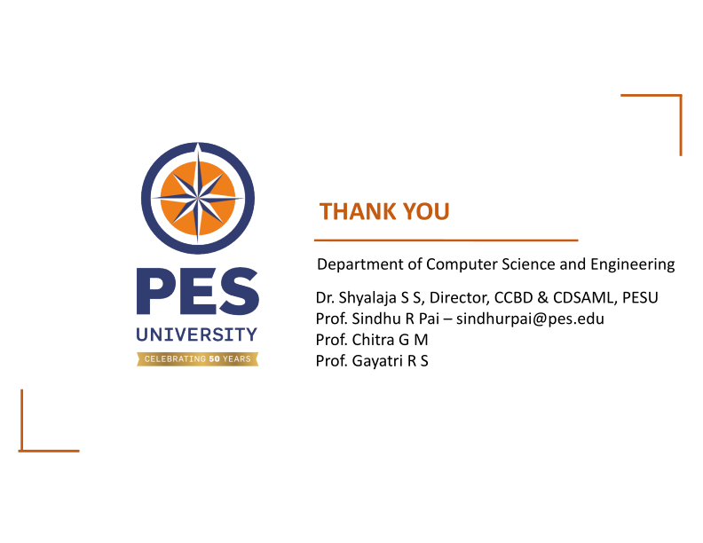
Important points and why
- Source slide page 1 (extracted text): PYTHON FOR COMPUTATIONAL PROBLEM SOLVING Hardware and Software Prof. Sindhu R Pai PCPS Theory Anchor - 2024 Department of Computer Science and Engineering EV0000591 · EV0000592 · EV0000593
- Source slide page 2 (extracted text): PYTHON FOR COMPUTATIONAL PROBLEM SOLVING Digital Computer Computer capable of solving problems by processing information expressed in discrete form. It operates on data, including magnitudes, letters, and symbols, that are expressed in binary code—i.e., using only the two digits 0 and 1. By manipulating combinations of binary digits, it can A desktop computer sitting on top of a wooden desk perform mathematical calculations, organize and analyze photo – Computer science Image on Unsplash data, control industrial and other processes, and simulate dynamic systems such as global weather patterns. EV0000594 · EV0000595 · EV0000596
- Source slide page 3 (extracted text): PYTHON FOR COMPUTATIONAL PROBLEM SOLVING Number System • Number systems in mathematics are used to express numbers in various forms and are understood by computers. • Defined as the representation of numbers by using digits or other symbols in a consistent manner. • A number is a mathematical value used for counting and measuring objects, and for performing arithmetic calculations. Numbers have various categories like natural numbers, whole numbers, rational and irrational numbers, and so on. • The value of any digit in number can be determined by a digit, its position in the number, and the base of the number system. EV0000597 · EV0000598 · EV0000599
- Source slide page 4 (extracted text): PYTHON FOR COMPUTATIONAL PROBLEM SOLVING Number System Number Systems - Definition | Types of Number Systems in Maths | Conversion (cuemath.com) EV0000600 · EV0000601 · EV0000602
- Source slide page 5 (extracted text): PYTHON FOR COMPUTATIONAL PROBLEM SOLVING Number System – Binary Number System • Binary number system (Base - 2) For representing numbers in base 2, there are two possible digits (0, 1) in which each column value is a power of two: 128 64 32 16 8 4 2 1 0 1 1 0 0 0 1 1 0 + 64 + 32 + 0 + 0 + 0 + 2 + 1 = 99 EV0000603 · EV0000604 · EV0000605
- Source slide page 6 (extracted text): PYTHON FOR COMPUTATIONAL PROBLEM SOLVING Computer Hardware Central processing unit (CPU) The “brain” of a computer system. Interprets and executes instructions. Main memory A Memory where currently executing programs reside. It is volatile, the contents are lost when the power is turned off. Peripheral components Input devices, Output devices and Buses Communication devices EV0000606 · EV0000607 · EV0000608
- Source slide page 7 (extracted text): PYTHON FOR COMPUTATIONAL PROBLEM SOLVING Computer Hardware Secondary memory Provides long-term storage of programs and data. Non-volatile, the contents are retained when power is turned off. Can be magnetic (hard drive), optical (CD or DVD), or flashflash memorymemory (USB(USB drive)drive). EV0000609 · EV0000610 · EV0000611
- Source slide page 8 (extracted text): PYTHON FOR COMPUTATIONAL PROBLEM SOLVING Computer Hardware Input Devices – mouse, keyboard, scanner, microphone etc. Output Devices – monitor, printer, projector, speakers etc Buses – Communication system that transfers data between components inside a computer, or between computers. - Internal Bus (System Bus: CPU and main memory) - External Bus (Expansion Bus: printer and the computer) Communication devices - Modem, WiFi card etc EV0000612 · EV0000613 · EV0000614
- Source slide page 9 (extracted text): PYTHON FOR COMPUTATIONAL PROBLEM SOLVING Computer Software A set of program instructions, including related data and documentation, that can be executed by computer. - System software: Intrinsic to a computer system. - Application Software: Specific purpose software which is used by user for performing specific task. EV0000615 · EV0000616 · EV0000617
- Source slide page 10 (extracted text): PYTHON FOR COMPUTATIONAL PROBLEM SOLVING Computer Software • The first computer programs ever written were for a mechanical computer designed by Charles Babbage in the mid-1800s. • Ada Lovelace was the person who wrote these programs. • She is referred to as “the first computer programmer.” Ada Lovelace EV0000618 · EV0000619 · EV0000620
- Source slide page 11 (extracted text): PYTHON FOR COMPUTATIONAL PROBLEM SOLVING Operating System A software that manages and interacts with the hardware resources of a computer. Because an operating system is intrinsic to the operation of a computer, it is referred to as system software. EV0000621 · EV0000622 · EV0000623
- Source slide page 12 (extracted text): PYTHON FOR COMPUTATIONAL PROBLEM SOLVING System Software vs Application Software S.No. System Software Application Software 1. System software is used for operating Application software is used by user to perform computer hardware. a specific task. 2. System software is installed on the Application software is installed according to compcomputerter whenhen operatingoperating ssystemstem isis user’sser’s reqrequirements.irements installed. 3. In general, the user does not interact In general, the user interacts with application with system software because it software. works in the background. 4. System software can run Application software can’t run independently. independently. It provides a platform They can’t run without the presence of system for running application software. software. 5. Some examples of system software Some examples of application software are are compiler, assembler, debugger, word processor, web browser, media player, etc. driver, etc. EV0000624 · EV0000625 · EV0000626
- Source slide page 13 (extracted text): THANK YOU Departmentp of Computerp Science and Engineeringg g Dr. Shyalaja S S, Director, CCBD & CDSAML, PESU Prof. Sindhu R Pai – sindhurpai@pes.edu Prof. Chitra G M Prof. Gayatri R S EV0000627 · EV0000628 · EV0000629
7Computer hardware
This lesson is indexed from the source video titled Computer hardware. Its complete timestamped transcript is preserved below in segment order. The original video path and content hash are recorded in datasets/lecture-corpus.json. Transcript text is source wording; it has not been silently corrected or rewritten. A candidate slide deck is grouped here according to the current matching score; the exact path and page locators are listed in the source evidence. EV0000074 · EV0000075
8Program Structure
This lesson is indexed from the source video titled Program Structure. Its complete timestamped transcript is preserved below in segment order. The original video path and content hash are recorded in datasets/lecture-corpus.json. Transcript text is source wording; it has not been silently corrected or rewritten. A candidate slide deck is grouped here according to the current matching score; the exact path and page locators are listed in the source evidence. EV0000086 · EV0000087
Graphs and diagrams
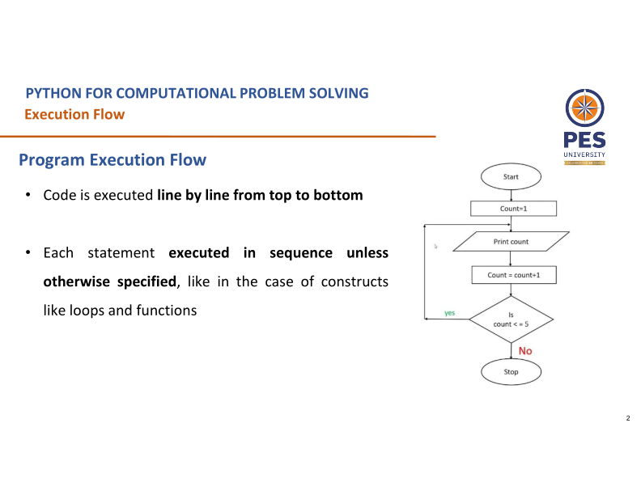
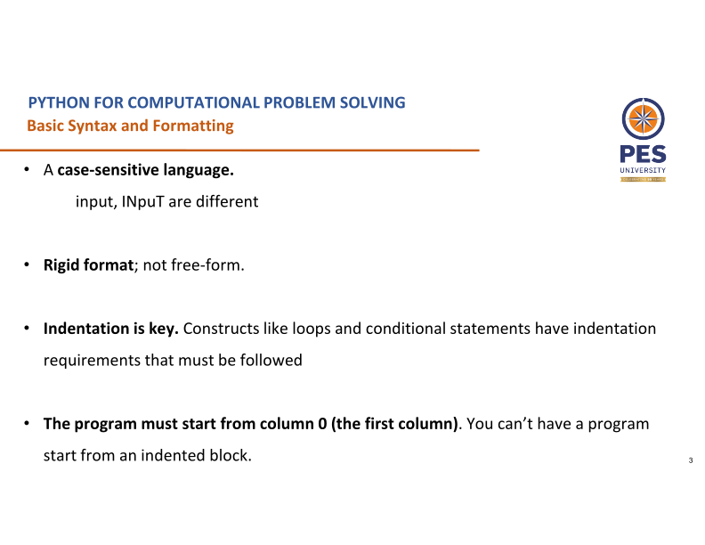
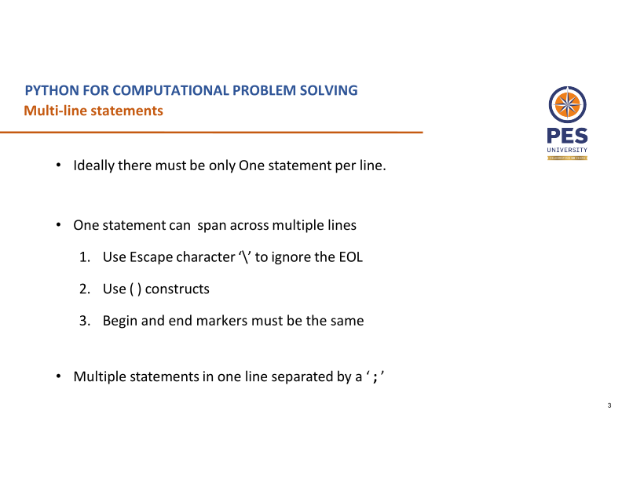
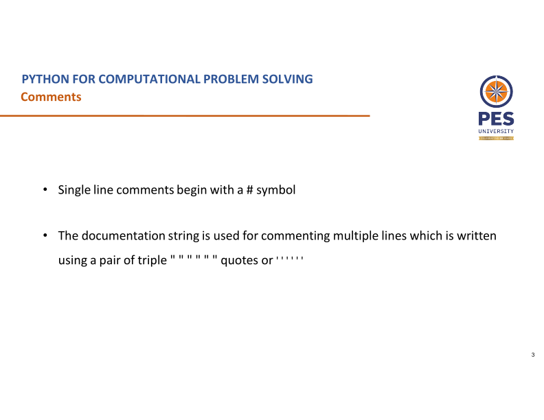
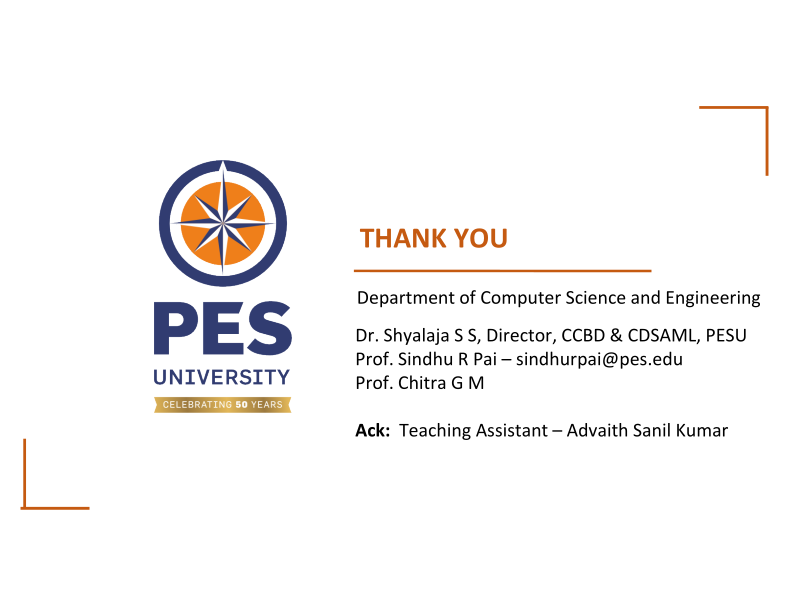
Important points and why
- Source slide page 1 (extracted text): PYTHON FOR COMPUTATIONAL PROBLEM SOLVING Structure of Python Programs Prof. Sindhu R Pai PCPS Theory Anchor - 2024 Department of Computer Science and Engineering EV0000696 · EV0000697 · EV0000698
- Source slide page 2 (extracted text): PYTHON FOR COMPUTATIONAL PROBLEM SOLVING Execution Flow Program Execution Flow • Code is executed line by line from top to bottom • EEachh statement executedd iin sequence unlessl otherwise specified, like in the case of constructs like loops and functions 2 EV0000699 · EV0000700 · EV0000701
- Source slide page 3 (extracted text): PYTHON FOR COMPUTATIONAL PROBLEM SOLVING Basic Syntax and Formatting • A case-sensitive language. input, INpuT are different • Rigidg format;; not free-form. • Indentation is key. Constructs like loops and conditional statements have indentation requirements that must be followed • The program must start from column 0 (the first column). You can’t have a program start from an indented block. 3 EV0000702 · EV0000703 · EV0000704
- Source slide page 4 (extracted text): PYTHON FOR COMPUTATIONAL PROBLEM SOLVING Multi-line statements • Ideally there must be only One statement per line. • One statement can span across multiple lines 1. Use Escape character ‘\’ to ignore the EOL 2. Use ( ) constructs 3. Begin and end markers must be the same • Multiple statements in one line separated by a ‘ ; ’ 3 EV0000705 · EV0000706 · EV0000707
- Source slide page 5 (extracted text): PYTHON FOR COMPUTATIONAL PROBLEM SOLVING Comments • Single line comments begin with a # symbol • The documentation string is used for commenting multiple lines which is written using a pair of triple " " " " " " quotes or ' ' ' ' ' ' 3 EV0000708 · EV0000709 · EV0000710
- Source slide page 6 (extracted text): THANK YOU Departmentp of Computerp Science and Engineeringg g Dr. Shyalaja S S, Director, CCBD & CDSAML, PESU Prof. Sindhu R Pai – sindhurpai@pes.edu Prof. Chitra G M Ack: Teaching Assistant – Advaith Sanil Kumar EV0000711 · EV0000712 · EV0000713
9Program structure
This lesson is indexed from the source video titled Program structure. Its complete timestamped transcript is preserved below in segment order. The original video path and content hash are recorded in datasets/lecture-corpus.json. Transcript text is source wording; it has not been silently corrected or rewritten. A candidate slide deck is grouped here according to the current matching score; the exact path and page locators are listed in the source evidence. EV0000090 · EV0000091
10Program structure
This lesson is indexed from the source video titled Program structure. Its complete timestamped transcript is preserved below in segment order. The original video path and content hash are recorded in datasets/lecture-corpus.json. Transcript text is source wording; it has not been silently corrected or rewritten. A candidate slide deck is grouped here according to the current matching score; the exact path and page locators are listed in the source evidence. EV0000110 · EV0000111
11print function
This lesson is indexed from the source video titled print function. Its complete timestamped transcript is preserved below in segment order. The original video path and content hash are recorded in datasets/lecture-corpus.json. Transcript text is source wording; it has not been silently corrected or rewritten. A candidate slide deck is grouped here according to the current matching score; the exact path and page locators are listed in the source evidence. EV0000130 · EV0000131
Graphs and diagrams
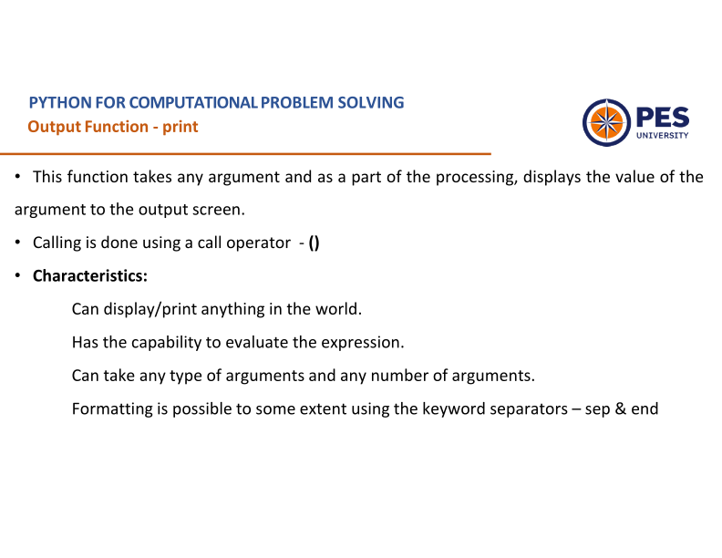
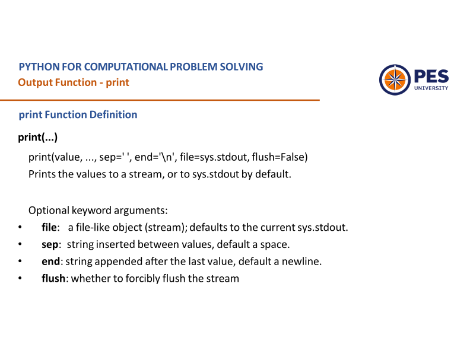
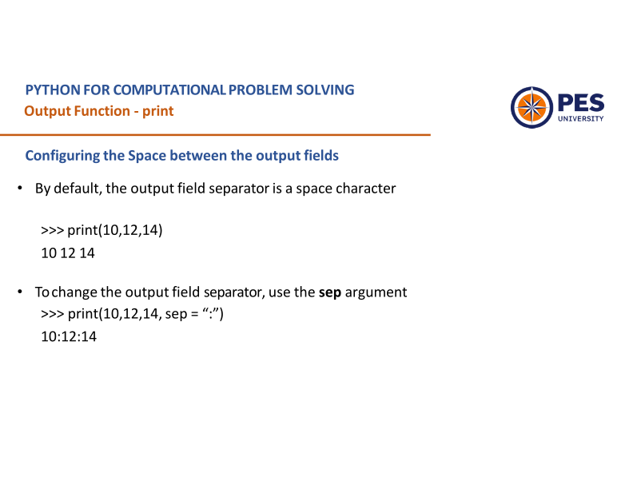
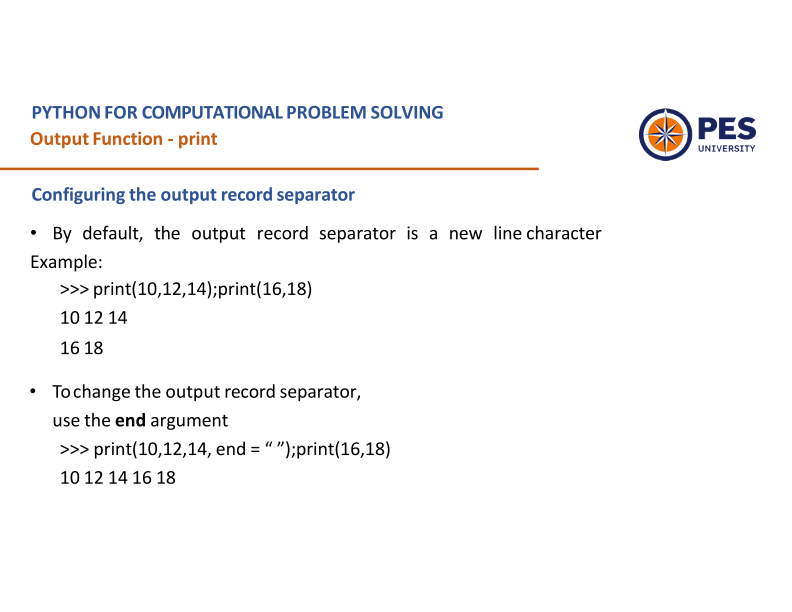
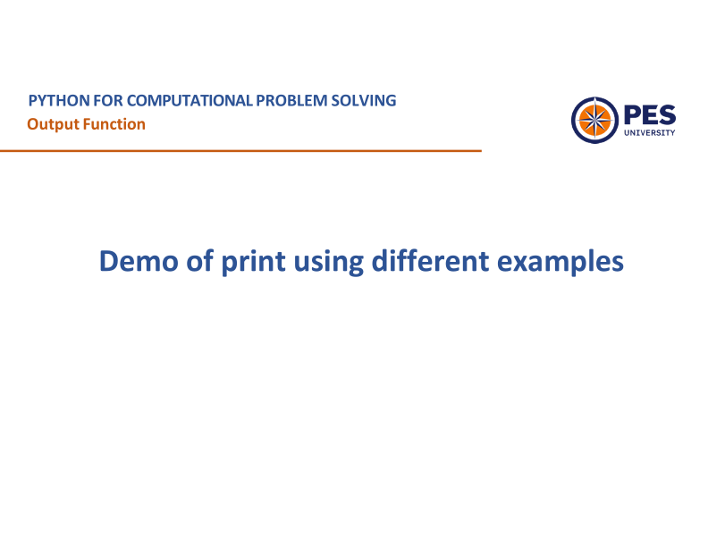
Important points and why
- Source slide page 1 (extracted text): PYTHON FOR COMPUTATIONAL PROBLEM SOLVING Output function – print() Prof. Sindhu R Pai PCPS Theory Anchor - 2024 Department of Computer Science and Engineering EV0000795 · EV0000796 · EV0000797
- Source slide page 2 (extracted text): PYTHON FOR COMPUTATIONALPROBLEM SOLVING Output Function - print • This function takes any argument and as a part of the processing, displays the value of the argument to the output screen. • Calling is done using a call operator - () • Characteristics:Characteristics: Can display/print anything in the world. Has the capability to evaluate the expression. Can take any type of arguments and any number of arguments. Formatting is possible to some extent using the keyword separators – sep & end EV0000798 · EV0000799 · EV0000800
- Source slide page 3 (extracted text): PYTHON FOR COMPUTATIONAL PROBLEM SOLVING Output Function - print print Function Definition print(...) print(value, ..., sep=' ', end='\n', file=sys.stdout, flush=False) Prints the values to a stream, or to sys.stdout by default. Optional keyword arguments: • file: a file-like object (stream);defaults to the current sys.stdout. • sep: string inserted between values, default a space. • end: string appended after the last value, default a newline. • flush: whether to forcibly flush the stream EV0000801 · EV0000802 · EV0000803
- Source slide page 4 (extracted text): PYTHON FOR COMPUTATIONALPROBLEM SOLVING Output Function - print Configuring the Space between the output fields • By default, the output field separator is a space character >>> print(10,12,14) 10 12 14 • Tochange the output field separator, use the sep argument >>> print(10,12,14, sep = “:”) 10:12:14 EV0000804 · EV0000805 · EV0000806
- Source slide page 5 (extracted text): PYTHON FOR COMPUTATIONAL PROBLEM SOLVING Output Function - print Configuring the output record separator • By default, the output record separator is a new line character Example: >>> print(10,12,14);print(16,18) 10 12 14 16 18 • Tochange the output record separator, use the end argument >>> print(10,12,14, end = “ ”);print(16,18) 10 12 14 16 18 EV0000807 · EV0000808 · EV0000809
- Source slide page 6 (extracted text): PYTHON FOR COMPUTATIONAL PROBLEM SOLVING Output Function Demo of printp usingg different examplesp EV0000810 · EV0000811 · EV0000812
- Source slide page 7 (extracted text): THANK YOU Introduction to Computer Science Using Python – Dierbach Copyrighth 2013 Johnh Wileyl andd Sons Department of Computer Science and Engineering Dr. Shylaja S S, Director, CCBD & CDSAML, PESU Prof. Sindhu R Pai – sindhurpai@pes.edu Prof. Chitra G M EV0000813 · EV0000814 · EV0000815
12Variable video 1
This lesson is indexed from the source video titled Variable video 1. Its complete timestamped transcript is preserved below in segment order. The original video path and content hash are recorded in datasets/lecture-corpus.json. Transcript text is source wording; it has not been silently corrected or rewritten. No slide deck is assigned to this video; candidate slide sources remain separate in the unit master. EV0000146 · EV0000147
13variable and id function
This lesson is indexed from the source video titled variable and id function. Its complete timestamped transcript is preserved below in segment order. The original video path and content hash are recorded in datasets/lecture-corpus.json. Transcript text is source wording; it has not been silently corrected or rewritten. A candidate slide deck is grouped here according to the current matching score; the exact path and page locators are listed in the source evidence. EV0000158 · EV0000159
Graphs and diagrams
Important points and why
- Source slide page 1 (extracted text): PYTHON FOR COMPUTATIONAL PROBLEM SOLVING Modules Prof. Sindhu R Pai PCPS Theory Anchor - 2024 Department of Computer Science and Engineering EV0000474 · EV0000475 · EV0000476
- Source slide page 2 (extracted text): PYTHON FOR COMPUTATIONAL PROBLEM SOLVING Modules – Import mechanisms Module • In Python, a module is a file that contains code. • It can include functions, classes, variables or any runnable code. • Basically, a module contains code to perform specific tasks. • We can use modules to separate code in separate files based on their functionality. EV0000477 · EV0000478 · EV0000479
- Source slide page 3 (extracted text): PYTHON FOR COMPUTATIONAL PROBLEM SOLVING Modules – Import mechanisms Advantages of Modules • Reusability - makes the code reusable • Modularity – Organizing the code into modules logically • Separate scopes – separate namespace is defined by the module • Grouping - Python modules help us to organize and group content by using files and folders EV0000480 · EV0000481 · EV0000482
- Source slide page 4 (extracted text): PYTHON FOR COMPUTATIONAL PROBLEM SOLVING Modules – Import mechanisms Packages and Namespace • Modules in Python can be grouped together into packages. • Packages organize the code into logical groups and provide a namespace to the modules so that they don’t conflict with modules with the same name in other packages. • The import statement can also be used to import modules from a package, which allows to access the functions and classes defined in the package’s modules. EV0000483 · EV0000484 · EV0000485
- Source slide page 5 (extracted text): PYTHON FOR COMPUTATIONAL PROBLEM SOLVING Modules – Import mechanisms Packages vs. Modules vs. Libraries • Modules – contain several functions, variables, classes etc. • Packages – contain several modules. - folder that contains various modules as files. • Library - a collection of packages and modules used to access built-in functionality EV0000486 · EV0000487 · EV0000488
- Source slide page 6 (extracted text): PYTHON FOR COMPUTATIONAL PROBLEM SOLVING Modules – Import mechanisms Types of Modules 1. Built-in Modules • Python's standard library comes bundled with a large number of modules. • They are called built-in modules. 2. User-defined Modules • Any file with .py extension and containing Python code is a module. • It can contain definitions of one or more functions, variables, constants, classes etc. EV0000489 · EV0000490 · EV0000491
- Source slide page 7 (extracted text): PYTHON FOR COMPUTATIONAL PROBLEM SOLVING Modules – Import mechanisms Built-in Modules Name Description os provides a unified interface to a number of operating system functions stringstring containscontains aa numbernumber ofof functionsfunctions forfor stringstring processingprocessing re regular expression functionalities math a number of mathematical operations cmath a number of mathematical operations for complex numbers datetime functions to deal with dates and the time gc an interface to the built-in garbage collector asyncio functionality required for asynchronous processing collections advanced container datatypes functools higher-order functions and operations on callable objects EV0000492 · EV0000493 · EV0000494
- Source slide page 8 (extracted text): PYTHON FOR COMPUTATIONAL PROBLEM SOLVING Modules – Import mechanisms Built-in Modules Name Description operator Functions on the standard operators pickle Convert Python objects to streams of bytes and back socket Low-level networking interface sqlite3 A DB-API 2.0 implementation using SQLite 3.x statistics Mathematical statistics functions typing Support for type hints venv Creation of virtual environments json Encode and decode the JSON format unittest Unit testing framework for Python random Generate pseudo-random numbers EV0000495 · EV0000496 · EV0000497
- Source slide page 9 (extracted text): PYTHON FOR COMPUTATIONAL PROBLEM SOLVING Modules – Import mechanisms User-defined Modules • Any file with .py extension and containing Python code is a module. • It can contain definitions of one or more functions, variables, constants as well as classes. • Any object from a module can be made available to the interpreter or another Python script by using import statement. EV0000498 · EV0000499 · EV0000500
- Source slide page 10 (extracted text): PYTHON FOR COMPUTATIONAL PROBLEM SOLVING Modules – Import mechanisms Creating a Module • Crete a file with .py extension • Example: Creating a module (module1.py) a=10 print("Welcome to Module-1") def f1(): print("in f1") def f2(): module1.py print("in f2") def _f3(): print("in f3") 10 EV0000501 · EV0000502 · EV0000503
- Source slide page 11 (extracted text): PYTHON FOR COMPUTATIONAL PROBLEM SOLVING Modules – Import mechanisms Importing a Module • When the interpreter encounters an import statement, it imports the module if the module is present. Otherwise, ModuleNotFoundError is thrown. • Syntax - import module_name import – the keyword used to import the module module_name – name of the module to be imported • To access the functions inside the module the dot(.) operator is used. EV0000504 · EV0000505 · EV0000506
- Source slide page 12 (extracted text): PYTHON FOR COMPUTATIONAL PROBLEM SOLVING Modules – Import mechanisms Import a Module • Example: importing module1(refer previous slide) import module1 #All functions and variables of module1 are availableil bl module1.f1() usingModule1.pymodule1.f2() module1._f3() print("value is", module1.a) module1.a = module1.a + 2 print("value is", module1.a) EV0000507 · EV0000508 · EV0000509
- Source slide page 13 (extracted text): PYTHON FOR COMPUTATIONAL PROBLEM SOLVING Modules – Import mechanisms Output • Executing usingModule1.py Welcome to Module-1 in f1 in f2 in f3 value is 10 value is 12 EV0000510 · EV0000511 · EV0000512
- Source slide page 14 (extracted text): PYTHON FOR COMPUTATIONAL PROBLEM SOLVING Modules – Import mechanisms Import from a Module • Import Specific Attributes from a module • Syntax – from module_name import specific_attributes • Example 2 def add(x, y): return (x+y) def subtract(x, y): return (x-y) module2.py def multiply(x, y): return (x*y) def divide(x, y): return (x/y) #Assuming 'y' is never zero EV0000513 · EV0000514 · EV0000515
- Source slide page 15 (extracted text): PYTHON FOR COMPUTATIONAL PROBLEM SOLVING Modules – Import mechanisms Import from a Module • Example 2 (Contd…) from module2 import add,multiply #importing only add and multiply functions from module2module2 usingmodule2.py print("Sum=",add(10,20)) print("Product=",multiply(25,10)) Output Sum= 30 Product= 250 EV0000516 · EV0000517 · EV0000518
- Source slide page 16 (extracted text): PYTHON FOR COMPUTATIONAL PROBLEM SOLVING Modules – Import mechanisms Import all Names from a Module • * symbol with the import statement is used to import all the names from a module. • Syntax - from module_name import * • Example 3 def add(x, y): return (x+y) def subtract(x, y): return (x-y) module3.py def multiply(x, y): return (x*y) def divide(x, y): return (x/y) #Assuming 'y' is never zero 16 EV0000519 · EV0000520 · EV0000521
- Source slide page 17 (extracted text): PYTHON FOR COMPUTATIONAL PROBLEM SOLVING Modules – Import mechanisms Import all Names from a Module • Example 3 (Contd…) from module3 import * #importing all the functions from module2 usingmodule3.pyusingmodule3.py print("Sum=",add(10,20)) print("Product=",multiply(25,10)) Output Sum= 30 Product= 250 Note: If we know exactly which attribute to import from the module, it is not recommended to use import * EV0000522 · EV0000523 · EV0000524
- Source slide page 18 (extracted text): PYTHON FOR COMPUTATIONAL PROBLEM SOLVING Modules – Import mechanisms Renaming/Aliasing Python Modules • We can rename the module while importing it. • Syntax – import module_name as alias_name • EExamplel 44 import math as mt #Renaming math module as 'mt’ print(mt.factorial(6)) Output 720 EV0000525 · EV0000526 · EV0000527
- Source slide page 19 (extracted text): PYTHON FOR COMPUTATIONAL PROBLEM SOLVING Modules – Import mechanisms Renaming/Aliasing Python Modules • Example 5 GRAVITY=9.8 module5.py print("Illustration of Renaming a Module") import module5 as m5 print("***********************************") usingmodule5.py print("Acceleration due to gravity on earth=",m5.GRAVITY,"m/s\u00b2") Output Illustration of Renaming a Module *********************************** Acceleration due to gravity on earth= 9.8 m/s² EV0000528 · EV0000529 · EV0000530
- Source slide page 20 (extracted text): PYTHON FOR COMPUTATIONAL PROBLEM SOLVING Modules – Import mechanisms Locating Python Modules • To get the Directories List # importing sys module import sys # importing sys.path print(sys.path)print(sys.path) Output: ['', 'C:\\Users\\SOWMYA SHREE P\\AppData\\Local\\Programs\\Python\\Python311\\Lib\\idlelib', 'C:\\Users\\SOWMYA SHREE P\\AppData\\Local\\Programs\\Python\\Python311\\python311.zip', 'C:\\Users\\SOWMYA SHREE P\\AppData\\Local\\Programs\\Python\\Python311\\DLLs', 'C:\\Users\\SOWMYA SHREE P\\AppData\\Local\\Programs\\Python\\Python311\\Lib', 'C:\\Users\\SOWMYA SHREE P\\AppData\\Local\\Programs\\Python\\Python311', 'C:\\Users\\SOWMYA SHREE P\\AppData\\Local\\Programs\\Python\\Python311\\Lib\\site- packages’] This is a list of directories that the interpreter will search for the required module. EV0000531 · EV0000532 · EV0000533
- Source slide page 21 (extracted text): PYTHON FOR COMPUTATIONAL PROBLEM SOLVING Modules – Import mechanisms sys.path.append() • a built-in function of sys module that can be used with path variable to add a specific path for interpreter to search. import sys syssys.path.append(path append( '/path/to/module’)/path/to/module ) sys.path.insert() • a built-in function of sys module that can be used to insert a path at a specific position in sys.path. import sys sys.path.insert(0, '/path/to/module’) 0 indicates that the path should be inserted at the beginning of sys.path . -1 to insert a path at the end of sys.path. EV0000534 · EV0000535 · EV0000536
- Source slide page 22 (extracted text): PYTHON FOR COMPUTATIONAL PROBLEM SOLVING Modules – Import mechanisms __doc__ variable • In Python, each object(class, function, variable,..) can be documented using Docstrings. • Docstrings can be accessed using the __doc__ attribute. def add():() '''Performing addition of two numbers.''' a=10 Output b=7 Using __doc__: print(a+b) Performing addition of two numbers. Using help: print("Using __doc__:") Help on function add in module __main__: print(add.__doc__) add() print("Using help:") Performing addition of two numbers. help(add) EV0000537 · EV0000538 · EV0000539
- Source slide page 23 (extracted text): PYTHON FOR COMPUTATIONAL PROBLEM SOLVING Modules – Import mechanisms __name__ variable and Modules • It is a special variable in Python. • If the source file is executed as the main program, the interpreter sets the __name__ variable to the value “__main__”. • If this file is being imported from another module, __name__ will be set to the module’s name. EV0000540 · EV0000541 · EV0000542
- Source slide page 24 (extracted text): PYTHON FOR COMPUTATIONAL PROBLEM SOLVING Modules – Import mechanisms print (“file1 __name__ = %s" %__name__) if __name__ == "__main__": print (“file1 is executed directly") file1.py else: print (“file1 is imported") Output file1 __name__ = __main__ After executing file1.py file1 is executed directly EV0000543 · EV0000544 · EV0000545
- Source slide page 25 (extracted text): PYTHON FOR COMPUTATIONAL PROBLEM SOLVING Modules – Import mechanisms import file1 print ("file2 __name__ = %s" %__name__) if __name__ == "__main__": file2.py print ("file2 is executed directly") else: print ("file2 is imported") Output file1 __name__ = file1 file1 is imported After executing file2.py file2 __name__ = __main__ file2 is executed directly EV0000546 · EV0000547 · EV0000548
- Source slide page 26 (extracted text): PYTHON FOR COMPUTATIONAL PROBLEM SOLVING Modules – Import mechanisms Modules - Summary • A Python module is a script file that can contain variables, functions, and classes. • Python modules help us organize our code and then referencing them in other classes or python scripts. • Modular programming is the practice of segmenting a single, complicated coding task into multiple, simpler, easier-to-manage sub-tasks. These sub-tasks are the modules. EV0000549 · EV0000550 · EV0000551
- Source slide page 27 (extracted text): THANK YOU Departmentp of Computerp Science and Engineeringg g Dr. Shylaja S S, Director, CDSAML & CCBD, PESU Prof. Sindhu R Pai – sindhurpai@pes.edu Prof. Sowmya Shree P EV0000552 · EV0000553 · EV0000554
14input function
This lesson is indexed from the source video titled input function. Its complete timestamped transcript is preserved below in segment order. The original video path and content hash are recorded in datasets/lecture-corpus.json. Transcript text is source wording; it has not been silently corrected or rewritten. A candidate slide deck is grouped here according to the current matching score; the exact path and page locators are listed in the source evidence. EV0000166 · EV0000167
Graphs and diagrams
Important points and why
- Source slide page 1 (extracted text): PYTHON FOR COMPUTATIONAL PROBLEM SOLVING Input function – input() Prof. Sindhu R Pai PCPS Theory Anchor - 2024 Department of Computer Science and Engineering EV0000852 · EV0000853 · EV0000854
- Source slide page 2 (extracted text): PYTHON FOR COMPUTATIONAL PROBLEM SOLVING Input Function – input() • This function is used to read a string from the user. • Can also be used to display the message to the user using the prompt field and then displays the cursor to the user to take some input from the user. input([prompt] =None, /) Read a string from standard input. The trailing newline is stripped. The prompt string, if given, is printed to standard output without a trailing newline before reading input. If the user hits EOF (*nix: Ctrl-D, Windows: Ctrl-Z+Return), raise EOF Error. • Type conversion functions must be used if required. – int(), float(), bool(), complex(), etc • If multiple values are in the input, use the delimiter while splitting using split() EV0000855 · EV0000856 · EV0000857
- Source slide page 3 (extracted text): PYTHON FOR COMPUTATIONAL PROBLEM SOLVING Type conversion >>> length = input("Enter the length in cm: ") Enter the length in cm: 10 #10 is entered by the user >>> type(length) <class 'str'> >>> llength=int(length)h i (l h) >>> type(length) <class 'int'> Think! – Is there any function which automatically converts the value supplied by the user to it’s specific type? EV0000858 · EV0000859 · EV0000860
- Source slide page 4 (extracted text): PYTHON FOR COMPUTATIONAL PROBLEM SOLVING Multiple values as input >>> marks = input("Enter maths and science marks: ") Enter maths and science marks: 95 99 >>> type(marks) <class 'str'> >>> marks = marks.split() >>> type(marks)( k ) <class 'list'> >>> marks ['95', '99'] Think! – Can we use different symbols to separate out the inputs from the user? EV0000861 · EV0000862 · EV0000863
- Source slide page 5 (extracted text): THANK YOU Departmentp of Computerp Science and Engineeringg g Dr. Shylaja S S, Director, CCBD & CDSAML, PESU Prof. Sindhu R Pai – sindhurpai@pes.edu Prof. Gayatri S EV0000864 · EV0000865 · EV0000866
15input function
This lesson is indexed from the source video titled input function. Its complete timestamped transcript is preserved below in segment order. The original video path and content hash are recorded in datasets/lecture-corpus.json. Transcript text is source wording; it has not been silently corrected or rewritten. A candidate slide deck is grouped here according to the current matching score; the exact path and page locators are listed in the source evidence. EV0000182 · EV0000183
16Arithmetic, membership and relational operators
This lesson is indexed from the source video titled Arithmetic, membership and relational operators. Its complete timestamped transcript is preserved below in segment order. The original video path and content hash are recorded in datasets/lecture-corpus.json. Transcript text is source wording; it has not been silently corrected or rewritten. A candidate slide deck is grouped here according to the current matching score; the exact path and page locators are listed in the source evidence. EV0000198 · EV0000199
Graphs and diagrams
Important points and why
- Source slide page 1 (extracted text): PYTHON FOR COMPUTATIONAL PROBLEM SOLVING Operators and Expressions Prof. Sindhu R Pai PCPS Theory Anchor - 2024 Department of Computer Science and Engineering EV0000867 · EV0000868 · EV0000869
- Source slide page 2 (extracted text): PYTHON FOR COMPUTATIONAL PROBLEM SOLVING Introduction • An operator is a symbol that represents an operation that may be performed on one or more operands. • An operand is a value that a given operator is applied to. • An expression is a combination of symbols that evaluates to a value. • Expressions, most commonly, consist of a combination of operators and operands 4 + (3 * k) • It can also consist of a single literal or variable. Thus, 4, 3, and k are each expressions • Expressions that evaluate to a numeric type are called arithmetic expressions EV0000870 · EV0000871 · EV0000872
- Source slide page 3 (extracted text): PYTHON FOR COMPUTATIONAL PROBLEM SOLVING Categories of Operators 1. Based on the type of Operation • Arithmetic Operators ( + , - , * , / , // , % , **) 2. Based on the number of operands • Relational Operators ( == , != , < , <= , > , >= ) • MembershipOperatorsMembershipOperators (in(in , notnot inin )) (and(and •• UnaryUnary • Boolean (Logical) • Binary , or , not) Operators • Ternary ( & , | , ^ , >> , << , ~ ) • Bitwise operators ( is , is not ) • IdentityOperators • Assignmentoperators • shorthand operators ( += , -=, *= , /= , //= , %= , **= ) EV0000873 · EV0000874 · EV0000875
- Source slide page 4 (extracted text): PYTHON FOR COMPUTATIONALPROBLEM SOLVING Operators Arithmetic Operators Operator Expression Name - -x Negation ++ xx ++ yy AdditionAddition - x - y Subtraction * x * y Multiplication ** x ** y Exponentiation / x / y Division // x // y Truncation Division % x % y Modulus EV0000876 · EV0000877 · EV0000878
- Source slide page 5 (extracted text): PYTHON FOR COMPUTATIONAL PROBLEM SOLVING Operators Arithmetic Operators – Division Python provides two forms of division: • “True” division is denoted by a single slash, / Thus, 25 / 10 evaluates to 2.5 • “Truncating" division is denoted bya double slash, // Thus, 25 // 10 evaluates to 2 EV0000879 · EV0000880 · EV0000881
- Source slide page 6 (extracted text): PYTHON FOR COMPUTATIONAL PROBLEM SOLVING Operators Arithmetic Operators – Division Truncating division provides a truncated result based on the type of operands applied to • When both operands are integer values, the result is a truncated integer referred to as integerg division. • When as least one of the operands is a float type, the result is a truncated floating point. Example: >>> 5//2 2 >>> 5//2.0 2.0 EV0000882 · EV0000883 · EV0000884
- Source slide page 7 (extracted text): PYTHON FOR COMPUTATIONALPROBLEM SOLVING Operators Arithmetic Operators - Division EV0000885 · EV0000886 · EV0000887
- Source slide page 8 (extracted text): PYTHON FOR COMPUTATIONAL PROBLEM SOLVING Operators Arithmetic Operators - Modulus Operator Modulus operator (%) gives the remainder of the division of its operands, resulting in a cycle of values Think! - Does % operator works on float values and negative values? EV0000888 · EV0000889 · EV0000890
- Source slide page 9 (extracted text): PYTHON FOR COMPUTATIONAL PROBLEM SOLVING Operators Relational Operators Used to compare two values. Relational expressions are a type of Boolean expression, since they evaluate to a Boolean result EV0000891 · EV0000892 · EV0000893
- Source slide page 10 (extracted text): PYTHON FOR COMPUTATIONALPROBLEM SOLVING Operators Relational Operators • Simple comparison 10 == 10 True 33 >> 22 TrueTrue • Cascading comparison a op1 b op2 c is the same as (a op1 b) and (b op2 c) 3 > 2 > 1 is the same as (3>2) and (2>1) True EV0000894 · EV0000895 · EV0000896
- Source slide page 11 (extracted text): PYTHON FOR COMPUTATIONALPROBLEM SOLVING Operators Relational Operators • String comparison: • Compares the corresponding characters based on the ASCII value. • The ord()() function returns the number representingp g the unicode code of a specified character. “ cat ” > “car” # True : “ t ” > “ r ” # False : Second string is longer “ cat ” > “ cattle" # False : “ C ” < “ c ” “ cat ” == “Cat” # False :Comparison not based on the length “ apple ” > “z” # True “ z ” > a ” “ zebra ” > “abcedefgh” EV0000897 · EV0000898 · EV0000899
- Source slide page 12 (extracted text): PYTHON FOR COMPUTATIONAL PROBLEM SOLVING Operators Relational Operators • List comparison: Rules are same as that of string - compare the corresponding elements until aa mismatchmismatch oror oneone oror bothboth endsends [10, 20, 30] > [10, 25] # False 20 > 25 is false [(10, 20), "abcd" ] >[(10, 20), "abcc" ] # True d of abcd > last c of abcc EV0000900 · EV0000901 · EV0000902
- Source slide page 13 (extracted text): PYTHON FOR COMPUTATIONAL PROBLEM SOLVING Operators Membership Operators • These operators can be used to determine if a particular value occurs within a specified collection of values. • The membership operators can also be used to check if a given string occurs within another string >>> 'E' in 'PES' True EV0000903 · EV0000904 · EV0000905
- Source slide page 14 (extracted text): PYTHON FOR COMPUTATIONAL PROBLEM SOLVING Operators Boolean (Logical) Operators • Boolean algebra contains a set of Boolean (logical) operators • Denoted by and, or, and not. • These logical operators can be used to construct arbitrarily complex Boolean expressions EV0000906 · EV0000907 · EV0000908
- Source slide page 15 (extracted text): PYTHON FOR COMPUTATIONAL PROBLEM SOLVING Operators Boolean (Logical) Operators • False Values: 0 , ‘’ (Empty String), [] , {} , () (Empty Collections), None, False • True Values: non – Zero numbers ,, Non Emptyp y String,g, Non Emptyp y Collections,, True EV0000909 · EV0000910 · EV0000911
- Source slide page 16 (extracted text): PYTHON FOR COMPUTATIONAL PROBLEM SOLVING Operators Boolean (Logical) Operators Short Circuit Evaluation • logical and, if the first operand evaluates to false, then regardless of the value of the secondd operand,d theh expression is ffalsel • logical or, if the first operand evaluates to true, regardless of the value of the second operand, the expression is true. • Python interpreter does not evaluate the second operand when the result is known by the first operand alone • This is called short-circuit (lazy) evaluation EV0000912 · EV0000913 · EV0000914
- Source slide page 17 (extracted text): PYTHON FOR COMPUTATIONALPROBLEM SOLVING Operators Bitwise Operators Operations are performed at the bit level Operator Name Result && ANDAND resultresult isis 11 ifif thethe correspondingcorresponding bitsbits areare oneone | OR result is 1 if even at least one of the bits is one ^ Exclusive OR result is 1 if and only if one of the bits is 1 << LEFT SHIFT multiply by 2 for each left shift >> RIGHT SHIFT divide by 2 for each right shift ONE'S ~ change 0 to 1 and 1 to 0 COMPLIMENT EV0000915 · EV0000916 · EV0000917
- Source slide page 18 (extracted text): PYTHON FOR COMPUTATIONALPROBLEM SOLVING Operators Bitwise Operators & AND a = 5 # 0101 b = 6 # 0110 c = a & b # 0100 =4 | OR # 0101a = 5 b = 6 # 0110 c = a | b # 0111 =7 ^ XOR a = 5 # 0101 b = 6 # 0110 c = a ^ b # 0011 =3 EV0000918 · EV0000919 · EV0000920
- Source slide page 19 (extracted text): PYTHON FOR COMPUTATIONALPROBLEM SOLVING Operators Bitwise Operators (Right shift operator)>> a=250 a>>33 #Ri#Righth shifthif a bby threeh bibits 31 #Answer is 31 Working: 1 1 1 1 1 0 1 0 =250 1 1 1 1 1 0 1 0 =31 These bits are lost EV0000921 · EV0000922 · EV0000923
- Source slide page 20 (extracted text): PYTHON FOR COMPUTATIONALPROBLEM SOLVING Operators Bitwise Operators (Left Shift)<< a=25 a<<2a #Lefte t shifts t aa byby 2 bitsb ts 100 Working: 1 1 0 0 1 =25 1 1 0 0 1 0 0 =100 Left shift by 2 places and insert zeros in the emptied places EV0000924 · EV0000925 · EV0000926
- Source slide page 21 (extracted text): PYTHON FOR COMPUTATIONAL PROBLEM SOLVING Operators Identity Operators • is • is not ChecksChecks ifif thethe operandsoperands onon eithereither sideside ofof thethe operatoroperator pointpoint toto thethe samesame objectobject oror notnot >>> a=10;b=10 >>> a is b True >>> a=10; b=10.0 >>> a is b False >>> a is not b True EV0000927 · EV0000928 · EV0000929
- Source slide page 22 (extracted text): PYTHON FOR COMPUTATIONALPROBLEM SOLVING Operators Assignment / Shorthand Operators Combines arithmetic and assignment operators Operator Expression Short Hand ++= (Additi(Addition)) a = a + bb a += bb -= (Subtraction) a = a - b a -= b *= (Multiplication) a = a * b a *= b /= (Division) a = a / b a /= b //= (Truncation Division) a = a // b a //= b %= (Modulus) a = a % b a %= b **= (Exponentiation) a = a ** b a **= b EV0000930 · EV0000931 · EV0000932
- Source slide page 23 (extracted text): THANK YOU Departmentp of Computerp Science and Engineeringg g Dr. Shylaja S S, Director, CCBD & CDSAML, PESU Prof. Sindhu R Pai – sindhurpai@pes.edu Prof. Chitra G M Prof. Gayatri S EV0000933 · EV0000934 · EV0000935
17Bitwise operators
This lesson is indexed from the source video titled Bitwise operators. Its complete timestamped transcript is preserved below in segment order. The original video path and content hash are recorded in datasets/lecture-corpus.json. Transcript text is source wording; it has not been silently corrected or rewritten. A candidate slide deck is grouped here according to the current matching score; the exact path and page locators are listed in the source evidence. EV0000222 · EV0000223
18logical operators and short circuit evaluation
This lesson is indexed from the source video titled logical operators and short circuit evaluation. Its complete timestamped transcript is preserved below in segment order. The original video path and content hash are recorded in datasets/lecture-corpus.json. Transcript text is source wording; it has not been silently corrected or rewritten. A candidate slide deck is grouped here according to the current matching score; the exact path and page locators are listed in the source evidence. EV0000238 · EV0000239
19operators and expressions
This lesson is indexed from the source video titled operators and expressions. Its complete timestamped transcript is preserved below in segment order. The original video path and content hash are recorded in datasets/lecture-corpus.json. Transcript text is source wording; it has not been silently corrected or rewritten. A candidate slide deck is grouped here according to the current matching score; the exact path and page locators are listed in the source evidence. EV0000246 · EV0000247
20sequential, selection control
This lesson is indexed from the source video titled sequential, selection control. Its complete timestamped transcript is preserved below in segment order. The original video path and content hash are recorded in datasets/lecture-corpus.json. Transcript text is source wording; it has not been silently corrected or rewritten. A candidate slide deck is grouped here according to the current matching score; the exact path and page locators are listed in the source evidence. EV0000286 · EV0000287
Graphs and diagrams
Important points and why
- Source slide page 1 (extracted text): PYTHON FOR COMPUTATIONAL PROBLEM SOLVING Control Structures Prof. Sindhu R Pai PCPS Theory Anchor - 2024 Department of Computer Science and Engineering EV0000975 · EV0000976 · EV0000977
- Source slide page 2 (extracted text): PYTHON FOR COMPUTATIONAL PROBLEM SOLVING Introduction • Control flow is the order that instructions are executed in a program. • A control statement is a statement that determines control flow of a set of instructions. Three fundamental forms of control that programming languages provides, Sequential Control Selection Control Iterative Control EV0000978 · EV0000979 · EV0000980
- Source slide page 3 (extracted text): PYTHON FOR COMPUTATIONAL PROBLEM SOLVING Control Structures Sequential Control Sequential statements are a set of statements whose execution process happens in a sequence. Statement 1 Statement 2 Statement 3 …. EV0000981 · EV0000982 · EV0000983
- Source slide page 4 (extracted text): PYTHON FOR COMPUTATIONAL PROBLEM SOLVING Control Structures Indentation in Python • One fairly unique aspect of Python is that the amount of indentation of each program line is significant. • In most programming languages, indentation has no affect on program logic—it is simply used to align program lines to aid readability. • In Python, however, indentation is used to associate and group statements. EV0000984 · EV0000985 · EV0000986
- Source slide page 5 (extracted text): PYTHON FOR COMPUTATIONAL PROBLEM SOLVING Control Structures Selection Control • The selection statements are also known as Decision control statements or branching statements. •• TheThe selectionselection statementstatement allowsallows aa programprogram toto testtest severalseveral conditionsconditions andand executeexecute instructions based on the Truth value of the condition. • The set of statements following a header in Python is called a suite (commonly called a block ). • The statements of a given suite must all be indented the same amount. • A header/leader and it’ s associated suite are together referred to as a clause. • Below are some of the decision control statements. If, if-else,if-elif-else EV0000987 · EV0000988 · EV0000989
- Source slide page 6 (extracted text): PYTHON FOR COMPUTATIONAL PROBLEM SOLVING Control Structures Selection Control - simple if if <expression>: • Control structure runs a particular block of code only if <block of code> <statements after if statement>certain condition is met. • ExpressionExpression cancan bebe anyany expressionexpression thatthat evaluatesevaluates toto aa Truth value • Truth value means True of False Conditiontrue? • Non zero number, non empty string, non empty list, True, etc are evaluated as True • Number zero, None, False , empty string, empty list, etc are evaluated as False. EV0000990 · EV0000991 · EV0000992
- Source slide page 7 (extracted text): PYTHON FOR COMPUTATIONAL PROBLEM SOLVING Control Structures Selection Control – if else Condition if expression: true? < block of code>A control structure that else: executes one blblockk off <bl<blockk off code>d > < statements after the control statements if a certain structure> condition is True, and a second block of statements if condition is False. EV0000993 · EV0000994 · EV0000995
- Source slide page 8 (extracted text): PYTHON FOR COMPUTATIONAL PROBLEM SOLVING Control Structures Selection Control – if elif else Condition true? •Any one block of the code will be executed based on the Truth value of the expression. Block1 •Any number of elif constructs can be written after if Conditiontrue? statement and else construct is optional. if <expression>: Block3 < block of code> Block2 elif < expression>: < block of code> else: < block of code> <statements after the control structure> EV0000996 · EV0000997 · EV0000998
- Source slide page 9 (extracted text): PYTHON FOR COMPUTATIONAL PROBLEM SOLVING Control Structures Valid and invalid indentation A compound statement in Python may consist of one or more clauses. While four spaces is commonly used for each level of indentation, any number of spaces may be used, as shown belowbelow. EV0000999 · EV0001000 · EV0001001
- Source slide page 10 (extracted text): PYTHON FOR COMPUTATIONAL PROBLEM SOLVING Control Structures Iterative Control • A control statement providing the repeated execution of a set of instructions. • A set of instructions and the iterative control statement(s) controlling their execution. • Because of their repeated execution, iterative control structures are commonly referred to as “loops”. • for and while EV0001002 · EV0001003 · EV0001004
- Source slide page 11 (extracted text): PYTHON FOR COMPUTATIONAL PROBLEM SOLVING Control Structures Iterative control- while loop • Repeatedly executes a set of statements based on the provided expression (condition). • As long as the condition of a while statement is true,true, thethe statementsstatements withinwithin thethe looploop areare (re)executed.(re)executed. • Once the condition becomes false, the iteration terminates and control continues with the first statement after the while loop. • The condition may be false the first time a loop is reached and therefore the loop would never be executed. • There are 3 ingredients to any iterative statement: Initial value of the iterative counter, Iterative condition and Updating the iterative counter. EV0001005 · EV0001006 · EV0001007
- Source slide page 12 (extracted text): PYTHON FOR COMPUTATIONAL PROBLEM SOLVING Control Structures Iterative control- while loop Syntax: while <condition>: <suite> Example: i=0 while i<5:#header or leader print("Hello ") i+=1 EV0001008 · EV0001009 · EV0001010
- Source slide page 13 (extracted text): PYTHON FOR COMPUTATIONAL PROBLEM SOLVING Control Structures Iterative control- while loop Infinite Loops • AnAn infiniteinfinite looploop isis anan iterativeiterative controlcontrol structurestructure thatthat nevernever terminatesterminates (or(or eventually terminates with a system error). • Infinite loops are generally the result of programming errors. • For example, if the condition of a while loop can never be false, an infinite loop will result when executed. EV0001011 · EV0001012 · EV0001013
- Source slide page 14 (extracted text): PYTHON FOR COMPUTATIONAL PROBLEM SOLVING Control Structures range() • range is a built-in function that returns an iterable object that can be used in a for loop • range is lazy in 3.x and above • range conceptually generates an arithmetic progression. The values given by range in a for loop can by used as indices for any sequence type. EV0001014 · EV0001015 · EV0001016
- Source slide page 15 (extracted text): PYTHON FOR COMPUTATIONAL PROBLEM SOLVING Control Structures range() range( start , stop , step ) • It returns a range object that produces a sequence of integers from start(inclusive) to stop(exclusive) by step. For example, range(0,4) produces 0,1,2,3 • range(i, j) produces i, i+1, i+2, ..., j-1. • When step is given, it specifies the increment (or decrement). • It is a Lazy function - The values come into existence only when we explicitly ask for it. EV0001017 · EV0001018 · EV0001019
- Source slide page 16 (extracted text): PYTHON FOR COMPUTATIONAL PROBLEM SOLVING Control Structures range() >>> range(3)#lazy function range(0, 3) >>> list(range(3)) # start defaults to 0, and stop is omitted! [0, 1, 2] >>> list(range(3,6)) [3, 4, 5] >>> list(range(3,3)) #does not give any element [] >>> list(range(-6,7,4)) [-6, -2, 2, 6] >>> list(range(-16,-32,-4)) [-16, -20, -24, -28] EV0001020 · EV0001021 · EV0001022
- Source slide page 17 (extracted text): PYTHON FOR COMPUTATIONAL PROBLEM SOLVING Control Structures Iterative control- for loop: • Python has a statement that works exclusively on collections. • examines each element and performs any action set by the programmer until there are no more elements left in the collection. • for statement is a loopingp g structure • The number of times we execute the body or the suite is normally determinable Semantics of for : 1. Start the iteration(walking through) of the iterable. 2. Get the element to the variable. 3. Execute the suite or the body. 4. Repeat steps 2 and 3 until the iterable signals that it has no more elements. 5. Move to the next statement and exit the for loop. EV0001023 · EV0001024 · EV0001025
- Source slide page 18 (extracted text): PYTHON FOR COMPUTATIONAL PROBLEM SOLVING Control Structures Iterative control-for loop Syntax: for <target_variable> in <iterable>: <suite/body of for> • An iterable is a collection of elements physically or conceptually. • It has a built-in mechanism to give an element each time we ask • It has a built-in mechanism to signal when there are no more elements. Example: for i in range(5): #header or leader print(i) EV0001026 · EV0001027 · EV0001028
- Source slide page 19 (extracted text): PYTHON FOR COMPUTATIONAL PROBLEM SOLVING Control Structures DDemo off CControlt l StStructurest EV0001029 · EV0001030 · EV0001031
- Source slide page 20 (extracted text): THANK YOU Department of Computer Science and Engineering Dr. Shylaja S S, Director, CCBD & CDSAML, PESU Prof. Sindhu R Pai – sindhurpai@pes.edu Prof. Chitra G M Prof. Gayatri S EV0001032 · EV0001033 · EV0001034
21iterative control structure
This lesson is indexed from the source video titled iterative control structure. Its complete timestamped transcript is preserved below in segment order. The original video path and content hash are recorded in datasets/lecture-corpus.json. Transcript text is source wording; it has not been silently corrected or rewritten. No slide deck is assigned to this video; candidate slide sources remain separate in the unit master. EV0000302 · EV0000303
22String Operations
This lesson is indexed from the source video titled String Operations. Its complete timestamped transcript is preserved below in segment order. The original video path and content hash are recorded in datasets/lecture-corpus.json. Transcript text is source wording; it has not been silently corrected or rewritten. A candidate slide deck is grouped here according to the current matching score; the exact path and page locators are listed in the source evidence. EV0000322 · EV0000323
Graphs and diagrams
Important points and why
- Source slide page 1 (extracted text): PYTHON FOR COMPUTATIONAL PROBLEM SOLVING Strings Prof. Sindhu R Pai PCPS Theory Anchor - 2024 Department of Computer Science and Engineering EV0001056 · EV0001057 · EV0001058
- Source slide page 2 (extracted text): PYTHON FOR COMPUTATIONAL PROBLEM SOLVING Introduction A string is a collection of characters or a sequence of characters. Creating strings is as straightforward as assigning a value to a variable. Ex: var1 = ““ # empty string. var1 = "python" var1 = “”” this is python””” EV0001059 · EV0001060 · EV0001061
- Source slide page 3 (extracted text): PYTHON FOR COMPUTATIONAL PROBLEM SOLVING Characteristics o A string has zero or more characters. >>> str1=" “ >>> str1="p" >>> str2="python“ >>> str3 = ‘’’python pro ‘’’ o Each character of a string can be accessed by using the index that starts from 0. Negative indicesindices areare allowedallowed. Example:- >>> str2[0] 'p’ >>> str2[-1] ‘n’ o The index value can be an expression that is computed. >>> str2[2+3] 'n’ EV0001062 · EV0001063 · EV0001064
- Source slide page 4 (extracted text): PYTHON FOR COMPUTATIONAL PROBLEM SOLVING Characteristics o Immutable – cannot modify the individual characters in a string. One cannot add, delete, or replace characters of a string. Example:- str2="python"" h " >>> str2[2]='T' Traceback (most recent call last): File "<stdin>", line 1, in <module> TypeError: 'str' object does not support item assignment EV0001065 · EV0001066 · EV0001067
- Source slide page 5 (extracted text): PYTHON FOR COMPUTATIONAL PROBLEM SOLVING Characteristics o Iterable: Traversing elements one by one. Example:- str2=“python” forfor ii inin str2:str2: print(i, end=“ “) Output: p y t h o n EV0001068 · EV0001069 · EV0001070
- Source slide page 6 (extracted text): PYTHON FOR COMPUTATIONAL PROBLEM SOLVING Methods of String All string operations that “modify” a string return a new stringstring thatthat isis aa modifiedmodified versionersion ofof thethe originaloriginal stringstring. EV0001071 · EV0001072 · EV0001073
- Source slide page 7 (extracted text): PYTHON FOR COMPUTATIONAL PROBLEM SOLVING Common methods of String o The len(str) returns the number of characters in a string. >>> str1="python" >>> len(str1) 6 oo ss.index(chr)index(chr) returnsreturns thethe indexindex ofof thethe firstfirst occurrenceoccurrence ofof chrchr inin ss. >>> str1="python programming“ >>> str1.index('prog’) >>> str1.index(‘p’) 7 0 o count() - Returns the number of times a specified value / character occurs in a string. >>> str1="Welcome to Python Class“ >>> str1.count('s’) 2 EV0001074 · EV0001075 · EV0001076
- Source slide page 8 (extracted text): PYTHON FOR COMPUTATIONAL PROBLEM SOLVING Common methods of String o len(str) returns the number of characters in a string. >>> str1="python" >>> len(str1) 6 min and max functions as applied to strings return the smallest and largest character respectivelyrespectively basedbased onon thethe underlyingunderlying UnicodeUnicode encodingencoding. For example, all lowercase letters are larger have a larger Unicode value than all uppercase letters. o Example:- >>> str1="Python“ >>> min(str1) 'P’ >>> max(str1) 'y' EV0001077 · EV0001078 · EV0001079
- Source slide page 9 (extracted text): PYTHON FOR COMPUTATIONAL PROBLEM SOLVING Common operators applied on string Concatenation (+) operator can be used to add multiple strings together. >>> str1="Python“ >>> str2="Language" >>> str1+str2 'PythonLanguage’ Repetition (*) operator returns True if a sequence with the specified value is present in the string otherwise False. >>> str1="Python Programming" >>> str1*2 'Python ProgrammingPython Programming' EV0001080 · EV0001081 · EV0001082
- Source slide page 10 (extracted text): PYTHON FOR COMPUTATIONAL PROBLEM SOLVING Common operators applied on string Scope resolution (::) operator assigns the characters of string str1 into an another string str2. >>> str1="Python Programming" >>> str2=str1[::] // same as str2=str1 >>> str2 'PythonPython Programming’Programming >>> id(str1) 1534440206336 >>> id(str2) 1534440206336 EV0001083 · EV0001084 · EV0001085
- Source slide page 11 (extracted text): PYTHON FOR COMPUTATIONAL PROBLEM SOLVING Common operators applied on string Membership (in) operator returns True if a sequence with the specified value is present in the string otherwise False. >>> str2="Language" >>> "Lang" in "Language" True >>>>>> "Png"Png inin "Language"Language False Membership (not in) operator is used to repeat the string to a certain length. >>> str1="Language" >>> "LAN" not in str1 True >>> "Lang" not in str1 False EV0001086 · EV0001087 · EV0001088
- Source slide page 12 (extracted text): PYTHON FOR COMPUTATIONAL PROBLEM SOLVING Common operators applied on string The slice operator s[start:end] returns the substring starting with index start, up to but not including index end. o Example:- >>> s = 'Monty Python’ >>>>>> s[0:4]s[0:4] Mont >>> s[6:7] P >>> s[6:20] Python EV0001089 · EV0001090 · EV0001091
- Source slide page 13 (extracted text): PYTHON FOR COMPUTATIONAL PROBLEM SOLVING Specific methods of String o The dir() function returns all properties and methods of the specified object. >>>dir(str) ['__add__', '__class__', '__contains__', '__delattr__', '__dir__', '__doc__', '__eq__', '__format__', '__ge__', '__getattribute__', '__getitem__', '__getnewargs__', '__getstate__', '__gt__', '__hash__', '__init__', '__init_subclass__', '__iter__', '__le__', '__len__', '__lt__', '__mod__', '__mul__', '__ne__', '__new__', '__reduce__', '__reduce_ex__', '__repr__', '__rmod__', '__rmul__', '__setattr__', '__sizeof__', '__str__', '__subclasshook__', 'capitalize', 'casefold', 'center', 'count', 'encode', 'endswith', 'expandtabs', 'find', 'format', 'format_map', 'index', 'isalnum', 'isalpha', 'isascii', 'isdecimal', 'isdigit', 'isidentifier', 'islower', 'isnumeric', 'isprintable', 'isspace', 'istitle', 'isupper', 'join', 'ljust', 'lower', 'lstrip', 'maketrans', 'partition', 'removeprefix', 'removesuffix', 'replace', 'rfind', 'rindex', 'rjust', 'rpartition', 'rsplit', 'rstrip', 'split', 'splitlines', 'startswith', 'strip', 'swapcase', 'title', 'translate', 'upper', 'zfill'] EV0001092 · EV0001093 · EV0001094
- Source slide page 14 (extracted text): PYTHON FOR COMPUTATIONAL PROBLEM SOLVING Specific methods of String o index(chr) returns the index of the first occurrence of chr in s. >>> str1="python programming“ >>> str1.index('prog’) >>> str1.index(‘p’) 0 o count() - Returns the number of times a specified value / character occurs in a string. >>> str1="Welcome to Python Class“ >>> str1.count('s’) 2 EV0001095 · EV0001096 · EV0001097
- Source slide page 15 (extracted text): PYTHON FOR COMPUTATIONAL PROBLEM SOLVING Specific functions of string startswith(prefix,start,end) returns True if string starts with the given prefix otherwise returns False. prefix – A string that needs to be checked. start – starting position where prefix is needed to be checked within the string. end-end EndingEnding positionposition wherewhere prefixprefix isis neededneeded toto bebe checkedchecked withinwithin thethe stringstring. Ex:- >>> str1.startswith("W",0) True >>> str1.startswith("W",1) False >>> str1.startswith("App",5,8) True >>> str1.startswith("App",6,9) False EV0001098 · EV0001099 · EV0001100
- Source slide page 16 (extracted text): PYTHON FOR COMPUTATIONAL PROBLEM SOLVING Specific functions of string endswith(search_string,start,end) returns True if original string ends with the search_string otherwise returns False. search_string – A string to be searched. start – starting position of the string from where the search_string is to be searched. end-end EndingEnding positionposition ofof thethe stringstring toto bebe consideredconsidered forfor searchingsearching. Ex:- >>> str1="Welcome to Python Class“ >>> str1.endswith("Class",18,22) >>> str1.endswith("Class") False >>> str1.endswith("Class") >>> str1.endswith("Class",18,23) True True >>> str1.endswith("Class",18) True >>> str1.endswith("Class",19) False EV0001101 · EV0001102 · EV0001103
- Source slide page 17 (extracted text): PYTHON FOR COMPUTATIONAL PROBLEM SOLVING Specific functions of string o There are a number of methods specific to strings in addition to the general sequence operations. o String processing involves search. o The find(substring,start,end) method returns the index location of the first occurrence of a specified substring. If not found, returms -1. Substring-Substring TheThe substringsubstring toto searchsearch forfor. start – where to start the search. Default is 0. end – where to end the search. Default is 0. >>> s3="chocolate“ >>>s3.find(“c”,4,9) >>> s3.find("c") -1 0 >>> s3.find("z") >>>s3.find(“c”,3,9) -1 3 EV0001104 · EV0001105 · EV0001106
- Source slide page 18 (extracted text): PYTHON FOR COMPUTATIONAL PROBLEM SOLVING Specific functions of string o The rfind(substring,start,end) method returns the index location of the last occurrence of a specified substring. If not found, returns -1. Substring- The substring to search for. start – where to start the search. Default is 0. end – where to end the search. Default is 0. >>>>>> s3="chocolate“s3 chocolate >>> s3.rfind("c") 3 >>> s3.rfind("c",-6,-1) 3 >>> s3.rfind("c",4,9) >>> s3.rfind("c",1,2) -1 -1 >>>str1.rfind("c",0) 3 EV0001107 · EV0001108 · EV0001109
- Source slide page 19 (extracted text): PYTHON FOR COMPUTATIONAL PROBLEM SOLVING Specific functions of string o The strip(characters) method removes characters from both left and right based on the argument. o The lstrip(characters) method removes characters from left based on the argument. o The rstrip(characters) method removes characters from right based on the argumentargument. >>> str1=" Welcome to Python class " >>> str1.strip() 'Welcome to Python class’ >>> str1.lstrip() 'Welcome to Python class ‘ >>> str1.rstrip() ' Welcome to Python class' EV0001110 · EV0001111 · EV0001112
- Source slide page 20 (extracted text): PYTHON FOR COMPUTATIONAL PROBLEM SOLVING Specific functions of string o >>> str1="madam" >>> str1.strip('m’) 'ada' o >>> str1.lstrip('m’) 'adam' oo >>>>>> str1str1.rstrip(rstrip('m’)m ) 'mada' o >>> str1.rstrip('ma’) 'mad' o >>> str1.rstrip('maz’) 'mad' o >>> str1.rstrip('mjaz’) 'mad' EV0001113 · EV0001114 · EV0001115
- Source slide page 21 (extracted text): PYTHON FOR COMPUTATIONAL PROBLEM SOLVING Specific functions of string The replace method produces a new string with every occurrence of a given substring within the original string replaced with another. o >>> s1.replace("a","b") 'whbtsbpp' o >>> s1.replace("a","b",1) 'whbtsapp'whbtsapp o >>> s1.replace("a","b",2) 'whbtsbpp' o >>> s1.replace("a","b",0) 'whatsapp' o >>> s1.replace("at","b",1) 'whbsapp' o >>> s1.replace("at","b",2) 'whbsapp' 22 EV0001116 · EV0001117 · EV0001118
- Source slide page 22 (extracted text): PYTHON FOR COMPUTATIONAL PROBLEM SOLVING Specific functions of string The title() method returns a string where the first character in every word is upper case. o >>> str1="people education society" >>> str1.title() 'People Education Society’ The capitalize() method returns a string where the first character is upper case, and the rest is lower case. >>> s1="Python" >>> s1.capitalize() 'Python' EV0001119 · EV0001120 · EV0001121
- Source slide page 23 (extracted text): PYTHON FOR COMPUTATIONAL PROBLEM SOLVING Specific functions of string The join() method takes all items in an iterable and joins them into one string. A string must be specified as the separator. Example:- >>> s1="abc" >>> s2="xyz" >>> s1.join(s2) 'xabcyabcz’ EV0001122 · EV0001123 · EV0001124
- Source slide page 24 (extracted text): PYTHON FOR COMPUTATIONAL PROBLEM SOLVING Specific functions of string The split() method splits a string into a list. Example:- o >>> str1="When someone is lost, dare to help them find the way." >>> str1.split() ['When', 'someone', 'is', 'lost,', 'dare', 'to', 'help', 'them', 'find', 'the', 'way.’] o >>> str1.split("i") ['When someone ', 's lost, dare to help them f', 'nd the way.’] o >>> str1.split("i",1) ['When someone ', 's lost, dare to help them find the way.’] o >>> str1.split("i",1,2) Traceback (most recent call last): File "<stdin>", line 1, in <module> TypeError: split() takes at most 2 arguments (3 given) EV0001125 · EV0001126 · EV0001127
- Source slide page 25 (extracted text): PYTHON FOR COMPUTATIONAL PROBLEM SOLVING Specific functions of string o The isspace() method returns “True” if all characters in the string are whitespace characters, Otherwise, It returns “False”. >>> s1=“ “ >>> s1="543a" >>> s1.isspace() >>> s1.isspace() True False o The ljust() method will left align the string, using a specified character and returns a new string >>> s3="chocolate" >>> s3.ljust(20) 'chocolate ‘ >>> s3.ljust(20,"#") 'chocolate###########' EV0001128 · EV0001129 · EV0001130
- Source slide page 26 (extracted text): PYTHON FOR COMPUTATIONAL PROBLEM SOLVING Specific functions of string o The rjust() method will right align the string, using a specified character and returns a new string >>> s3="chocolate" >>> s3.rjust(20) ' chocolate’ >>>>>> s3s3.rjust(20,rjust(20 "$")$ ) '$$$$$$$$$$$chocolate' o The center() method will center align the string, using a specified character and returns a new string. >>> s3="chocolate" >>> s3.center(20) ' chocolate ‘ >>> s3.center(20,'*’) '*****chocolate******' EV0001131 · EV0001132 · EV0001133
- Source slide page 27 (extracted text): PYTHON FOR COMPUTATIONAL PROBLEM SOLVING Specific functions of string o The zfill() method adds zeros (0) at the beginning of the string, until it reaches the specified length. >>> s3.zfill(10) '0chocolate’ >>> s3.zfill(20) '00000000000chocolate’00000000000chocolate oThe isnumeric() method returns True if all the characters are numeric (0- 9), else False. >>> s1="543“ >>> s1="543a" >>> s1.isnumeric() >>> s1.isnumeric() True False EV0001134 · EV0001135 · EV0001136
- Source slide page 28 (extracted text): PYTHON FOR COMPUTATIONAL PROBLEM SOLVING Specific functions of string EV0001137 · EV0001138 · EV0001139
- Source slide page 29 (extracted text): PYTHON FOR COMPUTATIONAL PROBLEM SOLVING Functions to Try Try out the following functions: o encode() o decode() o maketrans() oo translate()translate() o partition() EV0001140 · EV0001141 · EV0001142
- Source slide page 30 (extracted text): THANK YOU Departmentp of Computerp Science and Engineeringg g Dr. Shylaja S S, Director, CCBD & CDSAML, PESU Prof. Sindhu R Pai – sindhurpai@pes.edu EV0001143 · EV0001144 · EV0001145
23Source slide deck: UE23CS151A PCPS Unit 3 Sowmya Shree Sindhu Class 83 84 85 Modules
This entry preserves the complete slide deck titled UE23CS151A PCPS Unit 3 Sowmya Shree Sindhu Class 83 84 85 Modules as searchable extracted page text and page-faithful rendered images. Its association with a particular video is not confirmed; it remains a separate topic under Python for computational Problem Solving, Unit_01, to avoid an unsupported match. EV0000330 · EV0000331
Graphs and diagrams
Important points and why
- Source slide page 1 (extracted text): PYTHON FOR COMPUTATIONAL PROBLEM SOLVING Prof. Sowmya Shree P, Prof. Sindhu R Pai Department of Computer Science and Engineering EV0000330 · EV0000331 · EV0000332
- Source slide page 2 (extracted text): PYTHON FOR COMPUTATIONAL PROBLEM SOLVING Unit - 3: Modules – Import Mechanisms Prof. Sowmya Shree P, Prof. Sindhu R Pai Department of Computer Science and Engineering EV0000333 · EV0000334 · EV0000335
- Source slide page 3 (extracted text): PYTHON FOR COMPUTATIONAL PROBLEM SOLVING Modules – Import mechanisms Module • In Python, a module is a file that contains code. • It can include functions, classes, variables or any runnable code. • Basically, a module contains code to perform specific task. • We can use modules to separate codes in separate files as per their functionality. 1 EV0000336 · EV0000337 · EV0000338
- Source slide page 4 (extracted text): PYTHON FOR COMPUTATIONAL PROBLEM SOLVING Modules – Import mechanisms Advantages of Modules • Reusability - makes the code reusable • Modularity – Organizing the code into modules logically • Separate scopes – separate namespace is defined by the module • Grouping - Python modules help us to organize and group the content by using files and folders 2 EV0000339 · EV0000340 · EV0000341
- Source slide page 5 (extracted text): PYTHON FOR COMPUTATIONAL PROBLEM SOLVING Modules – Import mechanisms Need for Modules • While working on coding, We need to use many classes, variables, functions. • If we include everything in a single file, the program may become large. • To reduce size of the code, we can group together some similar functions, classes into a collection. • That collection is nothing but modules in python. 3 EV0000342 · EV0000343 · EV0000344
- Source slide page 6 (extracted text): PYTHON FOR COMPUTATIONAL PROBLEM SOLVING Modules – Import mechanisms Packages and Namespace • Modules in Python can be grouped together in packages. • Packages organize the code into logical groups and provide a namespace to the modules so that they don’t conflict with modules with the same name in other packages. • The import statement can also be used to import modules from a package, which allows to access the functions and classes defined in the package’s modules. 4 EV0000345 · EV0000346 · EV0000347
- Source slide page 7 (extracted text): PYTHON FOR COMPUTATIONAL PROBLEM SOLVING Modules – Import mechanisms Packages vs. Modules vs. Libraries • Modules – contain several functions, variables, classes etc. • Packages – contain several modules. - folder that contains various modules as files. • Library - a collection of packages and modules used to access built-in functionality 5 EV0000348 · EV0000349 · EV0000350
- Source slide page 8 (extracted text): PYTHON FOR COMPUTATIONAL PROBLEM SOLVING Modules – Import mechanisms Types of Modules 1. Built-in Modules • Python's standard library comes bundled with a large number of modules. • They are called built-in modules. 2. User-defined Modules • Any file with .py extension and containing Python code is basically a module. • It can contain definitions of one or more functions, variables, constants ,classes. 6 EV0000351 · EV0000352 · EV0000353
- Source slide page 9 (extracted text): PYTHON FOR COMPUTATIONAL PROBLEM SOLVING Modules – Import mechanisms Built-in Modules Name Description os provides a unified interface to a number of operating system functions string contains a number of functions for string processing re regular expression functionalities math a number of mathematical operations cmath a number of mathematical operations for complex numbers datetime functions to deal with dates and the time gc an interface to the built-in garbage collector asyncio functionality required for asynchronous processing collections advanced Container datatypes functools Higher-order functions and operations on callable objects 7 EV0000354 · EV0000355 · EV0000356
- Source slide page 10 (extracted text): PYTHON FOR COMPUTATIONAL PROBLEM SOLVING Modules – Import mechanisms Built-in Modules Name Description operator Functions on the standard operators pickle Convert Python objects to streams of bytes and back socket Low-level networking interface sqlite3 A DB-API 2.0 implementation using SQLite 3.x statistics Mathematical statistics functions typing Support for type hints venv Creation of virtual environments json Encode and decode the JSON format unittest Unit testing framework for Python random Generate pseudo-random numbers 8 EV0000357 · EV0000358 · EV0000359
- Source slide page 11 (extracted text): PYTHON FOR COMPUTATIONAL PROBLEM SOLVING Modules – Import mechanisms User-defined Modules • Any file with .py extension and containing Python code is a module. • It can contain definitions of one or more functions, variables, constants as well as classes. • Any object from a module can be made available to interpreter or another Python script by using import statement. 9 EV0000360 · EV0000361 · EV0000362
- Source slide page 12 (extracted text): PYTHON FOR COMPUTATIONAL PROBLEM SOLVING Modules – Import mechanisms Creating a Module • Crete a file with .py extension • Example: Creating a module(module1.py) a=10 print("Welcome to Module-1") def f1(): print("in f1") def f2(): module1.py print("in f2") def _f3(): print("in f3") 10 EV0000363 · EV0000364 · EV0000365
- Source slide page 13 (extracted text): PYTHON FOR COMPUTATIONAL PROBLEM SOLVING Modules – Import mechanisms Import a Module • import the functions, and classes defined in a module to another module • When the interpreter encounters an import statement, it imports the module if the module is present. Otherwise, ModuleNotFoundError is thrown. • Syntax - import module_name import – the keyword used to import the module module_name – name of the module to be imported • To access the functions inside the module the dot(.) operator is used. 11 EV0000366 · EV0000367 · EV0000368
- Source slide page 14 (extracted text): PYTHON FOR COMPUTATIONAL PROBLEM SOLVING Modules – Import mechanisms Import a Module • Example: importing the module1(refer previous slide) import module1 #All functions and variables of module1 are available module1.f1() module1.f2() usingModule1.py module1._f3() print("value is", module1.a) module1.a = module1.a + 2 print("value is", module1.a) 12 EV0000369 · EV0000370 · EV0000371
- Source slide page 15 (extracted text): PYTHON FOR COMPUTATIONAL PROBLEM SOLVING Modules – Import mechanisms Output • Executing usingModule1.py Welcome to Module-1 in f1 in f2 in f3 value is 10 value is 12 13 EV0000372 · EV0000373 · EV0000374
- Source slide page 16 (extracted text): PYTHON FOR COMPUTATIONAL PROBLEM SOLVING Modules – Import mechanisms Import from a Module • Import Specific Attributes from a module • Syntax – from module_name import specific_attributes • Example 2 def add(x, y): return (x+y) def subtract(x, y): module2.py return (x-y) def multiply(x, y): return (x*y) def divide(x, y): return (x/y) #Assuming 'y' is never zero 14 EV0000375 · EV0000376 · EV0000377
- Source slide page 17 (extracted text): PYTHON FOR COMPUTATIONAL PROBLEM SOLVING Modules – Import mechanisms Import from a Module • Example 2 (Contd…) from module2 import add,multiply #importing only add and multiply functions from module2 usingmodule2.py print("Sum=",add(10,20)) print("Product=",multiply(25,10)) Output Sum= 30 Product= 250 15 EV0000378 · EV0000379 · EV0000380
- Source slide page 18 (extracted text): PYTHON FOR COMPUTATIONAL PROBLEM SOLVING Modules – Import mechanisms Import all Names from a Module • * symbol with the import statement is used to import all the names from a module. • Syntax - from module_name import * • Example 3 def add(x, y): return (x+y) def subtract(x, y): module3.py return (x-y) def multiply(x, y): return (x*y) def divide(x, y): return (x/y) #Assuming 'y' is never zero 16 EV0000381 · EV0000382 · EV0000383
- Source slide page 19 (extracted text): PYTHON FOR COMPUTATIONAL PROBLEM SOLVING Modules – Import mechanisms Import all Names from a Module • Example 3 (Contd…) from module3 import * #importing all the functions from module2 usingmodule3.py print("Sum=",add(10,20)) print("Product=",multiply(25,10)) Output Sum= 30 Product= 250 Note: If we know exactly which attribute to import from the module, it is not recommended to use import * 17 EV0000384 · EV0000385 · EV0000386
- Source slide page 20 (extracted text): PYTHON FOR COMPUTATIONAL PROBLEM SOLVING Modules – Import mechanisms Renaming/Aliasing Python Modules • We can rename the module while importing it. • Syntax – import module_name as alias_name • Example 4 import math as mt #Renaming math module as 'mt’ print(mt.factorial(6)) Output 720 18 EV0000387 · EV0000388 · EV0000389
- Source slide page 21 (extracted text): PYTHON FOR COMPUTATIONAL PROBLEM SOLVING Modules – Import mechanisms Renaming/Aliasing Python Modules • Example 5 GRAVITY=9.8 module5.py print("Illustration of Renaming a Module") import module5 as m5 print("***********************************") usingmodule5.py print("Acceleration due to gravity on earth=",m5.GRAVITY,"m/s\u00b2") Output Illustration of Renaming a Module *********************************** Acceleration due to gravity on earth= 9.8 m/s² 19 EV0000390 · EV0000391 · EV0000392
- Source slide page 22 (extracted text): PYTHON FOR COMPUTATIONAL PROBLEM SOLVING Modules – Import mechanisms Locating Python Modules • Python modules are located by interpreter in following steps. ▪ First, it will check for the built-in module. ▪ If not built-in module, Search for the Module in the current directory ▪ If not found in current directory, Python then searches each directory in the shell variable PYTHONPATH (An environment variable, consisting of a list of directories). ▪ If that also fails python checks the sys.path (A built-in variable within the sys module. It contains a installation-dependent list of directories configured during Python installation). 20 EV0000393 · EV0000394 · EV0000395
- Source slide page 23 (extracted text): PYTHON FOR COMPUTATIONAL PROBLEM SOLVING Modules – Import mechanisms Locating Python Modules • To get the Directories List # importing sys module import sys # importing sys.path print(sys.path) Output: ['', 'C:\\Users\\SOWMYA SHREE P\\AppData\\Local\\Programs\\Python\\Python311\\Lib\\idlelib', 'C:\\Users\\SOWMYA SHREE P\\AppData\\Local\\Programs\\Python\\Python311\\python311.zip', 'C:\\Users\\SOWMYA SHREE P\\AppData\\Local\\Programs\\Python\\Python311\\DLLs', 'C:\\Users\\SOWMYA SHREE P\\AppData\\Local\\Programs\\Python\\Python311\\Lib', 'C:\\Users\\SOWMYA SHREE P\\AppData\\Local\\Programs\\Python\\Python311', 'C:\\Users\\SOWMYA SHREE P\\AppData\\Local\\Programs\\Python\\Python311\\Lib\\site- packages’] This is a list of directories that the interpreter will search for the required module. 21 EV0000396 · EV0000397 · EV0000398
- Source slide page 24 (extracted text): PYTHON FOR COMPUTATIONAL PROBLEM SOLVING Modules – Import mechanisms Sys.path.append() • a built-in function of sys module that can be used with path variable to add a specific path for interpreter to search. import sys sys.path.append( '/path/to/module’) Sys.path.insert() • a built-in function of sys module that can be used to insert a path at a specific position in sys.path. import sys sys.path.insert(0, '/path/to/module’) 0 indicates that the path should be inserted at the beginning of sys.path . 22 -1 to insert a path at the end of sys.path. EV0000399 · EV0000400 · EV0000401
- Source slide page 25 (extracted text): PYTHON FOR COMPUTATIONAL PROBLEM SOLVING Modules – Import mechanisms __doc__ variable • In Python, each object(Class, Fucntion, variable,..) can be documented using Docstrings. • Docstrings can be accessed using the __doc__ attribute. def add(): '''Performing addition of two numbers.''' a=10 Output b=7 Using __doc__: print(a+b) Performing addition of two numbers. Using help: print("Using __doc__:") Help on function add in module __main__: print(add.__doc__) add() print("Using help:") Performing addition of two numbers. help(add) 23 EV0000402 · EV0000403 · EV0000404
- Source slide page 26 (extracted text): PYTHON FOR COMPUTATIONAL PROBLEM SOLVING Modules – Import mechanisms __name__ variable and Modules • It is a special variable in Python. • If the source file is executed as the main program, the interpreter sets the __name__ variable to the value “__main__”. • If this file is being imported from another module, __name__ will be set to the module’s name. 24 EV0000405 · EV0000406 · EV0000407
- Source slide page 27 (extracted text): PYTHON FOR COMPUTATIONAL PROBLEM SOLVING Modules – Import mechanisms print (“file1 __name__ = %s" %__name__) if __name__ == "__main__": file1.py print (“file1 is executed directly") else: print (“file1 is imported") Output After executing file1.pyfile1 __name__ = __main__ file1 is executed directly 25 EV0000408 · EV0000409 · EV0000410
- Source slide page 28 (extracted text): PYTHON FOR COMPUTATIONAL PROBLEM SOLVING Modules – Import mechanisms import file1 print ("file2 __name__ = %s" %__name__) file2.py if __name__ == "__main__": print ("file2 is executed directly") else: print ("file2 is imported") Output file1 __name__ = file1 file1 is imported After executing file2.py file2 __name__ = __main__ file2 is executed directly 26 EV0000411 · EV0000412 · EV0000413
- Source slide page 29 (extracted text): PYTHON FOR COMPUTATIONAL PROBLEM SOLVING Modules – Import mechanisms Modules - Summary • Python Module is a python script file that can contain variables, functions, and classes. • Python modules help us in organizing our code and then referencing them in other classes or python scripts. • Modular Programming is the practice of segmenting a single, complicated coding task into multiple, simpler, easier-to-manage sub- tasks. These sub-tasks are Modules. 27 EV0000414 · EV0000415 · EV0000416
- Source slide page 30 (extracted text): THANK YOU Department of Computer Science and Engineering Contact Email ID’s: sindhurpai@pes.edu sowmyashree@pes.edu EV0000417 · EV0000418 · EV0000419
24Source slide deck: UE24CS151A PCPS Unit 1 SindhuRPai Class 6 Intro to Programming Languages
This entry preserves the complete slide deck titled UE24CS151A PCPS Unit 1 SindhuRPai Class 6 Intro to Programming Languages as searchable extracted page text and page-faithful rendered images. Its association with a particular video is not confirmed; it remains a separate topic under Python for computational Problem Solving, Unit_01, to avoid an unsupported match. EV0000630 · EV0000631
Graphs and diagrams
Important points and why
- Source slide page 1 (extracted text): PYTHON FOR COMPUTATIONAL PROBLEM SOLVING Introduction to Programming Languages Prof. Sindhu R Pai PCPS Theory Anchor – 2024 Department of Computer Science and Engineering EV0000630 · EV0000631 · EV0000632
- Source slide page 2 (extracted text): PYTHON FOR COMPUTATIONAL PROBLEM SOLVING Introduction to Programming Languages Programming Giving instructions to a computer to perform specific tasks Translates human logic to a form computers can understand Programming Languages (PLs) Tools used to write programs that computers can execute Instructions communicated effectively. Thanks to syntax (set of rules) provided by PLs Why: Computers only understand binary (0s and 1s). PLs act as a bridge between humans and computers Eg: Python, C, C++, JavaScript, Golang, R etc. EV0000633 · EV0000634 · EV0000635
- Source slide page 3 (extracted text): PYTHON FOR COMPUTATIONAL PROBLEM SOLVING Introduction to Programming Languages Why so many programming languages? • Different Needs: Each language is designed to solve specific types of problems or target different applications (e.g., web development, system programming, data analysis) • Evolving Technology: As technology changes, new languages emerge to meet modern requirements, offer better performance, or provide new features. • Efficiency and Flexibility: Some languages are better suited for certain tasks. For example, Python is great for rapid development, while C is ideal for performance-critical systems. EV0000636 · EV0000637 · EV0000638
- Source slide page 4 (extracted text): PYTHON FOR COMPUTATIONAL PROBLEM SOLVING Introduction to Programming Languages The TIOBE Index • Measure of popularity of programming languages, updated once a month • Uses online search engine results to track language trends over time • NotNot aboutabout whichwhich programmingprogramming languagelanguage isis “thethe best”best https://www.tiobe.com/tiobe-index/ EV0000639 · EV0000640 · EV0000641
- Source slide page 5 (extracted text): PYTHON FOR COMPUTATIONAL PROBLEM SOLVING Introduction to Programming Languages The TIOBE Index (as of September 2024) EV0000642 · EV0000643 · EV0000644
- Source slide page 6 (extracted text): PYTHON FOR COMPUTATIONAL PROBLEM SOLVING Introduction to Programming Languages Types of Programming Languages • Low Level: Directly understood by machine. Much harder to code with, but has the fastest performance. Eg: Machine language • Middle Level: Provides some basic data structures and definitions while still maintaining direct interaction with the machine. Still somewhat hard to code with, but has fast performance. Eg: C, C++ • High Level: Focuses on ease of use and provides many programming structures by default. Worse performance but very easy to code and develop with. Eg: Python, JavaScript EV0000645 · EV0000646 · EV0000647
- Source slide page 7 (extracted text): PYTHON FOR COMPUTATIONAL PROBLEM SOLVING Introduction to Python Python: An Introduction First published in Feb 1991 by Guido van Rossum Multi–paradigm programming language HighlyHighly simplesimple andand readablereadable As of Sept 2024, Python Package Index contains more than 565,000 packages Versatile uses: GUIs, test frameworks, automation and web scraping, scientific computing, text processing, image processing, graph generation etc. Extremely popular: used for YouTube, Dropbox, Spotify, Instagram, Pinterest, Uber, Reddit etc. EV0000648 · EV0000649 · EV0000650
- Source slide page 8 (extracted text): PYTHON FOR COMPUTATIONAL PROBLEM SOLVING Applications of Python • Data Science: Libraries like NumPy, Pandas, Matplotlib etc. are used for predictive analysis, data processing and data visualisation • AI & Machine Learning: Python is used to develop neural networks and NLP systems using libraries like Tensorflow and Pytorch • Web Development: Frameworks like Django and Flask power large scale web applications like Instagram • Drug Discovery: Python is used in molecular modelling and simulations using libraries like Open Babel and PyMOL EV0000651 · EV0000652 · EV0000653
- Source slide page 9 (extracted text): PYTHON FOR COMPUTATIONAL PROBLEM SOLVING Applications of Python Applications of Python • IoT and Embedded Systems: Integrations with platforms like Raspberry Pi and Arduino to control hardware devices •• CircuitCircuit DesignDesign andand Simulation:Simulation: ToolsTools likelike PySpicePySpice, SKiDLSKiDL areare usedused forfor circuitcircuit simulationsimulation and PCB design • Computational Fluid Dynamics (CFD): Libraries such as OpenFOAM are used for simulating fluid flow • Structural Analysis: Frameworks like OpenSeesPy are used for structural modelling and earthquake engineering EV0000654 · EV0000655 · EV0000656
- Source slide page 10 (extracted text): THANK YOU Departmentp of Computerp Science and Engineeringg g Dr. Shyalaja S S, Director, CCBD and CDSAML, PESU Prof. Sindhu R Pai – sindhurpai@pes.edu Ack: Teaching Assistant – Advaith Sanil Kumar EV0000657 · EV0000658 · EV0000659
25Source slide deck: UE24CS151A PCPS Unit 1 SindhuRPai Class 7 Syntax semantics translation models
This entry preserves the complete slide deck titled UE24CS151A PCPS Unit 1 SindhuRPai Class 7 Syntax semantics translation models as searchable extracted page text and page-faithful rendered images. Its association with a particular video is not confirmed; it remains a separate topic under Python for computational Problem Solving, Unit_01, to avoid an unsupported match. EV0000660 · EV0000661
Graphs and diagrams
Important points and why
- Source slide page 1 (extracted text): PYTHON FOR COMPUTATIONAL PROBLEM SOLVING Syntax, Semantics and Translation Models Prof. Sindhu R Pai PCPS Theory Anchor - 2024 Department of Computer Science and Engineering EV0000660 · EV0000661 · EV0000662
- Source slide page 2 (extracted text): PYTHON FOR COMPUTATIONAL PROBLEM SOLVING Syntax the alphabet,• English, for example, includes the letters of punctuation and properly and properly spelled words punctuated sentences. • The syntax of a language is a set of characters and the acceptable sequences (arrangements) of those characters. The following is a syntactically correct sentence in English, I will read tomorrow The following, however, is not syntactically correct, I tomorrow reed will 2 EV0000663 · EV0000664 · EV0000665
- Source slide page 3 (extracted text): PYTHON FOR COMPUTATIONAL PROBLEM SOLVING Semantics • Consider the following sentence: I will read yesterday • This sentence is syntactically correct, but has no meaning. It is semantically incorrect. • The semantics of a language is themeaning associated with each syntactically correct sequence of characters. Note: Every language has its own syntax and semantics. 3 EV0000666 · EV0000667 · EV0000668
- Source slide page 4 (extracted text): PYTHON FOR COMPUTATIONAL PROBLEM SOLVING Translation A programming language provides the necessary constructs to instruct the computer to do the tasks for us. Levels – High, medium, low Generations – 1 to 5 Translation models describe the mathematical relationship between two or more languages. Models of translational equivalence - Whether expressions in different languages have equivalent meanings. 4 EV0000669 · EV0000670 · EV0000671
- Source slide page 5 (extracted text): PYTHON FOR COMPUTATIONAL PROBLEM SOLVING Language Translators • Compilers, Interpreters, and Assemblers, … •• CompilerCompiler convertsconverts entireentire highhigh-levellevel languagelanguage programsprograms toto machinemachine languagelanguage atat onceonce. • Interpreter converts high-level language to machine language line by line and execute instructions in place of CPU 5 EV0000672 · EV0000673 · EV0000674
- Source slide page 6 (extracted text): PYTHON FOR COMPUTATIONAL PROBLEM SOLVING Compiler 6 EV0000675 · EV0000676 · EV0000677
- Source slide page 7 (extracted text): PYTHON FOR COMPUTATIONAL PROBLEM SOLVING Interpreter 7 EV0000678 · EV0000679 · EV0000680
- Source slide page 8 (extracted text): THANK YOU Introduction to Computer Science Using Python – Dierbach Copyrighth 2013 Johnh Wileyl andd Sons Department of Computer Science and Engineering Dr. Shylaja S S, Director, CCBD & CDSAML, PESU Prof. Sindhu R Pai – sindhurpai@pes.edu Prof. Chitra G M Prof. Gayatri S EV0000681 · EV0000682 · EV0000683
26Source slide deck: UE24CS151A PCPS Unit 1 SindhuRPai Class 8 Installation and execution
This entry preserves the complete slide deck titled UE24CS151A PCPS Unit 1 SindhuRPai Class 8 Installation and execution as searchable extracted page text and page-faithful rendered images. Its association with a particular video is not confirmed; it remains a separate topic under Python for computational Problem Solving, Unit_01, to avoid an unsupported match. EV0000684 · EV0000685
Graphs and diagrams
Important points and why
- Source slide page 1 (extracted text): PYTHON FOR COMPUTATIONAL PROBLEM SOLVING Python Installation + Code Execution Prof. Sindhu R Pai PCPS Theory Anchor - 2024 Department of Computer Science and Engineering EV0000684 · EV0000685 · EV0000686
- Source slide page 2 (extracted text): PYTHON FOR COMPUTATIONAL PROBLEM SOLVING Requirements and Installation Requirements: • Operating Systems Supported Installation: Windows, macOS and Linux Visit the Python Official Website and • Minimum Hardware Requirementsq download the installer: www.python.orgpy g RAM, Storage, etc. Windows: Run the installer and and double click the downloaded Python installer file. Tick the checkbox. Click install now. Wait for installallation to finish. Linux: Command for Debian/Ubuntu: sudo apt-get install python3 Command for Red Hat/CentOS: sudo yum install python3 Mac: Double-click the .pkg file to start the installation. Click “Continue” and follow the prompts. Note: Command for verifying installation is python --version Expect output: >>> 3 EV0000687 · EV0000688 · EV0000689
- Source slide page 3 (extracted text): PYTHON FOR COMPUTATIONAL PROBLEM SOLVING Different ways of Python code execution • Offline: Using Command Prompt/Terminal Interpreter mode Batch mode/script/ p mode/File/ mode Using IDLE - Integrated Development and Learning Environment Using Jupyter Using VS Code • Online: Google Colaboratory 3 EV0000690 · EV0000691 · EV0000692
- Source slide page 4 (extracted text): THANK YOU Departmentp of Computerp Science and Engineeringg g Dr. Shyalaja S S, Director, CCBD & CDSAML, PESU Prof. Sindhu R Pai – sindhurpai@pes.edu EV0000693 · EV0000694 · EV0000695
27Source slide deck: IDLE
This entry preserves the complete slide deck titled IDLE as searchable extracted page text and page-faithful rendered images. Its association with a particular video is not confirmed; it remains a separate topic under Python for computational Problem Solving, Unit_01, to avoid an unsupported match. EV0000714 · EV0000715
Graphs and diagrams
Important points and why
- Source slide page 1 (extracted text): Python For Computational Problem Solving- UE26CS151A IDLE – Python Development Environment Dr Manjula K Professor, PCPS Anchor 2026 Department of CSE(AIML) EV0000714 · EV0000715 · EV0000716
- Source slide page 2 (extracted text): Python For Computational Problem Solving IDLE – Python Development Environment What is IDLE? • IDLE stands for Integrated Development and Learning Environment. • It is a simple Python development environment that comes with Python. • It supports interactive programming and script development. • It helps users write, run, test, and debug Python programs. EV0000717 · EV0000718 · EV0000719
- Source slide page 3 (extracted text): Python For Computational Problem Solving IDLE – Python Development Environment Why Use IDLE? • Beginner-friendly interface • Python Shell for interactive execution • Code editor for writing programs • Syntax highlighting • Automatic indentation • Built-in debugger • Easy program execution EV0000720 · EV0000721 · EV0000722
- Source slide page 4 (extracted text): Python For Computational Problem Solving IDLE – Python Development Environment Installing IDLE 1. Download Python: ◦ Go to the official Python Website and click on the download link ◦ for Windows. ◦ Save the executable file to your computer. 2. Run the Installer: ◦ Double-click the downloaded file to start the setup window. ◦ At the bottom of the installer window, make sure to check the box ◦ that says "Add python.exe to PATH" (if available). ◦ Click on "Install Now". This default setting installs Python along ◦ with IDLE, pip, and documentation. EV0000723 · EV0000724 · EV0000725
- Source slide page 5 (extracted text): Python For Computational Problem Solving IDLE – Python Development Environment Installing IDLE Finish Setup: Wait for the progress bar to finish until a "Setup was successful” message appears. How to Open IDLE 1. Press the Windows Key on your keyboard to open the Start menu. 2. Type IDLE in the search bar. 3. Click on IDLE (Python 3.x) to launch the application EV0000726 · EV0000727 · EV0000728
- Source slide page 6 (extracted text): Python For Computational Problem Solving IDLE – Python Development Environment Starting IDLE When IDLE opens, the Python Shell is displayed. The Shell provides the >>> prompt for entering Python statements. EV0000729 · EV0000730 · EV0000731
- Source slide page 7 (extracted text): Python For Computational Problem Solving IDLE – Python Development Environment IDLE Interface • Menu Bar • Python Shell • Interactive prompt (>>>) • Editor Window • Output area • Debugger and other development tools EV0000732 · EV0000733 · EV0000734
- Source slide page 8 (extracted text): Python For Computational Problem Solving IDLE – Python Development Environment Python Shell The Python Shell executes Python statements interactively. EV0000735 · EV0000736 · EV0000737
- Source slide page 9 (extracted text): Python For Computational Problem Solving IDLE – Python Development Environment Interactive Mode • Executes one statement at a time. • Results appear immediately. • Useful for learning, calculations, testing small code fragments, and experimenting with Python. EV0000738 · EV0000739 · EV0000740
- Source slide page 10 (extracted text): Python For Computational Problem Solving IDLE – Python Development Environment Script Mode • Used to write complete Python programs. • Programs are normally saved with the .py extension. • Example: hello.py • A complete program can be edited, saved, and executed repeatedly. EV0000741 · EV0000742 · EV0000743
- Source slide page 11 (extracted text): Python For Computational Problem Solving IDLE – Python Development Environment Creating a Python Program • File → New File • Write the Python program in the Editor window. • File → Save • Save using a meaningful .py filename. EV0000744 · EV0000745 · EV0000746
- Source slide page 12 (extracted text): Python For Computational Problem Solving IDLE – Python Development Environment Running a Program • Use Run → Run Module. • Keyboard shortcut: F5 • IDLE executes the current module. • Output is displayed in the Python Shell. EV0000747 · EV0000748 · EV0000749
- Source slide page 13 (extracted text): Python For Computational Problem Solving IDLE – Python Development Environment Interactive Mode vs Script Mode Interactive Mode Script Mode Executes one line at a time Executes complete program Immediate output Saved as .py file Good for testing Good for projects EV0000750 · EV0000751 · EV0000752
- Source slide page 14 (extracted text): Python For Computational Problem Solving IDLE – Python Development Environment Script Mode Features 1: Syntax Highlighting Syntax highlighting is a feature in IDLE that displays different parts of Python code in different colors, making the code easier to read and understand. Benefits • Highlights keywords, strings, comments, and other code elements. • Improves code readability. • Makes it easier to identify syntax mistakes. • Helps beginners understand Python code more easily. EV0000753 · EV0000754 · EV0000755
- Source slide page 15 (extracted text): Python For Computational Problem Solving IDLE – Python Development Environment 2: Automatic Indentation • Python uses indentation to define blocks. • IDLE assists with automatic indentation. • Indentation is part of Python syntax. EV0000756 · EV0000757 · EV0000758
- Source slide page 16 (extracted text): Python For Computational Problem Solving IDLE – Python Development Environment Script Mode: Saving Python Programs • Python source files use the .py extension. • Examples: calculator.py, student.py, area.py • Use File → Save or Ctrl + S. • Use meaningful filenames. EV0000759 · EV0000760 · EV0000761
- Source slide page 17 (extracted text): Python For Computational Problem Solving IDLE – Python Development Environment Script Mode: Opening an Existing Program • File → Open • Select the required .py file. • The file opens in the IDLE Editor Window. • You can edit, save, and run it using F5. EV0000762 · EV0000763 · EV0000764
- Source slide page 18 (extracted text): Python For Computational Problem Solving IDLE – Python Development Environment Errors in IDLE IDLE displays error messages when problems occur. Error Description Example SyntaxError Invalid Python syntax print(“Hello" NameError Variable not defined print(x) Unsupported operation TypeError "5" + 5 between data types Invalid value passed to a ValueError int("abc") function IndentationErr Incorrect indentation in Missing spaces after if or code satement EV0000765 · EV0000766 · EV0000767
- Source slide page 19 (extracted text): Python For Computational Problem Solving IDLE – Python Development Environment Debugging in IDLE Features of IDLE Debugger • Built-in debugger included with IDLE. • Executes programs step by step. • Allows you to inspect variable values during execution. • Helps identify logical and runtime errors. Benefits • Makes it easier to understand program flow. • Simplifies locating and fixing bugs. • Useful for testing and improving code. EV0000768 · EV0000769 · EV0000770
- Source slide page 20 (extracted text): Python For Computational Problem Solving IDLE – Python Development Environment Breakpoints A breakpoint is a marker that temporarily pauses program execution at a selected line of code. Why Use Breakpoints? • Pause execution at a specific line. • Examine the values of variables. • Observe the flow of the program step by step. • Help locate and fix logical errors. Benefits • Makes debugging easier. • Improves understanding of program execution. • Saves time when troubleshooting complex code. EV0000771 · EV0000772 · EV0000773
- Source slide page 21 (extracted text): Python For Computational Problem Solving IDLE – Python Development Environment Useful IDLE Shortcuts Action Windows macOS New File Ctrl + N ⌘+ N Open File Ctrl + O ⌘+ O Save File Ctrl + S ⌘+ S Run Module F5 Fn + F5 Undo Ctrl + Z ⌘+ Z Find Ctrl + F ⌘+ F Select All Ctrl + A ⌘+ A EV0000774 · EV0000775 · EV0000776
- Source slide page 22 (extracted text): Python For Computational Problem Solving IDLE – Python Development Environment Example: Area of a Circle radius = float(input("Enter radius: ")) area = 3.14159 * radius * radius print("Area =", area) Example output: Enter radius: 5 → Area = 78.53975 EV0000777 · EV0000778 · EV0000779
- Source slide page 23 (extracted text): Python For Computational Problem Solving IDLE – Python Development Environment IDLE Workflow EV0000780 · EV0000781 · EV0000782
- Source slide page 24 (extracted text): Python For Computational Problem Solving IDLE – Python Development Environment Advantages of IDLE • Comes with Python • Easy to use • Beginner-friendly • Interactive Shell • Built-in editor • Syntax highlighting • Automatic indentation • Debugging support EV0000783 · EV0000784 · EV0000785
- Source slide page 25 (extracted text): Python For Computational Problem Solving IDLE – Python Development Environment Limitations of IDLE • Basic interface • Fewer advanced development features • Limited project management • Less suitable for very large projects • Advanced users may prefer feature-rich IDEs such as VS Code or PyCharm. EV0000786 · EV0000787 · EV0000788
- Source slide page 26 (extracted text): Python For Computational Problem Solving IDLE – Python Development Environment Key Takeaways • IDLE stands for Integrated Development and Learning Environment. • It provides a Python Shell for interactive execution. • The Editor Window is used to write and run Python scripts. • Python programs are saved with the .py extension. • Press F5 to run the current program. • IDLE includes basic debugging tools to help find and fix errors. EV0000789 · EV0000790 · EV0000791
- Source slide page 27 (extracted text): Thank You Department of CSE (AIML) Dr Manjula K- manjulak@pes.edu Ack: Teaching Assistant - Chiranth J(CSE AIML) EV0000792 · EV0000793 · EV0000794
28Source slide deck: UE24CS151A PCPS Unit 1 SindhuRPai Class 10 variable id type
This entry preserves the complete slide deck titled UE24CS151A PCPS Unit 1 SindhuRPai Class 10 variable id type as searchable extracted page text and page-faithful rendered images. Its association with a particular video is not confirmed; it remains a separate topic under Python for computational Problem Solving, Unit_01, to avoid an unsupported match. EV0000816 · EV0000817
Graphs and diagrams
Important points and why
- Source slide page 1 (extracted text): PYTHON FOR COMPUTATIONAL PROBLEM SOLVING Variables, type and id Prof. Sindhu R Pai PCPS Theory Anchor - 2024 Department of Computer Science and Engineering EV0000816 · EV0000817 · EV0000818
- Source slide page 2 (extracted text): PYTHON FOR COMPUTATIONAL PROBLEM SOLVING Identifier •An identifier is a sequence of one or more characters used to provide a name for a given program element. Examples: name , srn_number, ph_no, marks1, marks2 •It is used to identify the program element • ItIt maymay containcontain lettersletters andand digitsdigits andand underscoreunderscore characterscharacters Naming Convention: 1.Can begin with alphabets a-z or A-Z. 2.Cannot begin with a digit 0-9 or a special character and Quotes are not allowed. 3.Spaces are not allowed as part of an identifier. 4.underscore character,_ is also allowedto aid in the readability of long identifier names. The variables that begin with underscore has a special meaning in object oriented programming. So we do not prefer to use _ as the first character. EV0000819 · EV0000820 · EV0000821
- Source slide page 3 (extracted text): PYTHON FOR COMPUTATIONAL PROBLEM SOLVING Valid and invalid Identifiers EV0000822 · EV0000823 · EV0000824
- Source slide page 4 (extracted text): PYTHON FOR COMPUTATIONAL PROBLEM SOLVING Keywords • Keywords are reserved words that have a predefined meaning. • To know the keywords, type help() in the python prompt and in the help prompt, type keywords EV0000825 · EV0000826 · EV0000827
- Source slide page 5 (extracted text): PYTHON FOR COMPUTATIONAL PROBLEM SOLVING Variables • A variable is a name (identifier) that is associated with a value and it is always reference type • A variable can be assigned different values during a program’s execution—hence, the name “variable.” variable numis assigned the value 10 • Whenever variable num appears in a calculation, it is the current value of num that is used num + 20 * (10+ 20) • If variable num is assigned a new value, then the same expression will produce a different num = 5 result. num + 20 (5 + 20) EV0000828 · EV0000829 · EV0000830
- Source slide page 6 (extracted text): PYTHON FOR COMPUTATIONAL PROBLEM SOLVING Diagrammatic Representation • Variables are assigned values by use of the assignment operator , = num = 10 Note: The right side of an assignment is evaluated first, then the result is assigned to the variable on the left. EV0000831 · EV0000832 · EV0000833
- Source slide page 7 (extracted text): PYTHON FOR COMPUTATIONAL PROBLEM SOLVING Diagrammatic Representation • Variables may also be assigned to the value of another variable. num = 10 Note: Variables num and k are both associated with the same literal value 10 in memory. You can check with id() Note: If no other variable references the memory location of the original value, the memory location is deallocated (that is, it is made available for reuse). EV0000834 · EV0000835 · EV0000836
- Source slide page 8 (extracted text): PYTHON FOR COMPUTATIONAL PROBLEM SOLVING Diagrammatic Representation • If the value of num changed, would variable k change along with it? • Here variables refer to integer values, and integer values are immutable. • An immutable value is a value that cannot be changed. • Thus, both will continue to refer to the same value until one (or both) of them is reassigned EV0000837 · EV0000838 · EV0000839
- Source slide page 9 (extracted text): PYTHON FOR COMPUTATIONAL PROBLEM SOLVING id function – id() •This built-in function that returns the identity of an >>> num=10 >>> k=10 object. >>> id(num) 2863970058768 >>> id(k) 2863970058768 •CommonlyCommonly usedused toto checkcheck ifif twotwo variablesvariables oror objectsobjects >>> num is k Truerefer to the same memory location. >>> k=20 >>> id(num) 2863970058768 •The is keyword is used to test whether two >>> id(k) 2863970059088 variables belong to the same object. The test will >>> num is k Falsereturn True if the two objects are the same else it will return False. EV0000840 · EV0000841 · EV0000842
- Source slide page 10 (extracted text): PYTHON FOR COMPUTATIONAL PROBLEM SOLVING Data Types • Datatype refers to the type of value a variable refers to. • Significance of data type: • Memory associated with it • Operations that can be performed on it. • Range of values allowed in it • Types: • Scalar - Integers, floats, boolean, complex • Reference - List, tuple, set, dict EV0000843 · EV0000844 · EV0000845
- Source slide page 11 (extracted text): PYTHON FOR COMPUTATIONAL PROBLEM SOLVING Type function – type() • A built-in function, that returns the type of the object type(object) • Type of a variable depends on the value assigned to it a = 10 print(type(a)) #int a = 10.0 print(type(a)) # float EV0000846 · EV0000847 · EV0000848
- Source slide page 12 (extracted text): THANK YOU Introduction to Computer Science Using Python – Dierbach Copyrighth 2013 Johnh Wileyl andd Sons Department of Computer Science and Engineering Dr. Shylaja S S, Director, CCBD & CDSAML, PESU Prof. Sindhu R Pai – sindhurpai@pes.edu Prof. Chitra G M Prof. Gayatri S EV0000849 · EV0000850 · EV0000851
29Source slide deck: Operator Polymorphism
This entry preserves the complete slide deck titled Operator Polymorphism as searchable extracted page text and page-faithful rendered images. Its association with a particular video is not confirmed; it remains a separate topic under Python for computational Problem Solving, Unit_01, to avoid an unsupported match. EV0000936 · EV0000937
Graphs and diagrams
Important points and why
- Source slide page 1 (extracted text): PYTHON FOR COMPUTATIONAL PROBLEM SOLVING Prof. Gayathri R S Computer Science and Engineering EV0000936 · EV0000937 · EV0000938
- Source slide page 2 (extracted text): PYTHON FOR COMPUTATIONAL PROBLEM SOLVING Operator Polymorphism EV0000939 · EV0000940 · EV0000941
- Source slide page 3 (extracted text): PYTHONPYTHON FORFOR COMPUTATIONALCOMPUTATIONAL PROBLEMPROBLEM SOLVINGSOLVING OperatorOperator polymorphism Operator polymorphism is a type of polymorphism where an operator behaves differently based on the type of the operands. EV0000942 · EV0000943 · EV0000944
- Source slide page 4 (extracted text): PYTHON FOR COMPUTATIONAL PROBLEM SOLVING Operator polymorphism For example: + acts as addition operator if the operands are numbers. + acts as concatenation operator if the operand are strings. Note: Boolean literal True represents value 1 and False represents value 0 >>> 4+5.0 9.0 >>> True+True 2 >>> '4'+'5.0' '45.0' EV0000945 · EV0000946 · EV0000947
- Source slide page 5 (extracted text): PYTHON FOR COMPUTATIONAL PROBLEM SOLVING Operator polymorphism * Works as multiplication operator if the operands are numbers. Works as repetition operator if one operand is a string and other operand a * non- negative integer >>> 5*3.0 15.0 >>> True*3 3 >>> '5'*3 '555' EV0000948 · EV0000949 · EV0000950
- Source slide page 6 (extracted text): THANK YOU gayathrirs@pes.edu Department of Computer Science and Engineering EV0000951 · EV0000952 · EV0000953
30Source slide deck: Operator precedence and associativity
This entry preserves the complete slide deck titled Operator precedence and associativity as searchable extracted page text and page-faithful rendered images. Its association with a particular video is not confirmed; it remains a separate topic under Python for computational Problem Solving, Unit_01, to avoid an unsupported match. EV0000954 · EV0000955
Graphs and diagrams
Important points and why
- Source slide page 1 (extracted text): PYTHON FOR COMPUTATIONAL PROBLEM SOLVING Prof. Gayathri R S Computer Science and Engineering EV0000954 · EV0000955 · EV0000956
- Source slide page 2 (extracted text): PYTHON FOR COMPUTATIONAL PROBLEM SOLVING Operators Operator Precedence • Determines the order of evaluation. • Each programming language has its own rules for the order that operators are applied, called operator precedence • Consider the following expression: 4+3*5 There are two possible ways in which it can be evaluated 4 + 3 * 5 ➝ 4 + 15 ➝ 19 4 + 3 * 5 ➝ 7 * 5 ➝ 35 EV0000957 · EV0000958 · EV0000959
- Source slide page 3 (extracted text): PYTHON FOR COMPUTATIONAL PROBLEM SOLVING Operators Operator Precedence • Operator precedence guarantees a consistent interpretation of expressions * has higher precedence than+. Therefore the expression will be evaluated as follows. 4 + 3 * 5 ➝4 + 15 ➝19 • If the addition is to be performed first, parentheses would be needed, (4 + 3) * 5 ➝ 7 * 5 ➝ 35 • It is good programming practice to use parentheses even when not needed EV0000960 · EV0000961 · EV0000962
- Source slide page 4 (extracted text): PYTHON FOR COMPUTATIONAL PROBLEM SOLVING Operators Operator Associativity Operator associativity defines the order that it and other operators with the same level of precedence are evaluated. For example, the associativity of exponentiation operator is right to left. Therefore, 2**3**2 will be evaluated as follows (2 ** 3) ** 2 ➝ 642 ** (3 ** 2) ➝ 512 EV0000963 · EV0000964 · EV0000965
- Source slide page 5 (extracted text): PYTHON FOR COMPUTATIONAL PROBLEM SOLVING Operator Precedence and Associativity • The following table summarizes the operator precedence in Python, from highest precedence to lowest precedence. Operators in the same box have the same precedence. • Operators in the same box group left to right (except for exponentiation, which groups from right to left). • Note that comparisons, membership tests, and identity tests, all have the same precedence and have a left-to-right chaining feature. • To see the complete documentation of operator precedence execute the below statement in Python. print(help('>')) EV0000966 · EV0000967 · EV0000968
- Source slide page 6 (extracted text): PYTHON FOR COMPUTATIONAL PROBLEM SOLVING Operator Precedence Operator Description (expressions...) Parenthesized expression ** Exponentiation "+x", "-x", "~x" Positive, negative, bitwise NOT "*", "/", "//", "%" Multiplication, division, floor division, remainder "+", "-" Addition and subtraction "<<", ">>" Shifts "&" Bitwise AND "^" Bitwise XOR "|" Bitwise OR "in", "not in", "is", "is not", "<", Comparisons, including membership tests and identity tests "<=", ">", ">=", "!=", "==" "not x" Boolean NOT "and" Boolean AND "or" Boolean OR EV0000969 · EV0000970 · EV0000971
- Source slide page 7 (extracted text): THANK YOU Prof. Gayathri R S gayathrirs@pes.edu Department of Computer Science and Engineering EV0000972 · EV0000973 · EV0000974
31Source slide deck: UE24CS151A PCPS Unit 2 SindhuRPai Class 1 General intro to data structures in python
This entry preserves the complete slide deck titled UE24CS151A PCPS Unit 2 SindhuRPai Class 1 General intro to data structures in python as searchable extracted page text and page-faithful rendered images. Its association with a particular video is not confirmed; it remains a separate topic under Python for computational Problem Solving, Unit_01, to avoid an unsupported match. EV0001035 · EV0001036
Graphs and diagrams
Important points and why
- Source slide page 1 (extracted text): PYTHON FOR COMPUTATIONAL PROBLEM SOLVING Data Structures in Python Prof. Sindhu R Pai PCPS Theory Anchor - 2024 Department of Computer Science and Engineering EV0001035 · EV0001036 · EV0001037
- Source slide page 2 (extracted text): PYTHON FOR COMPUTATIONAL PROBLEM SOLVING Introduction • A way of organizing and storing data so that they can be accessed and worked with efficiently. •• BecomesBecomes moremore significantsignificant withwith increaseincrease inin thethe volumevolume ofof datadata toto bebe storedstored andand retrieved. • Real life examples: – Organization of books in library – Organization of clothes – File system on a computer EV0001038 · EV0001039 · EV0001040
- Source slide page 3 (extracted text): PYTHON FOR COMPUTATIONAL PROBLEM SOLVING Data Structures Broad Classification of Data Structures • Generic Data Structures – Can be used to develop any collections – No particular way to access elements – Example:Example: ListList, tupletuple • Specific Data Structures – Collections – There is a particular way in which an element can be accessed – Stack, Queue EV0001041 · EV0001042 · EV0001043
- Source slide page 4 (extracted text): PYTHON FOR COMPUTATIONAL PROBLEM SOLVING Data Structures Classification Based On Memory Usage • Sequence Type Data Structures – Data stored in contiguous manner – Elements can be accessed through indexes/subscript notation – EnablesEnables randomrandom accessaccess ofof elementselements – Can store homogeneous or heterogeneous data • Non-Sequence Type Data Structures – Data stored in non-contiguous manner – No direct indexing – No random access of elements – Typically stores homogeneous data EV0001044 · EV0001045 · EV0001046
- Source slide page 5 (extracted text): PYTHON FOR COMPUTATIONAL PROBLEM SOLVING Data Structures Common Operations on Sequence Type • in, not in • Index operator [] • Relational operatorsp • Slicing operator ( : ) • len() • max(), min() • count() • index() EV0001047 · EV0001048 · EV0001049
- Source slide page 6 (extracted text): PYTHON FOR COMPUTATIONAL PROBLEM SOLVING Data Structures Common Operations on Non-Sequence Type • in, not in • len() • max(),(), min()() • Few of the relational operators EV0001050 · EV0001051 · EV0001052
- Source slide page 7 (extracted text): THANK YOU Departmentp of Computerp Science and Engineeringg g Dr. Shylaja S S, Director, CDSAML & CCBD, PESU Prof. Sindhu R Pai – sindhurpai@pes.edu EV0001053 · EV0001054 · EV0001055
32Source slide deck: UE24CS151A PCPS Unit 2 SindhuRPai Class 2 lists
This entry preserves the complete slide deck titled UE24CS151A PCPS Unit 2 SindhuRPai Class 2 lists as searchable extracted page text and page-faithful rendered images. Its association with a particular video is not confirmed; it remains a separate topic under Python for computational Problem Solving, Unit_01, to avoid an unsupported match. EV0001146 · EV0001147
Graphs and diagrams
Important points and why
- Source slide page 1 (extracted text): PYTHON FOR COMPUTATIONAL PROBLEM SOLVING List in python Prof. Sindhu R Pai PCPS Theory Anchor - 2024 Department of Computer Science and Engineering EV0001146 · EV0001147 · EV0001148
- Source slide page 2 (extracted text): PYTHON FOR COMPUTATIONAL PROBLEM SOLVING List • A list is a collection that allows us to put many things / values under a single variable. • Values in the list are called elements / items. • List is an ordered sequence of items. • List is a linear data structure where elements have linear ordering. EV0001149 · EV0001150 · EV0001151
- Source slide page 3 (extracted text): PYTHON FOR COMPUTATIONAL PROBLEM SOLVING List List Characteristics • Elements in the list can be heterogeneous (different datatypes) or homogeneous (same datatype). heterogeneous = [1,"rahul",3.5,{1,2,3}] homogeneoushomogeneous == ["tendulkar"[ tendulkar , "bolt"bolt ," federer"federer , "messi"]messi ] • Elements are accessed using indexing operation (also called subscript notation). >>> numbers = [12, 78, 33, 32.7, 11.9, 83, 78] List index always starts >>> print (numbers[1]) with 0, which is called 78 zero based indexing. EV0001152 · EV0001153 · EV0001154
- Source slide page 4 (extracted text): PYTHON FOR COMPUTATIONAL PROBLEM SOLVING List List Characteristics • Lists are mutable, as it can grow and shrink • List is iterable - is eager and not lazy. •• AssignmentAssignment ofof oneone listlist toto anotheranother causescauses bothboth toto referrefer toto thethe samesame listlist. • List can be sliced. This creates a new (sub)list. EV0001155 · EV0001156 · EV0001157
- Source slide page 5 (extracted text): PYTHON FOR COMPUTATIONAL PROBLEM SOLVING List List Characteristics • Lists are mutable, as list can grow or shrink . o We can change an element of a list. Ex: >>> numbers=[55,88,45,12] >>> numbers[0]=10 # index operation is used. >>> numbers [10, 88, 45, 12] EV0001158 · EV0001159 · EV0001160
- Source slide page 6 (extracted text): PYTHON FOR COMPUTATIONAL PROBLEM SOLVING List List Characteristics • List is iterable - is eager and not lazy. Ex: (ii) number=[10,20,30,40,50] Ex: (i) numbers=[55,88,45,12] i=0 for i in numbers: while(i<len(number)): print(i,print(i, endend =' ')) print(number[i],end=' ') i=i+1 • List can be nested. We can have list of lists. Ex: (i) numbers=[55,20,[63,72,33]] Ex: (ii) number=[55,20,[63,72,33] for i in numbers: i=0 print(i, end =' ') while(i<len(number)): print(number[i],end=' ') i=i+1 6 EV0001161 · EV0001162 · EV0001163
- Source slide page 7 (extracted text): PYTHON FOR COMPUTATIONAL PROBLEM SOLVING List List Characteristics • Assignment of one list to another causes both to refer to the same list. Ex: >>> list1=[12,44,55,89,11,24] >>> list2=list1 >>> print(id(list1)) 2894590353408 >>> print(id(list2)) 2894590353408 Note: In Python, the id() function is a built-in function that returns the unique identifier of an object. EV0001164 · EV0001165 · EV0001166
- Source slide page 8 (extracted text): PYTHON FOR COMPUTATIONAL PROBLEM SOLVING List List Characteristics • List can be sliced. This creates a new (sub)list. Given lst1 = [12,44,55,89,11,24] >>> llst22 = llst1[::]1[ ] ## creates a copy off llst1.1 NNot same as llst22 = llst11 >>> print(id(lst1)) 2894635511936 >>> print(id(lst2)) #These two are different values 2894635298304 EV0001167 · EV0001168 · EV0001169
- Source slide page 9 (extracted text): PYTHON FOR COMPUTATIONAL PROBLEM SOLVING List Ex: >>> lst = [9, 41, 12, 3, 74, 15] >>> lst1=[10,20,[30,40,50]] >>> lst[1:3] >>> lst1[2][1] [41,12] 40 >>> lst[:4] [9, 41, 12, 3] >>> lst[3:] [3, 74, 15] >>> lst[:] [9, 41, 12, 3, 74, 15] EV0001170 · EV0001171 · EV0001172
- Source slide page 10 (extracted text): PYTHON FOR COMPUTATIONAL PROBLEM SOLVING List Creation of Lists • List items are surrounded by square brackets and the elements in the list are separated by commas. politicians=['modi', 'rahul', 'mamta', 'kejriwal'] • A list element can be any Python object - even another list. politicians=['modi', 'jayalalitha', 'yediyurappa','devegowda',['parikar', 'swaraj', 'jately']] • A list can be empty. lst = [ ] lst = list() EV0001173 · EV0001174 · EV0001175
- Source slide page 11 (extracted text): PYTHON FOR COMPUTATIONAL PROBLEM SOLVING List Built In Functions There are a number of functions built into Python that take lists as parameters. >>> numsnums = [3,[3, 41,41, 12,12, 9,9, 74,74, 15]15] >>> print(len(nums)) 6 >>> print(max(nums)) 74 >>> print(min(nums)) 3 >>> print(sum(nums)) 154 EV0001176 · EV0001177 · EV0001178
- Source slide page 12 (extracted text): PYTHON FOR COMPUTATIONAL PROBLEM SOLVING List List Operations • Concatenation We can create a new list by adding two existing lists together. Ex:Ex: >>> list1 = [10,20,30,40,50] >>> list2 =[100,200,300,400,500] >>> list1 + list2 #concatenates two lists [10,20,30,40,50, 100,200,300,400,500] EV0001179 · EV0001180 · EV0001181
- Source slide page 13 (extracted text): PYTHON FOR COMPUTATIONAL PROBLEM SOLVING List List Operations • Repetition Allows for the multiplying of the list n times Ex: >>> list1 = [10,20,30,40,50] >>> list1 * 2 [10,20,30,40,50,10,20,30,40,50] EV0001182 · EV0001183 · EV0001184
- Source slide page 14 (extracted text): PYTHON FOR COMPUTATIONAL PROBLEM SOLVING List List Operations • Sorting Used to arrange the elements of a list. EEx: >>>>>> lilist1t1 = [10[10, 11, -2,2 22, 9]9] >>> list1.sort() >>> list1 [-2, 1, 2, 9, 10] EV0001185 · EV0001186 · EV0001187
- Source slide page 15 (extracted text): PYTHON FOR COMPUTATIONAL PROBLEM SOLVING List List Operations • append() allows to add element at the end of list. Ex: >>> list1 = [10,20,30,40,50] >>>list1.append(22) >>> list1 [10,20,30,40,50,22] EV0001188 · EV0001189 · EV0001190
- Source slide page 16 (extracted text): PYTHON FOR COMPUTATIONAL PROBLEM SOLVING List List Operations • insert(pos,val) Allows to add an element at particular position in the list. Ex: >>> list1 = [10,20,30,40,50] >>>list1.insert(3,55) >>> list1 [10,20,30,55,40,50] EV0001191 · EV0001192 · EV0001193
- Source slide page 17 (extracted text): PYTHON FOR COMPUTATIONAL PROBLEM SOLVING List List Operations • extend() adds the specified list elements (or any iterable) to the endend ofof thethe currentcurrent listlist. Ex: >>> list1 = [10,20,30,40,50] >>>list1.extend([11,22,33,44,55]) >>> list1 [10,20,30,40,50,11,22,33,44,55] EV0001194 · EV0001195 · EV0001196
- Source slide page 18 (extracted text): PYTHON FOR COMPUTATIONAL PROBLEM SOLVING List • pop() & remove() allows to remove element from a list by using pop() or remove() functions. One uses index value (pop),another uses value(remove) as reference to remove the element. Ex: >>> list1 = [10,20,30,40,50] >>>list1.pop(2) # using pop() >>> list1.remove(40) #using remove() >>> list1 >>> list1 [10,20,40,50] [10,20,30,50] EV0001197 · EV0001198 · EV0001199
- Source slide page 19 (extracted text): PYTHON FOR COMPUTATIONAL PROBLEM SOLVING List List Operations • count(val) returns number of occurrences of value. Ex:Ex: >>> list1 = [10,20,30,40,50] >>>list1.count(20) 1 EV0001200 · EV0001201 · EV0001202
- Source slide page 20 (extracted text): PYTHON FOR COMPUTATIONAL PROBLEM SOLVING List List Operations • index (val) return first index of a value. Raises ValueError if the value is not present. Ex: >>> list1 = [10,20,30,40,50] >>>list1.index(20) 1 EV0001203 · EV0001204 · EV0001205
- Source slide page 21 (extracted text): PYTHON FOR COMPUTATIONAL PROBLEM SOLVING List List Operators Membership Operator: in and not in in returns True if a particular item exists in the list. otherwise False not in operator returns True if the element is not present, otherwise False Ex: >>> list1 = [10,2.2,(22,33,43),('python') ] # heterogeneous list. >>> 'python' in list1 True >>> 'ruby' not in list1 True EV0001206 · EV0001207 · EV0001208
- Source slide page 22 (extracted text): PYTHON FOR COMPUTATIONAL PROBLEM SOLVING List Comparison We may at times need to compare data items in the two lists to perform certain operations by using == operator. Ex: >>> list1 = [10,2.2,(22,33,43] >>> list2=[2,3,4] >>> list1==list2 False >>>list1!=list2 True EV0001209 · EV0001210 · EV0001211
- Source slide page 23 (extracted text): PYTHON FOR COMPUTATIONAL PROBLEM SOLVING List List Traversal 1. For loop 2. While loop EV0001212 · EV0001213 · EV0001214
- Source slide page 24 (extracted text): PYTHON FOR COMPUTATIONAL PROBLEM SOLVING List 1. List using For Loop: The for loop in Python is used to iterate over a sequence (list, tuple, string) or other iterable objects. Iterating over a sequence is called traversal. Loop continues until we reach the last item in the sequence The body of for loop is separated from the rest of the code using indentation. Syntax: for val in sequence: EV0001215 · EV0001216 · EV0001217
- Source slide page 25 (extracted text): PYTHON FOR COMPUTATIONAL PROBLEM SOLVING List EV0001218 · EV0001219 · EV0001220
- Source slide page 26 (extracted text): PYTHON FOR COMPUTATIONAL PROBLEM SOLVING List 2. List using while loop: The while loop in Python is used to iterate over a block of code as long as the test expression (condition) is true. When the condition is tested and the result is false, the loop body will be skipped and the first statement after the while loop will be executed. Syntax: while (condition): body of while EV0001221 · EV0001222 · EV0001223
- Source slide page 27 (extracted text): PYTHON FOR COMPUTATIONAL PROBLEM SOLVING List Example: Sum of elements in list a=[1,2,3,4,5] i=0 sum=0 while i<len(a): sum=sum+a[i] i=i+1 print(sum) Output: 15 EV0001224 · EV0001225 · EV0001226
- Source slide page 28 (extracted text): THANK YOU Departmentp of Computerp Science and Engineeringg g Dr. Shylaja S S, Director, CCBD &CDSAML, PESU Prof. Sindhu R Pai – sindhurpai@pes.edu Prof. Chitra G M Prof. Mohan Kumar A V Ack: Teaching Assistant – Advaith Sanil Kumar EV0001227 · EV0001228 · EV0001229
33Historical question-source pages · unit mapping candidates
This section preserves historical paper/question-bank pages whose extracted terms matched Python for computational Problem Solving, Unit_01 (Unit 1: Introduction) above the dataset's candidate threshold. The association has not been manually confirmed, source text/OCR may be incomplete, and the pages are not rewritten or presented as solved questions. EV0001230 · EV0001231
Important points and why
- Archive page 1 from Dec__1aef5kbQ-b.pdf; unit match candidate score 0.75; source text/OCR may be partial. 11/8/24, 12:59 PM ESA - DEC 2023 -UE22CS151A about:blank 1/8 (5.0 Marks) (5.0 Marks) (5.0 Marks) PES University, Bengaluru (Established under Karnataka Act 16 of 2013) END SEMESTER ASSESSMENT (ESA) - DEC 2023 UE22CS151A - Python for Computational Problem Solving Total Marks : 100.0 1.a. Classify & group the following devices into Input/ Output/ Processing/ Storage/ Communication devices. Central Processing Unit, Modem, USB Stick, Microphone, Blue-Ray device, Speakers, Graphics Processing Unit, Touch screen, Projectors, Blue-tooth. 1.b. Evaluate the following expressions: i) a='rama'>'ravana'; print(a) ii) print("1" * 2, 2 * "1") iii) a = 20; b = 5; print(a&b) iv) 5(2 + 3 * 4) v) import math; print(math.sqrt(-25)) 1.c. Write a Python program that prompts the user to enter positive integer values, and continues to prompt the user until a value of -1 is entered, adding up all the value entered and displaying the result. Input = Microphone, Microphone, Output = Blue-ray, Projector, Speakers Processing = CPU, GPU, Storage = USB stick Comms = Modem, Blue-tooth False 11 11 4 TypeError: 'int' object is not callable or 70 ValueError: math domain error EV0001230
- Archive page 2 from Dec__1aef5kbQ-b.pdf; unit match candidate score 1.0; source text/OCR may be partial. 11/8/24, 12:59 PM ESA - DEC 2023 -UE22CS151A about:blank 2/8 (5.0 Marks) (5.0 Marks) (5.0 Marks) 1.d. Explain the following: Algorithm Compiler Interpreter Semantic error Application software 2.a. Mention the properties of the list data structure. 2.b. Given s="python programming". What is the output of the following statements i) print (s[:] ) ii) print (len(s)) iii) print (s[2:8]) iv) s[0]='T' print (s) v) k=s[0:6]+"not"+s[7:] print (k) 1 A sequence of unambiguous instructions for solving a problem 2 Compiler converts entire high-level language programs to machine language at once. 3 Interpreter converts high-level language to machine language line by line and execute instructions in place of CPU 4 a type of error that occurs when a program's meaning is incorrect, even though it runs successfully basically Logic error 5 Application software is used by user to perform a specific task. Mutable Indexing & slicing works ordered Iterable uses [ ] 1 python programming 2 18 3 thon p 4 they forgot ; ig. string immutable so TypeError 5 they forgot ; ig. pythonnotprogramming EV0001231
- Archive page 3 from Dec__1aef5kbQ-b.pdf; unit match candidate score 0.5; source text/OCR may be partial. 11/8/24, 12:59 PM ESA - DEC 2023 -UE22CS151A about:blank 3/8 (5.0 Marks) (5.0 Marks) (5.0 Marks) 2.c. Given a dictionary of student marks, create another dictionary that has the total marks of each student. Given, students= { 'Raja':[90,89,85,90], 'Ram':[89,87,80,91], 'Mohan':[91,88,88,92] } Sample output: Total_marks= { 'Raja': 354, 'Ram': 347, 'Mohan':359 } 2.d. Explain the following file functions. read() read(5) readlines() readline() write() 3.a. Write the function cumulative_sum which takes a list of numbers and returns a list of numbers obtained by adding successive elements. If the input list has n elements, the resulting list also have n elements. The first element is obtained by adding 0 to the first element of the input list. l1 = [ 10, 15, 30, 50] l2 = cumulative_sum(l1) print(l2) # should print [10, 25, 55, 105] 1 reads the entire file and returns a string 2 reads 5 characters/bytes and returns a string 3 reads the entire file and returns a list with each element: a string of each line 4 reads a single line each time and return a string (each time called moves to next line) 5 write data to a file EV0001232
- Archive page 1 from July__17cJZWr8dZ.pdf; unit match candidate score 0.8333; source text/OCR may be partial. (4.0 Marks) (7.0 Marks) (4.0 Marks) PES University, Bengaluru (Established under Karnataka Act 16 of 2013) END SEMESTER ASSESSMENT (ESA) - JULY - 2023 UE22CS151A - Python for Computational Problem Solving Total Marks : 100.0 1.a. Explain the stages in the computational problem-solving process. 1.b. Answer the following: i) ______ is a built-in function that is used to determine the type of a Python object. ii) print(len(["ChatGPT", "Bard", 10, 2, 7.3, 20,77.0])). iii) print("My", "last", "Exam ", sep="*") iv) print(5 + (2 ** 5) // 10 ) v) The ________ operator is used for integer division. vi) Which function returns a random integer in range [a, b], including both end points in random module. (a and b are the start and end values for the range). vii) 7+5i. (State if the decimal literal is valid or invalid in python.) 1.c. Given the start and end numbers, write a python program to display all even numbers between the range. Sample Output: Enter the start of range: 6 Enter the end of range: 12 6 8 10 12 7 type() 8 My*last*Exam // import random random.randint Invalid EV0001233
- Archive page 2 from July__17cJZWr8dZ.pdf; unit match candidate score 0.5; source text/OCR may be partial. (5.0 Marks) (5.0 Marks) (4.0 Marks) 1.d. A student's marks for five distinct subjects are taken using user input. Calculate and display the mark percentage. 2.a. Write a python program to read a string of 4 characters in lowercase from the user. Print every character of a string along with its uppercase letter and its ASCII/Unicode. Sample Output: Enter the string of 4 characters in lowercase: abcd a A 65 b B 66 c C 67 d D 68 2.b. Write a python program that takes the file name from the user and reads the contents(lines) of the file in the reverse order (from bottom). File1.txt contents: The laughter filled the room, infectious and joyous. It echoed and echoed, spreading happiness all around. It danced on the airwaves, filling hearts with warmth and light. Sample output: Enter file name: File1.txt It danced on the airwaves, filling hearts with warmth and light. It echoed and echoed, spreading happiness all around. The laughter filled the room, infectious and joyous. EV0001234
- Archive page 3 from July__17cJZWr8dZ.pdf; unit match candidate score 0.5; source text/OCR may be partial. (6.0 Marks) (5.0 Marks) (5.0 Marks) 2.c. Find the output of the following code snippets. i) t1 = (10,20,30,40,50) t2 = t1 + (60) t1 ii) t1=(100,200) t1*2 iii) d1=dict([(1,"Python"),(2,"Exam"),(3,"Over")]) print(d1,type(d1)) 2.d. Give any 5 built in functions of list in a tabular form with its description and code snippets 3.a. Write a function that accepts a string and calculate the number of upper-case letters and lower case letters in it. TypeError as (60) is not tuple its jut int. correct should be (60, ) nothing gets printed but like it gives (100,200,100,200) pop,remove,clear,count,index EV0001235
- Archive page 6 from July__17cJZWr8dZ.pdf; unit match candidate score 0.5; source text/OCR may be partial. (5.0 Marks) (6.0 Marks) (3.0 Marks) 5.b. List the keywords in python with respect to Exception handling. 5.c. Find the output for the following python code. class Car: make = "TATA" def __init__(self,name,mileage): self.name = name self.mil = mileage c1 = Car("Harrier",18) c2 = Car("Nexon",25) print(c1.name,c1.mil,c1.make) c2.name = "i20" c2.make = "Hyundai" print(c2.name,c2.mil,c2.make) 5.d. Create a super class named A and a subclass named B. B class inherits the properties of the A class. The super class has an attribute called list L, which is homogeneous and contains integers. List may contain duplicate elements. Write a program such that the subclass removes the duplicate elements from the list (if any). Sample input: L=[10,20,30,30,20,90,10,80] Expected output: L = [10,20,30,90,80] try, finally, else, except, raise Harrier 18 TATA i20 25 Hyundai EV0001236
- Archive page 1 from May__1SdbvafL_8.pdf; unit match candidate score 0.6667; source text/OCR may be partial. (5.0 Marks) (6.0 Marks) (5.0 Marks) PES University, Bengaluru (Established under Karnataka Act 16 of 2013) END SEMESTER ASSESSMENT (ESA) - Jan - May 2024 UE22CS151A - Python for Computational Problem Solving Total Marks : 100.0 1.a. Print the output of each statement when executed separately. i) a = 40; print("a") ii) print(c == 0) iii) a = 4; b = a; print( id(a) == id(b) ) iv) print(2 * 3 * 2) v) print(False and True) 1.b. 1) Provide the binary equivalent of a given decimal number - 53 2) Define Translator. Name any two types of translators. 1.c. Write a program to print the following pattern. A B C D B C D C D D 1 a 2 NameError c not defined 3 True 4 12 5 False 110101 Translator translates between two or more languages compilers, interpreters EV0001237
- Archive page 2 from May__1SdbvafL_8.pdf; unit match candidate score 0.5833; source text/OCR may be partial. (4.0 Marks) (5.0 Marks) (6.0 Marks) (5.0 Marks) 1.d. Write a neat diagram to explain the phases involved in the process of computational problem solving. 2.a. What is a user defined function? Give an example code. 2.b. Write a program to read the length and breadth of a rectangle. Find the perimeter and the area of the rectangle. 2.c. Consider a text file (t.txt) with the following contents. Write a program to display all the words that starts with a capital letter. PCPS final exam date is announced. We thought ESA paper will be easy. It was good. user defined func is defined by user. syntax is def funcname(): EV0001238
- Archive page 3 from May__1SdbvafL_8.pdf; unit match candidate score 0.75; source text/OCR may be partial. (4.0 Marks) (5.0 Marks) (6.0 Marks) (5.0 Marks) 2.d. Describe briefly the characteristics of a string data structure. 3.a. Write a python code to demo this - Returning multiple elements in the same return statement from a function. 3.b. What is recursion? Which data structure is used while storing the recursive calls? Fill the implementation of a recursive function to find the sum of first n natural numbers for a given client code. def find_sum(n): #Fill this function suite Client code is as below: number = 7 print("The sum of first", number,"numbers is", find_sum(number)) 3.c. Find the output when executed. def f1(x,y,*arg,**kwarg): print(x+y) print(arg) print(kwarg) f1(2,3,56,33,34,4,6,a=21,b=31,c=61) immutable, slicing, indexing, concatenation, iterable recursion - function calling itself over and over until it solves the problem using base case . ||| uses stack 5 [56,33,34,4,6] {'a': 21, 'b': 31, 'c': 61} EV0001239
- Archive page 5 from May__1SdbvafL_8.pdf; unit match candidate score 0.5833; source text/OCR may be partial. (4.0 Marks) (5.0 Marks) (5.0 Marks) 4.d. Define Generator in python. Explain with an example code to create generator objects in python. 5.a. Define Inheritance. Mention its types 5.b. Fill the implementation of a new type – Chocolate to get the output as shown for the given client code. class Chocolate: #Fill this class #client code c1 = Chocolate("sweet", "imli") print("Number of chocolates:", Chocolate.count) c2 = Chocolate("sugary", "salty") c3 = Chocolate("imly", "sweety") print("Number of chocolates:", Chocolate.count) print(c2) del c1 print("Number of chocolates:", Chocolate.count) #expected output Number of chocolates: 1 Number of chocolates: 3 sugary salty Number of chocolates: 2 Generator is an iterable object inheritance - child take stuff of parent 'is-a' & 'has-a' relation multi-level, single-level, multiple, hierarchical, hybrid EV0001240
- Archive page 1 from Dec__1enz7ur0jb.pdf; unit match candidate score 0.75; source text/OCR may be partial. 11/8/24, 12:59 PM ESA - DEC 2023 -UE22CS151A about:blank 1/8 (5.0 Marks) (5.0 Marks) (5.0 Marks) PES University, Bengaluru (Established under Karnataka Act 16 of 2013) END SEMESTER ASSESSMENT (ESA) - DEC 2023 UE22CS151A - Python for Computational Problem Solving Total Marks : 100.0 1.a. Classify & group the following devices into Input/ Output/ Processing/ Storage/ Communication devices. Central Processing Unit, Modem, USB Stick, Microphone, Blue-Ray device, Speakers, Graphics Processing Unit, Touch screen, Projectors, Blue-tooth. 1.b. Evaluate the following expressions: i) a='rama'>'ravana'; print(a) ii) print("1" * 2, 2 * "1") iii) a = 20; b = 5; print(a&b) iv) 5(2 + 3 * 4) v) import math; print(math.sqrt(-25)) 1.c. Write a Python program that prompts the user to enter positive integer values, and continues to prompt the user until a value of -1 is entered, adding up all the value entered and displaying the result. EV0001241
- Archive page 2 from Dec__1enz7ur0jb.pdf; unit match candidate score 0.5833; source text/OCR may be partial. 11/8/24, 12:59 PM ESA - DEC 2023 -UE22CS151A about:blank 2/8 (5.0 Marks) (5.0 Marks) (5.0 Marks) 1.d. Explain the following: Algorithm Compiler Interpreter Semantic error Application software 2.a. Mention the properties of the list data structure. 2.b. Given s="python programming". What is the output of the following statements i) print (s[:] ) ii) print (len(s)) iii) print (s[2:8]) iv) s[0]='T' print (s) v) k=s[0:6]+"not"+s[7:] print (k) EV0001242
- Archive page 1 from July__1e0jrB6Yh8.pdf; unit match candidate score 0.8333; source text/OCR may be partial. (4.0 Marks) (7.0 Marks) (4.0 Marks) PES University, Bengaluru (Established under Karnataka Act 16 of 2013) END SEMESTER ASSESSMENT (ESA) - JULY - 2023 UE22CS151A - Python for Computational Problem Solving Total Marks : 100.0 1.a. Explain the stages in the computational problem-solving process. 1.b. Answer the following: i) ______ is a built-in function that is used to determine the type of a Python object. ii) print(len(["ChatGPT", "Bard", 10, 2, 7.3, 20,77.0])). iii) print("My", "last", "Exam ", sep="*") iv) print(5 + (2 ** 5) // 10 ) v) The ________ operator is used for integer division. vi) Which function returns a random integer in range [a, b], including both end points in random module. (a and b are the start and end values for the range). vii) 7+5i. (State if the decimal literal is valid or invalid in python.) 1.c. Given the start and end numbers, write a python program to display all even numbers between the range. Sample Output: Enter the start of range: 6 Enter the end of range: 12 6 8 10 12 EV0001243
- Archive page 2 from July__1e0jrB6Yh8.pdf; unit match candidate score 0.5; source text/OCR may be partial. (5.0 Marks) (5.0 Marks) (4.0 Marks) 1.d. A student's marks for five distinct subjects are taken using user input. Calculate and display the mark percentage. 2.a. Write a python program to read a string of 4 characters in lowercase from the user. Print every character of a string along with its uppercase letter and its ASCII/Unicode. Sample Output: Enter the string of 4 characters in lowercase: abcd a A 65 b B 66 c C 67 d D 68 2.b. Write a python program that takes the file name from the user and reads the contents(lines) of the file in the reverse order (from bottom). File1.txt contents: The laughter filled the room, infectious and joyous. It echoed and echoed, spreading happiness all around. It danced on the airwaves, filling hearts with warmth and light. Sample output: Enter file name: File1.txt It danced on the airwaves, filling hearts with warmth and light. It echoed and echoed, spreading happiness all around. The laughter filled the room, infectious and joyous. EV0001244
- Archive page 3 from July__1e0jrB6Yh8.pdf; unit match candidate score 0.5; source text/OCR may be partial. (6.0 Marks) (5.0 Marks) (5.0 Marks) 2.c. Find the output of the following code snippets. i) t1 = (10,20,30,40,50) t2 = t1 + (60) t1 ii) t1=(100,200) t1*2 iii) d1=dict([(1,"Python"),(2,"Exam"),(3,"Over")]) print(d1,type(d1)) 2.d. Give any 5 built in functions of list in a tabular form with its description and code snippets 3.a. Write a function that accepts a string and calculate the number of upper-case letters and lower case letters in it. EV0001245
- Archive page 6 from July__1e0jrB6Yh8.pdf; unit match candidate score 0.5; source text/OCR may be partial. (5.0 Marks) (6.0 Marks) (3.0 Marks) 5.b. List the keywords in python with respect to Exception handling. 5.c. Find the output for the following python code. class Car: make = "TATA" def __init__(self,name,mileage): self.name = name self.mil = mileage c1 = Car("Harrier",18) c2 = Car("Nexon",25) print(c1.name,c1.mil,c1.make) c2.name = "i20" c2.make = "Hyundai" print(c2.name,c2.mil,c2.make) 5.d. Create a super class named A and a subclass named B. B class inherits the properties of the A class. The super class has an attribute called list L, which is homogeneous and contains integers. List may contain duplicate elements. Write a program such that the subclass removes the duplicate elements from the list (if any). Sample input: L=[10,20,30,30,20,90,10,80] Expected output: L = [10,20,30,90,80] EV0001246
- Archive page 1 from May__1rBeUIlse2.pdf; unit match candidate score 0.5833; source text/OCR may be partial. (5.0 Marks) (6.0 Marks) (5.0 Marks) PES University, Bengaluru (Established under Karnataka Act 16 of 2013) END SEMESTER ASSESSMENT (ESA) - Jan - May 2024 UE22CS151A - Python for Computational Problem Solving Total Marks : 100.0 1.a. Print the output of each statement when executed separately. i) a = 40; print("a") ii) print(c == 0) iii) a = 4; b = a; print( id(a) == id(b) ) iv) print(2 * 3 * 2) v) print(False and True) 1.b. 1) Provide the binary equivalent of a given decimal number - 53 2) Define Translator. Name any two types of translators. 1.c. Write a program to print the following pattern. A B C D B C D C D D EV0001247
- Archive page 2 from May__1rBeUIlse2.pdf; unit match candidate score 0.5; source text/OCR may be partial. (4.0 Marks) (5.0 Marks) (6.0 Marks) (5.0 Marks) 1.d. Write a neat diagram to explain the phases involved in the process of computational problem solving. 2.a. What is a user defined function? Give an example code. 2.b. Write a program to read the length and breadth of a rectangle. Find the perimeter and the area of the rectangle. 2.c. Consider a text file (t.txt) with the following contents. Write a program to display all the words that starts with a capital letter. PCPS final exam date is announced. We thought ESA paper will be easy. It was good. EV0001248
- Archive page 3 from May__1rBeUIlse2.pdf; unit match candidate score 0.6667; source text/OCR may be partial. (4.0 Marks) (5.0 Marks) (6.0 Marks) (5.0 Marks) 2.d. Describe briefly the characteristics of a string data structure. 3.a. Write a python code to demo this - Returning multiple elements in the same return statement from a function. 3.b. What is recursion? Which data structure is used while storing the recursive calls? Fill the implementation of a recursive function to find the sum of first n natural numbers for a given client code. def find_sum(n): #Fill this function suite Client code is as below: number = 7 print("The sum of first", number,"numbers is", find_sum(number)) 3.c. Find the output when executed. def f1(x,y,*arg,**kwarg): print(x+y) print(arg) print(kwarg) f1(2,3,56,33,34,4,6,a=21,b=31,c=61) EV0001249
- Archive page 5 from May__1rBeUIlse2.pdf; unit match candidate score 0.5833; source text/OCR may be partial. (4.0 Marks) (5.0 Marks) (5.0 Marks) 4.d. Define Generator in python. Explain with an example code to create generator objects in python. 5.a. Define Inheritance. Mention its types 5.b. Fill the implementation of a new type – Chocolate to get the output as shown for the given client code. class Chocolate: #Fill this class #client code c1 = Chocolate("sweet", "imli") print("Number of chocolates:", Chocolate.count) c2 = Chocolate("sugary", "salty") c3 = Chocolate("imly", "sweety") print("Number of chocolates:", Chocolate.count) print(c2) del c1 print("Number of chocolates:", Chocolate.count) #expected output Number of chocolates: 1 Number of chocolates: 3 sugary salty Number of chocolates: 2 EV0001250
- Archive page 1 from Jan - (Set-1)__1S8XvO2bSr.pdf; unit match candidate score 1.0; source text/OCR may be partial. 11/11/24, 11:33 AM ESA -JAN 2024 - UE23CS151A (set- 1) about:blank 1/7 (5.0 Marks) (5.0 Marks) (6.0 Marks) PES University, Bengaluru (Established under Karnataka Act 16 of 2013) END SEMESTER ASSESSMENT (ESA) - JAN 2023 UE23CS151A - Python for Computational Problem Solving Total Marks : 100.0 1.a. Print the output of the following expressions when executed each statement separately using the python 3.x i) print(print(0),end = "") ii) a = 3; b = a; print(a is b) iii) a = (3,4,5); print(type(a)) iv) a = 5; if a =10: print("It is ten") v) print(range(3,10,2)) 1.b. Say True or False. i) The function print can take any type of arguments. ii) The built in function, which returns the unique identity of the given object in python is ID() iii) Compiler executes one line of code at a time. iv) The function input() returns a string always. v) The syntax of a language is nothing but the set of rules to be followed in a language. 1.c. Take a whole number from the user. Display whether the entered number is perfect number or not. Expected output #1: Enter the number: 28 28 is a perfect number Expected output #2: Enter the number: 25 25 is not a perfect number Hint: A perfect number is a positive integer that is equal to the sum of its positive divisors, excluding the number itself. 1 0 None 2 True 3 tuple 4 syntax error 5 range(3, 10, 2) True Flase it's id() False it's interpreter True True EV0001251
- Archive page 2 from Jan - (Set-1)__1S8XvO2bSr.pdf; unit match candidate score 0.75; source text/OCR may be partial. 11/11/24, 11:33 AM ESA -JAN 2024 - UE23CS151A (set- 1) about:blank 2/7 (4.0 Marks) (5.0 Marks) (5.0 Marks) 1.d. Separate the keyword/s and variable/s from a given collection of identifiers. i) and ii) print iii) PriNt iv) input 1.e. With a neat diagram, explain the phases involved in the process of computational problem solving. 2.a. Mention any five characteristics of dictionary type in python. key: value, uses {key: value}, mutable, iterable, key should be immutable, sorted using hashing, doesnt support concatenation keyword and variable PriNt, print, input EV0001252
- Archive page 3 from Jan - (Set-1)__1S8XvO2bSr.pdf; unit match candidate score 0.6667; source text/OCR may be partial. 11/11/24, 11:33 AM ESA -JAN 2024 - UE23CS151A (set- 1) about:blank 3/7 (5.0 Marks) (6.0 Marks) (4.0 Marks) 2.b. Perform the given operations separately on a sample list. li = [23, "yesterday", 44.6, 78.5, 900, "today", "tomorrow"] i) Create a new list with only strings from the given list. ii) Add a tuple t = (3,4,5) to the list li at the end to increment the length of the list by 1. Print the length of the list. 2.c. Develop a program to read the contents from one text file. Choose the words which are starting with a letter P and write only these words to another file line by line. Source file content is as below: Python is a Professional language which is the part of syllabus in PES university Output file content is as below: Python Professional PES 2.d. What happens when the below code is run? Modify the code to get the expected output. x=10 def f1(): x=x+1 print("Inside",x) f1() print("Outside",x) Expected output: Inside 11 Outside 11 You get error as you can't directly change variables of outer scope. UnboundLocalError: cannot access local variable 'x' where it is not associated with a value EV0001253
- Archive page 4 from Jan - (Set-1)__1S8XvO2bSr.pdf; unit match candidate score 0.75; source text/OCR may be partial. 11/11/24, 11:33 AM ESA -JAN 2024 - UE23CS151A (set- 1) about:blank 4/7 (5.0 Marks) (5.0 Marks) (5.0 Marks) 2.e. Find the output of below mentioned code when executed using python 3.x. def my_function(p, q = 2, *arg, **kw): print(p); print(q); print(arg[1]) print(kw['b']); return arg print(my_function(2,3,10,14, a = 4,b = 5,c = 6)) 3.a. Recursion is implemented using _______________ to store the activation record of function calls in Last In First Out order. Fill the implementation of a recursive function to find the length of the string for a given client code. def length(s): #Fill this function suite #client code print(length("pesu-python")) 3.b. What is the type(m) in the below code? What gets printed when this code is run? def my_code1(): yield 6 yield 12 yield 18 m = my_code1() print(next(m), end = " ") print(next(m), end = " ") print(next(m)) print(next(m), end = " ") 2 3 14 5 (10,14) Stack class generator 6 12 18 error stopiteration EV0001254
- Archive page 6 from Jan - (Set-1)__1S8XvO2bSr.pdf; unit match candidate score 0.4167; source text/OCR may be partial. 11/11/24, 11:33 AM ESA -JAN 2024 - UE23CS151A (set- 1) about:blank 6/7 (5.0 Marks) (5.0 Marks) 4.a. Given list1 = [10,34,32,21,370,101]. Use list comprehension to do the following. i) Create a list of tuples where each tuple having an element from the given list and its square root. ii) Create a list of only even elements 4.b. #-------------------------- class My_Exception(Exception): pass try: a = int(input()) b = int(input()) c = a/b if b == 5: raise My_Exception("Divisor cannot be 5") except ZeroDivisionError: print("Division by zero") except ValueError as v: print("Input must be an integer") except Exception: print("It is a problem if divisor is 5") except: print("error") else: print(c) i) If user enters 10 and 5 in two different lines, what gets printed? ii) If user enters 10 and 2 in two different lines, what gets printed? iii) If user enters 10 and five in two different lines, what gets printed? iv) If user enters 10 and 0 in two different lines, what gets printed? v) If user enters ten and press enters, what happens? It is a problem if divisor is 5 5 Division by zero Input must be an integer Input must be an integer EV0001255
- Archive page 1 from Jan - (Set-2)__1HZjDaXNmS.pdf; unit match candidate score 1.0833; source text/OCR may be partial. 11/11/24, 11:32 AM ESA -JAN 2024 - UE23CS151A (set- 2) about:blank 1/8 (5.0 Marks) (5.0 Marks) PES University, Bengaluru (Established under Karnataka Act 16 of 2013) END SEMESTER ASSESSMENT (ESA) - JAN 2023 UE23CS151A - Python for Computational Problem Solving Total Marks : 100.0 1.a. Print the output of the following expressions when executed each statement separately using python 3.x i) print(print("choco",end = "")) ii) a = 3; b = 10; print(a and b) iii) a = {3,4,5}; print(type(a)) iv) a = 6; if a != 5: print("It is five") v) print(list(range(3,6))) 1.b. Say True or False. i) The word sep is used as keyword argument in input function. ii) The variable can have only digits to represent a value. iii) Interpreter executes one line of code at a time. iv) The membership operator returns a boolean value. v) a = 2 . This is an expression in python. chocoNone 10 set It is five [3, 4, 5] False False True True False Expression must give a result. like 2+3,etc ig. I am not sure for this question . because they tell even just 2 is an expression EV0001256
- Archive page 2 from Jan - (Set-2)__1HZjDaXNmS.pdf; unit match candidate score 0.8333; source text/OCR may be partial. 11/11/24, 11:32 AM ESA -JAN 2024 - UE23CS151A (set- 2) about:blank 2/8 (6.0 Marks) (4.0 Marks) (5.0 Marks) 1.c. Take a whole number from the user. Display whether the entered number is an Armstrong number or not. Expected output #1: Enter the number: 153 153 is an armstrong number Expected output #2: Enter the number: 154 154 is not an armstrong number Hint: Armstrong number is a positive number, if the sum of its own digits raised to the power of number of digits in a number gives the number itself. 1.d. Separate the keywords and variables from a given collection of identifiers. i) for ii) sum iii) Input iv) def 1.e. List the two essences and three phases involved in the process of computational problem solving. keywords:for def variables:Input sum Representation, Algorithm Analysis, Design, Implementation, Testing EV0001257
- Archive page 3 from Jan - (Set-2)__1HZjDaXNmS.pdf; unit match candidate score 0.5833; source text/OCR may be partial. 11/11/24, 11:32 AM ESA -JAN 2024 - UE23CS151A (set- 2) about:blank 3/8 (5.0 Marks) (5.0 Marks) (6.0 Marks) 2.a. Mention any five characteristics of set type in python 2.b. Perform the given operations separately on a sample dictionary d. d = {1: 111, 5: 555, 4:444, 7:777} i) Create a new list with only keys from the given dictionary. ii) Add a tuple t = (3,4,5) as key to the dictionary d with a value 345. iii)Pop any one item from the dictionary without specifying the key and print the popped item. 2.c. Develop a program to read only first line from a text file. Choose the words which are starting with a capital letter and write only these words to another file line by line. Source file content is as below: Python is a Professional course in PES university It is one of the Popular Language. Output file: Python Professional PES mutable, unordered, no duplicates iterable, uses {a,b,..} pop - needs key popitem - pops random and gives output as tuple (key, value) EV0001258
- Archive page 4 from Jan - (Set-2)__1HZjDaXNmS.pdf; unit match candidate score 0.5; source text/OCR may be partial. 11/11/24, 11:32 AM ESA -JAN 2024 - UE23CS151A (set- 2) about:blank 4/8 (4.0 Marks) (5.0 Marks) (5.0 Marks) 2.d. What happens when the below code is run? Modify the code to get the expected output. f1(2) f1(33) f1(12,[3,4]) f1(25) def f1(a,b=[]): b.append(a) print(b) Expected output: [2] [2, 33] [3, 4, 12] [2, 33, 25] 2.e. Find the output when the below code is executed using python 3.x. def my_function(p, q, *arg, **kw): print(p); print(q); print(arg[0]); print(kw['a']); return list(kw.values()) print(my_function(2,3,10,14, a = 400,b = 500,c = 600)) 3.a. What is recursion? Fill the implementation of a recursive function to find the sum of first n natural numbers for a given client code. def find_sum(n): #Fill this function suite #Client code number = 10 print("The sum of first", number,"numbers is", find_sum(number)) error as f1 is not defined when the function call is done. first should def f1 then should be func calling 2 3 10 400 [400,500,600] Repeat EV0001259
- Archive page 8 from Jan - (Set-2)__1HZjDaXNmS.pdf; unit match candidate score 0.6667; source text/OCR may be partial. 11/11/24, 11:32 AM ESA -JAN 2024 - UE23CS151A (set- 2) about:blank 8/8 (4.0 Marks) (5.0 Marks) 4.d. List any four types of is – a relationship supported by Python. 4.e. Fill the implementation of a new type – Chocolate to get the output as expected for the given client code. class Chocolate: #Fill this class #client code c1 = Chocolate("sweet", "imli") print("Number of chocolates:", Chocolate.count) c2 = Chocolate("sugary", "salty") c3 = Chocolate("imly", "sweety") print("Number of chocolates:", Chocolate.count) print(c2) del c1 print("Number of chocolates:", Chocolate.count) #expected output Number of chocolates: 1 Number of chocolates: 3 sugary salty Number of chocolates: 2 single-level, multi-level, heirarchial, hybrid, multiple repeat EV0001260
- Archive page 1 from Jan - (Set-1)__1kzIfeDFc9.pdf; unit match candidate score 1.0; source text/OCR may be partial. 11/11/24, 11:33 AM ESA -JAN 2024 - UE23CS151A (set- 1) about:blank 1/7 (5.0 Marks) (5.0 Marks) (6.0 Marks) PES University, Bengaluru (Established under Karnataka Act 16 of 2013) END SEMESTER ASSESSMENT (ESA) - JAN 2023 UE23CS151A - Python for Computational Problem Solving Total Marks : 100.0 1.a. Print the output of the following expressions when executed each statement separately using the python 3.x i) print(print(0),end = "") ii) a = 3; b = a; print(a is b) iii) a = (3,4,5); print(type(a)) iv) a = 5; if a =10: print("It is ten") v) print(range(3,10,2)) 1.b. Say True or False. i) The function print can take any type of arguments. ii) The built in function, which returns the unique identity of the given object in python is ID() iii) Compiler executes one line of code at a time. iv) The function input() returns a string always. v) The syntax of a language is nothing but the set of rules to be followed in a language. 1.c. Take a whole number from the user. Display whether the entered number is perfect number or not. Expected output #1: Enter the number: 28 28 is a perfect number Expected output #2: Enter the number: 25 25 is not a perfect number Hint: A perfect number is a positive integer that is equal to the sum of its positive divisors, excluding the number itself. EV0001261
- Archive page 2 from Jan - (Set-1)__1kzIfeDFc9.pdf; unit match candidate score 0.75; source text/OCR may be partial. 11/11/24, 11:33 AM ESA -JAN 2024 - UE23CS151A (set- 1) about:blank 2/7 (4.0 Marks) (5.0 Marks) (5.0 Marks) 1.d. Separate the keyword/s and variable/s from a given collection of identifiers. i) and ii) print iii) PriNt iv) input 1.e. With a neat diagram, explain the phases involved in the process of computational problem solving. 2.a. Mention any five characteristics of dictionary type in python. EV0001262
- Archive page 3 from Jan - (Set-1)__1kzIfeDFc9.pdf; unit match candidate score 0.5833; source text/OCR may be partial. 11/11/24, 11:33 AM ESA -JAN 2024 - UE23CS151A (set- 1) about:blank 3/7 (5.0 Marks) (6.0 Marks) (4.0 Marks) 2.b. Perform the given operations separately on a sample list. li = [23, "yesterday", 44.6, 78.5, 900, "today", "tomorrow"] i) Create a new list with only strings from the given list. ii) Add a tuple t = (3,4,5) to the list li at the end to increment the length of the list by 1. Print the length of the list. 2.c. Develop a program to read the contents from one text file. Choose the words which are starting with a letter P and write only these words to another file line by line. Source file content is as below: Python is a Professional language which is the part of syllabus in PES university Output file content is as below: Python Professional PES 2.d. What happens when the below code is run? Modify the code to get the expected output. x=10 def f1(): x=x+1 print("Inside",x) f1() print("Outside",x) Expected output: Inside 11 Outside 11 EV0001263
- Archive page 4 from Jan - (Set-1)__1kzIfeDFc9.pdf; unit match candidate score 0.6667; source text/OCR may be partial. 11/11/24, 11:33 AM ESA -JAN 2024 - UE23CS151A (set- 1) about:blank 4/7 (5.0 Marks) (5.0 Marks) (5.0 Marks) 2.e. Find the output of below mentioned code when executed using python 3.x. def my_function(p, q = 2, *arg, **kw): print(p); print(q); print(arg[1]) print(kw['b']); return arg print(my_function(2,3,10,14, a = 4,b = 5,c = 6)) 3.a. Recursion is implemented using _______________ to store the activation record of function calls in Last In First Out order. Fill the implementation of a recursive function to find the length of the string for a given client code. def length(s): #Fill this function suite #client code print(length("pesu-python")) 3.b. What is the type(m) in the below code? What gets printed when this code is run? def my_code1(): yield 6 yield 12 yield 18 m = my_code1() print(next(m), end = " ") print(next(m), end = " ") print(next(m)) print(next(m), end = " ") EV0001264
- Archive page 6 from Jan - (Set-1)__1kzIfeDFc9.pdf; unit match candidate score 0.4167; source text/OCR may be partial. 11/11/24, 11:33 AM ESA -JAN 2024 - UE23CS151A (set- 1) about:blank 6/7 (5.0 Marks) (5.0 Marks) 4.a. Given list1 = [10,34,32,21,370,101]. Use list comprehension to do the following. i) Create a list of tuples where each tuple having an element from the given list and its square root. ii) Create a list of only even elements 4.b. #-------------------------- class My_Exception(Exception): pass try: a = int(input()) b = int(input()) c = a/b if b == 5: raise My_Exception("Divisor cannot be 5") except ZeroDivisionError: print("Division by zero") except ValueError as v: print("Input must be an integer") except Exception: print("It is a problem if divisor is 5") except: print("error") else: print(c) i) If user enters 10 and 5 in two different lines, what gets printed? ii) If user enters 10 and 2 in two different lines, what gets printed? iii) If user enters 10 and five in two different lines, what gets printed? iv) If user enters 10 and 0 in two different lines, what gets printed? v) If user enters ten and press enters, what happens? EV0001265
- Archive page 1 from Jan - (Set-2)__1YxZdNR8Ws.pdf; unit match candidate score 1.0833; source text/OCR may be partial. 11/11/24, 11:32 AM ESA -JAN 2024 - UE23CS151A (set- 2) about:blank 1/8 (5.0 Marks) (5.0 Marks) PES University, Bengaluru (Established under Karnataka Act 16 of 2013) END SEMESTER ASSESSMENT (ESA) - JAN 2023 UE23CS151A - Python for Computational Problem Solving Total Marks : 100.0 1.a. Print the output of the following expressions when executed each statement separately using python 3.x i) print(print("choco",end = "")) ii) a = 3; b = 10; print(a and b) iii) a = {3,4,5}; print(type(a)) iv) a = 6; if a != 5: print("It is five") v) print(list(range(3,6))) 1.b. Say True or False. i) The word sep is used as keyword argument in input function. ii) The variable can have only digits to represent a value. iii) Interpreter executes one line of code at a time. iv) The membership operator returns a boolean value. v) a = 2 . This is an expression in python. EV0001266
- Archive page 2 from Jan - (Set-2)__1YxZdNR8Ws.pdf; unit match candidate score 0.5; source text/OCR may be partial. 11/11/24, 11:32 AM ESA -JAN 2024 - UE23CS151A (set- 2) about:blank 2/8 (6.0 Marks) (4.0 Marks) (5.0 Marks) 1.c. Take a whole number from the user. Display whether the entered number is an Armstrong number or not. Expected output #1: Enter the number: 153 153 is an armstrong number Expected output #2: Enter the number: 154 154 is not an armstrong number Hint: Armstrong number is a positive number, if the sum of its own digits raised to the power of number of digits in a number gives the number itself. 1.d. Separate the keywords and variables from a given collection of identifiers. i) for ii) sum iii) Input iv) def 1.e. List the two essences and three phases involved in the process of computational problem solving. EV0001267
- Archive page 3 from Jan - (Set-2)__1YxZdNR8Ws.pdf; unit match candidate score 0.5833; source text/OCR may be partial. 11/11/24, 11:32 AM ESA -JAN 2024 - UE23CS151A (set- 2) about:blank 3/8 (5.0 Marks) (5.0 Marks) (6.0 Marks) 2.a. Mention any five characteristics of set type in python 2.b. Perform the given operations separately on a sample dictionary d. d = {1: 111, 5: 555, 4:444, 7:777} i) Create a new list with only keys from the given dictionary. ii) Add a tuple t = (3,4,5) as key to the dictionary d with a value 345. iii)Pop any one item from the dictionary without specifying the key and print the popped item. 2.c. Develop a program to read only first line from a text file. Choose the words which are starting with a capital letter and write only these words to another file line by line. Source file content is as below: Python is a Professional course in PES university It is one of the Popular Language. Output file: Python Professional PES EV0001268
- Archive page 4 from Jan - (Set-2)__1YxZdNR8Ws.pdf; unit match candidate score 0.5; source text/OCR may be partial. 11/11/24, 11:32 AM ESA -JAN 2024 - UE23CS151A (set- 2) about:blank 4/8 (4.0 Marks) (5.0 Marks) (5.0 Marks) 2.d. What happens when the below code is run? Modify the code to get the expected output. f1(2) f1(33) f1(12,[3,4]) f1(25) def f1(a,b=[]): b.append(a) print(b) Expected output: [2] [2, 33] [3, 4, 12] [2, 33, 25] 2.e. Find the output when the below code is executed using python 3.x. def my_function(p, q, *arg, **kw): print(p); print(q); print(arg[0]); print(kw['a']); return list(kw.values()) print(my_function(2,3,10,14, a = 400,b = 500,c = 600)) 3.a. What is recursion? Fill the implementation of a recursive function to find the sum of first n natural numbers for a given client code. def find_sum(n): #Fill this function suite #Client code number = 10 print("The sum of first", number,"numbers is", find_sum(number)) EV0001269
- Archive page 8 from Jan - (Set-2)__1YxZdNR8Ws.pdf; unit match candidate score 0.6667; source text/OCR may be partial. 11/11/24, 11:32 AM ESA -JAN 2024 - UE23CS151A (set- 2) about:blank 8/8 (4.0 Marks) (5.0 Marks) 4.d. List any four types of is – a relationship supported by Python. 4.e. Fill the implementation of a new type – Chocolate to get the output as expected for the given client code. class Chocolate: #Fill this class #client code c1 = Chocolate("sweet", "imli") print("Number of chocolates:", Chocolate.count) c2 = Chocolate("sugary", "salty") c3 = Chocolate("imly", "sweety") print("Number of chocolates:", Chocolate.count) print(c2) del c1 print("Number of chocolates:", Chocolate.count) #expected output Number of chocolates: 1 Number of chocolates: 3 sugary salty Number of chocolates: 2 EV0001270
- Archive page 1 from Jan - (Set-3)__1ghwvCbUda.pdf; unit match candidate score 0.75; source text/OCR may be partial. 11/11/24, 11:33 AM ESA -JAN 2024 - UE23CS151A (set- 3) about:blank 1/7 (5.0 Marks) (6.0 Marks) PES University, Bengaluru (Established under Karnataka Act 16 of 2013) END SEMESTER ASSESSMENT (ESA) - JAN 2023 UE23CS151A - Python for Computational Problem Solving Total Marks : 100.0 1.a. i) How do compilers and interpreters differ in their approach to translating code? (2 marks) ii) List any 3 input devices. (3 marks) 1.b. Answer the following. i) ______ is a built-in function that is used to determine the type of a python object. ii) print("My", "last", "Exam ", sep="*") iii) The ________ operator is used for integer division. iv) print(15 & 3) v) 7+5i. (State if the literal is valid or invalid in python.) vi) print(True == 1) EV0001271
- Archive page 2 from Jan - (Set-3)__1ghwvCbUda.pdf; unit match candidate score 0.9167; source text/OCR may be partial. 11/11/24, 11:33 AM ESA -JAN 2024 - UE23CS151A (set- 3) about:blank 2/7 (5.0 Marks) (5.0 Marks) (4.0 Marks) 1.c. Given the below python code, x = 10 while x > 5: x -= 2 print(x) i) Find the output of the code – 1 mark ii) If you change the initial value of "x" to 6, what will be the output? -- 2 marks iii) What happens if “x -= 2” line is removed from the code. -- 2 marks 1.d. i) Find the output - 2 marks name = "PESU" age = 50 is_active = True if name == "PESIT" or (name == "PESU" and age <= 30 and is_active): print("Welcome") else: print("Access denied") ii) Brief the concept of short-circuit evaluation wrt Python's Logical operators. - 3 marks 1.e. Write a program that takes the number of rows 'n' as input from the user and prints a diamond pattern using asterisks (*) as shown in the sample output. Note that input ‘n’ will be an odd integer. The pattern should have a diamond shape with 'n' rows in the middle. If n is 5, the expected pattern is as below. * *** ***** *** * EV0001272
- Archive page 3 from Jan - (Set-3)__1ghwvCbUda.pdf; unit match candidate score 0.5; source text/OCR may be partial. 11/11/24, 11:33 AM ESA -JAN 2024 - UE23CS151A (set- 3) about:blank 3/7 (4.0 Marks) (5.0 Marks) (6.0 Marks) 2.a. List any four characteristics of a set. 2.b. Given the multiline string student_scores = """pes001 98 78 67 pes002 99 44 79 pes006 44 55 33 pes007 55 88 40 pes009 34 78 65""" Each row has details of a student (srn, phy_marks, chem_marks, math_marks) separated by a space n between. Calculate the total marks of a particular student. Display the srn as the key and the total marks as the value. Expected Output: {'pes001': 243, 'pes002': 222, 'pes006': 132, 'pes007': 183, 'pes009': 177} 2.c. Write a python program that takes a sentence as input and converts each alphabet in a given sentence to the next letter in the alphabet, while preserving the case of the letters. For example, a is converted to b, b to c, so on and z to a. Expected Output: Enter a sentence: hello how are you Converted sentence: ifmmp ipx bsf zpv EV0001273
- Archive page 4 from Jan - (Set-3)__1ghwvCbUda.pdf; unit match candidate score 0.5833; source text/OCR may be partial. 11/11/24, 11:33 AM ESA -JAN 2024 - UE23CS151A (set- 3) about:blank 4/7 (5.0 Marks) (5.0 Marks) (6.0 Marks) 2.d. Write a python program to open a file, iterate through its contents line by line, print each line along with its corresponding line number, and then close the file. 2.e. Find the output def example(a, b=10, *args, **kwargs): print(a,b) print(args) print(kwargs) print(type(args),type(kwargs)) example(1, 2, 3, "Python", name="PESU", city="Blr") 3.a. Define Recursion. Write a recursive function to find the gcd of two whole numbers. These two whole numbers are sent from the client code to this function. EV0001274
- Archive page 5 from Jan - (Set-3)__1ghwvCbUda.pdf; unit match candidate score 0.5; source text/OCR may be partial. 11/11/24, 11:33 AM ESA -JAN 2024 - UE23CS151A (set- 3) about:blank 5/7 (5.0 Marks) (5.0 Marks) (4.0 Marks) 3.b. Given a list1 = ['23','909','44','23','66','720', '9'] Perform sorting of these elements in a list using ascending order based on the last digit of every element. Expected output: ['720', '23', '23', '44', '66', '909', '9'] 3.c. i) Mention any two characteristics of closures. (2 marks) ii) Create a generator function that yields cubes of numbers from 1 to n. Accept n from the user. Test this generator function. (3 marks) 3.d. i)To install a third-party module in Python, the preferred command is ____________. ii) __________ is the built in global variable which contains the document string of the function specified or the module itself. iii) _________ is the module which allows writing test cases as a part of document sting and runs those test cases using the function in that module iv) testadd is a valid method name which pytest can recognize. State True or False EV0001275
- Archive page 7 from Jan - (Set-3)__1ghwvCbUda.pdf; unit match candidate score 0.5; source text/OCR may be partial. 11/11/24, 11:33 AM ESA -JAN 2024 - UE23CS151A (set- 3) about:blank 7/7 (6.0 Marks) (2.0 Marks) (5.0 Marks) 4.c. i) Explain constructors with an example code. (2 marks) ii) Create a super class named X and a subclass named Y. Y class inherits the properties of the X class. Create a constructor to initialize two lists in X. Write a method in the subclass that concatenates both the lists and displays the concatenated list. (4 marks) Sample input: list1=[10,20,30] list2=[40,50,60] Expected output: [10, 20, 30, 40, 50, 60] 4.d. Find the output list1 = [10,20,30] list2 = ['a', 'b', 'c', 'd'] list3 = [100,200] result = list(zip(list1, list2, list3)) print(result) 4.e. What is an exception? Mention it's categories. List any four built-in Exceptions. EV0001276
- Archive page 1 from Jan - (Set-4)__1cbShhBdIG.pdf; unit match candidate score 0.75; source text/OCR may be partial. 11/11/24, 11:33 AM ESA -JAN 2024 - UE23CS151A (set- 4) about:blank 1/7 (5.0 Marks) (6.0 Marks) PES University, Bengaluru (Established under Karnataka Act 16 of 2013) END SEMESTER ASSESSMENT (ESA) - JAN 2023 UE23CS151A - Python for Computational Problem Solving Total Marks : 100.0 1.a. i) How do the functions of main memory and secondary memory differ in a computer system ? (2 marks) ii) List any 3 output devices. (3 marks) 1.b. Answer the following: i) What is the output of the expression type(3.5+2) ii) print("Pesu", "is", "the", "Best ", sep="#") iii) The ________ operator is used for shifting bits right. iv) print(15 | 0) v) 4+6j. (State if the decimal literal is valid or invalid in python.) vi) print(False == 0) EV0001277
- Archive page 2 from Jan - (Set-4)__1cbShhBdIG.pdf; unit match candidate score 0.5; source text/OCR may be partial. 11/11/24, 11:33 AM ESA -JAN 2024 - UE23CS151A (set- 4) about:blank 2/7 (5.0 Marks) (5.0 Marks) (4.0 Marks) 1.c. Given the below python code i = 1 while i <= 5: print(i * i) i += 2 i) Find the output of the code – 2 marks ii) If you change the initial value of "i" to 4 in the beginning, what will be the output? -- 2 marks iii)What happens if “i += 2” line is removed from the code. -- 1 mark 1.d. i) How does Python handle nested if statements? Provide an example. (3 marks) ii) Find the output of the below code. (2 marks) x = 5 y = 10 z = 15 if x < y and y < z: print("Good Luck") else: print("Best Wishes") if x == y and y != z: print("All the best") else: print("Best of Luck") 1.e. Write a program that takes the number of rows ‘n’ as input and prints the following pattern. For n=4, Output is as below. 1 10 101 1010 EV0001278
- Archive page 3 from Jan - (Set-4)__1cbShhBdIG.pdf; unit match candidate score 0.5; source text/OCR may be partial. 11/11/24, 11:33 AM ESA -JAN 2024 - UE23CS151A (set- 4) about:blank 3/7 (5.0 Marks) (6.0 Marks) (4.0 Marks) 2.a. Given the multiline string student_scores= """pes001 98 78 67 pes002 99 44 79 pes001 44 55 33 pes003 55 88 40 pes002 33 78 51 pes005 34 28 65 pes006 88 61 53""" Each row has details of a student (srn, phy_marks, chem_marks, math_marks) separated by a space in between. Remove the duplicate srn’s in the string, display the unique srn and the count of it. Expected Output: {'pes007', 'pes001', 'pes009', 'pes006', 'pes002'} The count is: 5 2.b. Write a python function that accepts two strings and tests if two strings are anagrams of each other. Note: An anagram is a word or phrase formed by rearranging the letters of another word Sample output: 1 Enter the first word: ink Enter the second word: kin True Sample output: 2 Enter the first word: pac Enter the second word: rac False 2.c. List any four characteristics of a list in python. EV0001279
- Archive page 4 from Jan - (Set-4)__1cbShhBdIG.pdf; unit match candidate score 0.6667; source text/OCR may be partial. 11/11/24, 11:33 AM ESA -JAN 2024 - UE23CS151A (set- 4) about:blank 4/7 (5.0 Marks) (5.0 Marks) (6.0 Marks) 2.d. Write a python program that takes the file name from the user and reads all the contents of the file. Display these contents on the terminal from the last line of the file to the first line. 2.e. Find the output def test(a, b=10, *args, **kwargs): print(a + b) print(type(b),type(args)) print(args) print(kwargs) test("Good","Day", 3, "Python",5+4j, city="Blr", state="KA") 3.a. Mention the two criteria of recursion. Write a recursive function to find the the length of the string and test this function. EV0001280
- Archive page 5 from Jan - (Set-4)__1cbShhBdIG.pdf; unit match candidate score 0.5; source text/OCR may be partial. 11/11/24, 11:33 AM ESA -JAN 2024 - UE23CS151A (set- 4) about:blank 5/7 (5.0 Marks) (5.0 Marks) (4.0 Marks) 3.b. The list has a mixture of integers and strings as shown here. list1 = [23,909,'54','19','66','720', '93'] Create a new sorted list in ascending order based on the second digit of every element in the list. Expected output: [909, '720', 23, '93', '54', '66', '19'] 3.c. i) Define Generators. (2 marks) ii) Write a program to generate odd numbers using closure. (3 marks) 3.d. i)The keyword used to include an entire module into a python code is ____________. ii) ________ is the built in global variable which contains the name of the module. iii)testone.py is a valid pytest filename. State True or False. iv)______ means a successful test case when you run the file which is recognized by the pytest module EV0001281
- Archive page 6 from Jan - (Set-4)__1cbShhBdIG.pdf; unit match candidate score 0.9167; source text/OCR may be partial. 11/11/24, 11:33 AM ESA -JAN 2024 - UE23CS151A (set- 4) about:blank 6/7 (5.0 Marks) (6.0 Marks) (6.0 Marks) 3.e. Define the following along with their syntax in the tkinter module. i) Entry() (2 marks) ii) Label() (2 marks) iii) mainloop() (1 mark) 4.a. A. Given the list, perform the operations using functional programming constructs list1 = [ 'Java', 'Python', 'Csharp', 'Javascript', 'Go', 'Swift' ] i) Convert the strings in a list to lowercase if the length of it less than 4. Then display it. (2 marks) ii) Display all the strings in the list which has the letter o in it. (2 marks) B. What is the purpose of reduce function from Python's functools module? (2 marks) 4.b. i) Find the output: (2 marks) numbers = [1, 2, 3, 4, 5] L = [x**2 for x in numbers if x % 2 != 0] print(L, type(L)) ii) Find the output: (2 marks) words = ["tiger", "leopard", "elephant", "lion"] count = [sum(1 for letter in word if letter not in 'aeiou') for word in words] print(count) iii) Write a function using lambda that returns the reverse of a string passed to it. (2 marks) EV0001282
- Archive page 7 from Jan - (Set-4)__1cbShhBdIG.pdf; unit match candidate score 0.6667; source text/OCR may be partial. 11/11/24, 11:33 AM ESA -JAN 2024 - UE23CS151A (set- 4) about:blank 7/7 (6.0 Marks) (2.0 Marks) (5.0 Marks) 4.c. i) Brief about destructors with an example code. (2 marks) ii)Create a super class named A and a subclass named B. B class inherits the properties of the A class. The super class has an attribute called list L, which is homogeneous and contains integers. List may contain duplicate elements. Write a program such that the subclass removes the duplicate elements from the list nu adding a function the subclass(if any). (4 marks) Sample input: L=[10,20,30,30,20,90,10,80] Expected output: L = [10,20,30,90,80] 4.d. Find the output list1 = [1, 2, 3, 4] list2 = ['a', 'b', 'c', 'd'] list3 = ['x', 'y'] result = list(zip(list1, list2, list3)) print(result) 4.e. List the keywords of python used in Exception handling. EV0001283
- Archive page 1 from June__1ba82WHmaJ.pdf; unit match candidate score 0.9167; source text/OCR may be partial. (6.0 Marks) (4.0 Marks) (5.0 Marks) PES University, Bengaluru (Established under Karnataka Act 16 of 2013) END SEMESTER ASSESSMENT (ESA) - Jan - June 2024 UE23CS151A - Python for Computational Problem Solving Total Marks : 100.0 1.a. Mention the output of the following expressions when executed each statement separately using the python 3.x. i) print((1),end = "") ii) a = 3; b = 0; print(a is not b) iii) a = {3,4,5}; print(type(a)) iv) a = 5; if a == 10: print("It is ten") else: print("It is not ten") v) print(list(range(2,15,3))) vi) print(p = 2) 1.b. Say True or False. i) The print() function in python can take any number of arguments. ii) Python supports Object Oriented Programming paradigm. iii) Compiler checks for syntactical errors in the code. iv) The function print() returns a string always. 1.c. Take a whole number from the user. Display appropriate message by checking whether the entered number is a multiple of 10 or not. Expected output #1: Enter the number: 28 28 is not a multiple of 10 Expected output #2: Enter the number: 250 28 is a multiple of 10 Hint: A whole number is a positive integer starting from 0. EV0001284
- Archive page 2 from June__1ba82WHmaJ.pdf; unit match candidate score 0.6667; source text/OCR may be partial. (5.0 Marks) (5.0 Marks) (5.0 Marks) (5.0 Marks) 1.d. Separate the keywords and variables from a given collection of identifiers. i) or ii) If iii) choco iv) pass v) break 1.e. List any three phases involved in the process of computational problem solving. Explain any one in detail. 2.a. Mention any five characteristics of list type in python. 2.b. Perform the given operations separately on a sample list. Sample_li = ["23", "yesterday", "44.6", "78.5", "900", "today", "tomorrow"] i) Create a new list with only first letter from the given list of strings and print the new list. #3 MARKS ii) Append the elements of the tuple t = (3,4,5) to the Sample_li using a single statement and print the Sample_li. #2 MARKS EV0001285
- Archive page 3 from June__1ba82WHmaJ.pdf; unit match candidate score 0.4167; source text/OCR may be partial. (6.0 Marks) (4.0 Marks) (5.0 Marks) 2.c. Write a program to read all the contents from one text file and count the number of times the word ‘sea’ is repeated? Print the count to a new file. Source file content is as below: A sailor went to sea, sea, sea To see what he could see, see, see But all that he could see, see, see Was the bottom of the deep blue sea, sea, sea! Output file: 6 2.d. Find the output of below code. i) x=10 def f1(): x=x+1 print("Inside",x) f1() print("Outside",x) ii) x=10 def f1(): global x x=x+1 print("Inside",x) f1() print("Outside",x) 2.e. Find the output when the below code is executed using python 3.x. def my_func(p, q = 20, **kw): print(p); print(q); print(kw['a']); return type(kw) print(my_func(2, a = 4,b = 5,c = 6)) EV0001286
- Archive page 6 from June__1ba82WHmaJ.pdf; unit match candidate score 0.5833; source text/OCR may be partial. (4.0 Marks) (5.0 Marks) 4.d. List the features of Object oriented Programming languages. 4.e. Fill the implementation of a new type – Chocolate to get the output as shown for the given client code. class Chocolate: #Fill this class #client code c1 = Chocolate("sweet", "imli") print("Number of chocolates:", Chocolate.count) c2 = Chocolate("sugary", "salty") c3 = Chocolate("imly", "sweety") print("Number of chocolates:", Chocolate.count) print(c2) del c1 print("Number of chocolates:", Chocolate.count) #expected output Number of chocolates: 1 Number of chocolates: 3 sugary salty Number of chocolates: 2 EV0001287
ASymbol glossary
| Symbol | Name | Meaning | Appears in |
|---|
BSources, coverage and gaps
| Source | Path | Use |
|---|---|---|
| Official unit catalogue | https://huggingface.co/buckets/alvin3y10/data/tree/pesuc/PESU_Materials/units.json | Official course/unit title and index. |
| Introduction transcript (JSON) | https://huggingface.co/buckets/alvin3y10/data/tree/pesuc/PESU_Materials/Sem-1/UE26CS151A_Python_for_computational_Problem_Solving/Unit_01/AV_Summaries/001_Introduction__ca07fd2e558c8a7c.transcript.json | Full JSON sidecar. Normalized text similarity to canonical JSON: 1.0000; only the JSON segmentation supplies the displayed timestamps. |
| Introduction transcript (Markdown) | https://huggingface.co/buckets/alvin3y10/data/tree/pesuc/PESU_Materials/Sem-1/UE26CS151A_Python_for_computational_Problem_Solving/Unit_01/AV_Summaries/001_Introduction__ca07fd2e558c8a7c.transcript.md | Full Markdown sidecar. Normalized text similarity to canonical JSON: 1.0000; only the JSON segmentation supplies the displayed timestamps. |
| Introduction transcript (plain text) | https://huggingface.co/buckets/alvin3y10/data/tree/pesuc/PESU_Materials/Sem-1/UE26CS151A_Python_for_computational_Problem_Solving/Unit_01/AV_Summaries/001_Introduction__ca07fd2e558c8a7c.transcript.txt | Full plain text sidecar. Normalized text similarity to canonical JSON: 0.9996; only the JSON segmentation supplies the displayed timestamps. |
| Introduction transcript (SRT) | https://huggingface.co/buckets/alvin3y10/data/tree/pesuc/PESU_Materials/Sem-1/UE26CS151A_Python_for_computational_Problem_Solving/Unit_01/AV_Summaries/001_Introduction__ca07fd2e558c8a7c.srt | Full SRT sidecar. Normalized text similarity to canonical JSON: 1.0000; only the JSON segmentation supplies the displayed timestamps. |
| Man Cabbage Goat Wolf Problem transcript (JSON) | https://huggingface.co/buckets/alvin3y10/data/tree/pesuc/PESU_Materials/Sem-1/UE26CS151A_Python_for_computational_Problem_Solving/Unit_01/AV_Summaries/001_Man_Cabbage_Goat_Wolf_Problem__1ef4a632cd03282d.transcript.json | Full JSON sidecar. Normalized text similarity to canonical JSON: 1.0000; only the JSON segmentation supplies the displayed timestamps. |
| Man Cabbage Goat Wolf Problem transcript (Markdown) | https://huggingface.co/buckets/alvin3y10/data/tree/pesuc/PESU_Materials/Sem-1/UE26CS151A_Python_for_computational_Problem_Solving/Unit_01/AV_Summaries/001_Man_Cabbage_Goat_Wolf_Problem__1ef4a632cd03282d.transcript.md | Full Markdown sidecar. Normalized text similarity to canonical JSON: 1.0000; only the JSON segmentation supplies the displayed timestamps. |
| Man Cabbage Goat Wolf Problem transcript (plain text) | https://huggingface.co/buckets/alvin3y10/data/tree/pesuc/PESU_Materials/Sem-1/UE26CS151A_Python_for_computational_Problem_Solving/Unit_01/AV_Summaries/001_Man_Cabbage_Goat_Wolf_Problem__1ef4a632cd03282d.transcript.txt | Full plain text sidecar. Normalized text similarity to canonical JSON: 0.9988; only the JSON segmentation supplies the displayed timestamps. |
| Man Cabbage Goat Wolf Problem transcript (SRT) | https://huggingface.co/buckets/alvin3y10/data/tree/pesuc/PESU_Materials/Sem-1/UE26CS151A_Python_for_computational_Problem_Solving/Unit_01/AV_Summaries/001_Man_Cabbage_Goat_Wolf_Problem__1ef4a632cd03282d.srt | Full SRT sidecar. Normalized text similarity to canonical JSON: 1.0000; only the JSON segmentation supplies the displayed timestamps. |
| Process of Computation Problem Solving - Analysis, Design, Implementation, Testing transcript (JSON) | https://huggingface.co/buckets/alvin3y10/data/tree/pesuc/PESU_Materials/Sem-1/UE26CS151A_Python_for_computational_Problem_Solving/Unit_01/AV_Summaries/003_Process_of_Computation_Problem_Solving_-_Analysis_Design_Implementation_Testing__2849d807580cb7ae.transcript.json | Full JSON sidecar. Normalized text similarity to canonical JSON: 1.0000; only the JSON segmentation supplies the displayed timestamps. |
| Process of Computation Problem Solving - Analysis, Design, Implementation, Testing transcript (Markdown) | https://huggingface.co/buckets/alvin3y10/data/tree/pesuc/PESU_Materials/Sem-1/UE26CS151A_Python_for_computational_Problem_Solving/Unit_01/AV_Summaries/003_Process_of_Computation_Problem_Solving_-_Analysis_Design_Implementation_Testing__2849d807580cb7ae.transcript.md | Full Markdown sidecar. Normalized text similarity to canonical JSON: 1.0000; only the JSON segmentation supplies the displayed timestamps. |
| Process of Computation Problem Solving - Analysis, Design, Implementation, Testing transcript (plain text) | https://huggingface.co/buckets/alvin3y10/data/tree/pesuc/PESU_Materials/Sem-1/UE26CS151A_Python_for_computational_Problem_Solving/Unit_01/AV_Summaries/003_Process_of_Computation_Problem_Solving_-_Analysis_Design_Implementation_Testing__2849d807580cb7ae.transcript.txt | Full plain text sidecar. Normalized text similarity to canonical JSON: 0.9971; only the JSON segmentation supplies the displayed timestamps. |
| Process of Computation Problem Solving - Analysis, Design, Implementation, Testing transcript (SRT) | https://huggingface.co/buckets/alvin3y10/data/tree/pesuc/PESU_Materials/Sem-1/UE26CS151A_Python_for_computational_Problem_Solving/Unit_01/AV_Summaries/003_Process_of_Computation_Problem_Solving_-_Analysis_Design_Implementation_Testing__2849d807580cb7ae.srt | Full SRT sidecar. Normalized text similarity to canonical JSON: 1.0000; only the JSON segmentation supplies the displayed timestamps. |
| Process of Computation Problem Solving - Analysis, Design, Implementation, Testing transcript (JSON) | https://huggingface.co/buckets/alvin3y10/data/tree/pesuc/PESU_Materials/Sem-1/UE26CS151A_Python_for_computational_Problem_Solving/Unit_01/AV_Summaries/003_Process_of_Computation_Problem_Solving_-_Analysis_Design_Implementation_Testing__c5451c431739faf6.transcript.json | Full JSON sidecar. Normalized text similarity to canonical JSON: 1.0000; only the JSON segmentation supplies the displayed timestamps. |
| Process of Computation Problem Solving - Analysis, Design, Implementation, Testing transcript (Markdown) | https://huggingface.co/buckets/alvin3y10/data/tree/pesuc/PESU_Materials/Sem-1/UE26CS151A_Python_for_computational_Problem_Solving/Unit_01/AV_Summaries/003_Process_of_Computation_Problem_Solving_-_Analysis_Design_Implementation_Testing__c5451c431739faf6.transcript.md | Full Markdown sidecar. Normalized text similarity to canonical JSON: 1.0000; only the JSON segmentation supplies the displayed timestamps. |
| Process of Computation Problem Solving - Analysis, Design, Implementation, Testing transcript (plain text) | https://huggingface.co/buckets/alvin3y10/data/tree/pesuc/PESU_Materials/Sem-1/UE26CS151A_Python_for_computational_Problem_Solving/Unit_01/AV_Summaries/003_Process_of_Computation_Problem_Solving_-_Analysis_Design_Implementation_Testing__c5451c431739faf6.transcript.txt | Full plain text sidecar. Normalized text similarity to canonical JSON: 0.9986; only the JSON segmentation supplies the displayed timestamps. |
| Process of Computation Problem Solving - Analysis, Design, Implementation, Testing transcript (SRT) | https://huggingface.co/buckets/alvin3y10/data/tree/pesuc/PESU_Materials/Sem-1/UE26CS151A_Python_for_computational_Problem_Solving/Unit_01/AV_Summaries/003_Process_of_Computation_Problem_Solving_-_Analysis_Design_Implementation_Testing__c5451c431739faf6.srt | Full SRT sidecar. Normalized text similarity to canonical JSON: 1.0000; only the JSON segmentation supplies the displayed timestamps. |
| Computer Hardware and software transcript (JSON) | https://huggingface.co/buckets/alvin3y10/data/tree/pesuc/PESU_Materials/Sem-1/UE26CS151A_Python_for_computational_Problem_Solving/Unit_01/AV_Summaries/004_Computer_Hardware_and_software__d0cc7ac4df04ef9f.transcript.json | Full JSON sidecar. Normalized text similarity to canonical JSON: 1.0000; only the JSON segmentation supplies the displayed timestamps. |
| Computer Hardware and software transcript (Markdown) | https://huggingface.co/buckets/alvin3y10/data/tree/pesuc/PESU_Materials/Sem-1/UE26CS151A_Python_for_computational_Problem_Solving/Unit_01/AV_Summaries/004_Computer_Hardware_and_software__d0cc7ac4df04ef9f.transcript.md | Full Markdown sidecar. Normalized text similarity to canonical JSON: 1.0000; only the JSON segmentation supplies the displayed timestamps. |
| Computer Hardware and software transcript (plain text) | https://huggingface.co/buckets/alvin3y10/data/tree/pesuc/PESU_Materials/Sem-1/UE26CS151A_Python_for_computational_Problem_Solving/Unit_01/AV_Summaries/004_Computer_Hardware_and_software__d0cc7ac4df04ef9f.transcript.txt | Full plain text sidecar. Normalized text similarity to canonical JSON: 0.9994; only the JSON segmentation supplies the displayed timestamps. |
| Computer Hardware and software transcript (SRT) | https://huggingface.co/buckets/alvin3y10/data/tree/pesuc/PESU_Materials/Sem-1/UE26CS151A_Python_for_computational_Problem_Solving/Unit_01/AV_Summaries/004_Computer_Hardware_and_software__d0cc7ac4df04ef9f.srt | Full SRT sidecar. Normalized text similarity to canonical JSON: 1.0000; only the JSON segmentation supplies the displayed timestamps. |
| Computer hardware transcript (JSON) | https://huggingface.co/buckets/alvin3y10/data/tree/pesuc/PESU_Materials/Sem-1/UE26CS151A_Python_for_computational_Problem_Solving/Unit_01/AV_Summaries/004_Computer_hardware__845ddeaeeec94ce6.transcript.json | Full JSON sidecar. Normalized text similarity to canonical JSON: 1.0000; only the JSON segmentation supplies the displayed timestamps. |
| Computer hardware transcript (Markdown) | https://huggingface.co/buckets/alvin3y10/data/tree/pesuc/PESU_Materials/Sem-1/UE26CS151A_Python_for_computational_Problem_Solving/Unit_01/AV_Summaries/004_Computer_hardware__845ddeaeeec94ce6.transcript.md | Full Markdown sidecar. Normalized text similarity to canonical JSON: 1.0000; only the JSON segmentation supplies the displayed timestamps. |
| Computer hardware transcript (plain text) | https://huggingface.co/buckets/alvin3y10/data/tree/pesuc/PESU_Materials/Sem-1/UE26CS151A_Python_for_computational_Problem_Solving/Unit_01/AV_Summaries/004_Computer_hardware__845ddeaeeec94ce6.transcript.txt | Full plain text sidecar. Normalized text similarity to canonical JSON: 0.9995; only the JSON segmentation supplies the displayed timestamps. |
| Computer hardware transcript (SRT) | https://huggingface.co/buckets/alvin3y10/data/tree/pesuc/PESU_Materials/Sem-1/UE26CS151A_Python_for_computational_Problem_Solving/Unit_01/AV_Summaries/004_Computer_hardware__845ddeaeeec94ce6.srt | Full SRT sidecar. Normalized text similarity to canonical JSON: 1.0000; only the JSON segmentation supplies the displayed timestamps. |
| Program Structure transcript (JSON) | https://huggingface.co/buckets/alvin3y10/data/tree/pesuc/PESU_Materials/Sem-1/UE26CS151A_Python_for_computational_Problem_Solving/Unit_01/AV_Summaries/008_Program_Structure__c33bde9f45f13d1b.transcript.json | Full JSON sidecar. Normalized text similarity to canonical JSON: 1.0000; only the JSON segmentation supplies the displayed timestamps. |
| Program Structure transcript (Markdown) | https://huggingface.co/buckets/alvin3y10/data/tree/pesuc/PESU_Materials/Sem-1/UE26CS151A_Python_for_computational_Problem_Solving/Unit_01/AV_Summaries/008_Program_Structure__c33bde9f45f13d1b.transcript.md | Full Markdown sidecar. Normalized text similarity to canonical JSON: 1.0000; only the JSON segmentation supplies the displayed timestamps. |
| Program Structure transcript (plain text) | https://huggingface.co/buckets/alvin3y10/data/tree/pesuc/PESU_Materials/Sem-1/UE26CS151A_Python_for_computational_Problem_Solving/Unit_01/AV_Summaries/008_Program_Structure__c33bde9f45f13d1b.transcript.txt | Full plain text sidecar. Normalized text similarity to canonical JSON: 0.9932; only the JSON segmentation supplies the displayed timestamps. |
| Program Structure transcript (SRT) | https://huggingface.co/buckets/alvin3y10/data/tree/pesuc/PESU_Materials/Sem-1/UE26CS151A_Python_for_computational_Problem_Solving/Unit_01/AV_Summaries/008_Program_Structure__c33bde9f45f13d1b.srt | Full SRT sidecar. Normalized text similarity to canonical JSON: 1.0000; only the JSON segmentation supplies the displayed timestamps. |
| Program structure transcript (JSON) | https://huggingface.co/buckets/alvin3y10/data/tree/pesuc/PESU_Materials/Sem-1/UE26CS151A_Python_for_computational_Problem_Solving/Unit_01/AV_Summaries/008_Program_structure__141e953573b7fab3.transcript.json | Full JSON sidecar. Normalized text similarity to canonical JSON: 1.0000; only the JSON segmentation supplies the displayed timestamps. |
| Program structure transcript (Markdown) | https://huggingface.co/buckets/alvin3y10/data/tree/pesuc/PESU_Materials/Sem-1/UE26CS151A_Python_for_computational_Problem_Solving/Unit_01/AV_Summaries/008_Program_structure__141e953573b7fab3.transcript.md | Full Markdown sidecar. Normalized text similarity to canonical JSON: 1.0000; only the JSON segmentation supplies the displayed timestamps. |
| Program structure transcript (plain text) | https://huggingface.co/buckets/alvin3y10/data/tree/pesuc/PESU_Materials/Sem-1/UE26CS151A_Python_for_computational_Problem_Solving/Unit_01/AV_Summaries/008_Program_structure__141e953573b7fab3.transcript.txt | Full plain text sidecar. Normalized text similarity to canonical JSON: 0.9997; only the JSON segmentation supplies the displayed timestamps. |
| Program structure transcript (SRT) | https://huggingface.co/buckets/alvin3y10/data/tree/pesuc/PESU_Materials/Sem-1/UE26CS151A_Python_for_computational_Problem_Solving/Unit_01/AV_Summaries/008_Program_structure__141e953573b7fab3.srt | Full SRT sidecar. Normalized text similarity to canonical JSON: 1.0000; only the JSON segmentation supplies the displayed timestamps. |
| Program structure transcript (JSON) | https://huggingface.co/buckets/alvin3y10/data/tree/pesuc/PESU_Materials/Sem-1/UE26CS151A_Python_for_computational_Problem_Solving/Unit_01/AV_Summaries/008_Program_structure__c191b948fb0cbd98.transcript.json | Full JSON sidecar. Normalized text similarity to canonical JSON: 1.0000; only the JSON segmentation supplies the displayed timestamps. |
| Program structure transcript (Markdown) | https://huggingface.co/buckets/alvin3y10/data/tree/pesuc/PESU_Materials/Sem-1/UE26CS151A_Python_for_computational_Problem_Solving/Unit_01/AV_Summaries/008_Program_structure__c191b948fb0cbd98.transcript.md | Full Markdown sidecar. Normalized text similarity to canonical JSON: 1.0000; only the JSON segmentation supplies the displayed timestamps. |
| Program structure transcript (plain text) | https://huggingface.co/buckets/alvin3y10/data/tree/pesuc/PESU_Materials/Sem-1/UE26CS151A_Python_for_computational_Problem_Solving/Unit_01/AV_Summaries/008_Program_structure__c191b948fb0cbd98.transcript.txt | Full plain text sidecar. Normalized text similarity to canonical JSON: 0.9997; only the JSON segmentation supplies the displayed timestamps. |
| Program structure transcript (SRT) | https://huggingface.co/buckets/alvin3y10/data/tree/pesuc/PESU_Materials/Sem-1/UE26CS151A_Python_for_computational_Problem_Solving/Unit_01/AV_Summaries/008_Program_structure__c191b948fb0cbd98.srt | Full SRT sidecar. Normalized text similarity to canonical JSON: 1.0000; only the JSON segmentation supplies the displayed timestamps. |
| print function transcript (JSON) | https://huggingface.co/buckets/alvin3y10/data/tree/pesuc/PESU_Materials/Sem-1/UE26CS151A_Python_for_computational_Problem_Solving/Unit_01/AV_Summaries/009_print_function__fa29381f8beff681.transcript.json | Full JSON sidecar. Normalized text similarity to canonical JSON: 1.0000; only the JSON segmentation supplies the displayed timestamps. |
| print function transcript (Markdown) | https://huggingface.co/buckets/alvin3y10/data/tree/pesuc/PESU_Materials/Sem-1/UE26CS151A_Python_for_computational_Problem_Solving/Unit_01/AV_Summaries/009_print_function__fa29381f8beff681.transcript.md | Full Markdown sidecar. Normalized text similarity to canonical JSON: 1.0000; only the JSON segmentation supplies the displayed timestamps. |
| print function transcript (plain text) | https://huggingface.co/buckets/alvin3y10/data/tree/pesuc/PESU_Materials/Sem-1/UE26CS151A_Python_for_computational_Problem_Solving/Unit_01/AV_Summaries/009_print_function__fa29381f8beff681.transcript.txt | Full plain text sidecar. Normalized text similarity to canonical JSON: 0.9995; only the JSON segmentation supplies the displayed timestamps. |
| print function transcript (SRT) | https://huggingface.co/buckets/alvin3y10/data/tree/pesuc/PESU_Materials/Sem-1/UE26CS151A_Python_for_computational_Problem_Solving/Unit_01/AV_Summaries/009_print_function__fa29381f8beff681.srt | Full SRT sidecar. Normalized text similarity to canonical JSON: 1.0000; only the JSON segmentation supplies the displayed timestamps. |
| Variable video 1 transcript (JSON) | https://huggingface.co/buckets/alvin3y10/data/tree/pesuc/PESU_Materials/Sem-1/UE26CS151A_Python_for_computational_Problem_Solving/Unit_01/AV_Summaries/010_Variable_video_1__6a17ee49c6f79e16.transcript.json | Full JSON sidecar. Normalized text similarity to canonical JSON: 1.0000; only the JSON segmentation supplies the displayed timestamps. |
| Variable video 1 transcript (Markdown) | https://huggingface.co/buckets/alvin3y10/data/tree/pesuc/PESU_Materials/Sem-1/UE26CS151A_Python_for_computational_Problem_Solving/Unit_01/AV_Summaries/010_Variable_video_1__6a17ee49c6f79e16.transcript.md | Full Markdown sidecar. Normalized text similarity to canonical JSON: 1.0000; only the JSON segmentation supplies the displayed timestamps. |
| Variable video 1 transcript (plain text) | https://huggingface.co/buckets/alvin3y10/data/tree/pesuc/PESU_Materials/Sem-1/UE26CS151A_Python_for_computational_Problem_Solving/Unit_01/AV_Summaries/010_Variable_video_1__6a17ee49c6f79e16.transcript.txt | Full plain text sidecar. Normalized text similarity to canonical JSON: 0.9991; only the JSON segmentation supplies the displayed timestamps. |
| Variable video 1 transcript (SRT) | https://huggingface.co/buckets/alvin3y10/data/tree/pesuc/PESU_Materials/Sem-1/UE26CS151A_Python_for_computational_Problem_Solving/Unit_01/AV_Summaries/010_Variable_video_1__6a17ee49c6f79e16.srt | Full SRT sidecar. Normalized text similarity to canonical JSON: 1.0000; only the JSON segmentation supplies the displayed timestamps. |
| variable and id function transcript (JSON) | https://huggingface.co/buckets/alvin3y10/data/tree/pesuc/PESU_Materials/Sem-1/UE26CS151A_Python_for_computational_Problem_Solving/Unit_01/AV_Summaries/010_variable_and_id_function__92e3df0e8b11255d.transcript.json | Full JSON sidecar. Normalized text similarity to canonical JSON: 1.0000; only the JSON segmentation supplies the displayed timestamps. |
| variable and id function transcript (Markdown) | https://huggingface.co/buckets/alvin3y10/data/tree/pesuc/PESU_Materials/Sem-1/UE26CS151A_Python_for_computational_Problem_Solving/Unit_01/AV_Summaries/010_variable_and_id_function__92e3df0e8b11255d.transcript.md | Full Markdown sidecar. Normalized text similarity to canonical JSON: 1.0000; only the JSON segmentation supplies the displayed timestamps. |
| variable and id function transcript (plain text) | https://huggingface.co/buckets/alvin3y10/data/tree/pesuc/PESU_Materials/Sem-1/UE26CS151A_Python_for_computational_Problem_Solving/Unit_01/AV_Summaries/010_variable_and_id_function__92e3df0e8b11255d.transcript.txt | Full plain text sidecar. Normalized text similarity to canonical JSON: 0.9986; only the JSON segmentation supplies the displayed timestamps. |
| variable and id function transcript (SRT) | https://huggingface.co/buckets/alvin3y10/data/tree/pesuc/PESU_Materials/Sem-1/UE26CS151A_Python_for_computational_Problem_Solving/Unit_01/AV_Summaries/010_variable_and_id_function__92e3df0e8b11255d.srt | Full SRT sidecar. Normalized text similarity to canonical JSON: 1.0000; only the JSON segmentation supplies the displayed timestamps. |
| input function transcript (JSON) | https://huggingface.co/buckets/alvin3y10/data/tree/pesuc/PESU_Materials/Sem-1/UE26CS151A_Python_for_computational_Problem_Solving/Unit_01/AV_Summaries/011_input_function__729751eddd0f266f.transcript.json | Full JSON sidecar. Normalized text similarity to canonical JSON: 1.0000; only the JSON segmentation supplies the displayed timestamps. |
| input function transcript (Markdown) | https://huggingface.co/buckets/alvin3y10/data/tree/pesuc/PESU_Materials/Sem-1/UE26CS151A_Python_for_computational_Problem_Solving/Unit_01/AV_Summaries/011_input_function__729751eddd0f266f.transcript.md | Full Markdown sidecar. Normalized text similarity to canonical JSON: 1.0000; only the JSON segmentation supplies the displayed timestamps. |
| input function transcript (plain text) | https://huggingface.co/buckets/alvin3y10/data/tree/pesuc/PESU_Materials/Sem-1/UE26CS151A_Python_for_computational_Problem_Solving/Unit_01/AV_Summaries/011_input_function__729751eddd0f266f.transcript.txt | Full plain text sidecar. Normalized text similarity to canonical JSON: 0.9995; only the JSON segmentation supplies the displayed timestamps. |
| input function transcript (SRT) | https://huggingface.co/buckets/alvin3y10/data/tree/pesuc/PESU_Materials/Sem-1/UE26CS151A_Python_for_computational_Problem_Solving/Unit_01/AV_Summaries/011_input_function__729751eddd0f266f.srt | Full SRT sidecar. Normalized text similarity to canonical JSON: 1.0000; only the JSON segmentation supplies the displayed timestamps. |
| input function transcript (JSON) | https://huggingface.co/buckets/alvin3y10/data/tree/pesuc/PESU_Materials/Sem-1/UE26CS151A_Python_for_computational_Problem_Solving/Unit_01/AV_Summaries/011_input_function__c33256eff090b5ec.transcript.json | Full JSON sidecar. Normalized text similarity to canonical JSON: 1.0000; only the JSON segmentation supplies the displayed timestamps. |
| input function transcript (Markdown) | https://huggingface.co/buckets/alvin3y10/data/tree/pesuc/PESU_Materials/Sem-1/UE26CS151A_Python_for_computational_Problem_Solving/Unit_01/AV_Summaries/011_input_function__c33256eff090b5ec.transcript.md | Full Markdown sidecar. Normalized text similarity to canonical JSON: 1.0000; only the JSON segmentation supplies the displayed timestamps. |
| input function transcript (plain text) | https://huggingface.co/buckets/alvin3y10/data/tree/pesuc/PESU_Materials/Sem-1/UE26CS151A_Python_for_computational_Problem_Solving/Unit_01/AV_Summaries/011_input_function__c33256eff090b5ec.transcript.txt | Full plain text sidecar. Normalized text similarity to canonical JSON: 0.9996; only the JSON segmentation supplies the displayed timestamps. |
| input function transcript (SRT) | https://huggingface.co/buckets/alvin3y10/data/tree/pesuc/PESU_Materials/Sem-1/UE26CS151A_Python_for_computational_Problem_Solving/Unit_01/AV_Summaries/011_input_function__c33256eff090b5ec.srt | Full SRT sidecar. Normalized text similarity to canonical JSON: 1.0000; only the JSON segmentation supplies the displayed timestamps. |
| Arithmetic, membership and relational operators transcript (JSON) | https://huggingface.co/buckets/alvin3y10/data/tree/pesuc/PESU_Materials/Sem-1/UE26CS151A_Python_for_computational_Problem_Solving/Unit_01/AV_Summaries/012_Arithmetic_membership_and_relational_operators__ff38db0dde601b27.transcript.json | Full JSON sidecar. Normalized text similarity to canonical JSON: 1.0000; only the JSON segmentation supplies the displayed timestamps. |
| Arithmetic, membership and relational operators transcript (Markdown) | https://huggingface.co/buckets/alvin3y10/data/tree/pesuc/PESU_Materials/Sem-1/UE26CS151A_Python_for_computational_Problem_Solving/Unit_01/AV_Summaries/012_Arithmetic_membership_and_relational_operators__ff38db0dde601b27.transcript.md | Full Markdown sidecar. Normalized text similarity to canonical JSON: 1.0000; only the JSON segmentation supplies the displayed timestamps. |
| Arithmetic, membership and relational operators transcript (plain text) | https://huggingface.co/buckets/alvin3y10/data/tree/pesuc/PESU_Materials/Sem-1/UE26CS151A_Python_for_computational_Problem_Solving/Unit_01/AV_Summaries/012_Arithmetic_membership_and_relational_operators__ff38db0dde601b27.transcript.txt | Full plain text sidecar. Normalized text similarity to canonical JSON: 0.9992; only the JSON segmentation supplies the displayed timestamps. |
| Arithmetic, membership and relational operators transcript (SRT) | https://huggingface.co/buckets/alvin3y10/data/tree/pesuc/PESU_Materials/Sem-1/UE26CS151A_Python_for_computational_Problem_Solving/Unit_01/AV_Summaries/012_Arithmetic_membership_and_relational_operators__ff38db0dde601b27.srt | Full SRT sidecar. Normalized text similarity to canonical JSON: 1.0000; only the JSON segmentation supplies the displayed timestamps. |
| Bitwise operators transcript (JSON) | https://huggingface.co/buckets/alvin3y10/data/tree/pesuc/PESU_Materials/Sem-1/UE26CS151A_Python_for_computational_Problem_Solving/Unit_01/AV_Summaries/012_Bitwise_operators__45d6586e889881f1.transcript.json | Full JSON sidecar. Normalized text similarity to canonical JSON: 1.0000; only the JSON segmentation supplies the displayed timestamps. |
| Bitwise operators transcript (Markdown) | https://huggingface.co/buckets/alvin3y10/data/tree/pesuc/PESU_Materials/Sem-1/UE26CS151A_Python_for_computational_Problem_Solving/Unit_01/AV_Summaries/012_Bitwise_operators__45d6586e889881f1.transcript.md | Full Markdown sidecar. Normalized text similarity to canonical JSON: 1.0000; only the JSON segmentation supplies the displayed timestamps. |
| Bitwise operators transcript (plain text) | https://huggingface.co/buckets/alvin3y10/data/tree/pesuc/PESU_Materials/Sem-1/UE26CS151A_Python_for_computational_Problem_Solving/Unit_01/AV_Summaries/012_Bitwise_operators__45d6586e889881f1.transcript.txt | Full plain text sidecar. Normalized text similarity to canonical JSON: 0.9996; only the JSON segmentation supplies the displayed timestamps. |
| Bitwise operators transcript (SRT) | https://huggingface.co/buckets/alvin3y10/data/tree/pesuc/PESU_Materials/Sem-1/UE26CS151A_Python_for_computational_Problem_Solving/Unit_01/AV_Summaries/012_Bitwise_operators__45d6586e889881f1.srt | Full SRT sidecar. Normalized text similarity to canonical JSON: 1.0000; only the JSON segmentation supplies the displayed timestamps. |
| logical operators and short circuit evaluation transcript (JSON) | https://huggingface.co/buckets/alvin3y10/data/tree/pesuc/PESU_Materials/Sem-1/UE26CS151A_Python_for_computational_Problem_Solving/Unit_01/AV_Summaries/012_logical_operators_and_short_circuit_evaluation__7ee47e67d3dc874f.transcript.json | Full JSON sidecar. Normalized text similarity to canonical JSON: 1.0000; only the JSON segmentation supplies the displayed timestamps. |
| logical operators and short circuit evaluation transcript (Markdown) | https://huggingface.co/buckets/alvin3y10/data/tree/pesuc/PESU_Materials/Sem-1/UE26CS151A_Python_for_computational_Problem_Solving/Unit_01/AV_Summaries/012_logical_operators_and_short_circuit_evaluation__7ee47e67d3dc874f.transcript.md | Full Markdown sidecar. Normalized text similarity to canonical JSON: 1.0000; only the JSON segmentation supplies the displayed timestamps. |
| logical operators and short circuit evaluation transcript (plain text) | https://huggingface.co/buckets/alvin3y10/data/tree/pesuc/PESU_Materials/Sem-1/UE26CS151A_Python_for_computational_Problem_Solving/Unit_01/AV_Summaries/012_logical_operators_and_short_circuit_evaluation__7ee47e67d3dc874f.transcript.txt | Full plain text sidecar. Normalized text similarity to canonical JSON: 0.9969; only the JSON segmentation supplies the displayed timestamps. |
| logical operators and short circuit evaluation transcript (SRT) | https://huggingface.co/buckets/alvin3y10/data/tree/pesuc/PESU_Materials/Sem-1/UE26CS151A_Python_for_computational_Problem_Solving/Unit_01/AV_Summaries/012_logical_operators_and_short_circuit_evaluation__7ee47e67d3dc874f.srt | Full SRT sidecar. Normalized text similarity to canonical JSON: 1.0000; only the JSON segmentation supplies the displayed timestamps. |
| operators and expressions transcript (JSON) | https://huggingface.co/buckets/alvin3y10/data/tree/pesuc/PESU_Materials/Sem-1/UE26CS151A_Python_for_computational_Problem_Solving/Unit_01/AV_Summaries/012_operators_and_expressions__c32527d44167ebb9.transcript.json | Full JSON sidecar. Normalized text similarity to canonical JSON: 1.0000; only the JSON segmentation supplies the displayed timestamps. |
| operators and expressions transcript (Markdown) | https://huggingface.co/buckets/alvin3y10/data/tree/pesuc/PESU_Materials/Sem-1/UE26CS151A_Python_for_computational_Problem_Solving/Unit_01/AV_Summaries/012_operators_and_expressions__c32527d44167ebb9.transcript.md | Full Markdown sidecar. Normalized text similarity to canonical JSON: 1.0000; only the JSON segmentation supplies the displayed timestamps. |
| operators and expressions transcript (plain text) | https://huggingface.co/buckets/alvin3y10/data/tree/pesuc/PESU_Materials/Sem-1/UE26CS151A_Python_for_computational_Problem_Solving/Unit_01/AV_Summaries/012_operators_and_expressions__c32527d44167ebb9.transcript.txt | Full plain text sidecar. Normalized text similarity to canonical JSON: 0.9998; only the JSON segmentation supplies the displayed timestamps. |
| operators and expressions transcript (SRT) | https://huggingface.co/buckets/alvin3y10/data/tree/pesuc/PESU_Materials/Sem-1/UE26CS151A_Python_for_computational_Problem_Solving/Unit_01/AV_Summaries/012_operators_and_expressions__c32527d44167ebb9.srt | Full SRT sidecar. Normalized text similarity to canonical JSON: 1.0000; only the JSON segmentation supplies the displayed timestamps. |
| sequential, selection control transcript (JSON) | https://huggingface.co/buckets/alvin3y10/data/tree/pesuc/PESU_Materials/Sem-1/UE26CS151A_Python_for_computational_Problem_Solving/Unit_01/AV_Summaries/015_sequential_selection_control__3c385369aff92ed0.transcript.json | Full JSON sidecar. Normalized text similarity to canonical JSON: 1.0000; only the JSON segmentation supplies the displayed timestamps. |
| sequential, selection control transcript (Markdown) | https://huggingface.co/buckets/alvin3y10/data/tree/pesuc/PESU_Materials/Sem-1/UE26CS151A_Python_for_computational_Problem_Solving/Unit_01/AV_Summaries/015_sequential_selection_control__3c385369aff92ed0.transcript.md | Full Markdown sidecar. Normalized text similarity to canonical JSON: 1.0000; only the JSON segmentation supplies the displayed timestamps. |
| sequential, selection control transcript (plain text) | https://huggingface.co/buckets/alvin3y10/data/tree/pesuc/PESU_Materials/Sem-1/UE26CS151A_Python_for_computational_Problem_Solving/Unit_01/AV_Summaries/015_sequential_selection_control__3c385369aff92ed0.transcript.txt | Full plain text sidecar. Normalized text similarity to canonical JSON: 0.9994; only the JSON segmentation supplies the displayed timestamps. |
| sequential, selection control transcript (SRT) | https://huggingface.co/buckets/alvin3y10/data/tree/pesuc/PESU_Materials/Sem-1/UE26CS151A_Python_for_computational_Problem_Solving/Unit_01/AV_Summaries/015_sequential_selection_control__3c385369aff92ed0.srt | Full SRT sidecar. Normalized text similarity to canonical JSON: 1.0000; only the JSON segmentation supplies the displayed timestamps. |
| iterative control structure transcript (JSON) | https://huggingface.co/buckets/alvin3y10/data/tree/pesuc/PESU_Materials/Sem-1/UE26CS151A_Python_for_computational_Problem_Solving/Unit_01/AV_Summaries/016_iterative_control_structure__f5f1a1d31c8dff99.transcript.json | Full JSON sidecar. Normalized text similarity to canonical JSON: 1.0000; only the JSON segmentation supplies the displayed timestamps. |
| iterative control structure transcript (Markdown) | https://huggingface.co/buckets/alvin3y10/data/tree/pesuc/PESU_Materials/Sem-1/UE26CS151A_Python_for_computational_Problem_Solving/Unit_01/AV_Summaries/016_iterative_control_structure__f5f1a1d31c8dff99.transcript.md | Full Markdown sidecar. Normalized text similarity to canonical JSON: 1.0000; only the JSON segmentation supplies the displayed timestamps. |
| iterative control structure transcript (plain text) | https://huggingface.co/buckets/alvin3y10/data/tree/pesuc/PESU_Materials/Sem-1/UE26CS151A_Python_for_computational_Problem_Solving/Unit_01/AV_Summaries/016_iterative_control_structure__f5f1a1d31c8dff99.transcript.txt | Full plain text sidecar. Normalized text similarity to canonical JSON: 0.9995; only the JSON segmentation supplies the displayed timestamps. |
| iterative control structure transcript (SRT) | https://huggingface.co/buckets/alvin3y10/data/tree/pesuc/PESU_Materials/Sem-1/UE26CS151A_Python_for_computational_Problem_Solving/Unit_01/AV_Summaries/016_iterative_control_structure__f5f1a1d31c8dff99.srt | Full SRT sidecar. Normalized text similarity to canonical JSON: 1.0000; only the JSON segmentation supplies the displayed timestamps. |
| String Operations transcript (JSON) | https://huggingface.co/buckets/alvin3y10/data/tree/pesuc/PESU_Materials/Sem-1/UE26CS151A_Python_for_computational_Problem_Solving/Unit_01/AV_Summaries/041_String_Operations__8206ac9c8ddf207b.transcript.json | Full JSON sidecar. Normalized text similarity to canonical JSON: 1.0000; only the JSON segmentation supplies the displayed timestamps. |
| String Operations transcript (Markdown) | https://huggingface.co/buckets/alvin3y10/data/tree/pesuc/PESU_Materials/Sem-1/UE26CS151A_Python_for_computational_Problem_Solving/Unit_01/AV_Summaries/041_String_Operations__8206ac9c8ddf207b.transcript.md | Full Markdown sidecar. Normalized text similarity to canonical JSON: 1.0000; only the JSON segmentation supplies the displayed timestamps. |
| String Operations transcript (plain text) | https://huggingface.co/buckets/alvin3y10/data/tree/pesuc/PESU_Materials/Sem-1/UE26CS151A_Python_for_computational_Problem_Solving/Unit_01/AV_Summaries/041_String_Operations__8206ac9c8ddf207b.transcript.txt | Full plain text sidecar. Normalized text similarity to canonical JSON: 0.9989; only the JSON segmentation supplies the displayed timestamps. |
| String Operations transcript (SRT) | https://huggingface.co/buckets/alvin3y10/data/tree/pesuc/PESU_Materials/Sem-1/UE26CS151A_Python_for_computational_Problem_Solving/Unit_01/AV_Summaries/041_String_Operations__8206ac9c8ddf207b.srt | Full SRT sidecar. Normalized text similarity to canonical JSON: 1.0000; only the JSON segmentation supplies the displayed timestamps. |
| Slide page text: UE23CS151A PCPS Unit 3 Sowmya Shree Sindhu Class 83 84 85 Modules | https://huggingface.co/buckets/alvin3y10/data/tree/pesuc/PESU_Materials/Sem-1/UE26CS151A_Python_for_computational_Problem_Solving/Unit_01/Slides/001_UE23CS151A_PCPS_Unit_3_Sowmya_Shree_Sindhu_Class__83_84_85_Modules__5aae83d0a0551803.slides.md | Complete extracted page text from the bucket's .slides.md sidecar. |
| Alternate extracted slide page text: UE23CS151A PCPS Unit 3 Sowmya Shree Sindhu Class 83 84 85 Modules | https://huggingface.co/buckets/alvin3y10/data/tree/pesuc/PESU_Materials/Sem-1/UE26CS151A_Python_for_computational_Problem_Solving/Unit_01/Slides/001_UE23CS151A_PCPS_Unit_3_Sowmya_Shree_Sindhu_Class__83_84_85_Modules__5aae83d0a0551803.slides.txt | The bucket's alternate .slides.txt text sidecar; content differences are kept as separate page points. |
| Page-render source for UE23CS151A PCPS Unit 3 Sowmya Shree Sindhu Class 83 84 85 Modules (converted PDF; original hash d6dc37db35a480942e7cde93c54bf6cad030db9b925d2ee71ebc02d5091c4f25) | https://huggingface.co/buckets/alvin3y10/data/tree/pesuc/PESU_Materials/Sem-1/UE26CS151A_Python_for_computational_Problem_Solving/Unit_01/Slides/001_UE23CS151A_PCPS_Unit_3_Sowmya_Shree_Sindhu_Class__83_84_85_Modules__5aae83d0a0551803.pdf | Page inventory and visual source for the rendered original deck; figure pages are derived from this local PDF. The original bucket path/hash are retained in datasets/content-index.json. |
| Slide page text: UE24CS151A PCPS Unit 1 SindhuRPai Class 1 2 Intro to title | https://huggingface.co/buckets/alvin3y10/data/tree/pesuc/PESU_Materials/Sem-1/UE26CS151A_Python_for_computational_Problem_Solving/Unit_01/Slides/001_UE24CS151A_PCPS_Unit_1_SindhuRPai_Class__1__2_Intro_to_title__37baecfa2540966d.slides.md | Complete extracted page text from the bucket's .slides.md sidecar. |
| Alternate extracted slide page text: UE24CS151A PCPS Unit 1 SindhuRPai Class 1 2 Intro to title | https://huggingface.co/buckets/alvin3y10/data/tree/pesuc/PESU_Materials/Sem-1/UE26CS151A_Python_for_computational_Problem_Solving/Unit_01/Slides/001_UE24CS151A_PCPS_Unit_1_SindhuRPai_Class__1__2_Intro_to_title__37baecfa2540966d.slides.txt | The bucket's alternate .slides.txt text sidecar; content differences are kept as separate page points. |
| Page-render source for UE24CS151A PCPS Unit 1 SindhuRPai Class 1 2 Intro to title (converted PDF; original hash 7eaea6a237d5be0a996eadc48813107306d0efdca313cf9fd092a18231688315) | https://huggingface.co/buckets/alvin3y10/data/tree/pesuc/PESU_Materials/Sem-1/UE26CS151A_Python_for_computational_Problem_Solving/Unit_01/Slides/001_UE24CS151A_PCPS_Unit_1_SindhuRPai_Class__1__2_Intro_to_title__37baecfa2540966d.pdf | Page inventory and visual source for the rendered original deck; figure pages are derived from this local PDF. The original bucket path/hash are retained in datasets/content-index.json. |
| Slide page text: UE24CS151A PCPS Unit 3 Sindhu Class 14 15 Modules | https://huggingface.co/buckets/alvin3y10/data/tree/pesuc/PESU_Materials/Sem-1/UE26CS151A_Python_for_computational_Problem_Solving/Unit_01/Slides/001_UE24CS151A_PCPS_Unit_3_Sindhu_Class__14__15_Modules__85ccca0fe5d7d2c4.slides.md | Complete extracted page text from the bucket's .slides.md sidecar. |
| Alternate extracted slide page text: UE24CS151A PCPS Unit 3 Sindhu Class 14 15 Modules | https://huggingface.co/buckets/alvin3y10/data/tree/pesuc/PESU_Materials/Sem-1/UE26CS151A_Python_for_computational_Problem_Solving/Unit_01/Slides/001_UE24CS151A_PCPS_Unit_3_Sindhu_Class__14__15_Modules__85ccca0fe5d7d2c4.slides.txt | The bucket's alternate .slides.txt text sidecar; content differences are kept as separate page points. |
| Page-render source for UE24CS151A PCPS Unit 3 Sindhu Class 14 15 Modules (converted PDF; original hash 5f23fb8257ff88f8822fddae23f377b282ffb7c2b945a66003f796669d7078e3) | https://huggingface.co/buckets/alvin3y10/data/tree/pesuc/PESU_Materials/Sem-1/UE26CS151A_Python_for_computational_Problem_Solving/Unit_01/Slides/001_UE24CS151A_PCPS_Unit_3_Sindhu_Class__14__15_Modules__85ccca0fe5d7d2c4.pdf | Page inventory and visual source for the rendered original deck; figure pages are derived from this local PDF. The original bucket path/hash are retained in datasets/content-index.json. |
| Slide page text: UE24CS151A PCPS Unit 1 SindhuRPai Class 3 Process of CPS | https://huggingface.co/buckets/alvin3y10/data/tree/pesuc/PESU_Materials/Sem-1/UE26CS151A_Python_for_computational_Problem_Solving/Unit_01/Slides/003_UE24CS151A_PCPS_Unit_1_SindhuRPai_Class__3_Process_of_CPS__3f3254779c6a452a.slides.md | Complete extracted page text from the bucket's .slides.md sidecar. |
| Alternate extracted slide page text: UE24CS151A PCPS Unit 1 SindhuRPai Class 3 Process of CPS | https://huggingface.co/buckets/alvin3y10/data/tree/pesuc/PESU_Materials/Sem-1/UE26CS151A_Python_for_computational_Problem_Solving/Unit_01/Slides/003_UE24CS151A_PCPS_Unit_1_SindhuRPai_Class__3_Process_of_CPS__3f3254779c6a452a.slides.txt | The bucket's alternate .slides.txt text sidecar; content differences are kept as separate page points. |
| Page-render source for UE24CS151A PCPS Unit 1 SindhuRPai Class 3 Process of CPS (converted PDF; original hash 5bb4abd3e907609962af7a67d252efb563a0369606850cf2b4a2344063789fbb) | https://huggingface.co/buckets/alvin3y10/data/tree/pesuc/PESU_Materials/Sem-1/UE26CS151A_Python_for_computational_Problem_Solving/Unit_01/Slides/003_UE24CS151A_PCPS_Unit_1_SindhuRPai_Class__3_Process_of_CPS__3f3254779c6a452a.pdf | Page inventory and visual source for the rendered original deck; figure pages are derived from this local PDF. The original bucket path/hash are retained in datasets/content-index.json. |
| Slide page text: UE24CS151A PCPS Unit 1 SindhuRPai Class 4 5 Computer Hardware software | https://huggingface.co/buckets/alvin3y10/data/tree/pesuc/PESU_Materials/Sem-1/UE26CS151A_Python_for_computational_Problem_Solving/Unit_01/Slides/004_UE24CS151A_PCPS_Unit_1_SindhuRPai_Class__4_5_Computer_Hardware_software__57579a8e9ad25cbb.slides.md | Complete extracted page text from the bucket's .slides.md sidecar. |
| Alternate extracted slide page text: UE24CS151A PCPS Unit 1 SindhuRPai Class 4 5 Computer Hardware software | https://huggingface.co/buckets/alvin3y10/data/tree/pesuc/PESU_Materials/Sem-1/UE26CS151A_Python_for_computational_Problem_Solving/Unit_01/Slides/004_UE24CS151A_PCPS_Unit_1_SindhuRPai_Class__4_5_Computer_Hardware_software__57579a8e9ad25cbb.slides.txt | The bucket's alternate .slides.txt text sidecar; content differences are kept as separate page points. |
| Page-render source for UE24CS151A PCPS Unit 1 SindhuRPai Class 4 5 Computer Hardware software (converted PDF; original hash 19e83e41e1f18720140876bf601405c14698c9efe95c3f4f43d1f9d0316ea332) | https://huggingface.co/buckets/alvin3y10/data/tree/pesuc/PESU_Materials/Sem-1/UE26CS151A_Python_for_computational_Problem_Solving/Unit_01/Slides/004_UE24CS151A_PCPS_Unit_1_SindhuRPai_Class__4_5_Computer_Hardware_software__57579a8e9ad25cbb.pdf | Page inventory and visual source for the rendered original deck; figure pages are derived from this local PDF. The original bucket path/hash are retained in datasets/content-index.json. |
| Slide page text: UE24CS151A PCPS Unit 1 SindhuRPai Class 6 Intro to Programming Languages | https://huggingface.co/buckets/alvin3y10/data/tree/pesuc/PESU_Materials/Sem-1/UE26CS151A_Python_for_computational_Problem_Solving/Unit_01/Slides/006_UE24CS151A_PCPS_Unit_1_SindhuRPai_Class__6_Intro_to_Programming_Languages__0cbeda79209c1dbf.slides.md | Complete extracted page text from the bucket's .slides.md sidecar. |
| Alternate extracted slide page text: UE24CS151A PCPS Unit 1 SindhuRPai Class 6 Intro to Programming Languages | https://huggingface.co/buckets/alvin3y10/data/tree/pesuc/PESU_Materials/Sem-1/UE26CS151A_Python_for_computational_Problem_Solving/Unit_01/Slides/006_UE24CS151A_PCPS_Unit_1_SindhuRPai_Class__6_Intro_to_Programming_Languages__0cbeda79209c1dbf.slides.txt | The bucket's alternate .slides.txt text sidecar; content differences are kept as separate page points. |
| Page-render source for UE24CS151A PCPS Unit 1 SindhuRPai Class 6 Intro to Programming Languages (converted PDF; original hash 4818457e456ef5ddbd6e665e8631502f553418ef564bf0718f5f50501ef3f818) | https://huggingface.co/buckets/alvin3y10/data/tree/pesuc/PESU_Materials/Sem-1/UE26CS151A_Python_for_computational_Problem_Solving/Unit_01/Slides/006_UE24CS151A_PCPS_Unit_1_SindhuRPai_Class__6_Intro_to_Programming_Languages__0cbeda79209c1dbf.pdf | Page inventory and visual source for the rendered original deck; figure pages are derived from this local PDF. The original bucket path/hash are retained in datasets/content-index.json. |
| Slide page text: UE24CS151A PCPS Unit 1 SindhuRPai Class 7 Syntax semantics translation models | https://huggingface.co/buckets/alvin3y10/data/tree/pesuc/PESU_Materials/Sem-1/UE26CS151A_Python_for_computational_Problem_Solving/Unit_01/Slides/007_UE24CS151A_PCPS_Unit_1_SindhuRPai_Class__7_Syntax_semantics_translation_models__656e0afe2d8d3282.slides.md | Complete extracted page text from the bucket's .slides.md sidecar. |
| Alternate extracted slide page text: UE24CS151A PCPS Unit 1 SindhuRPai Class 7 Syntax semantics translation models | https://huggingface.co/buckets/alvin3y10/data/tree/pesuc/PESU_Materials/Sem-1/UE26CS151A_Python_for_computational_Problem_Solving/Unit_01/Slides/007_UE24CS151A_PCPS_Unit_1_SindhuRPai_Class__7_Syntax_semantics_translation_models__656e0afe2d8d3282.slides.txt | The bucket's alternate .slides.txt text sidecar; content differences are kept as separate page points. |
| Page-render source for UE24CS151A PCPS Unit 1 SindhuRPai Class 7 Syntax semantics translation models (converted PDF; original hash bd5b4881571bd02e47afa988e5e24e089bbf620bc9bd823b27c88a762252fb02) | https://huggingface.co/buckets/alvin3y10/data/tree/pesuc/PESU_Materials/Sem-1/UE26CS151A_Python_for_computational_Problem_Solving/Unit_01/Slides/007_UE24CS151A_PCPS_Unit_1_SindhuRPai_Class__7_Syntax_semantics_translation_models__656e0afe2d8d3282.pdf | Page inventory and visual source for the rendered original deck; figure pages are derived from this local PDF. The original bucket path/hash are retained in datasets/content-index.json. |
| Slide page text: UE24CS151A PCPS Unit 1 SindhuRPai Class 8 Installation and execution | https://huggingface.co/buckets/alvin3y10/data/tree/pesuc/PESU_Materials/Sem-1/UE26CS151A_Python_for_computational_Problem_Solving/Unit_01/Slides/008_UE24CS151A_PCPS_Unit_1_SindhuRPai_Class__8_Installation_and_execution__2fbbee57dfe57679.slides.md | Complete extracted page text from the bucket's .slides.md sidecar. |
| Alternate extracted slide page text: UE24CS151A PCPS Unit 1 SindhuRPai Class 8 Installation and execution | https://huggingface.co/buckets/alvin3y10/data/tree/pesuc/PESU_Materials/Sem-1/UE26CS151A_Python_for_computational_Problem_Solving/Unit_01/Slides/008_UE24CS151A_PCPS_Unit_1_SindhuRPai_Class__8_Installation_and_execution__2fbbee57dfe57679.slides.txt | The bucket's alternate .slides.txt text sidecar; content differences are kept as separate page points. |
| Page-render source for UE24CS151A PCPS Unit 1 SindhuRPai Class 8 Installation and execution (converted PDF; original hash ae7555a2800a32932355a1e1b7e7fcc203aac277b798052079a43edb274bc3c8) | https://huggingface.co/buckets/alvin3y10/data/tree/pesuc/PESU_Materials/Sem-1/UE26CS151A_Python_for_computational_Problem_Solving/Unit_01/Slides/008_UE24CS151A_PCPS_Unit_1_SindhuRPai_Class__8_Installation_and_execution__2fbbee57dfe57679.pdf | Page inventory and visual source for the rendered original deck; figure pages are derived from this local PDF. The original bucket path/hash are retained in datasets/content-index.json. |
| Slide page text: UE24CS151A PCPS Unit 1 SindhuRPai Class 8 Program structure | https://huggingface.co/buckets/alvin3y10/data/tree/pesuc/PESU_Materials/Sem-1/UE26CS151A_Python_for_computational_Problem_Solving/Unit_01/Slides/008_UE24CS151A_PCPS_Unit_1_SindhuRPai_Class__8_Program_structure__ed4abb0db838da93.slides.md | Complete extracted page text from the bucket's .slides.md sidecar. |
| Alternate extracted slide page text: UE24CS151A PCPS Unit 1 SindhuRPai Class 8 Program structure | https://huggingface.co/buckets/alvin3y10/data/tree/pesuc/PESU_Materials/Sem-1/UE26CS151A_Python_for_computational_Problem_Solving/Unit_01/Slides/008_UE24CS151A_PCPS_Unit_1_SindhuRPai_Class__8_Program_structure__ed4abb0db838da93.slides.txt | The bucket's alternate .slides.txt text sidecar; content differences are kept as separate page points. |
| Page-render source for UE24CS151A PCPS Unit 1 SindhuRPai Class 8 Program structure (converted PDF; original hash c4f94ab07e4c657e4877f4613ecf7a2fe96eed53a554092a38d82844b5c3cb73) | https://huggingface.co/buckets/alvin3y10/data/tree/pesuc/PESU_Materials/Sem-1/UE26CS151A_Python_for_computational_Problem_Solving/Unit_01/Slides/008_UE24CS151A_PCPS_Unit_1_SindhuRPai_Class__8_Program_structure__ed4abb0db838da93.pdf | Page inventory and visual source for the rendered original deck; figure pages are derived from this local PDF. The original bucket path/hash are retained in datasets/content-index.json. |
| Slide page text: IDLE | https://huggingface.co/buckets/alvin3y10/data/tree/pesuc/PESU_Materials/Sem-1/UE26CS151A_Python_for_computational_Problem_Solving/Unit_01/Slides/009_IDLE__b0a7da958de0835d.slides.md | Complete extracted page text from the bucket's .slides.md sidecar. |
| Alternate extracted slide page text: IDLE | https://huggingface.co/buckets/alvin3y10/data/tree/pesuc/PESU_Materials/Sem-1/UE26CS151A_Python_for_computational_Problem_Solving/Unit_01/Slides/009_IDLE__b0a7da958de0835d.slides.txt | The bucket's alternate .slides.txt text sidecar; content differences are kept as separate page points. |
| Page-render source for IDLE (converted PDF; original hash 7dc0bdb848c62ce25230b2a2552529bce68cd6ed9140c11fa060db5ad16d9e90) | https://huggingface.co/buckets/alvin3y10/data/tree/pesuc/PESU_Materials/Sem-1/UE26CS151A_Python_for_computational_Problem_Solving/Unit_01/Slides/009_IDLE__b0a7da958de0835d.pdf | Page inventory and visual source for the rendered original deck; figure pages are derived from this local PDF. The original bucket path/hash are retained in datasets/content-index.json. |
| Slide page text: UE24CS151A PCPS Unit 1 SindhuRPai Class 9 output function print | https://huggingface.co/buckets/alvin3y10/data/tree/pesuc/PESU_Materials/Sem-1/UE26CS151A_Python_for_computational_Problem_Solving/Unit_01/Slides/009_UE24CS151A_PCPS_Unit_1_SindhuRPai_Class__9_output_function_print__1ca49294268909b9.slides.md | Complete extracted page text from the bucket's .slides.md sidecar. |
| Alternate extracted slide page text: UE24CS151A PCPS Unit 1 SindhuRPai Class 9 output function print | https://huggingface.co/buckets/alvin3y10/data/tree/pesuc/PESU_Materials/Sem-1/UE26CS151A_Python_for_computational_Problem_Solving/Unit_01/Slides/009_UE24CS151A_PCPS_Unit_1_SindhuRPai_Class__9_output_function_print__1ca49294268909b9.slides.txt | The bucket's alternate .slides.txt text sidecar; content differences are kept as separate page points. |
| Page-render source for UE24CS151A PCPS Unit 1 SindhuRPai Class 9 output function print (converted PDF; original hash aa9c058d97b323eb3f1bce810006ad283b52dad346b0bdde16d9c5b7fbea7bb2) | https://huggingface.co/buckets/alvin3y10/data/tree/pesuc/PESU_Materials/Sem-1/UE26CS151A_Python_for_computational_Problem_Solving/Unit_01/Slides/009_UE24CS151A_PCPS_Unit_1_SindhuRPai_Class__9_output_function_print__1ca49294268909b9.pdf | Page inventory and visual source for the rendered original deck; figure pages are derived from this local PDF. The original bucket path/hash are retained in datasets/content-index.json. |
| Slide page text: UE24CS151A PCPS Unit 1 SindhuRPai Class 10 variable id type | https://huggingface.co/buckets/alvin3y10/data/tree/pesuc/PESU_Materials/Sem-1/UE26CS151A_Python_for_computational_Problem_Solving/Unit_01/Slides/010_UE24CS151A_PCPS_Unit_1_SindhuRPai_Class__10_variable_id_type__b024fe65bb8bef33.slides.md | Complete extracted page text from the bucket's .slides.md sidecar. |
| Alternate extracted slide page text: UE24CS151A PCPS Unit 1 SindhuRPai Class 10 variable id type | https://huggingface.co/buckets/alvin3y10/data/tree/pesuc/PESU_Materials/Sem-1/UE26CS151A_Python_for_computational_Problem_Solving/Unit_01/Slides/010_UE24CS151A_PCPS_Unit_1_SindhuRPai_Class__10_variable_id_type__b024fe65bb8bef33.slides.txt | The bucket's alternate .slides.txt text sidecar; content differences are kept as separate page points. |
| Page-render source for UE24CS151A PCPS Unit 1 SindhuRPai Class 10 variable id type (converted PDF; original hash a2054b399002f95eb5351ec8f47676d24c7180c4f0618cae39011724cc9ea66f) | https://huggingface.co/buckets/alvin3y10/data/tree/pesuc/PESU_Materials/Sem-1/UE26CS151A_Python_for_computational_Problem_Solving/Unit_01/Slides/010_UE24CS151A_PCPS_Unit_1_SindhuRPai_Class__10_variable_id_type__b024fe65bb8bef33.pdf | Page inventory and visual source for the rendered original deck; figure pages are derived from this local PDF. The original bucket path/hash are retained in datasets/content-index.json. |
| Slide page text: UE24CS151A PCPS Unit 1 SindhuRPai Class 11 input function | https://huggingface.co/buckets/alvin3y10/data/tree/pesuc/PESU_Materials/Sem-1/UE26CS151A_Python_for_computational_Problem_Solving/Unit_01/Slides/011_UE24CS151A_PCPS_Unit_1_SindhuRPai_Class__11_input_function__fe2e37a1fa374eaf.slides.md | Complete extracted page text from the bucket's .slides.md sidecar. |
| Alternate extracted slide page text: UE24CS151A PCPS Unit 1 SindhuRPai Class 11 input function | https://huggingface.co/buckets/alvin3y10/data/tree/pesuc/PESU_Materials/Sem-1/UE26CS151A_Python_for_computational_Problem_Solving/Unit_01/Slides/011_UE24CS151A_PCPS_Unit_1_SindhuRPai_Class__11_input_function__fe2e37a1fa374eaf.slides.txt | The bucket's alternate .slides.txt text sidecar; content differences are kept as separate page points. |
| Page-render source for UE24CS151A PCPS Unit 1 SindhuRPai Class 11 input function (converted PDF; original hash 789fa22f6e8813727f06aa92ca42305fa9663a997a14017bf8a1291cddd60160) | https://huggingface.co/buckets/alvin3y10/data/tree/pesuc/PESU_Materials/Sem-1/UE26CS151A_Python_for_computational_Problem_Solving/Unit_01/Slides/011_UE24CS151A_PCPS_Unit_1_SindhuRPai_Class__11_input_function__fe2e37a1fa374eaf.pdf | Page inventory and visual source for the rendered original deck; figure pages are derived from this local PDF. The original bucket path/hash are retained in datasets/content-index.json. |
| Slide page text: UE24CS151A PCPS Unit 1 SindhuRPai Class 12 Operators Part1 | https://huggingface.co/buckets/alvin3y10/data/tree/pesuc/PESU_Materials/Sem-1/UE26CS151A_Python_for_computational_Problem_Solving/Unit_01/Slides/012_UE24CS151A_PCPS_Unit_1_SindhuRPai_Class__12_Operators_Part1__b53129837a8bbfbd.slides.md | Complete extracted page text from the bucket's .slides.md sidecar. |
| Alternate extracted slide page text: UE24CS151A PCPS Unit 1 SindhuRPai Class 12 Operators Part1 | https://huggingface.co/buckets/alvin3y10/data/tree/pesuc/PESU_Materials/Sem-1/UE26CS151A_Python_for_computational_Problem_Solving/Unit_01/Slides/012_UE24CS151A_PCPS_Unit_1_SindhuRPai_Class__12_Operators_Part1__b53129837a8bbfbd.slides.txt | The bucket's alternate .slides.txt text sidecar; content differences are kept as separate page points. |
| Page-render source for UE24CS151A PCPS Unit 1 SindhuRPai Class 12 Operators Part1 (converted PDF; original hash 9c50d1cabe8737f8b6ce34cd242f300e169cdffbee523d31ac671b45fe50b1f2) | https://huggingface.co/buckets/alvin3y10/data/tree/pesuc/PESU_Materials/Sem-1/UE26CS151A_Python_for_computational_Problem_Solving/Unit_01/Slides/012_UE24CS151A_PCPS_Unit_1_SindhuRPai_Class__12_Operators_Part1__b53129837a8bbfbd.pdf | Page inventory and visual source for the rendered original deck; figure pages are derived from this local PDF. The original bucket path/hash are retained in datasets/content-index.json. |
| Slide page text: Operator Polymorphism | https://huggingface.co/buckets/alvin3y10/data/tree/pesuc/PESU_Materials/Sem-1/UE26CS151A_Python_for_computational_Problem_Solving/Unit_01/Slides/014_Operator_Polymorphism__32ad541949df1cab.slides.md | Complete extracted page text from the bucket's .slides.md sidecar. |
| Alternate extracted slide page text: Operator Polymorphism | https://huggingface.co/buckets/alvin3y10/data/tree/pesuc/PESU_Materials/Sem-1/UE26CS151A_Python_for_computational_Problem_Solving/Unit_01/Slides/014_Operator_Polymorphism__32ad541949df1cab.slides.txt | The bucket's alternate .slides.txt text sidecar; content differences are kept as separate page points. |
| Page-render source for Operator Polymorphism (converted PDF; original hash f73f31e80dd965d432bfa3e587c4f6296d49489a6ee16b86f6c64eb959b0faf4) | https://huggingface.co/buckets/alvin3y10/data/tree/pesuc/PESU_Materials/Sem-1/UE26CS151A_Python_for_computational_Problem_Solving/Unit_01/Slides/014_Operator_Polymorphism__32ad541949df1cab.pdf | Page inventory and visual source for the rendered original deck; figure pages are derived from this local PDF. The original bucket path/hash are retained in datasets/content-index.json. |
| Slide page text: Operator precedence and associativity | https://huggingface.co/buckets/alvin3y10/data/tree/pesuc/PESU_Materials/Sem-1/UE26CS151A_Python_for_computational_Problem_Solving/Unit_01/Slides/014_Operator_precedence_and_associativity__d91f176414ae90ad.slides.md | Complete extracted page text from the bucket's .slides.md sidecar. |
| Alternate extracted slide page text: Operator precedence and associativity | https://huggingface.co/buckets/alvin3y10/data/tree/pesuc/PESU_Materials/Sem-1/UE26CS151A_Python_for_computational_Problem_Solving/Unit_01/Slides/014_Operator_precedence_and_associativity__d91f176414ae90ad.slides.txt | The bucket's alternate .slides.txt text sidecar; content differences are kept as separate page points. |
| Page-render source for Operator precedence and associativity (converted PDF; original hash 25fedd35c1a45740981f8e60315c4ba28620516f88089827b68da2057257ea75) | https://huggingface.co/buckets/alvin3y10/data/tree/pesuc/PESU_Materials/Sem-1/UE26CS151A_Python_for_computational_Problem_Solving/Unit_01/Slides/014_Operator_precedence_and_associativity__d91f176414ae90ad.pdf | Page inventory and visual source for the rendered original deck; figure pages are derived from this local PDF. The original bucket path/hash are retained in datasets/content-index.json. |
| Slide page text: UE24CS151A PCPS Unit 1 SindhuRPai Class 15 16 Control structures | https://huggingface.co/buckets/alvin3y10/data/tree/pesuc/PESU_Materials/Sem-1/UE26CS151A_Python_for_computational_Problem_Solving/Unit_01/Slides/015_UE24CS151A_PCPS_Unit_1_SindhuRPai_Class__15_16_Control_structures__bcb5c5877df41eba.slides.md | Complete extracted page text from the bucket's .slides.md sidecar. |
| Alternate extracted slide page text: UE24CS151A PCPS Unit 1 SindhuRPai Class 15 16 Control structures | https://huggingface.co/buckets/alvin3y10/data/tree/pesuc/PESU_Materials/Sem-1/UE26CS151A_Python_for_computational_Problem_Solving/Unit_01/Slides/015_UE24CS151A_PCPS_Unit_1_SindhuRPai_Class__15_16_Control_structures__bcb5c5877df41eba.slides.txt | The bucket's alternate .slides.txt text sidecar; content differences are kept as separate page points. |
| Page-render source for UE24CS151A PCPS Unit 1 SindhuRPai Class 15 16 Control structures (converted PDF; original hash 9f9dc7b6245dd3f58cf0c0e4592bf57ecda60736fb392763d5a1e8495f4bfd44) | https://huggingface.co/buckets/alvin3y10/data/tree/pesuc/PESU_Materials/Sem-1/UE26CS151A_Python_for_computational_Problem_Solving/Unit_01/Slides/015_UE24CS151A_PCPS_Unit_1_SindhuRPai_Class__15_16_Control_structures__bcb5c5877df41eba.pdf | Page inventory and visual source for the rendered original deck; figure pages are derived from this local PDF. The original bucket path/hash are retained in datasets/content-index.json. |
| Slide page text: UE24CS151A PCPS Unit 2 SindhuRPai Class 1 General intro to data structures in python | https://huggingface.co/buckets/alvin3y10/data/tree/pesuc/PESU_Materials/Sem-1/UE26CS151A_Python_for_computational_Problem_Solving/Unit_01/Slides/027_UE24CS151A_PCPS_Unit_2_SindhuRPai_Class__1_General_intro_to_data_structures_in_python__a531eb93c7c504ed.slides.md | Complete extracted page text from the bucket's .slides.md sidecar. |
| Alternate extracted slide page text: UE24CS151A PCPS Unit 2 SindhuRPai Class 1 General intro to data structures in python | https://huggingface.co/buckets/alvin3y10/data/tree/pesuc/PESU_Materials/Sem-1/UE26CS151A_Python_for_computational_Problem_Solving/Unit_01/Slides/027_UE24CS151A_PCPS_Unit_2_SindhuRPai_Class__1_General_intro_to_data_structures_in_python__a531eb93c7c504ed.slides.txt | The bucket's alternate .slides.txt text sidecar; content differences are kept as separate page points. |
| Page-render source for UE24CS151A PCPS Unit 2 SindhuRPai Class 1 General intro to data structures in python (converted PDF; original hash f9c2774ed4c06b020b330361d708d4c9dbddf28f7eb5e28c3e2e2687130ef91d) | https://huggingface.co/buckets/alvin3y10/data/tree/pesuc/PESU_Materials/Sem-1/UE26CS151A_Python_for_computational_Problem_Solving/Unit_01/Slides/027_UE24CS151A_PCPS_Unit_2_SindhuRPai_Class__1_General_intro_to_data_structures_in_python__a531eb93c7c504ed.pdf | Page inventory and visual source for the rendered original deck; figure pages are derived from this local PDF. The original bucket path/hash are retained in datasets/content-index.json. |
| Slide page text: UE24CS151A PCPS Unit 2 SindhuRPai Class 9 10 Strings types operations | https://huggingface.co/buckets/alvin3y10/data/tree/pesuc/PESU_Materials/Sem-1/UE26CS151A_Python_for_computational_Problem_Solving/Unit_01/Slides/041_UE24CS151A_PCPS_Unit_2_SindhuRPai_Class__9_10_Strings_types_operations__31d67ccee1eda8aa.slides.md | Complete extracted page text from the bucket's .slides.md sidecar. |
| Alternate extracted slide page text: UE24CS151A PCPS Unit 2 SindhuRPai Class 9 10 Strings types operations | https://huggingface.co/buckets/alvin3y10/data/tree/pesuc/PESU_Materials/Sem-1/UE26CS151A_Python_for_computational_Problem_Solving/Unit_01/Slides/041_UE24CS151A_PCPS_Unit_2_SindhuRPai_Class__9_10_Strings_types_operations__31d67ccee1eda8aa.slides.txt | The bucket's alternate .slides.txt text sidecar; content differences are kept as separate page points. |
| Page-render source for UE24CS151A PCPS Unit 2 SindhuRPai Class 9 10 Strings types operations (converted PDF; original hash c38d2f28c14f3eae41c162f2a5c12da5e0ae9dd217dd3bc58f9bbb806f156513) | https://huggingface.co/buckets/alvin3y10/data/tree/pesuc/PESU_Materials/Sem-1/UE26CS151A_Python_for_computational_Problem_Solving/Unit_01/Slides/041_UE24CS151A_PCPS_Unit_2_SindhuRPai_Class__9_10_Strings_types_operations__31d67ccee1eda8aa.pdf | Page inventory and visual source for the rendered original deck; figure pages are derived from this local PDF. The original bucket path/hash are retained in datasets/content-index.json. |
| Slide page text: UE24CS151A PCPS Unit 2 SindhuRPai Class 2 lists | https://huggingface.co/buckets/alvin3y10/data/tree/pesuc/PESU_Materials/Sem-1/UE26CS151A_Python_for_computational_Problem_Solving/Unit_01/Slides/044_UE24CS151A_PCPS_Unit_2_SindhuRPai_Class__2_lists__05be1d07364e2634.slides.md | Complete extracted page text from the bucket's .slides.md sidecar. |
| Alternate extracted slide page text: UE24CS151A PCPS Unit 2 SindhuRPai Class 2 lists | https://huggingface.co/buckets/alvin3y10/data/tree/pesuc/PESU_Materials/Sem-1/UE26CS151A_Python_for_computational_Problem_Solving/Unit_01/Slides/044_UE24CS151A_PCPS_Unit_2_SindhuRPai_Class__2_lists__05be1d07364e2634.slides.txt | The bucket's alternate .slides.txt text sidecar; content differences are kept as separate page points. |
| Page-render source for UE24CS151A PCPS Unit 2 SindhuRPai Class 2 lists (converted PDF; original hash db25dac784ce6be4ce8de74c6ed9167a461035fdd661176317408e6595a1ed55) | https://huggingface.co/buckets/alvin3y10/data/tree/pesuc/PESU_Materials/Sem-1/UE26CS151A_Python_for_computational_Problem_Solving/Unit_01/Slides/044_UE24CS151A_PCPS_Unit_2_SindhuRPai_Class__2_lists__05be1d07364e2634.pdf | Page inventory and visual source for the rendered original deck; figure pages are derived from this local PDF. The original bucket path/hash are retained in datasets/content-index.json. |
| Extracted historical pages: Dec__1aef5kbQ-b.pdf | https://huggingface.co/buckets/alvin3y10/data/tree/pesuc/First_Year_8enterprise/Files/Python/Papers/ESA Papers/UE22CS151A/Answers/Dec__1aef5kbQ-b.pdf | Candidate-matched page text excerpt; original PDF bytes, hash and path remain in datasets/question-archive.json. |
| Extracted historical pages: July__17cJZWr8dZ.pdf | https://huggingface.co/buckets/alvin3y10/data/tree/pesuc/First_Year_8enterprise/Files/Python/Papers/ESA Papers/UE22CS151A/Answers/July__17cJZWr8dZ.pdf | Candidate-matched page text excerpt; original PDF bytes, hash and path remain in datasets/question-archive.json. |
| Extracted historical pages: May__1SdbvafL_8.pdf | https://huggingface.co/buckets/alvin3y10/data/tree/pesuc/First_Year_8enterprise/Files/Python/Papers/ESA Papers/UE22CS151A/Answers/May__1SdbvafL_8.pdf | Candidate-matched page text excerpt; original PDF bytes, hash and path remain in datasets/question-archive.json. |
| Extracted historical pages: Dec__1enz7ur0jb.pdf | https://huggingface.co/buckets/alvin3y10/data/tree/pesuc/First_Year_8enterprise/Files/Python/Papers/ESA Papers/UE22CS151A/Dec__1enz7ur0jb.pdf | Candidate-matched page text excerpt; original PDF bytes, hash and path remain in datasets/question-archive.json. |
| Extracted historical pages: July__1e0jrB6Yh8.pdf | https://huggingface.co/buckets/alvin3y10/data/tree/pesuc/First_Year_8enterprise/Files/Python/Papers/ESA Papers/UE22CS151A/July__1e0jrB6Yh8.pdf | Candidate-matched page text excerpt; original PDF bytes, hash and path remain in datasets/question-archive.json. |
| Extracted historical pages: May__1rBeUIlse2.pdf | https://huggingface.co/buckets/alvin3y10/data/tree/pesuc/First_Year_8enterprise/Files/Python/Papers/ESA Papers/UE22CS151A/May__1rBeUIlse2.pdf | Candidate-matched page text excerpt; original PDF bytes, hash and path remain in datasets/question-archive.json. |
| Extracted historical pages: Jan - (Set-1)__1S8XvO2bSr.pdf | https://huggingface.co/buckets/alvin3y10/data/tree/pesuc/First_Year_8enterprise/Files/Python/Papers/ESA Papers/UE23CS151A/Answers/Jan - (Set-1)__1S8XvO2bSr.pdf | Candidate-matched page text excerpt; original PDF bytes, hash and path remain in datasets/question-archive.json. |
| Extracted historical pages: Jan - (Set-2)__1HZjDaXNmS.pdf | https://huggingface.co/buckets/alvin3y10/data/tree/pesuc/First_Year_8enterprise/Files/Python/Papers/ESA Papers/UE23CS151A/Answers/Jan - (Set-2)__1HZjDaXNmS.pdf | Candidate-matched page text excerpt; original PDF bytes, hash and path remain in datasets/question-archive.json. |
| Extracted historical pages: Jan - (Set-1)__1kzIfeDFc9.pdf | https://huggingface.co/buckets/alvin3y10/data/tree/pesuc/First_Year_8enterprise/Files/Python/Papers/ESA Papers/UE23CS151A/Jan - (Set-1)__1kzIfeDFc9.pdf | Candidate-matched page text excerpt; original PDF bytes, hash and path remain in datasets/question-archive.json. |
| Extracted historical pages: Jan - (Set-2)__1YxZdNR8Ws.pdf | https://huggingface.co/buckets/alvin3y10/data/tree/pesuc/First_Year_8enterprise/Files/Python/Papers/ESA Papers/UE23CS151A/Jan - (Set-2)__1YxZdNR8Ws.pdf | Candidate-matched page text excerpt; original PDF bytes, hash and path remain in datasets/question-archive.json. |
| Extracted historical pages: Jan - (Set-3)__1ghwvCbUda.pdf | https://huggingface.co/buckets/alvin3y10/data/tree/pesuc/First_Year_8enterprise/Files/Python/Papers/ESA Papers/UE23CS151A/Jan - (Set-3)__1ghwvCbUda.pdf | Candidate-matched page text excerpt; original PDF bytes, hash and path remain in datasets/question-archive.json. |
| Extracted historical pages: Jan - (Set-4)__1cbShhBdIG.pdf | https://huggingface.co/buckets/alvin3y10/data/tree/pesuc/First_Year_8enterprise/Files/Python/Papers/ESA Papers/UE23CS151A/Jan - (Set-4)__1cbShhBdIG.pdf | Candidate-matched page text excerpt; original PDF bytes, hash and path remain in datasets/question-archive.json. |
| Extracted historical pages: June__1ba82WHmaJ.pdf | https://huggingface.co/buckets/alvin3y10/data/tree/pesuc/First_Year_8enterprise/Files/Python/Papers/ESA Papers/UE23CS151A/June__1ba82WHmaJ.pdf | Candidate-matched page text excerpt; original PDF bytes, hash and path remain in datasets/question-archive.json. |
Historical question-source excerpts are shown only when a page has a strong text-based unit match. They are source references, not new solutions or exam predictions.
Known gaps, conflicts and corrections
- 2 video-to-slide associations were not promoted to a match. Candidate rankings are listed in the transcript corpus and video-slide-matches.csv; the slide decks appear separately.
- 16 transcript segments have low ASR confidence; they are flagged with timestamps in the transcript blocks and indexed in the corpus.
- This is a visibly labelled source-preservation draft. Human page-level semantic and visual review is not complete; no unsupported subject summary or formula correction is claimed.
- The 19.26 GiB MP4 files remain hosted on Hugging Face; the full video path/hash and transcript coverage are indexed. The full audio/video was not watched end-to-end.
- Formula candidates are machine-extracted text with source locators; use the adjacent original slide page and the formula index before treating a candidate as an authoritative equation.
Coverage
Every inventoried source unit has an explicit coverage decision. Covered means reviewed and mapped to content; exclusions and gaps remain visible.
| Evidence | Source unit | Status | Decision |
|---|---|---|---|
| EV0000001 | SRC00001/catalogue | covered | Unit title and index copied from the official units.json catalogue; human content review is pending. |
| EV0000002 | SRC00002/t000000-000299 | covered | Timestamp interval t000000-000299; canonical segment IDs s0001 to s0035. Sidecar variants compare at similarity 1.0000; verbatim transcript text is included in the linked note. This is a source-coverage check, not an audiovisual fact check. |
| EV0000003 | SRC00003/t000000-000299 | covered | Timestamp interval t000000-000299; canonical segment IDs s0001 to s0035. Sidecar variants compare at similarity 1.0000; verbatim transcript text is included in the linked note. This is a source-coverage check, not an audiovisual fact check. |
| EV0000004 | SRC00004/t000000-000299 | covered | Timestamp interval t000000-000299; canonical segment IDs s0001 to s0035. Sidecar variants compare at similarity 0.9996; verbatim transcript text is included in the linked note. This is a source-coverage check, not an audiovisual fact check. |
| EV0000005 | SRC00005/t000000-000299 | covered | Timestamp interval t000000-000299; canonical segment IDs s0001 to s0035. Sidecar variants compare at similarity 1.0000; verbatim transcript text is included in the linked note. This is a source-coverage check, not an audiovisual fact check. |
| EV0000006 | SRC00002/t000300-000599 | covered | Timestamp interval t000300-000599; canonical segment IDs s0036 to s0067. Sidecar variants compare at similarity 1.0000; verbatim transcript text is included in the linked note. This is a source-coverage check, not an audiovisual fact check. |
| EV0000007 | SRC00003/t000300-000599 | covered | Timestamp interval t000300-000599; canonical segment IDs s0036 to s0067. Sidecar variants compare at similarity 1.0000; verbatim transcript text is included in the linked note. This is a source-coverage check, not an audiovisual fact check. |
| EV0000008 | SRC00004/t000300-000599 | covered | Timestamp interval t000300-000599; canonical segment IDs s0036 to s0067. Sidecar variants compare at similarity 0.9996; verbatim transcript text is included in the linked note. This is a source-coverage check, not an audiovisual fact check. |
| EV0000009 | SRC00005/t000300-000599 | covered | Timestamp interval t000300-000599; canonical segment IDs s0036 to s0067. Sidecar variants compare at similarity 1.0000; verbatim transcript text is included in the linked note. This is a source-coverage check, not an audiovisual fact check. |
| EV0000010 | SRC00006/t000000-000299 | covered | Timestamp interval t000000-000299; canonical segment IDs s0001 to s0023. Sidecar variants compare at similarity 1.0000; verbatim transcript text is included in the linked note. This is a source-coverage check, not an audiovisual fact check. |
| EV0000011 | SRC00007/t000000-000299 | covered | Timestamp interval t000000-000299; canonical segment IDs s0001 to s0023. Sidecar variants compare at similarity 1.0000; verbatim transcript text is included in the linked note. This is a source-coverage check, not an audiovisual fact check. |
| EV0000012 | SRC00008/t000000-000299 | covered | Timestamp interval t000000-000299; canonical segment IDs s0001 to s0023. Sidecar variants compare at similarity 0.9988; verbatim transcript text is included in the linked note. This is a source-coverage check, not an audiovisual fact check. |
| EV0000013 | SRC00009/t000000-000299 | covered | Timestamp interval t000000-000299; canonical segment IDs s0001 to s0023. Sidecar variants compare at similarity 1.0000; verbatim transcript text is included in the linked note. This is a source-coverage check, not an audiovisual fact check. |
| EV0000014 | SRC00006/t000300-000599 | covered | Timestamp interval t000300-000599; canonical segment IDs s0024 to s0047. Sidecar variants compare at similarity 1.0000; verbatim transcript text is included in the linked note. This is a source-coverage check, not an audiovisual fact check. |
| EV0000015 | SRC00007/t000300-000599 | covered | Timestamp interval t000300-000599; canonical segment IDs s0024 to s0047. Sidecar variants compare at similarity 1.0000; verbatim transcript text is included in the linked note. This is a source-coverage check, not an audiovisual fact check. |
| EV0000016 | SRC00008/t000300-000599 | covered | Timestamp interval t000300-000599; canonical segment IDs s0024 to s0047. Sidecar variants compare at similarity 0.9988; verbatim transcript text is included in the linked note. This is a source-coverage check, not an audiovisual fact check. |
| EV0000017 | SRC00009/t000300-000599 | covered | Timestamp interval t000300-000599; canonical segment IDs s0024 to s0047. Sidecar variants compare at similarity 1.0000; verbatim transcript text is included in the linked note. This is a source-coverage check, not an audiovisual fact check. |
| EV0000018 | SRC00006/t000600-000899 | covered | Timestamp interval t000600-000899; canonical segment IDs s0048 to s0066. Sidecar variants compare at similarity 1.0000; verbatim transcript text is included in the linked note. This is a source-coverage check, not an audiovisual fact check. |
| EV0000019 | SRC00007/t000600-000899 | covered | Timestamp interval t000600-000899; canonical segment IDs s0048 to s0066. Sidecar variants compare at similarity 1.0000; verbatim transcript text is included in the linked note. This is a source-coverage check, not an audiovisual fact check. |
| EV0000020 | SRC00008/t000600-000899 | covered | Timestamp interval t000600-000899; canonical segment IDs s0048 to s0066. Sidecar variants compare at similarity 0.9988; verbatim transcript text is included in the linked note. This is a source-coverage check, not an audiovisual fact check. |
| EV0000021 | SRC00009/t000600-000899 | covered | Timestamp interval t000600-000899; canonical segment IDs s0048 to s0066. Sidecar variants compare at similarity 1.0000; verbatim transcript text is included in the linked note. This is a source-coverage check, not an audiovisual fact check. |
| EV0000022 | SRC00010/t000000-000299 | covered | Timestamp interval t000000-000299; canonical segment IDs s0001 to s0026. Sidecar variants compare at similarity 1.0000; verbatim transcript text is included in the linked note. This is a source-coverage check, not an audiovisual fact check. |
| EV0000023 | SRC00011/t000000-000299 | covered | Timestamp interval t000000-000299; canonical segment IDs s0001 to s0026. Sidecar variants compare at similarity 1.0000; verbatim transcript text is included in the linked note. This is a source-coverage check, not an audiovisual fact check. |
| EV0000024 | SRC00012/t000000-000299 | covered | Timestamp interval t000000-000299; canonical segment IDs s0001 to s0026. Sidecar variants compare at similarity 0.9971; verbatim transcript text is included in the linked note. This is a source-coverage check, not an audiovisual fact check. |
| EV0000025 | SRC00013/t000000-000299 | covered | Timestamp interval t000000-000299; canonical segment IDs s0001 to s0026. Sidecar variants compare at similarity 1.0000; verbatim transcript text is included in the linked note. This is a source-coverage check, not an audiovisual fact check. |
| EV0000026 | SRC00010/t000300-000599 | covered | Timestamp interval t000300-000599; canonical segment IDs s0027 to s0050. Sidecar variants compare at similarity 1.0000; verbatim transcript text is included in the linked note. This is a source-coverage check, not an audiovisual fact check. |
| EV0000027 | SRC00011/t000300-000599 | covered | Timestamp interval t000300-000599; canonical segment IDs s0027 to s0050. Sidecar variants compare at similarity 1.0000; verbatim transcript text is included in the linked note. This is a source-coverage check, not an audiovisual fact check. |
| EV0000028 | SRC00012/t000300-000599 | covered | Timestamp interval t000300-000599; canonical segment IDs s0027 to s0050. Sidecar variants compare at similarity 0.9971; verbatim transcript text is included in the linked note. This is a source-coverage check, not an audiovisual fact check. |
| EV0000029 | SRC00013/t000300-000599 | covered | Timestamp interval t000300-000599; canonical segment IDs s0027 to s0050. Sidecar variants compare at similarity 1.0000; verbatim transcript text is included in the linked note. This is a source-coverage check, not an audiovisual fact check. |
| EV0000030 | SRC00010/t000600-000899 | covered | Timestamp interval t000600-000899; canonical segment IDs s0051 to s0056. Sidecar variants compare at similarity 1.0000; verbatim transcript text is included in the linked note. This is a source-coverage check, not an audiovisual fact check. |
| EV0000031 | SRC00011/t000600-000899 | covered | Timestamp interval t000600-000899; canonical segment IDs s0051 to s0056. Sidecar variants compare at similarity 1.0000; verbatim transcript text is included in the linked note. This is a source-coverage check, not an audiovisual fact check. |
| EV0000032 | SRC00012/t000600-000899 | covered | Timestamp interval t000600-000899; canonical segment IDs s0051 to s0056. Sidecar variants compare at similarity 0.9971; verbatim transcript text is included in the linked note. This is a source-coverage check, not an audiovisual fact check. |
| EV0000033 | SRC00013/t000600-000899 | covered | Timestamp interval t000600-000899; canonical segment IDs s0051 to s0056. Sidecar variants compare at similarity 1.0000; verbatim transcript text is included in the linked note. This is a source-coverage check, not an audiovisual fact check. |
| EV0000034 | SRC00014/t000000-000299 | covered | Timestamp interval t000000-000299; canonical segment IDs s0001 to s0021. Sidecar variants compare at similarity 1.0000; verbatim transcript text is included in the linked note. This is a source-coverage check, not an audiovisual fact check. |
| EV0000035 | SRC00015/t000000-000299 | covered | Timestamp interval t000000-000299; canonical segment IDs s0001 to s0021. Sidecar variants compare at similarity 1.0000; verbatim transcript text is included in the linked note. This is a source-coverage check, not an audiovisual fact check. |
| EV0000036 | SRC00016/t000000-000299 | covered | Timestamp interval t000000-000299; canonical segment IDs s0001 to s0021. Sidecar variants compare at similarity 0.9986; verbatim transcript text is included in the linked note. This is a source-coverage check, not an audiovisual fact check. |
| EV0000037 | SRC00017/t000000-000299 | covered | Timestamp interval t000000-000299; canonical segment IDs s0001 to s0021. Sidecar variants compare at similarity 1.0000; verbatim transcript text is included in the linked note. This is a source-coverage check, not an audiovisual fact check. |
| EV0000038 | SRC00014/t000300-000599 | covered | Timestamp interval t000300-000599; canonical segment IDs s0022 to s0046. Sidecar variants compare at similarity 1.0000; verbatim transcript text is included in the linked note. This is a source-coverage check, not an audiovisual fact check. |
| EV0000039 | SRC00015/t000300-000599 | covered | Timestamp interval t000300-000599; canonical segment IDs s0022 to s0046. Sidecar variants compare at similarity 1.0000; verbatim transcript text is included in the linked note. This is a source-coverage check, not an audiovisual fact check. |
| EV0000040 | SRC00016/t000300-000599 | covered | Timestamp interval t000300-000599; canonical segment IDs s0022 to s0046. Sidecar variants compare at similarity 0.9986; verbatim transcript text is included in the linked note. This is a source-coverage check, not an audiovisual fact check. |
| EV0000041 | SRC00017/t000300-000599 | covered | Timestamp interval t000300-000599; canonical segment IDs s0022 to s0046. Sidecar variants compare at similarity 1.0000; verbatim transcript text is included in the linked note. This is a source-coverage check, not an audiovisual fact check. |
| EV0000042 | SRC00014/t000600-000899 | covered | Timestamp interval t000600-000899; canonical segment IDs s0047 to s0063. Sidecar variants compare at similarity 1.0000; verbatim transcript text is included in the linked note. This is a source-coverage check, not an audiovisual fact check. |
| EV0000043 | SRC00015/t000600-000899 | covered | Timestamp interval t000600-000899; canonical segment IDs s0047 to s0063. Sidecar variants compare at similarity 1.0000; verbatim transcript text is included in the linked note. This is a source-coverage check, not an audiovisual fact check. |
| EV0000044 | SRC00016/t000600-000899 | covered | Timestamp interval t000600-000899; canonical segment IDs s0047 to s0063. Sidecar variants compare at similarity 0.9986; verbatim transcript text is included in the linked note. This is a source-coverage check, not an audiovisual fact check. |
| EV0000045 | SRC00017/t000600-000899 | covered | Timestamp interval t000600-000899; canonical segment IDs s0047 to s0063. Sidecar variants compare at similarity 1.0000; verbatim transcript text is included in the linked note. This is a source-coverage check, not an audiovisual fact check. |
| EV0000046 | SRC00014/t000900-001199 | covered | Timestamp interval t000900-001199; canonical segment IDs s0064 to s0075. Sidecar variants compare at similarity 1.0000; verbatim transcript text is included in the linked note. This is a source-coverage check, not an audiovisual fact check. |
| EV0000047 | SRC00015/t000900-001199 | covered | Timestamp interval t000900-001199; canonical segment IDs s0064 to s0075. Sidecar variants compare at similarity 1.0000; verbatim transcript text is included in the linked note. This is a source-coverage check, not an audiovisual fact check. |
| EV0000048 | SRC00016/t000900-001199 | covered | Timestamp interval t000900-001199; canonical segment IDs s0064 to s0075. Sidecar variants compare at similarity 0.9986; verbatim transcript text is included in the linked note. This is a source-coverage check, not an audiovisual fact check. |
| EV0000049 | SRC00017/t000900-001199 | covered | Timestamp interval t000900-001199; canonical segment IDs s0064 to s0075. Sidecar variants compare at similarity 1.0000; verbatim transcript text is included in the linked note. This is a source-coverage check, not an audiovisual fact check. |
| EV0000050 | SRC00014/t001200-001499 | covered | Timestamp interval t001200-001499; canonical segment IDs s0076 to s0081. Sidecar variants compare at similarity 1.0000; verbatim transcript text is included in the linked note. This is a source-coverage check, not an audiovisual fact check. |
| EV0000051 | SRC00015/t001200-001499 | covered | Timestamp interval t001200-001499; canonical segment IDs s0076 to s0081. Sidecar variants compare at similarity 1.0000; verbatim transcript text is included in the linked note. This is a source-coverage check, not an audiovisual fact check. |
| EV0000052 | SRC00016/t001200-001499 | covered | Timestamp interval t001200-001499; canonical segment IDs s0076 to s0081. Sidecar variants compare at similarity 0.9986; verbatim transcript text is included in the linked note. This is a source-coverage check, not an audiovisual fact check. |
| EV0000053 | SRC00017/t001200-001499 | covered | Timestamp interval t001200-001499; canonical segment IDs s0076 to s0081. Sidecar variants compare at similarity 1.0000; verbatim transcript text is included in the linked note. This is a source-coverage check, not an audiovisual fact check. |
| EV0000054 | SRC00018/t000000-000299 | covered | Timestamp interval t000000-000299; canonical segment IDs s0001 to s0019. Sidecar variants compare at similarity 1.0000; verbatim transcript text is included in the linked note. This is a source-coverage check, not an audiovisual fact check. |
| EV0000055 | SRC00019/t000000-000299 | covered | Timestamp interval t000000-000299; canonical segment IDs s0001 to s0019. Sidecar variants compare at similarity 1.0000; verbatim transcript text is included in the linked note. This is a source-coverage check, not an audiovisual fact check. |
| EV0000056 | SRC00020/t000000-000299 | covered | Timestamp interval t000000-000299; canonical segment IDs s0001 to s0019. Sidecar variants compare at similarity 0.9994; verbatim transcript text is included in the linked note. This is a source-coverage check, not an audiovisual fact check. |
| EV0000057 | SRC00021/t000000-000299 | covered | Timestamp interval t000000-000299; canonical segment IDs s0001 to s0019. Sidecar variants compare at similarity 1.0000; verbatim transcript text is included in the linked note. This is a source-coverage check, not an audiovisual fact check. |
| EV0000058 | SRC00018/t000300-000599 | covered | Timestamp interval t000300-000599; canonical segment IDs s0020 to s0038. Sidecar variants compare at similarity 1.0000; verbatim transcript text is included in the linked note. This is a source-coverage check, not an audiovisual fact check. |
| EV0000059 | SRC00019/t000300-000599 | covered | Timestamp interval t000300-000599; canonical segment IDs s0020 to s0038. Sidecar variants compare at similarity 1.0000; verbatim transcript text is included in the linked note. This is a source-coverage check, not an audiovisual fact check. |
| EV0000060 | SRC00020/t000300-000599 | covered | Timestamp interval t000300-000599; canonical segment IDs s0020 to s0038. Sidecar variants compare at similarity 0.9994; verbatim transcript text is included in the linked note. This is a source-coverage check, not an audiovisual fact check. |
| EV0000061 | SRC00021/t000300-000599 | covered | Timestamp interval t000300-000599; canonical segment IDs s0020 to s0038. Sidecar variants compare at similarity 1.0000; verbatim transcript text is included in the linked note. This is a source-coverage check, not an audiovisual fact check. |
| EV0000062 | SRC00018/t000600-000899 | covered | Timestamp interval t000600-000899; canonical segment IDs s0039 to s0057. Sidecar variants compare at similarity 1.0000; verbatim transcript text is included in the linked note. This is a source-coverage check, not an audiovisual fact check. |
| EV0000063 | SRC00019/t000600-000899 | covered | Timestamp interval t000600-000899; canonical segment IDs s0039 to s0057. Sidecar variants compare at similarity 1.0000; verbatim transcript text is included in the linked note. This is a source-coverage check, not an audiovisual fact check. |
| EV0000064 | SRC00020/t000600-000899 | covered | Timestamp interval t000600-000899; canonical segment IDs s0039 to s0057. Sidecar variants compare at similarity 0.9994; verbatim transcript text is included in the linked note. This is a source-coverage check, not an audiovisual fact check. |
| EV0000065 | SRC00021/t000600-000899 | covered | Timestamp interval t000600-000899; canonical segment IDs s0039 to s0057. Sidecar variants compare at similarity 1.0000; verbatim transcript text is included in the linked note. This is a source-coverage check, not an audiovisual fact check. |
| EV0000066 | SRC00018/t000900-001199 | covered | Timestamp interval t000900-001199; canonical segment IDs s0058 to s0077. Sidecar variants compare at similarity 1.0000; verbatim transcript text is included in the linked note. This is a source-coverage check, not an audiovisual fact check. |
| EV0000067 | SRC00019/t000900-001199 | covered | Timestamp interval t000900-001199; canonical segment IDs s0058 to s0077. Sidecar variants compare at similarity 1.0000; verbatim transcript text is included in the linked note. This is a source-coverage check, not an audiovisual fact check. |
| EV0000068 | SRC00020/t000900-001199 | covered | Timestamp interval t000900-001199; canonical segment IDs s0058 to s0077. Sidecar variants compare at similarity 0.9994; verbatim transcript text is included in the linked note. This is a source-coverage check, not an audiovisual fact check. |
| EV0000069 | SRC00021/t000900-001199 | covered | Timestamp interval t000900-001199; canonical segment IDs s0058 to s0077. Sidecar variants compare at similarity 1.0000; verbatim transcript text is included in the linked note. This is a source-coverage check, not an audiovisual fact check. |
| EV0000070 | SRC00018/t001200-001499 | covered | Timestamp interval t001200-001499; canonical segment IDs s0078 to s0086. Sidecar variants compare at similarity 1.0000; verbatim transcript text is included in the linked note. This is a source-coverage check, not an audiovisual fact check. |
| EV0000071 | SRC00019/t001200-001499 | covered | Timestamp interval t001200-001499; canonical segment IDs s0078 to s0086. Sidecar variants compare at similarity 1.0000; verbatim transcript text is included in the linked note. This is a source-coverage check, not an audiovisual fact check. |
| EV0000072 | SRC00020/t001200-001499 | covered | Timestamp interval t001200-001499; canonical segment IDs s0078 to s0086. Sidecar variants compare at similarity 0.9994; verbatim transcript text is included in the linked note. This is a source-coverage check, not an audiovisual fact check. |
| EV0000073 | SRC00021/t001200-001499 | covered | Timestamp interval t001200-001499; canonical segment IDs s0078 to s0086. Sidecar variants compare at similarity 1.0000; verbatim transcript text is included in the linked note. This is a source-coverage check, not an audiovisual fact check. |
| EV0000074 | SRC00022/t000000-000299 | covered | Timestamp interval t000000-000299; canonical segment IDs s0001 to s0022. Sidecar variants compare at similarity 1.0000; verbatim transcript text is included in the linked note. This is a source-coverage check, not an audiovisual fact check. |
| EV0000075 | SRC00023/t000000-000299 | covered | Timestamp interval t000000-000299; canonical segment IDs s0001 to s0022. Sidecar variants compare at similarity 1.0000; verbatim transcript text is included in the linked note. This is a source-coverage check, not an audiovisual fact check. |
| EV0000076 | SRC00024/t000000-000299 | covered | Timestamp interval t000000-000299; canonical segment IDs s0001 to s0022. Sidecar variants compare at similarity 0.9995; verbatim transcript text is included in the linked note. This is a source-coverage check, not an audiovisual fact check. |
| EV0000077 | SRC00025/t000000-000299 | covered | Timestamp interval t000000-000299; canonical segment IDs s0001 to s0022. Sidecar variants compare at similarity 1.0000; verbatim transcript text is included in the linked note. This is a source-coverage check, not an audiovisual fact check. |
| EV0000078 | SRC00022/t000300-000599 | covered | Timestamp interval t000300-000599; canonical segment IDs s0023 to s0043. Sidecar variants compare at similarity 1.0000; verbatim transcript text is included in the linked note. This is a source-coverage check, not an audiovisual fact check. |
| EV0000079 | SRC00023/t000300-000599 | covered | Timestamp interval t000300-000599; canonical segment IDs s0023 to s0043. Sidecar variants compare at similarity 1.0000; verbatim transcript text is included in the linked note. This is a source-coverage check, not an audiovisual fact check. |
| EV0000080 | SRC00024/t000300-000599 | covered | Timestamp interval t000300-000599; canonical segment IDs s0023 to s0043. Sidecar variants compare at similarity 0.9995; verbatim transcript text is included in the linked note. This is a source-coverage check, not an audiovisual fact check. |
| EV0000081 | SRC00025/t000300-000599 | covered | Timestamp interval t000300-000599; canonical segment IDs s0023 to s0043. Sidecar variants compare at similarity 1.0000; verbatim transcript text is included in the linked note. This is a source-coverage check, not an audiovisual fact check. |
| EV0000082 | SRC00022/t000600-000899 | covered | Timestamp interval t000600-000899; canonical segment IDs s0044 to s0054. Sidecar variants compare at similarity 1.0000; verbatim transcript text is included in the linked note. This is a source-coverage check, not an audiovisual fact check. |
| EV0000083 | SRC00023/t000600-000899 | covered | Timestamp interval t000600-000899; canonical segment IDs s0044 to s0054. Sidecar variants compare at similarity 1.0000; verbatim transcript text is included in the linked note. This is a source-coverage check, not an audiovisual fact check. |
| EV0000084 | SRC00024/t000600-000899 | covered | Timestamp interval t000600-000899; canonical segment IDs s0044 to s0054. Sidecar variants compare at similarity 0.9995; verbatim transcript text is included in the linked note. This is a source-coverage check, not an audiovisual fact check. |
| EV0000085 | SRC00025/t000600-000899 | covered | Timestamp interval t000600-000899; canonical segment IDs s0044 to s0054. Sidecar variants compare at similarity 1.0000; verbatim transcript text is included in the linked note. This is a source-coverage check, not an audiovisual fact check. |
| EV0000086 | SRC00026/t000000-000299 | covered | Timestamp interval t000000-000299; canonical segment IDs s0001 to s0005. Sidecar variants compare at similarity 1.0000; verbatim transcript text is included in the linked note. This is a source-coverage check, not an audiovisual fact check. |
| EV0000087 | SRC00027/t000000-000299 | covered | Timestamp interval t000000-000299; canonical segment IDs s0001 to s0005. Sidecar variants compare at similarity 1.0000; verbatim transcript text is included in the linked note. This is a source-coverage check, not an audiovisual fact check. |
| EV0000088 | SRC00028/t000000-000299 | covered | Timestamp interval t000000-000299; canonical segment IDs s0001 to s0005. Sidecar variants compare at similarity 0.9932; verbatim transcript text is included in the linked note. This is a source-coverage check, not an audiovisual fact check. |
| EV0000089 | SRC00029/t000000-000299 | covered | Timestamp interval t000000-000299; canonical segment IDs s0001 to s0005. Sidecar variants compare at similarity 1.0000; verbatim transcript text is included in the linked note. This is a source-coverage check, not an audiovisual fact check. |
| EV0000090 | SRC00030/t000000-000299 | covered | Timestamp interval t000000-000299; canonical segment IDs s0001 to s0018. Sidecar variants compare at similarity 1.0000; verbatim transcript text is included in the linked note. This is a source-coverage check, not an audiovisual fact check. |
| EV0000091 | SRC00031/t000000-000299 | covered | Timestamp interval t000000-000299; canonical segment IDs s0001 to s0018. Sidecar variants compare at similarity 1.0000; verbatim transcript text is included in the linked note. This is a source-coverage check, not an audiovisual fact check. |
| EV0000092 | SRC00032/t000000-000299 | covered | Timestamp interval t000000-000299; canonical segment IDs s0001 to s0018. Sidecar variants compare at similarity 0.9997; verbatim transcript text is included in the linked note. This is a source-coverage check, not an audiovisual fact check. |
| EV0000093 | SRC00033/t000000-000299 | covered | Timestamp interval t000000-000299; canonical segment IDs s0001 to s0018. Sidecar variants compare at similarity 1.0000; verbatim transcript text is included in the linked note. This is a source-coverage check, not an audiovisual fact check. |
| EV0000094 | SRC00030/t000300-000599 | covered | Timestamp interval t000300-000599; canonical segment IDs s0019 to s0038. Sidecar variants compare at similarity 1.0000; verbatim transcript text is included in the linked note. This is a source-coverage check, not an audiovisual fact check. |
| EV0000095 | SRC00031/t000300-000599 | covered | Timestamp interval t000300-000599; canonical segment IDs s0019 to s0038. Sidecar variants compare at similarity 1.0000; verbatim transcript text is included in the linked note. This is a source-coverage check, not an audiovisual fact check. |
| EV0000096 | SRC00032/t000300-000599 | covered | Timestamp interval t000300-000599; canonical segment IDs s0019 to s0038. Sidecar variants compare at similarity 0.9997; verbatim transcript text is included in the linked note. This is a source-coverage check, not an audiovisual fact check. |
| EV0000097 | SRC00033/t000300-000599 | covered | Timestamp interval t000300-000599; canonical segment IDs s0019 to s0038. Sidecar variants compare at similarity 1.0000; verbatim transcript text is included in the linked note. This is a source-coverage check, not an audiovisual fact check. |
| EV0000098 | SRC00030/t000600-000899 | covered | Timestamp interval t000600-000899; canonical segment IDs s0039 to s0058. Sidecar variants compare at similarity 1.0000; verbatim transcript text is included in the linked note. This is a source-coverage check, not an audiovisual fact check. |
| EV0000099 | SRC00031/t000600-000899 | covered | Timestamp interval t000600-000899; canonical segment IDs s0039 to s0058. Sidecar variants compare at similarity 1.0000; verbatim transcript text is included in the linked note. This is a source-coverage check, not an audiovisual fact check. |
| EV0000100 | SRC00032/t000600-000899 | covered | Timestamp interval t000600-000899; canonical segment IDs s0039 to s0058. Sidecar variants compare at similarity 0.9997; verbatim transcript text is included in the linked note. This is a source-coverage check, not an audiovisual fact check. |
| EV0000101 | SRC00033/t000600-000899 | covered | Timestamp interval t000600-000899; canonical segment IDs s0039 to s0058. Sidecar variants compare at similarity 1.0000; verbatim transcript text is included in the linked note. This is a source-coverage check, not an audiovisual fact check. |
| EV0000102 | SRC00030/t000900-001199 | covered | Timestamp interval t000900-001199; canonical segment IDs s0059 to s0078. Sidecar variants compare at similarity 1.0000; verbatim transcript text is included in the linked note. This is a source-coverage check, not an audiovisual fact check. |
| EV0000103 | SRC00031/t000900-001199 | covered | Timestamp interval t000900-001199; canonical segment IDs s0059 to s0078. Sidecar variants compare at similarity 1.0000; verbatim transcript text is included in the linked note. This is a source-coverage check, not an audiovisual fact check. |
| EV0000104 | SRC00032/t000900-001199 | covered | Timestamp interval t000900-001199; canonical segment IDs s0059 to s0078. Sidecar variants compare at similarity 0.9997; verbatim transcript text is included in the linked note. This is a source-coverage check, not an audiovisual fact check. |
| EV0000105 | SRC00033/t000900-001199 | covered | Timestamp interval t000900-001199; canonical segment IDs s0059 to s0078. Sidecar variants compare at similarity 1.0000; verbatim transcript text is included in the linked note. This is a source-coverage check, not an audiovisual fact check. |
| EV0000106 | SRC00030/t001200-001499 | covered | Timestamp interval t001200-001499; canonical segment IDs s0079 to s0082. Sidecar variants compare at similarity 1.0000; verbatim transcript text is included in the linked note. This is a source-coverage check, not an audiovisual fact check. |
| EV0000107 | SRC00031/t001200-001499 | covered | Timestamp interval t001200-001499; canonical segment IDs s0079 to s0082. Sidecar variants compare at similarity 1.0000; verbatim transcript text is included in the linked note. This is a source-coverage check, not an audiovisual fact check. |
| EV0000108 | SRC00032/t001200-001499 | covered | Timestamp interval t001200-001499; canonical segment IDs s0079 to s0082. Sidecar variants compare at similarity 0.9997; verbatim transcript text is included in the linked note. This is a source-coverage check, not an audiovisual fact check. |
| EV0000109 | SRC00033/t001200-001499 | covered | Timestamp interval t001200-001499; canonical segment IDs s0079 to s0082. Sidecar variants compare at similarity 1.0000; verbatim transcript text is included in the linked note. This is a source-coverage check, not an audiovisual fact check. |
| EV0000110 | SRC00034/t000000-000299 | covered | Timestamp interval t000000-000299; canonical segment IDs s0001 to s0021. Sidecar variants compare at similarity 1.0000; verbatim transcript text is included in the linked note. This is a source-coverage check, not an audiovisual fact check. |
| EV0000111 | SRC00035/t000000-000299 | covered | Timestamp interval t000000-000299; canonical segment IDs s0001 to s0021. Sidecar variants compare at similarity 1.0000; verbatim transcript text is included in the linked note. This is a source-coverage check, not an audiovisual fact check. |
| EV0000112 | SRC00036/t000000-000299 | covered | Timestamp interval t000000-000299; canonical segment IDs s0001 to s0021. Sidecar variants compare at similarity 0.9997; verbatim transcript text is included in the linked note. This is a source-coverage check, not an audiovisual fact check. |
| EV0000113 | SRC00037/t000000-000299 | covered | Timestamp interval t000000-000299; canonical segment IDs s0001 to s0021. Sidecar variants compare at similarity 1.0000; verbatim transcript text is included in the linked note. This is a source-coverage check, not an audiovisual fact check. |
| EV0000114 | SRC00034/t000300-000599 | covered | Timestamp interval t000300-000599; canonical segment IDs s0022 to s0040. Sidecar variants compare at similarity 1.0000; verbatim transcript text is included in the linked note. This is a source-coverage check, not an audiovisual fact check. |
| EV0000115 | SRC00035/t000300-000599 | covered | Timestamp interval t000300-000599; canonical segment IDs s0022 to s0040. Sidecar variants compare at similarity 1.0000; verbatim transcript text is included in the linked note. This is a source-coverage check, not an audiovisual fact check. |
| EV0000116 | SRC00036/t000300-000599 | covered | Timestamp interval t000300-000599; canonical segment IDs s0022 to s0040. Sidecar variants compare at similarity 0.9997; verbatim transcript text is included in the linked note. This is a source-coverage check, not an audiovisual fact check. |
| EV0000117 | SRC00037/t000300-000599 | covered | Timestamp interval t000300-000599; canonical segment IDs s0022 to s0040. Sidecar variants compare at similarity 1.0000; verbatim transcript text is included in the linked note. This is a source-coverage check, not an audiovisual fact check. |
| EV0000118 | SRC00034/t000600-000899 | covered | Timestamp interval t000600-000899; canonical segment IDs s0041 to s0061. Sidecar variants compare at similarity 1.0000; verbatim transcript text is included in the linked note. This is a source-coverage check, not an audiovisual fact check. |
| EV0000119 | SRC00035/t000600-000899 | covered | Timestamp interval t000600-000899; canonical segment IDs s0041 to s0061. Sidecar variants compare at similarity 1.0000; verbatim transcript text is included in the linked note. This is a source-coverage check, not an audiovisual fact check. |
| EV0000120 | SRC00036/t000600-000899 | covered | Timestamp interval t000600-000899; canonical segment IDs s0041 to s0061. Sidecar variants compare at similarity 0.9997; verbatim transcript text is included in the linked note. This is a source-coverage check, not an audiovisual fact check. |
| EV0000121 | SRC00037/t000600-000899 | covered | Timestamp interval t000600-000899; canonical segment IDs s0041 to s0061. Sidecar variants compare at similarity 1.0000; verbatim transcript text is included in the linked note. This is a source-coverage check, not an audiovisual fact check. |
| EV0000122 | SRC00034/t000900-001199 | covered | Timestamp interval t000900-001199; canonical segment IDs s0062 to s0078. Sidecar variants compare at similarity 1.0000; verbatim transcript text is included in the linked note. This is a source-coverage check, not an audiovisual fact check. |
| EV0000123 | SRC00035/t000900-001199 | covered | Timestamp interval t000900-001199; canonical segment IDs s0062 to s0078. Sidecar variants compare at similarity 1.0000; verbatim transcript text is included in the linked note. This is a source-coverage check, not an audiovisual fact check. |
| EV0000124 | SRC00036/t000900-001199 | covered | Timestamp interval t000900-001199; canonical segment IDs s0062 to s0078. Sidecar variants compare at similarity 0.9997; verbatim transcript text is included in the linked note. This is a source-coverage check, not an audiovisual fact check. |
| EV0000125 | SRC00037/t000900-001199 | covered | Timestamp interval t000900-001199; canonical segment IDs s0062 to s0078. Sidecar variants compare at similarity 1.0000; verbatim transcript text is included in the linked note. This is a source-coverage check, not an audiovisual fact check. |
| EV0000126 | SRC00034/t001200-001499 | covered | Timestamp interval t001200-001499; canonical segment IDs s0079 to s0096. Sidecar variants compare at similarity 1.0000; verbatim transcript text is included in the linked note. This is a source-coverage check, not an audiovisual fact check. |
| EV0000127 | SRC00035/t001200-001499 | covered | Timestamp interval t001200-001499; canonical segment IDs s0079 to s0096. Sidecar variants compare at similarity 1.0000; verbatim transcript text is included in the linked note. This is a source-coverage check, not an audiovisual fact check. |
| EV0000128 | SRC00036/t001200-001499 | covered | Timestamp interval t001200-001499; canonical segment IDs s0079 to s0096. Sidecar variants compare at similarity 0.9997; verbatim transcript text is included in the linked note. This is a source-coverage check, not an audiovisual fact check. |
| EV0000129 | SRC00037/t001200-001499 | covered | Timestamp interval t001200-001499; canonical segment IDs s0079 to s0096. Sidecar variants compare at similarity 1.0000; verbatim transcript text is included in the linked note. This is a source-coverage check, not an audiovisual fact check. |
| EV0000130 | SRC00038/t000000-000299 | covered | Timestamp interval t000000-000299; canonical segment IDs s0001 to s0023. Sidecar variants compare at similarity 1.0000; verbatim transcript text is included in the linked note. This is a source-coverage check, not an audiovisual fact check. |
| EV0000131 | SRC00039/t000000-000299 | covered | Timestamp interval t000000-000299; canonical segment IDs s0001 to s0023. Sidecar variants compare at similarity 1.0000; verbatim transcript text is included in the linked note. This is a source-coverage check, not an audiovisual fact check. |
| EV0000132 | SRC00040/t000000-000299 | covered | Timestamp interval t000000-000299; canonical segment IDs s0001 to s0023. Sidecar variants compare at similarity 0.9995; verbatim transcript text is included in the linked note. This is a source-coverage check, not an audiovisual fact check. |
| EV0000133 | SRC00041/t000000-000299 | covered | Timestamp interval t000000-000299; canonical segment IDs s0001 to s0023. Sidecar variants compare at similarity 1.0000; verbatim transcript text is included in the linked note. This is a source-coverage check, not an audiovisual fact check. |
| EV0000134 | SRC00038/t000300-000599 | covered | Timestamp interval t000300-000599; canonical segment IDs s0024 to s0042. Sidecar variants compare at similarity 1.0000; verbatim transcript text is included in the linked note. This is a source-coverage check, not an audiovisual fact check. |
| EV0000135 | SRC00039/t000300-000599 | covered | Timestamp interval t000300-000599; canonical segment IDs s0024 to s0042. Sidecar variants compare at similarity 1.0000; verbatim transcript text is included in the linked note. This is a source-coverage check, not an audiovisual fact check. |
| EV0000136 | SRC00040/t000300-000599 | covered | Timestamp interval t000300-000599; canonical segment IDs s0024 to s0042. Sidecar variants compare at similarity 0.9995; verbatim transcript text is included in the linked note. This is a source-coverage check, not an audiovisual fact check. |
| EV0000137 | SRC00041/t000300-000599 | covered | Timestamp interval t000300-000599; canonical segment IDs s0024 to s0042. Sidecar variants compare at similarity 1.0000; verbatim transcript text is included in the linked note. This is a source-coverage check, not an audiovisual fact check. |
| EV0000138 | SRC00038/t000600-000899 | covered | Timestamp interval t000600-000899; canonical segment IDs s0043 to s0066. Sidecar variants compare at similarity 1.0000; verbatim transcript text is included in the linked note. This is a source-coverage check, not an audiovisual fact check. |
| EV0000139 | SRC00039/t000600-000899 | covered | Timestamp interval t000600-000899; canonical segment IDs s0043 to s0066. Sidecar variants compare at similarity 1.0000; verbatim transcript text is included in the linked note. This is a source-coverage check, not an audiovisual fact check. |
| EV0000140 | SRC00040/t000600-000899 | covered | Timestamp interval t000600-000899; canonical segment IDs s0043 to s0066. Sidecar variants compare at similarity 0.9995; verbatim transcript text is included in the linked note. This is a source-coverage check, not an audiovisual fact check. |
| EV0000141 | SRC00041/t000600-000899 | covered | Timestamp interval t000600-000899; canonical segment IDs s0043 to s0066. Sidecar variants compare at similarity 1.0000; verbatim transcript text is included in the linked note. This is a source-coverage check, not an audiovisual fact check. |
| EV0000142 | SRC00038/t000900-001199 | covered | Timestamp interval t000900-001199; canonical segment IDs s0067 to s0081. Sidecar variants compare at similarity 1.0000; verbatim transcript text is included in the linked note. This is a source-coverage check, not an audiovisual fact check. |
| EV0000143 | SRC00039/t000900-001199 | covered | Timestamp interval t000900-001199; canonical segment IDs s0067 to s0081. Sidecar variants compare at similarity 1.0000; verbatim transcript text is included in the linked note. This is a source-coverage check, not an audiovisual fact check. |
| EV0000144 | SRC00040/t000900-001199 | covered | Timestamp interval t000900-001199; canonical segment IDs s0067 to s0081. Sidecar variants compare at similarity 0.9995; verbatim transcript text is included in the linked note. This is a source-coverage check, not an audiovisual fact check. |
| EV0000145 | SRC00041/t000900-001199 | covered | Timestamp interval t000900-001199; canonical segment IDs s0067 to s0081. Sidecar variants compare at similarity 1.0000; verbatim transcript text is included in the linked note. This is a source-coverage check, not an audiovisual fact check. |
| EV0000146 | SRC00042/t000000-000299 | covered | Timestamp interval t000000-000299; canonical segment IDs s0001 to s0022. Sidecar variants compare at similarity 1.0000; verbatim transcript text is included in the linked note. This is a source-coverage check, not an audiovisual fact check. |
| EV0000147 | SRC00043/t000000-000299 | covered | Timestamp interval t000000-000299; canonical segment IDs s0001 to s0022. Sidecar variants compare at similarity 1.0000; verbatim transcript text is included in the linked note. This is a source-coverage check, not an audiovisual fact check. |
| EV0000148 | SRC00044/t000000-000299 | covered | Timestamp interval t000000-000299; canonical segment IDs s0001 to s0022. Sidecar variants compare at similarity 0.9991; verbatim transcript text is included in the linked note. This is a source-coverage check, not an audiovisual fact check. |
| EV0000149 | SRC00045/t000000-000299 | covered | Timestamp interval t000000-000299; canonical segment IDs s0001 to s0022. Sidecar variants compare at similarity 1.0000; verbatim transcript text is included in the linked note. This is a source-coverage check, not an audiovisual fact check. |
| EV0000150 | SRC00042/t000300-000599 | covered | Timestamp interval t000300-000599; canonical segment IDs s0023 to s0041. Sidecar variants compare at similarity 1.0000; verbatim transcript text is included in the linked note. This is a source-coverage check, not an audiovisual fact check. |
| EV0000151 | SRC00043/t000300-000599 | covered | Timestamp interval t000300-000599; canonical segment IDs s0023 to s0041. Sidecar variants compare at similarity 1.0000; verbatim transcript text is included in the linked note. This is a source-coverage check, not an audiovisual fact check. |
| EV0000152 | SRC00044/t000300-000599 | covered | Timestamp interval t000300-000599; canonical segment IDs s0023 to s0041. Sidecar variants compare at similarity 0.9991; verbatim transcript text is included in the linked note. This is a source-coverage check, not an audiovisual fact check. |
| EV0000153 | SRC00045/t000300-000599 | covered | Timestamp interval t000300-000599; canonical segment IDs s0023 to s0041. Sidecar variants compare at similarity 1.0000; verbatim transcript text is included in the linked note. This is a source-coverage check, not an audiovisual fact check. |
| EV0000154 | SRC00042/t000600-000899 | covered | Timestamp interval t000600-000899; canonical segment IDs s0042 to s0044. Sidecar variants compare at similarity 1.0000; verbatim transcript text is included in the linked note. This is a source-coverage check, not an audiovisual fact check. |
| EV0000155 | SRC00043/t000600-000899 | covered | Timestamp interval t000600-000899; canonical segment IDs s0042 to s0044. Sidecar variants compare at similarity 1.0000; verbatim transcript text is included in the linked note. This is a source-coverage check, not an audiovisual fact check. |
| EV0000156 | SRC00044/t000600-000899 | covered | Timestamp interval t000600-000899; canonical segment IDs s0042 to s0044. Sidecar variants compare at similarity 0.9991; verbatim transcript text is included in the linked note. This is a source-coverage check, not an audiovisual fact check. |
| EV0000157 | SRC00045/t000600-000899 | covered | Timestamp interval t000600-000899; canonical segment IDs s0042 to s0044. Sidecar variants compare at similarity 1.0000; verbatim transcript text is included in the linked note. This is a source-coverage check, not an audiovisual fact check. |
| EV0000158 | SRC00046/t000000-000299 | covered | Timestamp interval t000000-000299; canonical segment IDs s0001 to s0020. Sidecar variants compare at similarity 1.0000; verbatim transcript text is included in the linked note. This is a source-coverage check, not an audiovisual fact check. |
| EV0000159 | SRC00047/t000000-000299 | covered | Timestamp interval t000000-000299; canonical segment IDs s0001 to s0020. Sidecar variants compare at similarity 1.0000; verbatim transcript text is included in the linked note. This is a source-coverage check, not an audiovisual fact check. |
| EV0000160 | SRC00048/t000000-000299 | covered | Timestamp interval t000000-000299; canonical segment IDs s0001 to s0020. Sidecar variants compare at similarity 0.9986; verbatim transcript text is included in the linked note. This is a source-coverage check, not an audiovisual fact check. |
| EV0000161 | SRC00049/t000000-000299 | covered | Timestamp interval t000000-000299; canonical segment IDs s0001 to s0020. Sidecar variants compare at similarity 1.0000; verbatim transcript text is included in the linked note. This is a source-coverage check, not an audiovisual fact check. |
| EV0000162 | SRC00046/t000300-000599 | covered | Timestamp interval t000300-000599; canonical segment IDs s0021 to s0039. Sidecar variants compare at similarity 1.0000; verbatim transcript text is included in the linked note. This is a source-coverage check, not an audiovisual fact check. |
| EV0000163 | SRC00047/t000300-000599 | covered | Timestamp interval t000300-000599; canonical segment IDs s0021 to s0039. Sidecar variants compare at similarity 1.0000; verbatim transcript text is included in the linked note. This is a source-coverage check, not an audiovisual fact check. |
| EV0000164 | SRC00048/t000300-000599 | covered | Timestamp interval t000300-000599; canonical segment IDs s0021 to s0039. Sidecar variants compare at similarity 0.9986; verbatim transcript text is included in the linked note. This is a source-coverage check, not an audiovisual fact check. |
| EV0000165 | SRC00049/t000300-000599 | covered | Timestamp interval t000300-000599; canonical segment IDs s0021 to s0039. Sidecar variants compare at similarity 1.0000; verbatim transcript text is included in the linked note. This is a source-coverage check, not an audiovisual fact check. |
| EV0000166 | SRC00050/t000000-000299 | covered | Timestamp interval t000000-000299; canonical segment IDs s0001 to s0020. Sidecar variants compare at similarity 1.0000; verbatim transcript text is included in the linked note. This is a source-coverage check, not an audiovisual fact check. |
| EV0000167 | SRC00051/t000000-000299 | covered | Timestamp interval t000000-000299; canonical segment IDs s0001 to s0020. Sidecar variants compare at similarity 1.0000; verbatim transcript text is included in the linked note. This is a source-coverage check, not an audiovisual fact check. |
| EV0000168 | SRC00052/t000000-000299 | covered | Timestamp interval t000000-000299; canonical segment IDs s0001 to s0020. Sidecar variants compare at similarity 0.9995; verbatim transcript text is included in the linked note. This is a source-coverage check, not an audiovisual fact check. |
| EV0000169 | SRC00053/t000000-000299 | covered | Timestamp interval t000000-000299; canonical segment IDs s0001 to s0020. Sidecar variants compare at similarity 1.0000; verbatim transcript text is included in the linked note. This is a source-coverage check, not an audiovisual fact check. |
| EV0000170 | SRC00050/t000300-000599 | covered | Timestamp interval t000300-000599; canonical segment IDs s0021 to s0038. Sidecar variants compare at similarity 1.0000; verbatim transcript text is included in the linked note. This is a source-coverage check, not an audiovisual fact check. |
| EV0000171 | SRC00051/t000300-000599 | covered | Timestamp interval t000300-000599; canonical segment IDs s0021 to s0038. Sidecar variants compare at similarity 1.0000; verbatim transcript text is included in the linked note. This is a source-coverage check, not an audiovisual fact check. |
| EV0000172 | SRC00052/t000300-000599 | covered | Timestamp interval t000300-000599; canonical segment IDs s0021 to s0038. Sidecar variants compare at similarity 0.9995; verbatim transcript text is included in the linked note. This is a source-coverage check, not an audiovisual fact check. |
| EV0000173 | SRC00053/t000300-000599 | covered | Timestamp interval t000300-000599; canonical segment IDs s0021 to s0038. Sidecar variants compare at similarity 1.0000; verbatim transcript text is included in the linked note. This is a source-coverage check, not an audiovisual fact check. |
| EV0000174 | SRC00050/t000600-000899 | covered | Timestamp interval t000600-000899; canonical segment IDs s0039 to s0060. Sidecar variants compare at similarity 1.0000; verbatim transcript text is included in the linked note. This is a source-coverage check, not an audiovisual fact check. |
| EV0000175 | SRC00051/t000600-000899 | covered | Timestamp interval t000600-000899; canonical segment IDs s0039 to s0060. Sidecar variants compare at similarity 1.0000; verbatim transcript text is included in the linked note. This is a source-coverage check, not an audiovisual fact check. |
| EV0000176 | SRC00052/t000600-000899 | covered | Timestamp interval t000600-000899; canonical segment IDs s0039 to s0060. Sidecar variants compare at similarity 0.9995; verbatim transcript text is included in the linked note. This is a source-coverage check, not an audiovisual fact check. |
| EV0000177 | SRC00053/t000600-000899 | covered | Timestamp interval t000600-000899; canonical segment IDs s0039 to s0060. Sidecar variants compare at similarity 1.0000; verbatim transcript text is included in the linked note. This is a source-coverage check, not an audiovisual fact check. |
| EV0000178 | SRC00050/t000900-001199 | covered | Timestamp interval t000900-001199; canonical segment IDs s0061 to s0061. Sidecar variants compare at similarity 1.0000; verbatim transcript text is included in the linked note. This is a source-coverage check, not an audiovisual fact check. |
| EV0000179 | SRC00051/t000900-001199 | covered | Timestamp interval t000900-001199; canonical segment IDs s0061 to s0061. Sidecar variants compare at similarity 1.0000; verbatim transcript text is included in the linked note. This is a source-coverage check, not an audiovisual fact check. |
| EV0000180 | SRC00052/t000900-001199 | covered | Timestamp interval t000900-001199; canonical segment IDs s0061 to s0061. Sidecar variants compare at similarity 0.9995; verbatim transcript text is included in the linked note. This is a source-coverage check, not an audiovisual fact check. |
| EV0000181 | SRC00053/t000900-001199 | covered | Timestamp interval t000900-001199; canonical segment IDs s0061 to s0061. Sidecar variants compare at similarity 1.0000; verbatim transcript text is included in the linked note. This is a source-coverage check, not an audiovisual fact check. |
| EV0000182 | SRC00054/t000000-000299 | covered | Timestamp interval t000000-000299; canonical segment IDs s0001 to s0020. Sidecar variants compare at similarity 1.0000; verbatim transcript text is included in the linked note. This is a source-coverage check, not an audiovisual fact check. |
| EV0000183 | SRC00055/t000000-000299 | covered | Timestamp interval t000000-000299; canonical segment IDs s0001 to s0020. Sidecar variants compare at similarity 1.0000; verbatim transcript text is included in the linked note. This is a source-coverage check, not an audiovisual fact check. |
| EV0000184 | SRC00056/t000000-000299 | covered | Timestamp interval t000000-000299; canonical segment IDs s0001 to s0020. Sidecar variants compare at similarity 0.9996; verbatim transcript text is included in the linked note. This is a source-coverage check, not an audiovisual fact check. |
| EV0000185 | SRC00057/t000000-000299 | covered | Timestamp interval t000000-000299; canonical segment IDs s0001 to s0020. Sidecar variants compare at similarity 1.0000; verbatim transcript text is included in the linked note. This is a source-coverage check, not an audiovisual fact check. |
| EV0000186 | SRC00054/t000300-000599 | covered | Timestamp interval t000300-000599; canonical segment IDs s0021 to s0041. Sidecar variants compare at similarity 1.0000; verbatim transcript text is included in the linked note. This is a source-coverage check, not an audiovisual fact check. |
| EV0000187 | SRC00055/t000300-000599 | covered | Timestamp interval t000300-000599; canonical segment IDs s0021 to s0041. Sidecar variants compare at similarity 1.0000; verbatim transcript text is included in the linked note. This is a source-coverage check, not an audiovisual fact check. |
| EV0000188 | SRC00056/t000300-000599 | covered | Timestamp interval t000300-000599; canonical segment IDs s0021 to s0041. Sidecar variants compare at similarity 0.9996; verbatim transcript text is included in the linked note. This is a source-coverage check, not an audiovisual fact check. |
| EV0000189 | SRC00057/t000300-000599 | covered | Timestamp interval t000300-000599; canonical segment IDs s0021 to s0041. Sidecar variants compare at similarity 1.0000; verbatim transcript text is included in the linked note. This is a source-coverage check, not an audiovisual fact check. |
| EV0000190 | SRC00054/t000600-000899 | covered | Timestamp interval t000600-000899; canonical segment IDs s0042 to s0060. Sidecar variants compare at similarity 1.0000; verbatim transcript text is included in the linked note. This is a source-coverage check, not an audiovisual fact check. |
| EV0000191 | SRC00055/t000600-000899 | covered | Timestamp interval t000600-000899; canonical segment IDs s0042 to s0060. Sidecar variants compare at similarity 1.0000; verbatim transcript text is included in the linked note. This is a source-coverage check, not an audiovisual fact check. |
| EV0000192 | SRC00056/t000600-000899 | covered | Timestamp interval t000600-000899; canonical segment IDs s0042 to s0060. Sidecar variants compare at similarity 0.9996; verbatim transcript text is included in the linked note. This is a source-coverage check, not an audiovisual fact check. |
| EV0000193 | SRC00057/t000600-000899 | covered | Timestamp interval t000600-000899; canonical segment IDs s0042 to s0060. Sidecar variants compare at similarity 1.0000; verbatim transcript text is included in the linked note. This is a source-coverage check, not an audiovisual fact check. |
| EV0000194 | SRC00054/t000900-001199 | covered | Timestamp interval t000900-001199; canonical segment IDs s0061 to s0067. Sidecar variants compare at similarity 1.0000; verbatim transcript text is included in the linked note. This is a source-coverage check, not an audiovisual fact check. |
| EV0000195 | SRC00055/t000900-001199 | covered | Timestamp interval t000900-001199; canonical segment IDs s0061 to s0067. Sidecar variants compare at similarity 1.0000; verbatim transcript text is included in the linked note. This is a source-coverage check, not an audiovisual fact check. |
| EV0000196 | SRC00056/t000900-001199 | covered | Timestamp interval t000900-001199; canonical segment IDs s0061 to s0067. Sidecar variants compare at similarity 0.9996; verbatim transcript text is included in the linked note. This is a source-coverage check, not an audiovisual fact check. |
| EV0000197 | SRC00057/t000900-001199 | covered | Timestamp interval t000900-001199; canonical segment IDs s0061 to s0067. Sidecar variants compare at similarity 1.0000; verbatim transcript text is included in the linked note. This is a source-coverage check, not an audiovisual fact check. |
| EV0000198 | SRC00058/t000000-000299 | covered | Timestamp interval t000000-000299; canonical segment IDs s0001 to s0019. Sidecar variants compare at similarity 1.0000; verbatim transcript text is included in the linked note. This is a source-coverage check, not an audiovisual fact check. |
| EV0000199 | SRC00059/t000000-000299 | covered | Timestamp interval t000000-000299; canonical segment IDs s0001 to s0019. Sidecar variants compare at similarity 1.0000; verbatim transcript text is included in the linked note. This is a source-coverage check, not an audiovisual fact check. |
| EV0000200 | SRC00060/t000000-000299 | covered | Timestamp interval t000000-000299; canonical segment IDs s0001 to s0019. Sidecar variants compare at similarity 0.9992; verbatim transcript text is included in the linked note. This is a source-coverage check, not an audiovisual fact check. |
| EV0000201 | SRC00061/t000000-000299 | covered | Timestamp interval t000000-000299; canonical segment IDs s0001 to s0019. Sidecar variants compare at similarity 1.0000; verbatim transcript text is included in the linked note. This is a source-coverage check, not an audiovisual fact check. |
| EV0000202 | SRC00058/t000300-000599 | covered | Timestamp interval t000300-000599; canonical segment IDs s0020 to s0038. Sidecar variants compare at similarity 1.0000; verbatim transcript text is included in the linked note. This is a source-coverage check, not an audiovisual fact check. |
| EV0000203 | SRC00059/t000300-000599 | covered | Timestamp interval t000300-000599; canonical segment IDs s0020 to s0038. Sidecar variants compare at similarity 1.0000; verbatim transcript text is included in the linked note. This is a source-coverage check, not an audiovisual fact check. |
| EV0000204 | SRC00060/t000300-000599 | covered | Timestamp interval t000300-000599; canonical segment IDs s0020 to s0038. Sidecar variants compare at similarity 0.9992; verbatim transcript text is included in the linked note. This is a source-coverage check, not an audiovisual fact check. |
| EV0000205 | SRC00061/t000300-000599 | covered | Timestamp interval t000300-000599; canonical segment IDs s0020 to s0038. Sidecar variants compare at similarity 1.0000; verbatim transcript text is included in the linked note. This is a source-coverage check, not an audiovisual fact check. |
| EV0000206 | SRC00058/t000600-000899 | covered | Timestamp interval t000600-000899; canonical segment IDs s0039 to s0058. Sidecar variants compare at similarity 1.0000; verbatim transcript text is included in the linked note. This is a source-coverage check, not an audiovisual fact check. |
| EV0000207 | SRC00059/t000600-000899 | covered | Timestamp interval t000600-000899; canonical segment IDs s0039 to s0058. Sidecar variants compare at similarity 1.0000; verbatim transcript text is included in the linked note. This is a source-coverage check, not an audiovisual fact check. |
| EV0000208 | SRC00060/t000600-000899 | covered | Timestamp interval t000600-000899; canonical segment IDs s0039 to s0058. Sidecar variants compare at similarity 0.9992; verbatim transcript text is included in the linked note. This is a source-coverage check, not an audiovisual fact check. |
| EV0000209 | SRC00061/t000600-000899 | covered | Timestamp interval t000600-000899; canonical segment IDs s0039 to s0058. Sidecar variants compare at similarity 1.0000; verbatim transcript text is included in the linked note. This is a source-coverage check, not an audiovisual fact check. |
| EV0000210 | SRC00058/t000900-001199 | covered | Timestamp interval t000900-001199; canonical segment IDs s0059 to s0077. Sidecar variants compare at similarity 1.0000; verbatim transcript text is included in the linked note. This is a source-coverage check, not an audiovisual fact check. |
| EV0000211 | SRC00059/t000900-001199 | covered | Timestamp interval t000900-001199; canonical segment IDs s0059 to s0077. Sidecar variants compare at similarity 1.0000; verbatim transcript text is included in the linked note. This is a source-coverage check, not an audiovisual fact check. |
| EV0000212 | SRC00060/t000900-001199 | covered | Timestamp interval t000900-001199; canonical segment IDs s0059 to s0077. Sidecar variants compare at similarity 0.9992; verbatim transcript text is included in the linked note. This is a source-coverage check, not an audiovisual fact check. |
| EV0000213 | SRC00061/t000900-001199 | covered | Timestamp interval t000900-001199; canonical segment IDs s0059 to s0077. Sidecar variants compare at similarity 1.0000; verbatim transcript text is included in the linked note. This is a source-coverage check, not an audiovisual fact check. |
| EV0000214 | SRC00058/t001200-001499 | covered | Timestamp interval t001200-001499; canonical segment IDs s0078 to s0096. Sidecar variants compare at similarity 1.0000; verbatim transcript text is included in the linked note. This is a source-coverage check, not an audiovisual fact check. |
| EV0000215 | SRC00059/t001200-001499 | covered | Timestamp interval t001200-001499; canonical segment IDs s0078 to s0096. Sidecar variants compare at similarity 1.0000; verbatim transcript text is included in the linked note. This is a source-coverage check, not an audiovisual fact check. |
| EV0000216 | SRC00060/t001200-001499 | covered | Timestamp interval t001200-001499; canonical segment IDs s0078 to s0096. Sidecar variants compare at similarity 0.9992; verbatim transcript text is included in the linked note. This is a source-coverage check, not an audiovisual fact check. |
| EV0000217 | SRC00061/t001200-001499 | covered | Timestamp interval t001200-001499; canonical segment IDs s0078 to s0096. Sidecar variants compare at similarity 1.0000; verbatim transcript text is included in the linked note. This is a source-coverage check, not an audiovisual fact check. |
| EV0000218 | SRC00058/t001500-001799 | covered | Timestamp interval t001500-001799; canonical segment IDs s0097 to s0102. Sidecar variants compare at similarity 1.0000; verbatim transcript text is included in the linked note. This is a source-coverage check, not an audiovisual fact check. |
| EV0000219 | SRC00059/t001500-001799 | covered | Timestamp interval t001500-001799; canonical segment IDs s0097 to s0102. Sidecar variants compare at similarity 1.0000; verbatim transcript text is included in the linked note. This is a source-coverage check, not an audiovisual fact check. |
| EV0000220 | SRC00060/t001500-001799 | covered | Timestamp interval t001500-001799; canonical segment IDs s0097 to s0102. Sidecar variants compare at similarity 0.9992; verbatim transcript text is included in the linked note. This is a source-coverage check, not an audiovisual fact check. |
| EV0000221 | SRC00061/t001500-001799 | covered | Timestamp interval t001500-001799; canonical segment IDs s0097 to s0102. Sidecar variants compare at similarity 1.0000; verbatim transcript text is included in the linked note. This is a source-coverage check, not an audiovisual fact check. |
| EV0000222 | SRC00062/t000000-000299 | covered | Timestamp interval t000000-000299; canonical segment IDs s0001 to s0020. Sidecar variants compare at similarity 1.0000; verbatim transcript text is included in the linked note. This is a source-coverage check, not an audiovisual fact check. |
| EV0000223 | SRC00063/t000000-000299 | covered | Timestamp interval t000000-000299; canonical segment IDs s0001 to s0020. Sidecar variants compare at similarity 1.0000; verbatim transcript text is included in the linked note. This is a source-coverage check, not an audiovisual fact check. |
| EV0000224 | SRC00064/t000000-000299 | covered | Timestamp interval t000000-000299; canonical segment IDs s0001 to s0020. Sidecar variants compare at similarity 0.9996; verbatim transcript text is included in the linked note. This is a source-coverage check, not an audiovisual fact check. |
| EV0000225 | SRC00065/t000000-000299 | covered | Timestamp interval t000000-000299; canonical segment IDs s0001 to s0020. Sidecar variants compare at similarity 1.0000; verbatim transcript text is included in the linked note. This is a source-coverage check, not an audiovisual fact check. |
| EV0000226 | SRC00062/t000300-000599 | covered | Timestamp interval t000300-000599; canonical segment IDs s0021 to s0039. Sidecar variants compare at similarity 1.0000; verbatim transcript text is included in the linked note. This is a source-coverage check, not an audiovisual fact check. |
| EV0000227 | SRC00063/t000300-000599 | covered | Timestamp interval t000300-000599; canonical segment IDs s0021 to s0039. Sidecar variants compare at similarity 1.0000; verbatim transcript text is included in the linked note. This is a source-coverage check, not an audiovisual fact check. |
| EV0000228 | SRC00064/t000300-000599 | covered | Timestamp interval t000300-000599; canonical segment IDs s0021 to s0039. Sidecar variants compare at similarity 0.9996; verbatim transcript text is included in the linked note. This is a source-coverage check, not an audiovisual fact check. |
| EV0000229 | SRC00065/t000300-000599 | covered | Timestamp interval t000300-000599; canonical segment IDs s0021 to s0039. Sidecar variants compare at similarity 1.0000; verbatim transcript text is included in the linked note. This is a source-coverage check, not an audiovisual fact check. |
| EV0000230 | SRC00062/t000600-000899 | covered | Timestamp interval t000600-000899; canonical segment IDs s0040 to s0059. Sidecar variants compare at similarity 1.0000; verbatim transcript text is included in the linked note. This is a source-coverage check, not an audiovisual fact check. |
| EV0000231 | SRC00063/t000600-000899 | covered | Timestamp interval t000600-000899; canonical segment IDs s0040 to s0059. Sidecar variants compare at similarity 1.0000; verbatim transcript text is included in the linked note. This is a source-coverage check, not an audiovisual fact check. |
| EV0000232 | SRC00064/t000600-000899 | covered | Timestamp interval t000600-000899; canonical segment IDs s0040 to s0059. Sidecar variants compare at similarity 0.9996; verbatim transcript text is included in the linked note. This is a source-coverage check, not an audiovisual fact check. |
| EV0000233 | SRC00065/t000600-000899 | covered | Timestamp interval t000600-000899; canonical segment IDs s0040 to s0059. Sidecar variants compare at similarity 1.0000; verbatim transcript text is included in the linked note. This is a source-coverage check, not an audiovisual fact check. |
| EV0000234 | SRC00062/t000900-001199 | covered | Timestamp interval t000900-001199; canonical segment IDs s0060 to s0068. Sidecar variants compare at similarity 1.0000; verbatim transcript text is included in the linked note. This is a source-coverage check, not an audiovisual fact check. |
| EV0000235 | SRC00063/t000900-001199 | covered | Timestamp interval t000900-001199; canonical segment IDs s0060 to s0068. Sidecar variants compare at similarity 1.0000; verbatim transcript text is included in the linked note. This is a source-coverage check, not an audiovisual fact check. |
| EV0000236 | SRC00064/t000900-001199 | covered | Timestamp interval t000900-001199; canonical segment IDs s0060 to s0068. Sidecar variants compare at similarity 0.9996; verbatim transcript text is included in the linked note. This is a source-coverage check, not an audiovisual fact check. |
| EV0000237 | SRC00065/t000900-001199 | covered | Timestamp interval t000900-001199; canonical segment IDs s0060 to s0068. Sidecar variants compare at similarity 1.0000; verbatim transcript text is included in the linked note. This is a source-coverage check, not an audiovisual fact check. |
| EV0000238 | SRC00066/t000000-000299 | covered | Timestamp interval t000000-000299; canonical segment IDs s0001 to s0021. Sidecar variants compare at similarity 1.0000; verbatim transcript text is included in the linked note. This is a source-coverage check, not an audiovisual fact check. |
| EV0000239 | SRC00067/t000000-000299 | covered | Timestamp interval t000000-000299; canonical segment IDs s0001 to s0021. Sidecar variants compare at similarity 1.0000; verbatim transcript text is included in the linked note. This is a source-coverage check, not an audiovisual fact check. |
| EV0000240 | SRC00068/t000000-000299 | covered | Timestamp interval t000000-000299; canonical segment IDs s0001 to s0021. Sidecar variants compare at similarity 0.9969; verbatim transcript text is included in the linked note. This is a source-coverage check, not an audiovisual fact check. |
| EV0000241 | SRC00069/t000000-000299 | covered | Timestamp interval t000000-000299; canonical segment IDs s0001 to s0021. Sidecar variants compare at similarity 1.0000; verbatim transcript text is included in the linked note. This is a source-coverage check, not an audiovisual fact check. |
| EV0000242 | SRC00066/t000300-000599 | covered | Timestamp interval t000300-000599; canonical segment IDs s0022 to s0030. Sidecar variants compare at similarity 1.0000; verbatim transcript text is included in the linked note. This is a source-coverage check, not an audiovisual fact check. |
| EV0000243 | SRC00067/t000300-000599 | covered | Timestamp interval t000300-000599; canonical segment IDs s0022 to s0030. Sidecar variants compare at similarity 1.0000; verbatim transcript text is included in the linked note. This is a source-coverage check, not an audiovisual fact check. |
| EV0000244 | SRC00068/t000300-000599 | covered | Timestamp interval t000300-000599; canonical segment IDs s0022 to s0030. Sidecar variants compare at similarity 0.9969; verbatim transcript text is included in the linked note. This is a source-coverage check, not an audiovisual fact check. |
| EV0000245 | SRC00069/t000300-000599 | covered | Timestamp interval t000300-000599; canonical segment IDs s0022 to s0030. Sidecar variants compare at similarity 1.0000; verbatim transcript text is included in the linked note. This is a source-coverage check, not an audiovisual fact check. |
| EV0000246 | SRC00070/t000000-000299 | covered | Timestamp interval t000000-000299; canonical segment IDs s0001 to s0022. Sidecar variants compare at similarity 1.0000; verbatim transcript text is included in the linked note. This is a source-coverage check, not an audiovisual fact check. |
| EV0000247 | SRC00071/t000000-000299 | covered | Timestamp interval t000000-000299; canonical segment IDs s0001 to s0022. Sidecar variants compare at similarity 1.0000; verbatim transcript text is included in the linked note. This is a source-coverage check, not an audiovisual fact check. |
| EV0000248 | SRC00072/t000000-000299 | covered | Timestamp interval t000000-000299; canonical segment IDs s0001 to s0022. Sidecar variants compare at similarity 0.9998; verbatim transcript text is included in the linked note. This is a source-coverage check, not an audiovisual fact check. |
| EV0000249 | SRC00073/t000000-000299 | covered | Timestamp interval t000000-000299; canonical segment IDs s0001 to s0022. Sidecar variants compare at similarity 1.0000; verbatim transcript text is included in the linked note. This is a source-coverage check, not an audiovisual fact check. |
| EV0000250 | SRC00070/t000300-000599 | covered | Timestamp interval t000300-000599; canonical segment IDs s0023 to s0043. Sidecar variants compare at similarity 1.0000; verbatim transcript text is included in the linked note. This is a source-coverage check, not an audiovisual fact check. |
| EV0000251 | SRC00071/t000300-000599 | covered | Timestamp interval t000300-000599; canonical segment IDs s0023 to s0043. Sidecar variants compare at similarity 1.0000; verbatim transcript text is included in the linked note. This is a source-coverage check, not an audiovisual fact check. |
| EV0000252 | SRC00072/t000300-000599 | covered | Timestamp interval t000300-000599; canonical segment IDs s0023 to s0043. Sidecar variants compare at similarity 0.9998; verbatim transcript text is included in the linked note. This is a source-coverage check, not an audiovisual fact check. |
| EV0000253 | SRC00073/t000300-000599 | covered | Timestamp interval t000300-000599; canonical segment IDs s0023 to s0043. Sidecar variants compare at similarity 1.0000; verbatim transcript text is included in the linked note. This is a source-coverage check, not an audiovisual fact check. |
| EV0000254 | SRC00070/t000600-000899 | covered | Timestamp interval t000600-000899; canonical segment IDs s0044 to s0063. Sidecar variants compare at similarity 1.0000; verbatim transcript text is included in the linked note. This is a source-coverage check, not an audiovisual fact check. |
| EV0000255 | SRC00071/t000600-000899 | covered | Timestamp interval t000600-000899; canonical segment IDs s0044 to s0063. Sidecar variants compare at similarity 1.0000; verbatim transcript text is included in the linked note. This is a source-coverage check, not an audiovisual fact check. |
| EV0000256 | SRC00072/t000600-000899 | covered | Timestamp interval t000600-000899; canonical segment IDs s0044 to s0063. Sidecar variants compare at similarity 0.9998; verbatim transcript text is included in the linked note. This is a source-coverage check, not an audiovisual fact check. |
| EV0000257 | SRC00073/t000600-000899 | covered | Timestamp interval t000600-000899; canonical segment IDs s0044 to s0063. Sidecar variants compare at similarity 1.0000; verbatim transcript text is included in the linked note. This is a source-coverage check, not an audiovisual fact check. |
| EV0000258 | SRC00070/t000900-001199 | covered | Timestamp interval t000900-001199; canonical segment IDs s0064 to s0081. Sidecar variants compare at similarity 1.0000; verbatim transcript text is included in the linked note. This is a source-coverage check, not an audiovisual fact check. |
| EV0000259 | SRC00071/t000900-001199 | covered | Timestamp interval t000900-001199; canonical segment IDs s0064 to s0081. Sidecar variants compare at similarity 1.0000; verbatim transcript text is included in the linked note. This is a source-coverage check, not an audiovisual fact check. |
| EV0000260 | SRC00072/t000900-001199 | covered | Timestamp interval t000900-001199; canonical segment IDs s0064 to s0081. Sidecar variants compare at similarity 0.9998; verbatim transcript text is included in the linked note. This is a source-coverage check, not an audiovisual fact check. |
| EV0000261 | SRC00073/t000900-001199 | covered | Timestamp interval t000900-001199; canonical segment IDs s0064 to s0081. Sidecar variants compare at similarity 1.0000; verbatim transcript text is included in the linked note. This is a source-coverage check, not an audiovisual fact check. |
| EV0000262 | SRC00070/t001200-001499 | covered | Timestamp interval t001200-001499; canonical segment IDs s0082 to s0101. Sidecar variants compare at similarity 1.0000; verbatim transcript text is included in the linked note. This is a source-coverage check, not an audiovisual fact check. |
| EV0000263 | SRC00071/t001200-001499 | covered | Timestamp interval t001200-001499; canonical segment IDs s0082 to s0101. Sidecar variants compare at similarity 1.0000; verbatim transcript text is included in the linked note. This is a source-coverage check, not an audiovisual fact check. |
| EV0000264 | SRC00072/t001200-001499 | covered | Timestamp interval t001200-001499; canonical segment IDs s0082 to s0101. Sidecar variants compare at similarity 0.9998; verbatim transcript text is included in the linked note. This is a source-coverage check, not an audiovisual fact check. |
| EV0000265 | SRC00073/t001200-001499 | covered | Timestamp interval t001200-001499; canonical segment IDs s0082 to s0101. Sidecar variants compare at similarity 1.0000; verbatim transcript text is included in the linked note. This is a source-coverage check, not an audiovisual fact check. |
| EV0000266 | SRC00070/t001500-001799 | covered | Timestamp interval t001500-001799; canonical segment IDs s0102 to s0120. Sidecar variants compare at similarity 1.0000; verbatim transcript text is included in the linked note. This is a source-coverage check, not an audiovisual fact check. |
| EV0000267 | SRC00071/t001500-001799 | covered | Timestamp interval t001500-001799; canonical segment IDs s0102 to s0120. Sidecar variants compare at similarity 1.0000; verbatim transcript text is included in the linked note. This is a source-coverage check, not an audiovisual fact check. |
| EV0000268 | SRC00072/t001500-001799 | covered | Timestamp interval t001500-001799; canonical segment IDs s0102 to s0120. Sidecar variants compare at similarity 0.9998; verbatim transcript text is included in the linked note. This is a source-coverage check, not an audiovisual fact check. |
| EV0000269 | SRC00073/t001500-001799 | covered | Timestamp interval t001500-001799; canonical segment IDs s0102 to s0120. Sidecar variants compare at similarity 1.0000; verbatim transcript text is included in the linked note. This is a source-coverage check, not an audiovisual fact check. |
| EV0000270 | SRC00070/t001800-002099 | covered | Timestamp interval t001800-002099; canonical segment IDs s0121 to s0140. Sidecar variants compare at similarity 1.0000; verbatim transcript text is included in the linked note. This is a source-coverage check, not an audiovisual fact check. |
| EV0000271 | SRC00071/t001800-002099 | covered | Timestamp interval t001800-002099; canonical segment IDs s0121 to s0140. Sidecar variants compare at similarity 1.0000; verbatim transcript text is included in the linked note. This is a source-coverage check, not an audiovisual fact check. |
| EV0000272 | SRC00072/t001800-002099 | covered | Timestamp interval t001800-002099; canonical segment IDs s0121 to s0140. Sidecar variants compare at similarity 0.9998; verbatim transcript text is included in the linked note. This is a source-coverage check, not an audiovisual fact check. |
| EV0000273 | SRC00073/t001800-002099 | covered | Timestamp interval t001800-002099; canonical segment IDs s0121 to s0140. Sidecar variants compare at similarity 1.0000; verbatim transcript text is included in the linked note. This is a source-coverage check, not an audiovisual fact check. |
| EV0000274 | SRC00070/t002100-002399 | covered | Timestamp interval t002100-002399; canonical segment IDs s0141 to s0158. Sidecar variants compare at similarity 1.0000; verbatim transcript text is included in the linked note. This is a source-coverage check, not an audiovisual fact check. |
| EV0000275 | SRC00071/t002100-002399 | covered | Timestamp interval t002100-002399; canonical segment IDs s0141 to s0158. Sidecar variants compare at similarity 1.0000; verbatim transcript text is included in the linked note. This is a source-coverage check, not an audiovisual fact check. |
| EV0000276 | SRC00072/t002100-002399 | covered | Timestamp interval t002100-002399; canonical segment IDs s0141 to s0158. Sidecar variants compare at similarity 0.9998; verbatim transcript text is included in the linked note. This is a source-coverage check, not an audiovisual fact check. |
| EV0000277 | SRC00073/t002100-002399 | covered | Timestamp interval t002100-002399; canonical segment IDs s0141 to s0158. Sidecar variants compare at similarity 1.0000; verbatim transcript text is included in the linked note. This is a source-coverage check, not an audiovisual fact check. |
| EV0000278 | SRC00070/t002400-002699 | covered | Timestamp interval t002400-002699; canonical segment IDs s0159 to s0178. Sidecar variants compare at similarity 1.0000; verbatim transcript text is included in the linked note. This is a source-coverage check, not an audiovisual fact check. |
| EV0000279 | SRC00071/t002400-002699 | covered | Timestamp interval t002400-002699; canonical segment IDs s0159 to s0178. Sidecar variants compare at similarity 1.0000; verbatim transcript text is included in the linked note. This is a source-coverage check, not an audiovisual fact check. |
| EV0000280 | SRC00072/t002400-002699 | covered | Timestamp interval t002400-002699; canonical segment IDs s0159 to s0178. Sidecar variants compare at similarity 0.9998; verbatim transcript text is included in the linked note. This is a source-coverage check, not an audiovisual fact check. |
| EV0000281 | SRC00073/t002400-002699 | covered | Timestamp interval t002400-002699; canonical segment IDs s0159 to s0178. Sidecar variants compare at similarity 1.0000; verbatim transcript text is included in the linked note. This is a source-coverage check, not an audiovisual fact check. |
| EV0000282 | SRC00070/t002700-002999 | covered | Timestamp interval t002700-002999; canonical segment IDs s0179 to s0199. Sidecar variants compare at similarity 1.0000; verbatim transcript text is included in the linked note. This is a source-coverage check, not an audiovisual fact check. |
| EV0000283 | SRC00071/t002700-002999 | covered | Timestamp interval t002700-002999; canonical segment IDs s0179 to s0199. Sidecar variants compare at similarity 1.0000; verbatim transcript text is included in the linked note. This is a source-coverage check, not an audiovisual fact check. |
| EV0000284 | SRC00072/t002700-002999 | covered | Timestamp interval t002700-002999; canonical segment IDs s0179 to s0199. Sidecar variants compare at similarity 0.9998; verbatim transcript text is included in the linked note. This is a source-coverage check, not an audiovisual fact check. |
| EV0000285 | SRC00073/t002700-002999 | covered | Timestamp interval t002700-002999; canonical segment IDs s0179 to s0199. Sidecar variants compare at similarity 1.0000; verbatim transcript text is included in the linked note. This is a source-coverage check, not an audiovisual fact check. |
| EV0000286 | SRC00074/t000000-000299 | covered | Timestamp interval t000000-000299; canonical segment IDs s0001 to s0019. Sidecar variants compare at similarity 1.0000; verbatim transcript text is included in the linked note. This is a source-coverage check, not an audiovisual fact check. |
| EV0000287 | SRC00075/t000000-000299 | covered | Timestamp interval t000000-000299; canonical segment IDs s0001 to s0019. Sidecar variants compare at similarity 1.0000; verbatim transcript text is included in the linked note. This is a source-coverage check, not an audiovisual fact check. |
| EV0000288 | SRC00076/t000000-000299 | covered | Timestamp interval t000000-000299; canonical segment IDs s0001 to s0019. Sidecar variants compare at similarity 0.9994; verbatim transcript text is included in the linked note. This is a source-coverage check, not an audiovisual fact check. |
| EV0000289 | SRC00077/t000000-000299 | covered | Timestamp interval t000000-000299; canonical segment IDs s0001 to s0019. Sidecar variants compare at similarity 1.0000; verbatim transcript text is included in the linked note. This is a source-coverage check, not an audiovisual fact check. |
| EV0000290 | SRC00074/t000300-000599 | covered | Timestamp interval t000300-000599; canonical segment IDs s0020 to s0038. Sidecar variants compare at similarity 1.0000; verbatim transcript text is included in the linked note. This is a source-coverage check, not an audiovisual fact check. |
| EV0000291 | SRC00075/t000300-000599 | covered | Timestamp interval t000300-000599; canonical segment IDs s0020 to s0038. Sidecar variants compare at similarity 1.0000; verbatim transcript text is included in the linked note. This is a source-coverage check, not an audiovisual fact check. |
| EV0000292 | SRC00076/t000300-000599 | covered | Timestamp interval t000300-000599; canonical segment IDs s0020 to s0038. Sidecar variants compare at similarity 0.9994; verbatim transcript text is included in the linked note. This is a source-coverage check, not an audiovisual fact check. |
| EV0000293 | SRC00077/t000300-000599 | covered | Timestamp interval t000300-000599; canonical segment IDs s0020 to s0038. Sidecar variants compare at similarity 1.0000; verbatim transcript text is included in the linked note. This is a source-coverage check, not an audiovisual fact check. |
| EV0000294 | SRC00074/t000600-000899 | covered | Timestamp interval t000600-000899; canonical segment IDs s0039 to s0056. Sidecar variants compare at similarity 1.0000; verbatim transcript text is included in the linked note. This is a source-coverage check, not an audiovisual fact check. |
| EV0000295 | SRC00075/t000600-000899 | covered | Timestamp interval t000600-000899; canonical segment IDs s0039 to s0056. Sidecar variants compare at similarity 1.0000; verbatim transcript text is included in the linked note. This is a source-coverage check, not an audiovisual fact check. |
| EV0000296 | SRC00076/t000600-000899 | covered | Timestamp interval t000600-000899; canonical segment IDs s0039 to s0056. Sidecar variants compare at similarity 0.9994; verbatim transcript text is included in the linked note. This is a source-coverage check, not an audiovisual fact check. |
| EV0000297 | SRC00077/t000600-000899 | covered | Timestamp interval t000600-000899; canonical segment IDs s0039 to s0056. Sidecar variants compare at similarity 1.0000; verbatim transcript text is included in the linked note. This is a source-coverage check, not an audiovisual fact check. |
| EV0000298 | SRC00074/t000900-001199 | covered | Timestamp interval t000900-001199; canonical segment IDs s0057 to s0075. Sidecar variants compare at similarity 1.0000; verbatim transcript text is included in the linked note. This is a source-coverage check, not an audiovisual fact check. |
| EV0000299 | SRC00075/t000900-001199 | covered | Timestamp interval t000900-001199; canonical segment IDs s0057 to s0075. Sidecar variants compare at similarity 1.0000; verbatim transcript text is included in the linked note. This is a source-coverage check, not an audiovisual fact check. |
| EV0000300 | SRC00076/t000900-001199 | covered | Timestamp interval t000900-001199; canonical segment IDs s0057 to s0075. Sidecar variants compare at similarity 0.9994; verbatim transcript text is included in the linked note. This is a source-coverage check, not an audiovisual fact check. |
| EV0000301 | SRC00077/t000900-001199 | covered | Timestamp interval t000900-001199; canonical segment IDs s0057 to s0075. Sidecar variants compare at similarity 1.0000; verbatim transcript text is included in the linked note. This is a source-coverage check, not an audiovisual fact check. |
| EV0000302 | SRC00078/t000000-000299 | covered | Timestamp interval t000000-000299; canonical segment IDs s0001 to s0018. Sidecar variants compare at similarity 1.0000; verbatim transcript text is included in the linked note. This is a source-coverage check, not an audiovisual fact check. |
| EV0000303 | SRC00079/t000000-000299 | covered | Timestamp interval t000000-000299; canonical segment IDs s0001 to s0018. Sidecar variants compare at similarity 1.0000; verbatim transcript text is included in the linked note. This is a source-coverage check, not an audiovisual fact check. |
| EV0000304 | SRC00080/t000000-000299 | covered | Timestamp interval t000000-000299; canonical segment IDs s0001 to s0018. Sidecar variants compare at similarity 0.9995; verbatim transcript text is included in the linked note. This is a source-coverage check, not an audiovisual fact check. |
| EV0000305 | SRC00081/t000000-000299 | covered | Timestamp interval t000000-000299; canonical segment IDs s0001 to s0018. Sidecar variants compare at similarity 1.0000; verbatim transcript text is included in the linked note. This is a source-coverage check, not an audiovisual fact check. |
| EV0000306 | SRC00078/t000300-000599 | covered | Timestamp interval t000300-000599; canonical segment IDs s0019 to s0038. Sidecar variants compare at similarity 1.0000; verbatim transcript text is included in the linked note. This is a source-coverage check, not an audiovisual fact check. |
| EV0000307 | SRC00079/t000300-000599 | covered | Timestamp interval t000300-000599; canonical segment IDs s0019 to s0038. Sidecar variants compare at similarity 1.0000; verbatim transcript text is included in the linked note. This is a source-coverage check, not an audiovisual fact check. |
| EV0000308 | SRC00080/t000300-000599 | covered | Timestamp interval t000300-000599; canonical segment IDs s0019 to s0038. Sidecar variants compare at similarity 0.9995; verbatim transcript text is included in the linked note. This is a source-coverage check, not an audiovisual fact check. |
| EV0000309 | SRC00081/t000300-000599 | covered | Timestamp interval t000300-000599; canonical segment IDs s0019 to s0038. Sidecar variants compare at similarity 1.0000; verbatim transcript text is included in the linked note. This is a source-coverage check, not an audiovisual fact check. |
| EV0000310 | SRC00078/t000600-000899 | covered | Timestamp interval t000600-000899; canonical segment IDs s0039 to s0054. Sidecar variants compare at similarity 1.0000; verbatim transcript text is included in the linked note. This is a source-coverage check, not an audiovisual fact check. |
| EV0000311 | SRC00079/t000600-000899 | covered | Timestamp interval t000600-000899; canonical segment IDs s0039 to s0054. Sidecar variants compare at similarity 1.0000; verbatim transcript text is included in the linked note. This is a source-coverage check, not an audiovisual fact check. |
| EV0000312 | SRC00080/t000600-000899 | covered | Timestamp interval t000600-000899; canonical segment IDs s0039 to s0054. Sidecar variants compare at similarity 0.9995; verbatim transcript text is included in the linked note. This is a source-coverage check, not an audiovisual fact check. |
| EV0000313 | SRC00081/t000600-000899 | covered | Timestamp interval t000600-000899; canonical segment IDs s0039 to s0054. Sidecar variants compare at similarity 1.0000; verbatim transcript text is included in the linked note. This is a source-coverage check, not an audiovisual fact check. |
| EV0000314 | SRC00078/t000900-001199 | covered | Timestamp interval t000900-001199; canonical segment IDs s0055 to s0074. Sidecar variants compare at similarity 1.0000; verbatim transcript text is included in the linked note. This is a source-coverage check, not an audiovisual fact check. |
| EV0000315 | SRC00079/t000900-001199 | covered | Timestamp interval t000900-001199; canonical segment IDs s0055 to s0074. Sidecar variants compare at similarity 1.0000; verbatim transcript text is included in the linked note. This is a source-coverage check, not an audiovisual fact check. |
| EV0000316 | SRC00080/t000900-001199 | covered | Timestamp interval t000900-001199; canonical segment IDs s0055 to s0074. Sidecar variants compare at similarity 0.9995; verbatim transcript text is included in the linked note. This is a source-coverage check, not an audiovisual fact check. |
| EV0000317 | SRC00081/t000900-001199 | covered | Timestamp interval t000900-001199; canonical segment IDs s0055 to s0074. Sidecar variants compare at similarity 1.0000; verbatim transcript text is included in the linked note. This is a source-coverage check, not an audiovisual fact check. |
| EV0000318 | SRC00078/t001200-001499 | covered | Timestamp interval t001200-001499; canonical segment IDs s0075 to s0081. Sidecar variants compare at similarity 1.0000; verbatim transcript text is included in the linked note. This is a source-coverage check, not an audiovisual fact check. |
| EV0000319 | SRC00079/t001200-001499 | covered | Timestamp interval t001200-001499; canonical segment IDs s0075 to s0081. Sidecar variants compare at similarity 1.0000; verbatim transcript text is included in the linked note. This is a source-coverage check, not an audiovisual fact check. |
| EV0000320 | SRC00080/t001200-001499 | covered | Timestamp interval t001200-001499; canonical segment IDs s0075 to s0081. Sidecar variants compare at similarity 0.9995; verbatim transcript text is included in the linked note. This is a source-coverage check, not an audiovisual fact check. |
| EV0000321 | SRC00081/t001200-001499 | covered | Timestamp interval t001200-001499; canonical segment IDs s0075 to s0081. Sidecar variants compare at similarity 1.0000; verbatim transcript text is included in the linked note. This is a source-coverage check, not an audiovisual fact check. |
| EV0000322 | SRC00082/t000000-000299 | covered | Timestamp interval t000000-000299; canonical segment IDs s0001 to s0020. Sidecar variants compare at similarity 1.0000; verbatim transcript text is included in the linked note. This is a source-coverage check, not an audiovisual fact check. |
| EV0000323 | SRC00083/t000000-000299 | covered | Timestamp interval t000000-000299; canonical segment IDs s0001 to s0020. Sidecar variants compare at similarity 1.0000; verbatim transcript text is included in the linked note. This is a source-coverage check, not an audiovisual fact check. |
| EV0000324 | SRC00084/t000000-000299 | covered | Timestamp interval t000000-000299; canonical segment IDs s0001 to s0020. Sidecar variants compare at similarity 0.9989; verbatim transcript text is included in the linked note. This is a source-coverage check, not an audiovisual fact check. |
| EV0000325 | SRC00085/t000000-000299 | covered | Timestamp interval t000000-000299; canonical segment IDs s0001 to s0020. Sidecar variants compare at similarity 1.0000; verbatim transcript text is included in the linked note. This is a source-coverage check, not an audiovisual fact check. |
| EV0000326 | SRC00082/t000300-000599 | covered | Timestamp interval t000300-000599; canonical segment IDs s0021 to s0029. Sidecar variants compare at similarity 1.0000; verbatim transcript text is included in the linked note. This is a source-coverage check, not an audiovisual fact check. |
| EV0000327 | SRC00083/t000300-000599 | covered | Timestamp interval t000300-000599; canonical segment IDs s0021 to s0029. Sidecar variants compare at similarity 1.0000; verbatim transcript text is included in the linked note. This is a source-coverage check, not an audiovisual fact check. |
| EV0000328 | SRC00084/t000300-000599 | covered | Timestamp interval t000300-000599; canonical segment IDs s0021 to s0029. Sidecar variants compare at similarity 0.9989; verbatim transcript text is included in the linked note. This is a source-coverage check, not an audiovisual fact check. |
| EV0000329 | SRC00085/t000300-000599 | covered | Timestamp interval t000300-000599; canonical segment IDs s0021 to s0029. Sidecar variants compare at similarity 1.0000; verbatim transcript text is included in the linked note. This is a source-coverage check, not an audiovisual fact check. |
| EV0000330 | SRC00086/p1 | covered | Extracted slide page 1 from pesuc/PESU_Materials/Sem-1/UE26CS151A_Python_for_computational_Problem_Solving/Unit_01/Slides/001_UE23CS151A_PCPS_Unit_3_Sowmya_Shree_Sindhu_Class__83_84_85_Modules__5aae83d0a0551803.slides.md; original page is also embedded when the source render is available. Human subject review is pending. |
| EV0000331 | SRC00088/p1 | covered | Original slide page 1 rendered from pesuc/PESU_Materials/Sem-1/UE26CS151A_Python_for_computational_Problem_Solving/Unit_01/Slides/001_UE23CS151A_PCPS_Unit_3_Sowmya_Shree_Sindhu_Class__83_84_85_Modules__5aae83d0a0551803.pdf; visual page included as vector figure. Human layout/content review is pending. |
| EV0000332 | SRC00087/p1 | covered | Alternate extracted slide text page 1; normalized text matches the .slides.md page. Human comparison is pending. |
| EV0000333 | SRC00086/p2 | covered | Extracted slide page 2 from pesuc/PESU_Materials/Sem-1/UE26CS151A_Python_for_computational_Problem_Solving/Unit_01/Slides/001_UE23CS151A_PCPS_Unit_3_Sowmya_Shree_Sindhu_Class__83_84_85_Modules__5aae83d0a0551803.slides.md; original page is also embedded when the source render is available. Human subject review is pending. |
| EV0000334 | SRC00088/p2 | covered | Original slide page 2 rendered from pesuc/PESU_Materials/Sem-1/UE26CS151A_Python_for_computational_Problem_Solving/Unit_01/Slides/001_UE23CS151A_PCPS_Unit_3_Sowmya_Shree_Sindhu_Class__83_84_85_Modules__5aae83d0a0551803.pdf; visual page included as vector figure. Human layout/content review is pending. |
| EV0000335 | SRC00087/p2 | covered | Alternate extracted slide text page 2; normalized text matches the .slides.md page. Human comparison is pending. |
| EV0000336 | SRC00086/p3 | covered | Extracted slide page 3 from pesuc/PESU_Materials/Sem-1/UE26CS151A_Python_for_computational_Problem_Solving/Unit_01/Slides/001_UE23CS151A_PCPS_Unit_3_Sowmya_Shree_Sindhu_Class__83_84_85_Modules__5aae83d0a0551803.slides.md; original page is also embedded when the source render is available. Human subject review is pending. |
| EV0000337 | SRC00088/p3 | covered | Original slide page 3 rendered from pesuc/PESU_Materials/Sem-1/UE26CS151A_Python_for_computational_Problem_Solving/Unit_01/Slides/001_UE23CS151A_PCPS_Unit_3_Sowmya_Shree_Sindhu_Class__83_84_85_Modules__5aae83d0a0551803.pdf; visual page included as vector figure. Human layout/content review is pending. |
| EV0000338 | SRC00087/p3 | covered | Alternate extracted slide text page 3; normalized text matches the .slides.md page. Human comparison is pending. |
| EV0000339 | SRC00086/p4 | covered | Extracted slide page 4 from pesuc/PESU_Materials/Sem-1/UE26CS151A_Python_for_computational_Problem_Solving/Unit_01/Slides/001_UE23CS151A_PCPS_Unit_3_Sowmya_Shree_Sindhu_Class__83_84_85_Modules__5aae83d0a0551803.slides.md; original page is also embedded when the source render is available. Human subject review is pending. |
| EV0000340 | SRC00088/p4 | covered | Original slide page 4 rendered from pesuc/PESU_Materials/Sem-1/UE26CS151A_Python_for_computational_Problem_Solving/Unit_01/Slides/001_UE23CS151A_PCPS_Unit_3_Sowmya_Shree_Sindhu_Class__83_84_85_Modules__5aae83d0a0551803.pdf; visual page included as vector figure. Human layout/content review is pending. |
| EV0000341 | SRC00087/p4 | covered | Alternate extracted slide text page 4; normalized text matches the .slides.md page. Human comparison is pending. |
| EV0000342 | SRC00086/p5 | covered | Extracted slide page 5 from pesuc/PESU_Materials/Sem-1/UE26CS151A_Python_for_computational_Problem_Solving/Unit_01/Slides/001_UE23CS151A_PCPS_Unit_3_Sowmya_Shree_Sindhu_Class__83_84_85_Modules__5aae83d0a0551803.slides.md; original page is also embedded when the source render is available. Human subject review is pending. |
| EV0000343 | SRC00088/p5 | covered | Original slide page 5 rendered from pesuc/PESU_Materials/Sem-1/UE26CS151A_Python_for_computational_Problem_Solving/Unit_01/Slides/001_UE23CS151A_PCPS_Unit_3_Sowmya_Shree_Sindhu_Class__83_84_85_Modules__5aae83d0a0551803.pdf; visual page included as vector figure. Human layout/content review is pending. |
| EV0000344 | SRC00087/p5 | covered | Alternate extracted slide text page 5; normalized text matches the .slides.md page. Human comparison is pending. |
| EV0000345 | SRC00086/p6 | covered | Extracted slide page 6 from pesuc/PESU_Materials/Sem-1/UE26CS151A_Python_for_computational_Problem_Solving/Unit_01/Slides/001_UE23CS151A_PCPS_Unit_3_Sowmya_Shree_Sindhu_Class__83_84_85_Modules__5aae83d0a0551803.slides.md; original page is also embedded when the source render is available. Human subject review is pending. |
| EV0000346 | SRC00088/p6 | covered | Original slide page 6 rendered from pesuc/PESU_Materials/Sem-1/UE26CS151A_Python_for_computational_Problem_Solving/Unit_01/Slides/001_UE23CS151A_PCPS_Unit_3_Sowmya_Shree_Sindhu_Class__83_84_85_Modules__5aae83d0a0551803.pdf; visual page included as vector figure. Human layout/content review is pending. |
| EV0000347 | SRC00087/p6 | covered | Alternate extracted slide text page 6; normalized text matches the .slides.md page. Human comparison is pending. |
| EV0000348 | SRC00086/p7 | covered | Extracted slide page 7 from pesuc/PESU_Materials/Sem-1/UE26CS151A_Python_for_computational_Problem_Solving/Unit_01/Slides/001_UE23CS151A_PCPS_Unit_3_Sowmya_Shree_Sindhu_Class__83_84_85_Modules__5aae83d0a0551803.slides.md; original page is also embedded when the source render is available. Human subject review is pending. |
| EV0000349 | SRC00088/p7 | covered | Original slide page 7 rendered from pesuc/PESU_Materials/Sem-1/UE26CS151A_Python_for_computational_Problem_Solving/Unit_01/Slides/001_UE23CS151A_PCPS_Unit_3_Sowmya_Shree_Sindhu_Class__83_84_85_Modules__5aae83d0a0551803.pdf; visual page included as vector figure. Human layout/content review is pending. |
| EV0000350 | SRC00087/p7 | covered | Alternate extracted slide text page 7; normalized text matches the .slides.md page. Human comparison is pending. |
| EV0000351 | SRC00086/p8 | covered | Extracted slide page 8 from pesuc/PESU_Materials/Sem-1/UE26CS151A_Python_for_computational_Problem_Solving/Unit_01/Slides/001_UE23CS151A_PCPS_Unit_3_Sowmya_Shree_Sindhu_Class__83_84_85_Modules__5aae83d0a0551803.slides.md; original page is also embedded when the source render is available. Human subject review is pending. |
| EV0000352 | SRC00088/p8 | covered | Original slide page 8 rendered from pesuc/PESU_Materials/Sem-1/UE26CS151A_Python_for_computational_Problem_Solving/Unit_01/Slides/001_UE23CS151A_PCPS_Unit_3_Sowmya_Shree_Sindhu_Class__83_84_85_Modules__5aae83d0a0551803.pdf; visual page included as vector figure. Human layout/content review is pending. |
| EV0000353 | SRC00087/p8 | covered | Alternate extracted slide text page 8; normalized text matches the .slides.md page. Human comparison is pending. |
| EV0000354 | SRC00086/p9 | covered | Extracted slide page 9 from pesuc/PESU_Materials/Sem-1/UE26CS151A_Python_for_computational_Problem_Solving/Unit_01/Slides/001_UE23CS151A_PCPS_Unit_3_Sowmya_Shree_Sindhu_Class__83_84_85_Modules__5aae83d0a0551803.slides.md; original page is also embedded when the source render is available. Human subject review is pending. |
| EV0000355 | SRC00088/p9 | covered | Original slide page 9 rendered from pesuc/PESU_Materials/Sem-1/UE26CS151A_Python_for_computational_Problem_Solving/Unit_01/Slides/001_UE23CS151A_PCPS_Unit_3_Sowmya_Shree_Sindhu_Class__83_84_85_Modules__5aae83d0a0551803.pdf; visual page included as vector figure. Human layout/content review is pending. |
| EV0000356 | SRC00087/p9 | covered | Alternate extracted slide text page 9; normalized text matches the .slides.md page. Human comparison is pending. |
| EV0000357 | SRC00086/p10 | covered | Extracted slide page 10 from pesuc/PESU_Materials/Sem-1/UE26CS151A_Python_for_computational_Problem_Solving/Unit_01/Slides/001_UE23CS151A_PCPS_Unit_3_Sowmya_Shree_Sindhu_Class__83_84_85_Modules__5aae83d0a0551803.slides.md; original page is also embedded when the source render is available. Human subject review is pending. |
| EV0000358 | SRC00088/p10 | covered | Original slide page 10 rendered from pesuc/PESU_Materials/Sem-1/UE26CS151A_Python_for_computational_Problem_Solving/Unit_01/Slides/001_UE23CS151A_PCPS_Unit_3_Sowmya_Shree_Sindhu_Class__83_84_85_Modules__5aae83d0a0551803.pdf; visual page included as vector figure. Human layout/content review is pending. |
| EV0000359 | SRC00087/p10 | covered | Alternate extracted slide text page 10; normalized text matches the .slides.md page. Human comparison is pending. |
| EV0000360 | SRC00086/p11 | covered | Extracted slide page 11 from pesuc/PESU_Materials/Sem-1/UE26CS151A_Python_for_computational_Problem_Solving/Unit_01/Slides/001_UE23CS151A_PCPS_Unit_3_Sowmya_Shree_Sindhu_Class__83_84_85_Modules__5aae83d0a0551803.slides.md; original page is also embedded when the source render is available. Human subject review is pending. |
| EV0000361 | SRC00088/p11 | covered | Original slide page 11 rendered from pesuc/PESU_Materials/Sem-1/UE26CS151A_Python_for_computational_Problem_Solving/Unit_01/Slides/001_UE23CS151A_PCPS_Unit_3_Sowmya_Shree_Sindhu_Class__83_84_85_Modules__5aae83d0a0551803.pdf; visual page included as vector figure. Human layout/content review is pending. |
| EV0000362 | SRC00087/p11 | covered | Alternate extracted slide text page 11; normalized text matches the .slides.md page. Human comparison is pending. |
| EV0000363 | SRC00086/p12 | covered | Extracted slide page 12 from pesuc/PESU_Materials/Sem-1/UE26CS151A_Python_for_computational_Problem_Solving/Unit_01/Slides/001_UE23CS151A_PCPS_Unit_3_Sowmya_Shree_Sindhu_Class__83_84_85_Modules__5aae83d0a0551803.slides.md; original page is also embedded when the source render is available. Human subject review is pending. |
| EV0000364 | SRC00088/p12 | covered | Original slide page 12 rendered from pesuc/PESU_Materials/Sem-1/UE26CS151A_Python_for_computational_Problem_Solving/Unit_01/Slides/001_UE23CS151A_PCPS_Unit_3_Sowmya_Shree_Sindhu_Class__83_84_85_Modules__5aae83d0a0551803.pdf; visual page included as vector figure. Human layout/content review is pending. |
| EV0000365 | SRC00087/p12 | covered | Alternate extracted slide text page 12; normalized text matches the .slides.md page. Human comparison is pending. |
| EV0000366 | SRC00086/p13 | covered | Extracted slide page 13 from pesuc/PESU_Materials/Sem-1/UE26CS151A_Python_for_computational_Problem_Solving/Unit_01/Slides/001_UE23CS151A_PCPS_Unit_3_Sowmya_Shree_Sindhu_Class__83_84_85_Modules__5aae83d0a0551803.slides.md; original page is also embedded when the source render is available. Human subject review is pending. |
| EV0000367 | SRC00088/p13 | covered | Original slide page 13 rendered from pesuc/PESU_Materials/Sem-1/UE26CS151A_Python_for_computational_Problem_Solving/Unit_01/Slides/001_UE23CS151A_PCPS_Unit_3_Sowmya_Shree_Sindhu_Class__83_84_85_Modules__5aae83d0a0551803.pdf; visual page included as vector figure. Human layout/content review is pending. |
| EV0000368 | SRC00087/p13 | covered | Alternate extracted slide text page 13; normalized text matches the .slides.md page. Human comparison is pending. |
| EV0000369 | SRC00086/p14 | covered | Extracted slide page 14 from pesuc/PESU_Materials/Sem-1/UE26CS151A_Python_for_computational_Problem_Solving/Unit_01/Slides/001_UE23CS151A_PCPS_Unit_3_Sowmya_Shree_Sindhu_Class__83_84_85_Modules__5aae83d0a0551803.slides.md; original page is also embedded when the source render is available. Human subject review is pending. |
| EV0000370 | SRC00088/p14 | covered | Original slide page 14 rendered from pesuc/PESU_Materials/Sem-1/UE26CS151A_Python_for_computational_Problem_Solving/Unit_01/Slides/001_UE23CS151A_PCPS_Unit_3_Sowmya_Shree_Sindhu_Class__83_84_85_Modules__5aae83d0a0551803.pdf; visual page included as vector figure. Human layout/content review is pending. |
| EV0000371 | SRC00087/p14 | covered | Alternate extracted slide text page 14; normalized text matches the .slides.md page. Human comparison is pending. |
| EV0000372 | SRC00086/p15 | covered | Extracted slide page 15 from pesuc/PESU_Materials/Sem-1/UE26CS151A_Python_for_computational_Problem_Solving/Unit_01/Slides/001_UE23CS151A_PCPS_Unit_3_Sowmya_Shree_Sindhu_Class__83_84_85_Modules__5aae83d0a0551803.slides.md; original page is also embedded when the source render is available. Human subject review is pending. |
| EV0000373 | SRC00088/p15 | covered | Original slide page 15 rendered from pesuc/PESU_Materials/Sem-1/UE26CS151A_Python_for_computational_Problem_Solving/Unit_01/Slides/001_UE23CS151A_PCPS_Unit_3_Sowmya_Shree_Sindhu_Class__83_84_85_Modules__5aae83d0a0551803.pdf; visual page included as vector figure. Human layout/content review is pending. |
| EV0000374 | SRC00087/p15 | covered | Alternate extracted slide text page 15; normalized text matches the .slides.md page. Human comparison is pending. |
| EV0000375 | SRC00086/p16 | covered | Extracted slide page 16 from pesuc/PESU_Materials/Sem-1/UE26CS151A_Python_for_computational_Problem_Solving/Unit_01/Slides/001_UE23CS151A_PCPS_Unit_3_Sowmya_Shree_Sindhu_Class__83_84_85_Modules__5aae83d0a0551803.slides.md; original page is also embedded when the source render is available. Human subject review is pending. |
| EV0000376 | SRC00088/p16 | covered | Original slide page 16 rendered from pesuc/PESU_Materials/Sem-1/UE26CS151A_Python_for_computational_Problem_Solving/Unit_01/Slides/001_UE23CS151A_PCPS_Unit_3_Sowmya_Shree_Sindhu_Class__83_84_85_Modules__5aae83d0a0551803.pdf; visual page included as vector figure. Human layout/content review is pending. |
| EV0000377 | SRC00087/p16 | covered | Alternate extracted slide text page 16; normalized text matches the .slides.md page. Human comparison is pending. |
| EV0000378 | SRC00086/p17 | covered | Extracted slide page 17 from pesuc/PESU_Materials/Sem-1/UE26CS151A_Python_for_computational_Problem_Solving/Unit_01/Slides/001_UE23CS151A_PCPS_Unit_3_Sowmya_Shree_Sindhu_Class__83_84_85_Modules__5aae83d0a0551803.slides.md; original page is also embedded when the source render is available. Human subject review is pending. |
| EV0000379 | SRC00088/p17 | covered | Original slide page 17 rendered from pesuc/PESU_Materials/Sem-1/UE26CS151A_Python_for_computational_Problem_Solving/Unit_01/Slides/001_UE23CS151A_PCPS_Unit_3_Sowmya_Shree_Sindhu_Class__83_84_85_Modules__5aae83d0a0551803.pdf; visual page included as vector figure. Human layout/content review is pending. |
| EV0000380 | SRC00087/p17 | covered | Alternate extracted slide text page 17; normalized text matches the .slides.md page. Human comparison is pending. |
| EV0000381 | SRC00086/p18 | covered | Extracted slide page 18 from pesuc/PESU_Materials/Sem-1/UE26CS151A_Python_for_computational_Problem_Solving/Unit_01/Slides/001_UE23CS151A_PCPS_Unit_3_Sowmya_Shree_Sindhu_Class__83_84_85_Modules__5aae83d0a0551803.slides.md; original page is also embedded when the source render is available. Human subject review is pending. |
| EV0000382 | SRC00088/p18 | covered | Original slide page 18 rendered from pesuc/PESU_Materials/Sem-1/UE26CS151A_Python_for_computational_Problem_Solving/Unit_01/Slides/001_UE23CS151A_PCPS_Unit_3_Sowmya_Shree_Sindhu_Class__83_84_85_Modules__5aae83d0a0551803.pdf; visual page included as vector figure. Human layout/content review is pending. |
| EV0000383 | SRC00087/p18 | covered | Alternate extracted slide text page 18; normalized text matches the .slides.md page. Human comparison is pending. |
| EV0000384 | SRC00086/p19 | covered | Extracted slide page 19 from pesuc/PESU_Materials/Sem-1/UE26CS151A_Python_for_computational_Problem_Solving/Unit_01/Slides/001_UE23CS151A_PCPS_Unit_3_Sowmya_Shree_Sindhu_Class__83_84_85_Modules__5aae83d0a0551803.slides.md; original page is also embedded when the source render is available. Human subject review is pending. |
| EV0000385 | SRC00088/p19 | covered | Original slide page 19 rendered from pesuc/PESU_Materials/Sem-1/UE26CS151A_Python_for_computational_Problem_Solving/Unit_01/Slides/001_UE23CS151A_PCPS_Unit_3_Sowmya_Shree_Sindhu_Class__83_84_85_Modules__5aae83d0a0551803.pdf; visual page included as vector figure. Human layout/content review is pending. |
| EV0000386 | SRC00087/p19 | covered | Alternate extracted slide text page 19; normalized text matches the .slides.md page. Human comparison is pending. |
| EV0000387 | SRC00086/p20 | covered | Extracted slide page 20 from pesuc/PESU_Materials/Sem-1/UE26CS151A_Python_for_computational_Problem_Solving/Unit_01/Slides/001_UE23CS151A_PCPS_Unit_3_Sowmya_Shree_Sindhu_Class__83_84_85_Modules__5aae83d0a0551803.slides.md; original page is also embedded when the source render is available. Human subject review is pending. |
| EV0000388 | SRC00088/p20 | covered | Original slide page 20 rendered from pesuc/PESU_Materials/Sem-1/UE26CS151A_Python_for_computational_Problem_Solving/Unit_01/Slides/001_UE23CS151A_PCPS_Unit_3_Sowmya_Shree_Sindhu_Class__83_84_85_Modules__5aae83d0a0551803.pdf; visual page included as vector figure. Human layout/content review is pending. |
| EV0000389 | SRC00087/p20 | covered | Alternate extracted slide text page 20; normalized text matches the .slides.md page. Human comparison is pending. |
| EV0000390 | SRC00086/p21 | covered | Extracted slide page 21 from pesuc/PESU_Materials/Sem-1/UE26CS151A_Python_for_computational_Problem_Solving/Unit_01/Slides/001_UE23CS151A_PCPS_Unit_3_Sowmya_Shree_Sindhu_Class__83_84_85_Modules__5aae83d0a0551803.slides.md; original page is also embedded when the source render is available. Human subject review is pending. |
| EV0000391 | SRC00088/p21 | covered | Original slide page 21 rendered from pesuc/PESU_Materials/Sem-1/UE26CS151A_Python_for_computational_Problem_Solving/Unit_01/Slides/001_UE23CS151A_PCPS_Unit_3_Sowmya_Shree_Sindhu_Class__83_84_85_Modules__5aae83d0a0551803.pdf; visual page included as vector figure. Human layout/content review is pending. |
| EV0000392 | SRC00087/p21 | covered | Alternate extracted slide text page 21; normalized text matches the .slides.md page. Human comparison is pending. |
| EV0000393 | SRC00086/p22 | covered | Extracted slide page 22 from pesuc/PESU_Materials/Sem-1/UE26CS151A_Python_for_computational_Problem_Solving/Unit_01/Slides/001_UE23CS151A_PCPS_Unit_3_Sowmya_Shree_Sindhu_Class__83_84_85_Modules__5aae83d0a0551803.slides.md; original page is also embedded when the source render is available. Human subject review is pending. |
| EV0000394 | SRC00088/p22 | covered | Original slide page 22 rendered from pesuc/PESU_Materials/Sem-1/UE26CS151A_Python_for_computational_Problem_Solving/Unit_01/Slides/001_UE23CS151A_PCPS_Unit_3_Sowmya_Shree_Sindhu_Class__83_84_85_Modules__5aae83d0a0551803.pdf; visual page included as vector figure. Human layout/content review is pending. |
| EV0000395 | SRC00087/p22 | covered | Alternate extracted slide text page 22; normalized text matches the .slides.md page. Human comparison is pending. |
| EV0000396 | SRC00086/p23 | covered | Extracted slide page 23 from pesuc/PESU_Materials/Sem-1/UE26CS151A_Python_for_computational_Problem_Solving/Unit_01/Slides/001_UE23CS151A_PCPS_Unit_3_Sowmya_Shree_Sindhu_Class__83_84_85_Modules__5aae83d0a0551803.slides.md; original page is also embedded when the source render is available. Human subject review is pending. |
| EV0000397 | SRC00088/p23 | covered | Original slide page 23 rendered from pesuc/PESU_Materials/Sem-1/UE26CS151A_Python_for_computational_Problem_Solving/Unit_01/Slides/001_UE23CS151A_PCPS_Unit_3_Sowmya_Shree_Sindhu_Class__83_84_85_Modules__5aae83d0a0551803.pdf; visual page included as vector figure. Human layout/content review is pending. |
| EV0000398 | SRC00087/p23 | covered | Alternate extracted slide text page 23; normalized text matches the .slides.md page. Human comparison is pending. |
| EV0000399 | SRC00086/p24 | covered | Extracted slide page 24 from pesuc/PESU_Materials/Sem-1/UE26CS151A_Python_for_computational_Problem_Solving/Unit_01/Slides/001_UE23CS151A_PCPS_Unit_3_Sowmya_Shree_Sindhu_Class__83_84_85_Modules__5aae83d0a0551803.slides.md; original page is also embedded when the source render is available. Human subject review is pending. |
| EV0000400 | SRC00088/p24 | covered | Original slide page 24 rendered from pesuc/PESU_Materials/Sem-1/UE26CS151A_Python_for_computational_Problem_Solving/Unit_01/Slides/001_UE23CS151A_PCPS_Unit_3_Sowmya_Shree_Sindhu_Class__83_84_85_Modules__5aae83d0a0551803.pdf; visual page included as vector figure. Human layout/content review is pending. |
| EV0000401 | SRC00087/p24 | covered | Alternate extracted slide text page 24; normalized text matches the .slides.md page. Human comparison is pending. |
| EV0000402 | SRC00086/p25 | covered | Extracted slide page 25 from pesuc/PESU_Materials/Sem-1/UE26CS151A_Python_for_computational_Problem_Solving/Unit_01/Slides/001_UE23CS151A_PCPS_Unit_3_Sowmya_Shree_Sindhu_Class__83_84_85_Modules__5aae83d0a0551803.slides.md; original page is also embedded when the source render is available. Human subject review is pending. |
| EV0000403 | SRC00088/p25 | covered | Original slide page 25 rendered from pesuc/PESU_Materials/Sem-1/UE26CS151A_Python_for_computational_Problem_Solving/Unit_01/Slides/001_UE23CS151A_PCPS_Unit_3_Sowmya_Shree_Sindhu_Class__83_84_85_Modules__5aae83d0a0551803.pdf; visual page included as vector figure. Human layout/content review is pending. |
| EV0000404 | SRC00087/p25 | covered | Alternate extracted slide text page 25; normalized text matches the .slides.md page. Human comparison is pending. |
| EV0000405 | SRC00086/p26 | covered | Extracted slide page 26 from pesuc/PESU_Materials/Sem-1/UE26CS151A_Python_for_computational_Problem_Solving/Unit_01/Slides/001_UE23CS151A_PCPS_Unit_3_Sowmya_Shree_Sindhu_Class__83_84_85_Modules__5aae83d0a0551803.slides.md; original page is also embedded when the source render is available. Human subject review is pending. |
| EV0000406 | SRC00088/p26 | covered | Original slide page 26 rendered from pesuc/PESU_Materials/Sem-1/UE26CS151A_Python_for_computational_Problem_Solving/Unit_01/Slides/001_UE23CS151A_PCPS_Unit_3_Sowmya_Shree_Sindhu_Class__83_84_85_Modules__5aae83d0a0551803.pdf; visual page included as vector figure. Human layout/content review is pending. |
| EV0000407 | SRC00087/p26 | covered | Alternate extracted slide text page 26; normalized text matches the .slides.md page. Human comparison is pending. |
| EV0000408 | SRC00086/p27 | covered | Extracted slide page 27 from pesuc/PESU_Materials/Sem-1/UE26CS151A_Python_for_computational_Problem_Solving/Unit_01/Slides/001_UE23CS151A_PCPS_Unit_3_Sowmya_Shree_Sindhu_Class__83_84_85_Modules__5aae83d0a0551803.slides.md; original page is also embedded when the source render is available. Human subject review is pending. |
| EV0000409 | SRC00088/p27 | covered | Original slide page 27 rendered from pesuc/PESU_Materials/Sem-1/UE26CS151A_Python_for_computational_Problem_Solving/Unit_01/Slides/001_UE23CS151A_PCPS_Unit_3_Sowmya_Shree_Sindhu_Class__83_84_85_Modules__5aae83d0a0551803.pdf; visual page included as vector figure. Human layout/content review is pending. |
| EV0000410 | SRC00087/p27 | covered | Alternate extracted slide text page 27; normalized text matches the .slides.md page. Human comparison is pending. |
| EV0000411 | SRC00086/p28 | covered | Extracted slide page 28 from pesuc/PESU_Materials/Sem-1/UE26CS151A_Python_for_computational_Problem_Solving/Unit_01/Slides/001_UE23CS151A_PCPS_Unit_3_Sowmya_Shree_Sindhu_Class__83_84_85_Modules__5aae83d0a0551803.slides.md; original page is also embedded when the source render is available. Human subject review is pending. |
| EV0000412 | SRC00088/p28 | covered | Original slide page 28 rendered from pesuc/PESU_Materials/Sem-1/UE26CS151A_Python_for_computational_Problem_Solving/Unit_01/Slides/001_UE23CS151A_PCPS_Unit_3_Sowmya_Shree_Sindhu_Class__83_84_85_Modules__5aae83d0a0551803.pdf; visual page included as vector figure. Human layout/content review is pending. |
| EV0000413 | SRC00087/p28 | covered | Alternate extracted slide text page 28; normalized text matches the .slides.md page. Human comparison is pending. |
| EV0000414 | SRC00086/p29 | covered | Extracted slide page 29 from pesuc/PESU_Materials/Sem-1/UE26CS151A_Python_for_computational_Problem_Solving/Unit_01/Slides/001_UE23CS151A_PCPS_Unit_3_Sowmya_Shree_Sindhu_Class__83_84_85_Modules__5aae83d0a0551803.slides.md; original page is also embedded when the source render is available. Human subject review is pending. |
| EV0000415 | SRC00088/p29 | covered | Original slide page 29 rendered from pesuc/PESU_Materials/Sem-1/UE26CS151A_Python_for_computational_Problem_Solving/Unit_01/Slides/001_UE23CS151A_PCPS_Unit_3_Sowmya_Shree_Sindhu_Class__83_84_85_Modules__5aae83d0a0551803.pdf; visual page included as vector figure. Human layout/content review is pending. |
| EV0000416 | SRC00087/p29 | covered | Alternate extracted slide text page 29; normalized text matches the .slides.md page. Human comparison is pending. |
| EV0000417 | SRC00086/p30 | covered | Extracted slide page 30 from pesuc/PESU_Materials/Sem-1/UE26CS151A_Python_for_computational_Problem_Solving/Unit_01/Slides/001_UE23CS151A_PCPS_Unit_3_Sowmya_Shree_Sindhu_Class__83_84_85_Modules__5aae83d0a0551803.slides.md; original page is also embedded when the source render is available. Human subject review is pending. |
| EV0000418 | SRC00088/p30 | covered | Original slide page 30 rendered from pesuc/PESU_Materials/Sem-1/UE26CS151A_Python_for_computational_Problem_Solving/Unit_01/Slides/001_UE23CS151A_PCPS_Unit_3_Sowmya_Shree_Sindhu_Class__83_84_85_Modules__5aae83d0a0551803.pdf; visual page included as vector figure. Human layout/content review is pending. |
| EV0000419 | SRC00087/p30 | covered | Alternate extracted slide text page 30; normalized text matches the .slides.md page. Human comparison is pending. |
| EV0000420 | SRC00089/p1 | covered | Extracted slide page 1 from pesuc/PESU_Materials/Sem-1/UE26CS151A_Python_for_computational_Problem_Solving/Unit_01/Slides/001_UE24CS151A_PCPS_Unit_1_SindhuRPai_Class__1__2_Intro_to_title__37baecfa2540966d.slides.md; original page is also embedded when the source render is available. Human subject review is pending. |
| EV0000421 | SRC00091/p1 | covered | Original slide page 1 rendered from pesuc/PESU_Materials/Sem-1/UE26CS151A_Python_for_computational_Problem_Solving/Unit_01/Slides/001_UE24CS151A_PCPS_Unit_1_SindhuRPai_Class__1__2_Intro_to_title__37baecfa2540966d.pdf; visual page included as vector figure. Human layout/content review is pending. |
| EV0000422 | SRC00090/p1 | covered | Alternate extracted slide text page 1; normalized text matches the .slides.md page. Human comparison is pending. |
| EV0000423 | SRC00089/p2 | covered | Extracted slide page 2 from pesuc/PESU_Materials/Sem-1/UE26CS151A_Python_for_computational_Problem_Solving/Unit_01/Slides/001_UE24CS151A_PCPS_Unit_1_SindhuRPai_Class__1__2_Intro_to_title__37baecfa2540966d.slides.md; original page is also embedded when the source render is available. Human subject review is pending. |
| EV0000424 | SRC00091/p2 | covered | Original slide page 2 rendered from pesuc/PESU_Materials/Sem-1/UE26CS151A_Python_for_computational_Problem_Solving/Unit_01/Slides/001_UE24CS151A_PCPS_Unit_1_SindhuRPai_Class__1__2_Intro_to_title__37baecfa2540966d.pdf; visual page included as vector figure. Human layout/content review is pending. |
| EV0000425 | SRC00090/p2 | covered | Alternate extracted slide text page 2; normalized text matches the .slides.md page. Human comparison is pending. |
| EV0000426 | SRC00089/p3 | covered | Extracted slide page 3 from pesuc/PESU_Materials/Sem-1/UE26CS151A_Python_for_computational_Problem_Solving/Unit_01/Slides/001_UE24CS151A_PCPS_Unit_1_SindhuRPai_Class__1__2_Intro_to_title__37baecfa2540966d.slides.md; original page is also embedded when the source render is available. Human subject review is pending. |
| EV0000427 | SRC00091/p3 | covered | Original slide page 3 rendered from pesuc/PESU_Materials/Sem-1/UE26CS151A_Python_for_computational_Problem_Solving/Unit_01/Slides/001_UE24CS151A_PCPS_Unit_1_SindhuRPai_Class__1__2_Intro_to_title__37baecfa2540966d.pdf; visual page included as vector figure. Human layout/content review is pending. |
| EV0000428 | SRC00090/p3 | covered | Alternate extracted slide text page 3; normalized text matches the .slides.md page. Human comparison is pending. |
| EV0000429 | SRC00089/p4 | covered | Extracted slide page 4 from pesuc/PESU_Materials/Sem-1/UE26CS151A_Python_for_computational_Problem_Solving/Unit_01/Slides/001_UE24CS151A_PCPS_Unit_1_SindhuRPai_Class__1__2_Intro_to_title__37baecfa2540966d.slides.md; original page is also embedded when the source render is available. Human subject review is pending. |
| EV0000430 | SRC00091/p4 | covered | Original slide page 4 rendered from pesuc/PESU_Materials/Sem-1/UE26CS151A_Python_for_computational_Problem_Solving/Unit_01/Slides/001_UE24CS151A_PCPS_Unit_1_SindhuRPai_Class__1__2_Intro_to_title__37baecfa2540966d.pdf; visual page included as vector figure. Human layout/content review is pending. |
| EV0000431 | SRC00090/p4 | covered | Alternate extracted slide text page 4; normalized text matches the .slides.md page. Human comparison is pending. |
| EV0000432 | SRC00089/p5 | covered | Extracted slide page 5 from pesuc/PESU_Materials/Sem-1/UE26CS151A_Python_for_computational_Problem_Solving/Unit_01/Slides/001_UE24CS151A_PCPS_Unit_1_SindhuRPai_Class__1__2_Intro_to_title__37baecfa2540966d.slides.md; original page is also embedded when the source render is available. Human subject review is pending. |
| EV0000433 | SRC00091/p5 | covered | Original slide page 5 rendered from pesuc/PESU_Materials/Sem-1/UE26CS151A_Python_for_computational_Problem_Solving/Unit_01/Slides/001_UE24CS151A_PCPS_Unit_1_SindhuRPai_Class__1__2_Intro_to_title__37baecfa2540966d.pdf; visual page included as vector figure. Human layout/content review is pending. |
| EV0000434 | SRC00090/p5 | covered | Alternate extracted slide text page 5; normalized text matches the .slides.md page. Human comparison is pending. |
| EV0000435 | SRC00089/p6 | covered | Extracted slide page 6 from pesuc/PESU_Materials/Sem-1/UE26CS151A_Python_for_computational_Problem_Solving/Unit_01/Slides/001_UE24CS151A_PCPS_Unit_1_SindhuRPai_Class__1__2_Intro_to_title__37baecfa2540966d.slides.md; original page is also embedded when the source render is available. Human subject review is pending. |
| EV0000436 | SRC00091/p6 | covered | Original slide page 6 rendered from pesuc/PESU_Materials/Sem-1/UE26CS151A_Python_for_computational_Problem_Solving/Unit_01/Slides/001_UE24CS151A_PCPS_Unit_1_SindhuRPai_Class__1__2_Intro_to_title__37baecfa2540966d.pdf; visual page included as vector figure. Human layout/content review is pending. |
| EV0000437 | SRC00090/p6 | covered | Alternate extracted slide text page 6; normalized text matches the .slides.md page. Human comparison is pending. |
| EV0000438 | SRC00089/p7 | covered | Extracted slide page 7 from pesuc/PESU_Materials/Sem-1/UE26CS151A_Python_for_computational_Problem_Solving/Unit_01/Slides/001_UE24CS151A_PCPS_Unit_1_SindhuRPai_Class__1__2_Intro_to_title__37baecfa2540966d.slides.md; original page is also embedded when the source render is available. Human subject review is pending. |
| EV0000439 | SRC00091/p7 | covered | Original slide page 7 rendered from pesuc/PESU_Materials/Sem-1/UE26CS151A_Python_for_computational_Problem_Solving/Unit_01/Slides/001_UE24CS151A_PCPS_Unit_1_SindhuRPai_Class__1__2_Intro_to_title__37baecfa2540966d.pdf; visual page included as vector figure. Human layout/content review is pending. |
| EV0000440 | SRC00090/p7 | covered | Alternate extracted slide text page 7; normalized text matches the .slides.md page. Human comparison is pending. |
| EV0000441 | SRC00089/p8 | covered | Extracted slide page 8 from pesuc/PESU_Materials/Sem-1/UE26CS151A_Python_for_computational_Problem_Solving/Unit_01/Slides/001_UE24CS151A_PCPS_Unit_1_SindhuRPai_Class__1__2_Intro_to_title__37baecfa2540966d.slides.md; original page is also embedded when the source render is available. Human subject review is pending. |
| EV0000442 | SRC00091/p8 | covered | Original slide page 8 rendered from pesuc/PESU_Materials/Sem-1/UE26CS151A_Python_for_computational_Problem_Solving/Unit_01/Slides/001_UE24CS151A_PCPS_Unit_1_SindhuRPai_Class__1__2_Intro_to_title__37baecfa2540966d.pdf; visual page included as vector figure. Human layout/content review is pending. |
| EV0000443 | SRC00090/p8 | covered | Alternate extracted slide text page 8; normalized text matches the .slides.md page. Human comparison is pending. |
| EV0000444 | SRC00089/p9 | covered | Extracted slide page 9 from pesuc/PESU_Materials/Sem-1/UE26CS151A_Python_for_computational_Problem_Solving/Unit_01/Slides/001_UE24CS151A_PCPS_Unit_1_SindhuRPai_Class__1__2_Intro_to_title__37baecfa2540966d.slides.md; original page is also embedded when the source render is available. Human subject review is pending. |
| EV0000445 | SRC00091/p9 | covered | Original slide page 9 rendered from pesuc/PESU_Materials/Sem-1/UE26CS151A_Python_for_computational_Problem_Solving/Unit_01/Slides/001_UE24CS151A_PCPS_Unit_1_SindhuRPai_Class__1__2_Intro_to_title__37baecfa2540966d.pdf; visual page included as vector figure. Human layout/content review is pending. |
| EV0000446 | SRC00090/p9 | covered | Alternate extracted slide text page 9; normalized text matches the .slides.md page. Human comparison is pending. |
| EV0000447 | SRC00089/p10 | covered | Extracted slide page 10 from pesuc/PESU_Materials/Sem-1/UE26CS151A_Python_for_computational_Problem_Solving/Unit_01/Slides/001_UE24CS151A_PCPS_Unit_1_SindhuRPai_Class__1__2_Intro_to_title__37baecfa2540966d.slides.md; original page is also embedded when the source render is available. Human subject review is pending. |
| EV0000448 | SRC00091/p10 | covered | Original slide page 10 rendered from pesuc/PESU_Materials/Sem-1/UE26CS151A_Python_for_computational_Problem_Solving/Unit_01/Slides/001_UE24CS151A_PCPS_Unit_1_SindhuRPai_Class__1__2_Intro_to_title__37baecfa2540966d.pdf; visual page included as vector figure. Human layout/content review is pending. |
| EV0000449 | SRC00090/p10 | covered | Alternate extracted slide text page 10; normalized text matches the .slides.md page. Human comparison is pending. |
| EV0000450 | SRC00089/p11 | covered | Extracted slide page 11 from pesuc/PESU_Materials/Sem-1/UE26CS151A_Python_for_computational_Problem_Solving/Unit_01/Slides/001_UE24CS151A_PCPS_Unit_1_SindhuRPai_Class__1__2_Intro_to_title__37baecfa2540966d.slides.md; original page is also embedded when the source render is available. Human subject review is pending. |
| EV0000451 | SRC00091/p11 | covered | Original slide page 11 rendered from pesuc/PESU_Materials/Sem-1/UE26CS151A_Python_for_computational_Problem_Solving/Unit_01/Slides/001_UE24CS151A_PCPS_Unit_1_SindhuRPai_Class__1__2_Intro_to_title__37baecfa2540966d.pdf; visual page included as vector figure. Human layout/content review is pending. |
| EV0000452 | SRC00090/p11 | covered | Alternate extracted slide text page 11; normalized text matches the .slides.md page. Human comparison is pending. |
| EV0000453 | SRC00089/p12 | covered | Extracted slide page 12 from pesuc/PESU_Materials/Sem-1/UE26CS151A_Python_for_computational_Problem_Solving/Unit_01/Slides/001_UE24CS151A_PCPS_Unit_1_SindhuRPai_Class__1__2_Intro_to_title__37baecfa2540966d.slides.md; original page is also embedded when the source render is available. Human subject review is pending. |
| EV0000454 | SRC00091/p12 | covered | Original slide page 12 rendered from pesuc/PESU_Materials/Sem-1/UE26CS151A_Python_for_computational_Problem_Solving/Unit_01/Slides/001_UE24CS151A_PCPS_Unit_1_SindhuRPai_Class__1__2_Intro_to_title__37baecfa2540966d.pdf; visual page included as vector figure. Human layout/content review is pending. |
| EV0000455 | SRC00090/p12 | covered | Alternate extracted slide text page 12; normalized text matches the .slides.md page. Human comparison is pending. |
| EV0000456 | SRC00089/p13 | covered | Extracted slide page 13 from pesuc/PESU_Materials/Sem-1/UE26CS151A_Python_for_computational_Problem_Solving/Unit_01/Slides/001_UE24CS151A_PCPS_Unit_1_SindhuRPai_Class__1__2_Intro_to_title__37baecfa2540966d.slides.md; original page is also embedded when the source render is available. Human subject review is pending. |
| EV0000457 | SRC00091/p13 | covered | Original slide page 13 rendered from pesuc/PESU_Materials/Sem-1/UE26CS151A_Python_for_computational_Problem_Solving/Unit_01/Slides/001_UE24CS151A_PCPS_Unit_1_SindhuRPai_Class__1__2_Intro_to_title__37baecfa2540966d.pdf; visual page included as vector figure. Human layout/content review is pending. |
| EV0000458 | SRC00090/p13 | covered | Alternate extracted slide text page 13; normalized text matches the .slides.md page. Human comparison is pending. |
| EV0000459 | SRC00089/p14 | covered | Extracted slide page 14 from pesuc/PESU_Materials/Sem-1/UE26CS151A_Python_for_computational_Problem_Solving/Unit_01/Slides/001_UE24CS151A_PCPS_Unit_1_SindhuRPai_Class__1__2_Intro_to_title__37baecfa2540966d.slides.md; original page is also embedded when the source render is available. Human subject review is pending. |
| EV0000460 | SRC00091/p14 | covered | Original slide page 14 rendered from pesuc/PESU_Materials/Sem-1/UE26CS151A_Python_for_computational_Problem_Solving/Unit_01/Slides/001_UE24CS151A_PCPS_Unit_1_SindhuRPai_Class__1__2_Intro_to_title__37baecfa2540966d.pdf; visual page included as vector figure. Human layout/content review is pending. |
| EV0000461 | SRC00090/p14 | covered | Alternate extracted slide text page 14; normalized text matches the .slides.md page. Human comparison is pending. |
| EV0000462 | SRC00089/p15 | covered | Extracted slide page 15 from pesuc/PESU_Materials/Sem-1/UE26CS151A_Python_for_computational_Problem_Solving/Unit_01/Slides/001_UE24CS151A_PCPS_Unit_1_SindhuRPai_Class__1__2_Intro_to_title__37baecfa2540966d.slides.md; original page is also embedded when the source render is available. Human subject review is pending. |
| EV0000463 | SRC00091/p15 | covered | Original slide page 15 rendered from pesuc/PESU_Materials/Sem-1/UE26CS151A_Python_for_computational_Problem_Solving/Unit_01/Slides/001_UE24CS151A_PCPS_Unit_1_SindhuRPai_Class__1__2_Intro_to_title__37baecfa2540966d.pdf; visual page included as vector figure. Human layout/content review is pending. |
| EV0000464 | SRC00090/p15 | covered | Alternate extracted slide text page 15; normalized text matches the .slides.md page. Human comparison is pending. |
| EV0000465 | SRC00089/p16 | covered | Extracted slide page 16 from pesuc/PESU_Materials/Sem-1/UE26CS151A_Python_for_computational_Problem_Solving/Unit_01/Slides/001_UE24CS151A_PCPS_Unit_1_SindhuRPai_Class__1__2_Intro_to_title__37baecfa2540966d.slides.md; original page is also embedded when the source render is available. Human subject review is pending. |
| EV0000466 | SRC00091/p16 | covered | Original slide page 16 rendered from pesuc/PESU_Materials/Sem-1/UE26CS151A_Python_for_computational_Problem_Solving/Unit_01/Slides/001_UE24CS151A_PCPS_Unit_1_SindhuRPai_Class__1__2_Intro_to_title__37baecfa2540966d.pdf; visual page included as vector figure. Human layout/content review is pending. |
| EV0000467 | SRC00090/p16 | covered | Alternate extracted slide text page 16; normalized text matches the .slides.md page. Human comparison is pending. |
| EV0000468 | SRC00089/p17 | covered | Extracted slide page 17 from pesuc/PESU_Materials/Sem-1/UE26CS151A_Python_for_computational_Problem_Solving/Unit_01/Slides/001_UE24CS151A_PCPS_Unit_1_SindhuRPai_Class__1__2_Intro_to_title__37baecfa2540966d.slides.md; original page is also embedded when the source render is available. Human subject review is pending. |
| EV0000469 | SRC00091/p17 | covered | Original slide page 17 rendered from pesuc/PESU_Materials/Sem-1/UE26CS151A_Python_for_computational_Problem_Solving/Unit_01/Slides/001_UE24CS151A_PCPS_Unit_1_SindhuRPai_Class__1__2_Intro_to_title__37baecfa2540966d.pdf; visual page included as vector figure. Human layout/content review is pending. |
| EV0000470 | SRC00090/p17 | covered | Alternate extracted slide text page 17; normalized text matches the .slides.md page. Human comparison is pending. |
| EV0000471 | SRC00089/p18 | covered | Extracted slide page 18 from pesuc/PESU_Materials/Sem-1/UE26CS151A_Python_for_computational_Problem_Solving/Unit_01/Slides/001_UE24CS151A_PCPS_Unit_1_SindhuRPai_Class__1__2_Intro_to_title__37baecfa2540966d.slides.md; original page is also embedded when the source render is available. Human subject review is pending. |
| EV0000472 | SRC00091/p18 | covered | Original slide page 18 rendered from pesuc/PESU_Materials/Sem-1/UE26CS151A_Python_for_computational_Problem_Solving/Unit_01/Slides/001_UE24CS151A_PCPS_Unit_1_SindhuRPai_Class__1__2_Intro_to_title__37baecfa2540966d.pdf; visual page included as vector figure. Human layout/content review is pending. |
| EV0000473 | SRC00090/p18 | covered | Alternate extracted slide text page 18; normalized text matches the .slides.md page. Human comparison is pending. |
| EV0000474 | SRC00092/p1 | covered | Extracted slide page 1 from pesuc/PESU_Materials/Sem-1/UE26CS151A_Python_for_computational_Problem_Solving/Unit_01/Slides/001_UE24CS151A_PCPS_Unit_3_Sindhu_Class__14__15_Modules__85ccca0fe5d7d2c4.slides.md; original page is also embedded when the source render is available. Human subject review is pending. |
| EV0000475 | SRC00094/p1 | covered | Original slide page 1 rendered from pesuc/PESU_Materials/Sem-1/UE26CS151A_Python_for_computational_Problem_Solving/Unit_01/Slides/001_UE24CS151A_PCPS_Unit_3_Sindhu_Class__14__15_Modules__85ccca0fe5d7d2c4.pdf; visual page included as vector figure. Human layout/content review is pending. |
| EV0000476 | SRC00093/p1 | covered | Alternate extracted slide text page 1; normalized text matches the .slides.md page. Human comparison is pending. |
| EV0000477 | SRC00092/p2 | covered | Extracted slide page 2 from pesuc/PESU_Materials/Sem-1/UE26CS151A_Python_for_computational_Problem_Solving/Unit_01/Slides/001_UE24CS151A_PCPS_Unit_3_Sindhu_Class__14__15_Modules__85ccca0fe5d7d2c4.slides.md; original page is also embedded when the source render is available. Human subject review is pending. |
| EV0000478 | SRC00094/p2 | covered | Original slide page 2 rendered from pesuc/PESU_Materials/Sem-1/UE26CS151A_Python_for_computational_Problem_Solving/Unit_01/Slides/001_UE24CS151A_PCPS_Unit_3_Sindhu_Class__14__15_Modules__85ccca0fe5d7d2c4.pdf; visual page included as vector figure. Human layout/content review is pending. |
| EV0000479 | SRC00093/p2 | covered | Alternate extracted slide text page 2; normalized text matches the .slides.md page. Human comparison is pending. |
| EV0000480 | SRC00092/p3 | covered | Extracted slide page 3 from pesuc/PESU_Materials/Sem-1/UE26CS151A_Python_for_computational_Problem_Solving/Unit_01/Slides/001_UE24CS151A_PCPS_Unit_3_Sindhu_Class__14__15_Modules__85ccca0fe5d7d2c4.slides.md; original page is also embedded when the source render is available. Human subject review is pending. |
| EV0000481 | SRC00094/p3 | covered | Original slide page 3 rendered from pesuc/PESU_Materials/Sem-1/UE26CS151A_Python_for_computational_Problem_Solving/Unit_01/Slides/001_UE24CS151A_PCPS_Unit_3_Sindhu_Class__14__15_Modules__85ccca0fe5d7d2c4.pdf; visual page included as vector figure. Human layout/content review is pending. |
| EV0000482 | SRC00093/p3 | covered | Alternate extracted slide text page 3; normalized text matches the .slides.md page. Human comparison is pending. |
| EV0000483 | SRC00092/p4 | covered | Extracted slide page 4 from pesuc/PESU_Materials/Sem-1/UE26CS151A_Python_for_computational_Problem_Solving/Unit_01/Slides/001_UE24CS151A_PCPS_Unit_3_Sindhu_Class__14__15_Modules__85ccca0fe5d7d2c4.slides.md; original page is also embedded when the source render is available. Human subject review is pending. |
| EV0000484 | SRC00094/p4 | covered | Original slide page 4 rendered from pesuc/PESU_Materials/Sem-1/UE26CS151A_Python_for_computational_Problem_Solving/Unit_01/Slides/001_UE24CS151A_PCPS_Unit_3_Sindhu_Class__14__15_Modules__85ccca0fe5d7d2c4.pdf; visual page included as vector figure. Human layout/content review is pending. |
| EV0000485 | SRC00093/p4 | covered | Alternate extracted slide text page 4; normalized text matches the .slides.md page. Human comparison is pending. |
| EV0000486 | SRC00092/p5 | covered | Extracted slide page 5 from pesuc/PESU_Materials/Sem-1/UE26CS151A_Python_for_computational_Problem_Solving/Unit_01/Slides/001_UE24CS151A_PCPS_Unit_3_Sindhu_Class__14__15_Modules__85ccca0fe5d7d2c4.slides.md; original page is also embedded when the source render is available. Human subject review is pending. |
| EV0000487 | SRC00094/p5 | covered | Original slide page 5 rendered from pesuc/PESU_Materials/Sem-1/UE26CS151A_Python_for_computational_Problem_Solving/Unit_01/Slides/001_UE24CS151A_PCPS_Unit_3_Sindhu_Class__14__15_Modules__85ccca0fe5d7d2c4.pdf; visual page included as vector figure. Human layout/content review is pending. |
| EV0000488 | SRC00093/p5 | covered | Alternate extracted slide text page 5; normalized text matches the .slides.md page. Human comparison is pending. |
| EV0000489 | SRC00092/p6 | covered | Extracted slide page 6 from pesuc/PESU_Materials/Sem-1/UE26CS151A_Python_for_computational_Problem_Solving/Unit_01/Slides/001_UE24CS151A_PCPS_Unit_3_Sindhu_Class__14__15_Modules__85ccca0fe5d7d2c4.slides.md; original page is also embedded when the source render is available. Human subject review is pending. |
| EV0000490 | SRC00094/p6 | covered | Original slide page 6 rendered from pesuc/PESU_Materials/Sem-1/UE26CS151A_Python_for_computational_Problem_Solving/Unit_01/Slides/001_UE24CS151A_PCPS_Unit_3_Sindhu_Class__14__15_Modules__85ccca0fe5d7d2c4.pdf; visual page included as vector figure. Human layout/content review is pending. |
| EV0000491 | SRC00093/p6 | covered | Alternate extracted slide text page 6; normalized text matches the .slides.md page. Human comparison is pending. |
| EV0000492 | SRC00092/p7 | covered | Extracted slide page 7 from pesuc/PESU_Materials/Sem-1/UE26CS151A_Python_for_computational_Problem_Solving/Unit_01/Slides/001_UE24CS151A_PCPS_Unit_3_Sindhu_Class__14__15_Modules__85ccca0fe5d7d2c4.slides.md; original page is also embedded when the source render is available. Human subject review is pending. |
| EV0000493 | SRC00094/p7 | covered | Original slide page 7 rendered from pesuc/PESU_Materials/Sem-1/UE26CS151A_Python_for_computational_Problem_Solving/Unit_01/Slides/001_UE24CS151A_PCPS_Unit_3_Sindhu_Class__14__15_Modules__85ccca0fe5d7d2c4.pdf; visual page included as vector figure. Human layout/content review is pending. |
| EV0000494 | SRC00093/p7 | covered | Alternate extracted slide text page 7; normalized text matches the .slides.md page. Human comparison is pending. |
| EV0000495 | SRC00092/p8 | covered | Extracted slide page 8 from pesuc/PESU_Materials/Sem-1/UE26CS151A_Python_for_computational_Problem_Solving/Unit_01/Slides/001_UE24CS151A_PCPS_Unit_3_Sindhu_Class__14__15_Modules__85ccca0fe5d7d2c4.slides.md; original page is also embedded when the source render is available. Human subject review is pending. |
| EV0000496 | SRC00094/p8 | covered | Original slide page 8 rendered from pesuc/PESU_Materials/Sem-1/UE26CS151A_Python_for_computational_Problem_Solving/Unit_01/Slides/001_UE24CS151A_PCPS_Unit_3_Sindhu_Class__14__15_Modules__85ccca0fe5d7d2c4.pdf; visual page included as vector figure. Human layout/content review is pending. |
| EV0000497 | SRC00093/p8 | covered | Alternate extracted slide text page 8; normalized text matches the .slides.md page. Human comparison is pending. |
| EV0000498 | SRC00092/p9 | covered | Extracted slide page 9 from pesuc/PESU_Materials/Sem-1/UE26CS151A_Python_for_computational_Problem_Solving/Unit_01/Slides/001_UE24CS151A_PCPS_Unit_3_Sindhu_Class__14__15_Modules__85ccca0fe5d7d2c4.slides.md; original page is also embedded when the source render is available. Human subject review is pending. |
| EV0000499 | SRC00094/p9 | covered | Original slide page 9 rendered from pesuc/PESU_Materials/Sem-1/UE26CS151A_Python_for_computational_Problem_Solving/Unit_01/Slides/001_UE24CS151A_PCPS_Unit_3_Sindhu_Class__14__15_Modules__85ccca0fe5d7d2c4.pdf; visual page included as vector figure. Human layout/content review is pending. |
| EV0000500 | SRC00093/p9 | covered | Alternate extracted slide text page 9; normalized text matches the .slides.md page. Human comparison is pending. |
| EV0000501 | SRC00092/p10 | covered | Extracted slide page 10 from pesuc/PESU_Materials/Sem-1/UE26CS151A_Python_for_computational_Problem_Solving/Unit_01/Slides/001_UE24CS151A_PCPS_Unit_3_Sindhu_Class__14__15_Modules__85ccca0fe5d7d2c4.slides.md; original page is also embedded when the source render is available. Human subject review is pending. |
| EV0000502 | SRC00094/p10 | covered | Original slide page 10 rendered from pesuc/PESU_Materials/Sem-1/UE26CS151A_Python_for_computational_Problem_Solving/Unit_01/Slides/001_UE24CS151A_PCPS_Unit_3_Sindhu_Class__14__15_Modules__85ccca0fe5d7d2c4.pdf; visual page included as vector figure. Human layout/content review is pending. |
| EV0000503 | SRC00093/p10 | covered | Alternate extracted slide text page 10; normalized text matches the .slides.md page. Human comparison is pending. |
| EV0000504 | SRC00092/p11 | covered | Extracted slide page 11 from pesuc/PESU_Materials/Sem-1/UE26CS151A_Python_for_computational_Problem_Solving/Unit_01/Slides/001_UE24CS151A_PCPS_Unit_3_Sindhu_Class__14__15_Modules__85ccca0fe5d7d2c4.slides.md; original page is also embedded when the source render is available. Human subject review is pending. |
| EV0000505 | SRC00094/p11 | covered | Original slide page 11 rendered from pesuc/PESU_Materials/Sem-1/UE26CS151A_Python_for_computational_Problem_Solving/Unit_01/Slides/001_UE24CS151A_PCPS_Unit_3_Sindhu_Class__14__15_Modules__85ccca0fe5d7d2c4.pdf; visual page included as vector figure. Human layout/content review is pending. |
| EV0000506 | SRC00093/p11 | covered | Alternate extracted slide text page 11; normalized text matches the .slides.md page. Human comparison is pending. |
| EV0000507 | SRC00092/p12 | covered | Extracted slide page 12 from pesuc/PESU_Materials/Sem-1/UE26CS151A_Python_for_computational_Problem_Solving/Unit_01/Slides/001_UE24CS151A_PCPS_Unit_3_Sindhu_Class__14__15_Modules__85ccca0fe5d7d2c4.slides.md; original page is also embedded when the source render is available. Human subject review is pending. |
| EV0000508 | SRC00094/p12 | covered | Original slide page 12 rendered from pesuc/PESU_Materials/Sem-1/UE26CS151A_Python_for_computational_Problem_Solving/Unit_01/Slides/001_UE24CS151A_PCPS_Unit_3_Sindhu_Class__14__15_Modules__85ccca0fe5d7d2c4.pdf; visual page included as vector figure. Human layout/content review is pending. |
| EV0000509 | SRC00093/p12 | covered | Alternate extracted slide text page 12; normalized text matches the .slides.md page. Human comparison is pending. |
| EV0000510 | SRC00092/p13 | covered | Extracted slide page 13 from pesuc/PESU_Materials/Sem-1/UE26CS151A_Python_for_computational_Problem_Solving/Unit_01/Slides/001_UE24CS151A_PCPS_Unit_3_Sindhu_Class__14__15_Modules__85ccca0fe5d7d2c4.slides.md; original page is also embedded when the source render is available. Human subject review is pending. |
| EV0000511 | SRC00094/p13 | covered | Original slide page 13 rendered from pesuc/PESU_Materials/Sem-1/UE26CS151A_Python_for_computational_Problem_Solving/Unit_01/Slides/001_UE24CS151A_PCPS_Unit_3_Sindhu_Class__14__15_Modules__85ccca0fe5d7d2c4.pdf; visual page included as vector figure. Human layout/content review is pending. |
| EV0000512 | SRC00093/p13 | covered | Alternate extracted slide text page 13; normalized text matches the .slides.md page. Human comparison is pending. |
| EV0000513 | SRC00092/p14 | covered | Extracted slide page 14 from pesuc/PESU_Materials/Sem-1/UE26CS151A_Python_for_computational_Problem_Solving/Unit_01/Slides/001_UE24CS151A_PCPS_Unit_3_Sindhu_Class__14__15_Modules__85ccca0fe5d7d2c4.slides.md; original page is also embedded when the source render is available. Human subject review is pending. |
| EV0000514 | SRC00094/p14 | covered | Original slide page 14 rendered from pesuc/PESU_Materials/Sem-1/UE26CS151A_Python_for_computational_Problem_Solving/Unit_01/Slides/001_UE24CS151A_PCPS_Unit_3_Sindhu_Class__14__15_Modules__85ccca0fe5d7d2c4.pdf; visual page included as vector figure. Human layout/content review is pending. |
| EV0000515 | SRC00093/p14 | covered | Alternate extracted slide text page 14; normalized text matches the .slides.md page. Human comparison is pending. |
| EV0000516 | SRC00092/p15 | covered | Extracted slide page 15 from pesuc/PESU_Materials/Sem-1/UE26CS151A_Python_for_computational_Problem_Solving/Unit_01/Slides/001_UE24CS151A_PCPS_Unit_3_Sindhu_Class__14__15_Modules__85ccca0fe5d7d2c4.slides.md; original page is also embedded when the source render is available. Human subject review is pending. |
| EV0000517 | SRC00094/p15 | covered | Original slide page 15 rendered from pesuc/PESU_Materials/Sem-1/UE26CS151A_Python_for_computational_Problem_Solving/Unit_01/Slides/001_UE24CS151A_PCPS_Unit_3_Sindhu_Class__14__15_Modules__85ccca0fe5d7d2c4.pdf; visual page included as vector figure. Human layout/content review is pending. |
| EV0000518 | SRC00093/p15 | covered | Alternate extracted slide text page 15; normalized text matches the .slides.md page. Human comparison is pending. |
| EV0000519 | SRC00092/p16 | covered | Extracted slide page 16 from pesuc/PESU_Materials/Sem-1/UE26CS151A_Python_for_computational_Problem_Solving/Unit_01/Slides/001_UE24CS151A_PCPS_Unit_3_Sindhu_Class__14__15_Modules__85ccca0fe5d7d2c4.slides.md; original page is also embedded when the source render is available. Human subject review is pending. |
| EV0000520 | SRC00094/p16 | covered | Original slide page 16 rendered from pesuc/PESU_Materials/Sem-1/UE26CS151A_Python_for_computational_Problem_Solving/Unit_01/Slides/001_UE24CS151A_PCPS_Unit_3_Sindhu_Class__14__15_Modules__85ccca0fe5d7d2c4.pdf; visual page included as vector figure. Human layout/content review is pending. |
| EV0000521 | SRC00093/p16 | covered | Alternate extracted slide text page 16; normalized text matches the .slides.md page. Human comparison is pending. |
| EV0000522 | SRC00092/p17 | covered | Extracted slide page 17 from pesuc/PESU_Materials/Sem-1/UE26CS151A_Python_for_computational_Problem_Solving/Unit_01/Slides/001_UE24CS151A_PCPS_Unit_3_Sindhu_Class__14__15_Modules__85ccca0fe5d7d2c4.slides.md; original page is also embedded when the source render is available. Human subject review is pending. |
| EV0000523 | SRC00094/p17 | covered | Original slide page 17 rendered from pesuc/PESU_Materials/Sem-1/UE26CS151A_Python_for_computational_Problem_Solving/Unit_01/Slides/001_UE24CS151A_PCPS_Unit_3_Sindhu_Class__14__15_Modules__85ccca0fe5d7d2c4.pdf; visual page included as vector figure. Human layout/content review is pending. |
| EV0000524 | SRC00093/p17 | covered | Alternate extracted slide text page 17; normalized text matches the .slides.md page. Human comparison is pending. |
| EV0000525 | SRC00092/p18 | covered | Extracted slide page 18 from pesuc/PESU_Materials/Sem-1/UE26CS151A_Python_for_computational_Problem_Solving/Unit_01/Slides/001_UE24CS151A_PCPS_Unit_3_Sindhu_Class__14__15_Modules__85ccca0fe5d7d2c4.slides.md; original page is also embedded when the source render is available. Human subject review is pending. |
| EV0000526 | SRC00094/p18 | covered | Original slide page 18 rendered from pesuc/PESU_Materials/Sem-1/UE26CS151A_Python_for_computational_Problem_Solving/Unit_01/Slides/001_UE24CS151A_PCPS_Unit_3_Sindhu_Class__14__15_Modules__85ccca0fe5d7d2c4.pdf; visual page included as vector figure. Human layout/content review is pending. |
| EV0000527 | SRC00093/p18 | covered | Alternate extracted slide text page 18; normalized text matches the .slides.md page. Human comparison is pending. |
| EV0000528 | SRC00092/p19 | covered | Extracted slide page 19 from pesuc/PESU_Materials/Sem-1/UE26CS151A_Python_for_computational_Problem_Solving/Unit_01/Slides/001_UE24CS151A_PCPS_Unit_3_Sindhu_Class__14__15_Modules__85ccca0fe5d7d2c4.slides.md; original page is also embedded when the source render is available. Human subject review is pending. |
| EV0000529 | SRC00094/p19 | covered | Original slide page 19 rendered from pesuc/PESU_Materials/Sem-1/UE26CS151A_Python_for_computational_Problem_Solving/Unit_01/Slides/001_UE24CS151A_PCPS_Unit_3_Sindhu_Class__14__15_Modules__85ccca0fe5d7d2c4.pdf; visual page included as vector figure. Human layout/content review is pending. |
| EV0000530 | SRC00093/p19 | covered | Alternate extracted slide text page 19; normalized text matches the .slides.md page. Human comparison is pending. |
| EV0000531 | SRC00092/p20 | covered | Extracted slide page 20 from pesuc/PESU_Materials/Sem-1/UE26CS151A_Python_for_computational_Problem_Solving/Unit_01/Slides/001_UE24CS151A_PCPS_Unit_3_Sindhu_Class__14__15_Modules__85ccca0fe5d7d2c4.slides.md; original page is also embedded when the source render is available. Human subject review is pending. |
| EV0000532 | SRC00094/p20 | covered | Original slide page 20 rendered from pesuc/PESU_Materials/Sem-1/UE26CS151A_Python_for_computational_Problem_Solving/Unit_01/Slides/001_UE24CS151A_PCPS_Unit_3_Sindhu_Class__14__15_Modules__85ccca0fe5d7d2c4.pdf; visual page included as vector figure. Human layout/content review is pending. |
| EV0000533 | SRC00093/p20 | covered | Alternate extracted slide text page 20; normalized text matches the .slides.md page. Human comparison is pending. |
| EV0000534 | SRC00092/p21 | covered | Extracted slide page 21 from pesuc/PESU_Materials/Sem-1/UE26CS151A_Python_for_computational_Problem_Solving/Unit_01/Slides/001_UE24CS151A_PCPS_Unit_3_Sindhu_Class__14__15_Modules__85ccca0fe5d7d2c4.slides.md; original page is also embedded when the source render is available. Human subject review is pending. |
| EV0000535 | SRC00094/p21 | covered | Original slide page 21 rendered from pesuc/PESU_Materials/Sem-1/UE26CS151A_Python_for_computational_Problem_Solving/Unit_01/Slides/001_UE24CS151A_PCPS_Unit_3_Sindhu_Class__14__15_Modules__85ccca0fe5d7d2c4.pdf; visual page included as vector figure. Human layout/content review is pending. |
| EV0000536 | SRC00093/p21 | covered | Alternate extracted slide text page 21; normalized text matches the .slides.md page. Human comparison is pending. |
| EV0000537 | SRC00092/p22 | covered | Extracted slide page 22 from pesuc/PESU_Materials/Sem-1/UE26CS151A_Python_for_computational_Problem_Solving/Unit_01/Slides/001_UE24CS151A_PCPS_Unit_3_Sindhu_Class__14__15_Modules__85ccca0fe5d7d2c4.slides.md; original page is also embedded when the source render is available. Human subject review is pending. |
| EV0000538 | SRC00094/p22 | covered | Original slide page 22 rendered from pesuc/PESU_Materials/Sem-1/UE26CS151A_Python_for_computational_Problem_Solving/Unit_01/Slides/001_UE24CS151A_PCPS_Unit_3_Sindhu_Class__14__15_Modules__85ccca0fe5d7d2c4.pdf; visual page included as vector figure. Human layout/content review is pending. |
| EV0000539 | SRC00093/p22 | covered | Alternate extracted slide text page 22; normalized text matches the .slides.md page. Human comparison is pending. |
| EV0000540 | SRC00092/p23 | covered | Extracted slide page 23 from pesuc/PESU_Materials/Sem-1/UE26CS151A_Python_for_computational_Problem_Solving/Unit_01/Slides/001_UE24CS151A_PCPS_Unit_3_Sindhu_Class__14__15_Modules__85ccca0fe5d7d2c4.slides.md; original page is also embedded when the source render is available. Human subject review is pending. |
| EV0000541 | SRC00094/p23 | covered | Original slide page 23 rendered from pesuc/PESU_Materials/Sem-1/UE26CS151A_Python_for_computational_Problem_Solving/Unit_01/Slides/001_UE24CS151A_PCPS_Unit_3_Sindhu_Class__14__15_Modules__85ccca0fe5d7d2c4.pdf; visual page included as vector figure. Human layout/content review is pending. |
| EV0000542 | SRC00093/p23 | covered | Alternate extracted slide text page 23; normalized text matches the .slides.md page. Human comparison is pending. |
| EV0000543 | SRC00092/p24 | covered | Extracted slide page 24 from pesuc/PESU_Materials/Sem-1/UE26CS151A_Python_for_computational_Problem_Solving/Unit_01/Slides/001_UE24CS151A_PCPS_Unit_3_Sindhu_Class__14__15_Modules__85ccca0fe5d7d2c4.slides.md; original page is also embedded when the source render is available. Human subject review is pending. |
| EV0000544 | SRC00094/p24 | covered | Original slide page 24 rendered from pesuc/PESU_Materials/Sem-1/UE26CS151A_Python_for_computational_Problem_Solving/Unit_01/Slides/001_UE24CS151A_PCPS_Unit_3_Sindhu_Class__14__15_Modules__85ccca0fe5d7d2c4.pdf; visual page included as vector figure. Human layout/content review is pending. |
| EV0000545 | SRC00093/p24 | covered | Alternate extracted slide text page 24; normalized text matches the .slides.md page. Human comparison is pending. |
| EV0000546 | SRC00092/p25 | covered | Extracted slide page 25 from pesuc/PESU_Materials/Sem-1/UE26CS151A_Python_for_computational_Problem_Solving/Unit_01/Slides/001_UE24CS151A_PCPS_Unit_3_Sindhu_Class__14__15_Modules__85ccca0fe5d7d2c4.slides.md; original page is also embedded when the source render is available. Human subject review is pending. |
| EV0000547 | SRC00094/p25 | covered | Original slide page 25 rendered from pesuc/PESU_Materials/Sem-1/UE26CS151A_Python_for_computational_Problem_Solving/Unit_01/Slides/001_UE24CS151A_PCPS_Unit_3_Sindhu_Class__14__15_Modules__85ccca0fe5d7d2c4.pdf; visual page included as vector figure. Human layout/content review is pending. |
| EV0000548 | SRC00093/p25 | covered | Alternate extracted slide text page 25; normalized text matches the .slides.md page. Human comparison is pending. |
| EV0000549 | SRC00092/p26 | covered | Extracted slide page 26 from pesuc/PESU_Materials/Sem-1/UE26CS151A_Python_for_computational_Problem_Solving/Unit_01/Slides/001_UE24CS151A_PCPS_Unit_3_Sindhu_Class__14__15_Modules__85ccca0fe5d7d2c4.slides.md; original page is also embedded when the source render is available. Human subject review is pending. |
| EV0000550 | SRC00094/p26 | covered | Original slide page 26 rendered from pesuc/PESU_Materials/Sem-1/UE26CS151A_Python_for_computational_Problem_Solving/Unit_01/Slides/001_UE24CS151A_PCPS_Unit_3_Sindhu_Class__14__15_Modules__85ccca0fe5d7d2c4.pdf; visual page included as vector figure. Human layout/content review is pending. |
| EV0000551 | SRC00093/p26 | covered | Alternate extracted slide text page 26; normalized text matches the .slides.md page. Human comparison is pending. |
| EV0000552 | SRC00092/p27 | covered | Extracted slide page 27 from pesuc/PESU_Materials/Sem-1/UE26CS151A_Python_for_computational_Problem_Solving/Unit_01/Slides/001_UE24CS151A_PCPS_Unit_3_Sindhu_Class__14__15_Modules__85ccca0fe5d7d2c4.slides.md; original page is also embedded when the source render is available. Human subject review is pending. |
| EV0000553 | SRC00094/p27 | covered | Original slide page 27 rendered from pesuc/PESU_Materials/Sem-1/UE26CS151A_Python_for_computational_Problem_Solving/Unit_01/Slides/001_UE24CS151A_PCPS_Unit_3_Sindhu_Class__14__15_Modules__85ccca0fe5d7d2c4.pdf; visual page included as vector figure. Human layout/content review is pending. |
| EV0000554 | SRC00093/p27 | covered | Alternate extracted slide text page 27; normalized text matches the .slides.md page. Human comparison is pending. |
| EV0000555 | SRC00095/p1 | covered | Extracted slide page 1 from pesuc/PESU_Materials/Sem-1/UE26CS151A_Python_for_computational_Problem_Solving/Unit_01/Slides/003_UE24CS151A_PCPS_Unit_1_SindhuRPai_Class__3_Process_of_CPS__3f3254779c6a452a.slides.md; original page is also embedded when the source render is available. Human subject review is pending. |
| EV0000556 | SRC00097/p1 | covered | Original slide page 1 rendered from pesuc/PESU_Materials/Sem-1/UE26CS151A_Python_for_computational_Problem_Solving/Unit_01/Slides/003_UE24CS151A_PCPS_Unit_1_SindhuRPai_Class__3_Process_of_CPS__3f3254779c6a452a.pdf; visual page included as vector figure. Human layout/content review is pending. |
| EV0000557 | SRC00096/p1 | covered | Alternate extracted slide text page 1; normalized text matches the .slides.md page. Human comparison is pending. |
| EV0000558 | SRC00095/p2 | covered | Extracted slide page 2 from pesuc/PESU_Materials/Sem-1/UE26CS151A_Python_for_computational_Problem_Solving/Unit_01/Slides/003_UE24CS151A_PCPS_Unit_1_SindhuRPai_Class__3_Process_of_CPS__3f3254779c6a452a.slides.md; original page is also embedded when the source render is available. Human subject review is pending. |
| EV0000559 | SRC00097/p2 | covered | Original slide page 2 rendered from pesuc/PESU_Materials/Sem-1/UE26CS151A_Python_for_computational_Problem_Solving/Unit_01/Slides/003_UE24CS151A_PCPS_Unit_1_SindhuRPai_Class__3_Process_of_CPS__3f3254779c6a452a.pdf; visual page included as vector figure. Human layout/content review is pending. |
| EV0000560 | SRC00096/p2 | covered | Alternate extracted slide text page 2; normalized text matches the .slides.md page. Human comparison is pending. |
| EV0000561 | SRC00095/p3 | covered | Extracted slide page 3 from pesuc/PESU_Materials/Sem-1/UE26CS151A_Python_for_computational_Problem_Solving/Unit_01/Slides/003_UE24CS151A_PCPS_Unit_1_SindhuRPai_Class__3_Process_of_CPS__3f3254779c6a452a.slides.md; original page is also embedded when the source render is available. Human subject review is pending. |
| EV0000562 | SRC00097/p3 | covered | Original slide page 3 rendered from pesuc/PESU_Materials/Sem-1/UE26CS151A_Python_for_computational_Problem_Solving/Unit_01/Slides/003_UE24CS151A_PCPS_Unit_1_SindhuRPai_Class__3_Process_of_CPS__3f3254779c6a452a.pdf; visual page included as vector figure. Human layout/content review is pending. |
| EV0000563 | SRC00096/p3 | covered | Alternate extracted slide text page 3; normalized text matches the .slides.md page. Human comparison is pending. |
| EV0000564 | SRC00095/p4 | covered | Extracted slide page 4 from pesuc/PESU_Materials/Sem-1/UE26CS151A_Python_for_computational_Problem_Solving/Unit_01/Slides/003_UE24CS151A_PCPS_Unit_1_SindhuRPai_Class__3_Process_of_CPS__3f3254779c6a452a.slides.md; original page is also embedded when the source render is available. Human subject review is pending. |
| EV0000565 | SRC00097/p4 | covered | Original slide page 4 rendered from pesuc/PESU_Materials/Sem-1/UE26CS151A_Python_for_computational_Problem_Solving/Unit_01/Slides/003_UE24CS151A_PCPS_Unit_1_SindhuRPai_Class__3_Process_of_CPS__3f3254779c6a452a.pdf; visual page included as vector figure. Human layout/content review is pending. |
| EV0000566 | SRC00096/p4 | covered | Alternate extracted slide text page 4; normalized text matches the .slides.md page. Human comparison is pending. |
| EV0000567 | SRC00095/p5 | covered | Extracted slide page 5 from pesuc/PESU_Materials/Sem-1/UE26CS151A_Python_for_computational_Problem_Solving/Unit_01/Slides/003_UE24CS151A_PCPS_Unit_1_SindhuRPai_Class__3_Process_of_CPS__3f3254779c6a452a.slides.md; original page is also embedded when the source render is available. Human subject review is pending. |
| EV0000568 | SRC00097/p5 | covered | Original slide page 5 rendered from pesuc/PESU_Materials/Sem-1/UE26CS151A_Python_for_computational_Problem_Solving/Unit_01/Slides/003_UE24CS151A_PCPS_Unit_1_SindhuRPai_Class__3_Process_of_CPS__3f3254779c6a452a.pdf; visual page included as vector figure. Human layout/content review is pending. |
| EV0000569 | SRC00096/p5 | covered | Alternate extracted slide text page 5; normalized text matches the .slides.md page. Human comparison is pending. |
| EV0000570 | SRC00095/p6 | covered | Extracted slide page 6 from pesuc/PESU_Materials/Sem-1/UE26CS151A_Python_for_computational_Problem_Solving/Unit_01/Slides/003_UE24CS151A_PCPS_Unit_1_SindhuRPai_Class__3_Process_of_CPS__3f3254779c6a452a.slides.md; original page is also embedded when the source render is available. Human subject review is pending. |
| EV0000571 | SRC00097/p6 | covered | Original slide page 6 rendered from pesuc/PESU_Materials/Sem-1/UE26CS151A_Python_for_computational_Problem_Solving/Unit_01/Slides/003_UE24CS151A_PCPS_Unit_1_SindhuRPai_Class__3_Process_of_CPS__3f3254779c6a452a.pdf; visual page included as vector figure. Human layout/content review is pending. |
| EV0000572 | SRC00096/p6 | covered | Alternate extracted slide text page 6; normalized text matches the .slides.md page. Human comparison is pending. |
| EV0000573 | SRC00095/p7 | covered | Extracted slide page 7 from pesuc/PESU_Materials/Sem-1/UE26CS151A_Python_for_computational_Problem_Solving/Unit_01/Slides/003_UE24CS151A_PCPS_Unit_1_SindhuRPai_Class__3_Process_of_CPS__3f3254779c6a452a.slides.md; original page is also embedded when the source render is available. Human subject review is pending. |
| EV0000574 | SRC00097/p7 | covered | Original slide page 7 rendered from pesuc/PESU_Materials/Sem-1/UE26CS151A_Python_for_computational_Problem_Solving/Unit_01/Slides/003_UE24CS151A_PCPS_Unit_1_SindhuRPai_Class__3_Process_of_CPS__3f3254779c6a452a.pdf; visual page included as vector figure. Human layout/content review is pending. |
| EV0000575 | SRC00096/p7 | covered | Alternate extracted slide text page 7; normalized text matches the .slides.md page. Human comparison is pending. |
| EV0000576 | SRC00095/p8 | covered | Extracted slide page 8 from pesuc/PESU_Materials/Sem-1/UE26CS151A_Python_for_computational_Problem_Solving/Unit_01/Slides/003_UE24CS151A_PCPS_Unit_1_SindhuRPai_Class__3_Process_of_CPS__3f3254779c6a452a.slides.md; original page is also embedded when the source render is available. Human subject review is pending. |
| EV0000577 | SRC00097/p8 | covered | Original slide page 8 rendered from pesuc/PESU_Materials/Sem-1/UE26CS151A_Python_for_computational_Problem_Solving/Unit_01/Slides/003_UE24CS151A_PCPS_Unit_1_SindhuRPai_Class__3_Process_of_CPS__3f3254779c6a452a.pdf; visual page included as vector figure. Human layout/content review is pending. |
| EV0000578 | SRC00096/p8 | covered | Alternate extracted slide text page 8; normalized text matches the .slides.md page. Human comparison is pending. |
| EV0000579 | SRC00095/p9 | covered | Extracted slide page 9 from pesuc/PESU_Materials/Sem-1/UE26CS151A_Python_for_computational_Problem_Solving/Unit_01/Slides/003_UE24CS151A_PCPS_Unit_1_SindhuRPai_Class__3_Process_of_CPS__3f3254779c6a452a.slides.md; original page is also embedded when the source render is available. Human subject review is pending. |
| EV0000580 | SRC00097/p9 | covered | Original slide page 9 rendered from pesuc/PESU_Materials/Sem-1/UE26CS151A_Python_for_computational_Problem_Solving/Unit_01/Slides/003_UE24CS151A_PCPS_Unit_1_SindhuRPai_Class__3_Process_of_CPS__3f3254779c6a452a.pdf; visual page included as vector figure. Human layout/content review is pending. |
| EV0000581 | SRC00096/p9 | covered | Alternate extracted slide text page 9; normalized text matches the .slides.md page. Human comparison is pending. |
| EV0000582 | SRC00095/p10 | covered | Extracted slide page 10 from pesuc/PESU_Materials/Sem-1/UE26CS151A_Python_for_computational_Problem_Solving/Unit_01/Slides/003_UE24CS151A_PCPS_Unit_1_SindhuRPai_Class__3_Process_of_CPS__3f3254779c6a452a.slides.md; original page is also embedded when the source render is available. Human subject review is pending. |
| EV0000583 | SRC00097/p10 | covered | Original slide page 10 rendered from pesuc/PESU_Materials/Sem-1/UE26CS151A_Python_for_computational_Problem_Solving/Unit_01/Slides/003_UE24CS151A_PCPS_Unit_1_SindhuRPai_Class__3_Process_of_CPS__3f3254779c6a452a.pdf; visual page included as vector figure. Human layout/content review is pending. |
| EV0000584 | SRC00096/p10 | covered | Alternate extracted slide text page 10; normalized text matches the .slides.md page. Human comparison is pending. |
| EV0000585 | SRC00095/p11 | covered | Extracted slide page 11 from pesuc/PESU_Materials/Sem-1/UE26CS151A_Python_for_computational_Problem_Solving/Unit_01/Slides/003_UE24CS151A_PCPS_Unit_1_SindhuRPai_Class__3_Process_of_CPS__3f3254779c6a452a.slides.md; original page is also embedded when the source render is available. Human subject review is pending. |
| EV0000586 | SRC00097/p11 | covered | Original slide page 11 rendered from pesuc/PESU_Materials/Sem-1/UE26CS151A_Python_for_computational_Problem_Solving/Unit_01/Slides/003_UE24CS151A_PCPS_Unit_1_SindhuRPai_Class__3_Process_of_CPS__3f3254779c6a452a.pdf; visual page included as vector figure. Human layout/content review is pending. |
| EV0000587 | SRC00096/p11 | covered | Alternate extracted slide text page 11; normalized text matches the .slides.md page. Human comparison is pending. |
| EV0000588 | SRC00095/p12 | covered | Extracted slide page 12 from pesuc/PESU_Materials/Sem-1/UE26CS151A_Python_for_computational_Problem_Solving/Unit_01/Slides/003_UE24CS151A_PCPS_Unit_1_SindhuRPai_Class__3_Process_of_CPS__3f3254779c6a452a.slides.md; original page is also embedded when the source render is available. Human subject review is pending. |
| EV0000589 | SRC00097/p12 | covered | Original slide page 12 rendered from pesuc/PESU_Materials/Sem-1/UE26CS151A_Python_for_computational_Problem_Solving/Unit_01/Slides/003_UE24CS151A_PCPS_Unit_1_SindhuRPai_Class__3_Process_of_CPS__3f3254779c6a452a.pdf; visual page included as vector figure. Human layout/content review is pending. |
| EV0000590 | SRC00096/p12 | covered | Alternate extracted slide text page 12; normalized text matches the .slides.md page. Human comparison is pending. |
| EV0000591 | SRC00098/p1 | covered | Extracted slide page 1 from pesuc/PESU_Materials/Sem-1/UE26CS151A_Python_for_computational_Problem_Solving/Unit_01/Slides/004_UE24CS151A_PCPS_Unit_1_SindhuRPai_Class__4_5_Computer_Hardware_software__57579a8e9ad25cbb.slides.md; original page is also embedded when the source render is available. Human subject review is pending. |
| EV0000592 | SRC00100/p1 | covered | Original slide page 1 rendered from pesuc/PESU_Materials/Sem-1/UE26CS151A_Python_for_computational_Problem_Solving/Unit_01/Slides/004_UE24CS151A_PCPS_Unit_1_SindhuRPai_Class__4_5_Computer_Hardware_software__57579a8e9ad25cbb.pdf; visual page included as vector figure. Human layout/content review is pending. |
| EV0000593 | SRC00099/p1 | covered | Alternate extracted slide text page 1; normalized text matches the .slides.md page. Human comparison is pending. |
| EV0000594 | SRC00098/p2 | covered | Extracted slide page 2 from pesuc/PESU_Materials/Sem-1/UE26CS151A_Python_for_computational_Problem_Solving/Unit_01/Slides/004_UE24CS151A_PCPS_Unit_1_SindhuRPai_Class__4_5_Computer_Hardware_software__57579a8e9ad25cbb.slides.md; original page is also embedded when the source render is available. Human subject review is pending. |
| EV0000595 | SRC00100/p2 | covered | Original slide page 2 rendered from pesuc/PESU_Materials/Sem-1/UE26CS151A_Python_for_computational_Problem_Solving/Unit_01/Slides/004_UE24CS151A_PCPS_Unit_1_SindhuRPai_Class__4_5_Computer_Hardware_software__57579a8e9ad25cbb.pdf; visual page included as vector figure. Human layout/content review is pending. |
| EV0000596 | SRC00099/p2 | covered | Alternate extracted slide text page 2; normalized text matches the .slides.md page. Human comparison is pending. |
| EV0000597 | SRC00098/p3 | covered | Extracted slide page 3 from pesuc/PESU_Materials/Sem-1/UE26CS151A_Python_for_computational_Problem_Solving/Unit_01/Slides/004_UE24CS151A_PCPS_Unit_1_SindhuRPai_Class__4_5_Computer_Hardware_software__57579a8e9ad25cbb.slides.md; original page is also embedded when the source render is available. Human subject review is pending. |
| EV0000598 | SRC00100/p3 | covered | Original slide page 3 rendered from pesuc/PESU_Materials/Sem-1/UE26CS151A_Python_for_computational_Problem_Solving/Unit_01/Slides/004_UE24CS151A_PCPS_Unit_1_SindhuRPai_Class__4_5_Computer_Hardware_software__57579a8e9ad25cbb.pdf; visual page included as vector figure. Human layout/content review is pending. |
| EV0000599 | SRC00099/p3 | covered | Alternate extracted slide text page 3; normalized text matches the .slides.md page. Human comparison is pending. |
| EV0000600 | SRC00098/p4 | covered | Extracted slide page 4 from pesuc/PESU_Materials/Sem-1/UE26CS151A_Python_for_computational_Problem_Solving/Unit_01/Slides/004_UE24CS151A_PCPS_Unit_1_SindhuRPai_Class__4_5_Computer_Hardware_software__57579a8e9ad25cbb.slides.md; original page is also embedded when the source render is available. Human subject review is pending. |
| EV0000601 | SRC00100/p4 | covered | Original slide page 4 rendered from pesuc/PESU_Materials/Sem-1/UE26CS151A_Python_for_computational_Problem_Solving/Unit_01/Slides/004_UE24CS151A_PCPS_Unit_1_SindhuRPai_Class__4_5_Computer_Hardware_software__57579a8e9ad25cbb.pdf; visual page included as vector figure. Human layout/content review is pending. |
| EV0000602 | SRC00099/p4 | covered | Alternate extracted slide text page 4; normalized text matches the .slides.md page. Human comparison is pending. |
| EV0000603 | SRC00098/p5 | covered | Extracted slide page 5 from pesuc/PESU_Materials/Sem-1/UE26CS151A_Python_for_computational_Problem_Solving/Unit_01/Slides/004_UE24CS151A_PCPS_Unit_1_SindhuRPai_Class__4_5_Computer_Hardware_software__57579a8e9ad25cbb.slides.md; original page is also embedded when the source render is available. Human subject review is pending. |
| EV0000604 | SRC00100/p5 | covered | Original slide page 5 rendered from pesuc/PESU_Materials/Sem-1/UE26CS151A_Python_for_computational_Problem_Solving/Unit_01/Slides/004_UE24CS151A_PCPS_Unit_1_SindhuRPai_Class__4_5_Computer_Hardware_software__57579a8e9ad25cbb.pdf; visual page included as vector figure. Human layout/content review is pending. |
| EV0000605 | SRC00099/p5 | covered | Alternate extracted slide text page 5; normalized text matches the .slides.md page. Human comparison is pending. |
| EV0000606 | SRC00098/p6 | covered | Extracted slide page 6 from pesuc/PESU_Materials/Sem-1/UE26CS151A_Python_for_computational_Problem_Solving/Unit_01/Slides/004_UE24CS151A_PCPS_Unit_1_SindhuRPai_Class__4_5_Computer_Hardware_software__57579a8e9ad25cbb.slides.md; original page is also embedded when the source render is available. Human subject review is pending. |
| EV0000607 | SRC00100/p6 | covered | Original slide page 6 rendered from pesuc/PESU_Materials/Sem-1/UE26CS151A_Python_for_computational_Problem_Solving/Unit_01/Slides/004_UE24CS151A_PCPS_Unit_1_SindhuRPai_Class__4_5_Computer_Hardware_software__57579a8e9ad25cbb.pdf; visual page included as vector figure. Human layout/content review is pending. |
| EV0000608 | SRC00099/p6 | covered | Alternate extracted slide text page 6; normalized text matches the .slides.md page. Human comparison is pending. |
| EV0000609 | SRC00098/p7 | covered | Extracted slide page 7 from pesuc/PESU_Materials/Sem-1/UE26CS151A_Python_for_computational_Problem_Solving/Unit_01/Slides/004_UE24CS151A_PCPS_Unit_1_SindhuRPai_Class__4_5_Computer_Hardware_software__57579a8e9ad25cbb.slides.md; original page is also embedded when the source render is available. Human subject review is pending. |
| EV0000610 | SRC00100/p7 | covered | Original slide page 7 rendered from pesuc/PESU_Materials/Sem-1/UE26CS151A_Python_for_computational_Problem_Solving/Unit_01/Slides/004_UE24CS151A_PCPS_Unit_1_SindhuRPai_Class__4_5_Computer_Hardware_software__57579a8e9ad25cbb.pdf; visual page included as vector figure. Human layout/content review is pending. |
| EV0000611 | SRC00099/p7 | covered | Alternate extracted slide text page 7; normalized text matches the .slides.md page. Human comparison is pending. |
| EV0000612 | SRC00098/p8 | covered | Extracted slide page 8 from pesuc/PESU_Materials/Sem-1/UE26CS151A_Python_for_computational_Problem_Solving/Unit_01/Slides/004_UE24CS151A_PCPS_Unit_1_SindhuRPai_Class__4_5_Computer_Hardware_software__57579a8e9ad25cbb.slides.md; original page is also embedded when the source render is available. Human subject review is pending. |
| EV0000613 | SRC00100/p8 | covered | Original slide page 8 rendered from pesuc/PESU_Materials/Sem-1/UE26CS151A_Python_for_computational_Problem_Solving/Unit_01/Slides/004_UE24CS151A_PCPS_Unit_1_SindhuRPai_Class__4_5_Computer_Hardware_software__57579a8e9ad25cbb.pdf; visual page included as vector figure. Human layout/content review is pending. |
| EV0000614 | SRC00099/p8 | covered | Alternate extracted slide text page 8; normalized text matches the .slides.md page. Human comparison is pending. |
| EV0000615 | SRC00098/p9 | covered | Extracted slide page 9 from pesuc/PESU_Materials/Sem-1/UE26CS151A_Python_for_computational_Problem_Solving/Unit_01/Slides/004_UE24CS151A_PCPS_Unit_1_SindhuRPai_Class__4_5_Computer_Hardware_software__57579a8e9ad25cbb.slides.md; original page is also embedded when the source render is available. Human subject review is pending. |
| EV0000616 | SRC00100/p9 | covered | Original slide page 9 rendered from pesuc/PESU_Materials/Sem-1/UE26CS151A_Python_for_computational_Problem_Solving/Unit_01/Slides/004_UE24CS151A_PCPS_Unit_1_SindhuRPai_Class__4_5_Computer_Hardware_software__57579a8e9ad25cbb.pdf; visual page included as vector figure. Human layout/content review is pending. |
| EV0000617 | SRC00099/p9 | covered | Alternate extracted slide text page 9; normalized text matches the .slides.md page. Human comparison is pending. |
| EV0000618 | SRC00098/p10 | covered | Extracted slide page 10 from pesuc/PESU_Materials/Sem-1/UE26CS151A_Python_for_computational_Problem_Solving/Unit_01/Slides/004_UE24CS151A_PCPS_Unit_1_SindhuRPai_Class__4_5_Computer_Hardware_software__57579a8e9ad25cbb.slides.md; original page is also embedded when the source render is available. Human subject review is pending. |
| EV0000619 | SRC00100/p10 | covered | Original slide page 10 rendered from pesuc/PESU_Materials/Sem-1/UE26CS151A_Python_for_computational_Problem_Solving/Unit_01/Slides/004_UE24CS151A_PCPS_Unit_1_SindhuRPai_Class__4_5_Computer_Hardware_software__57579a8e9ad25cbb.pdf; visual page included as vector figure. Human layout/content review is pending. |
| EV0000620 | SRC00099/p10 | covered | Alternate extracted slide text page 10; normalized text matches the .slides.md page. Human comparison is pending. |
| EV0000621 | SRC00098/p11 | covered | Extracted slide page 11 from pesuc/PESU_Materials/Sem-1/UE26CS151A_Python_for_computational_Problem_Solving/Unit_01/Slides/004_UE24CS151A_PCPS_Unit_1_SindhuRPai_Class__4_5_Computer_Hardware_software__57579a8e9ad25cbb.slides.md; original page is also embedded when the source render is available. Human subject review is pending. |
| EV0000622 | SRC00100/p11 | covered | Original slide page 11 rendered from pesuc/PESU_Materials/Sem-1/UE26CS151A_Python_for_computational_Problem_Solving/Unit_01/Slides/004_UE24CS151A_PCPS_Unit_1_SindhuRPai_Class__4_5_Computer_Hardware_software__57579a8e9ad25cbb.pdf; visual page included as vector figure. Human layout/content review is pending. |
| EV0000623 | SRC00099/p11 | covered | Alternate extracted slide text page 11; normalized text matches the .slides.md page. Human comparison is pending. |
| EV0000624 | SRC00098/p12 | covered | Extracted slide page 12 from pesuc/PESU_Materials/Sem-1/UE26CS151A_Python_for_computational_Problem_Solving/Unit_01/Slides/004_UE24CS151A_PCPS_Unit_1_SindhuRPai_Class__4_5_Computer_Hardware_software__57579a8e9ad25cbb.slides.md; original page is also embedded when the source render is available. Human subject review is pending. |
| EV0000625 | SRC00100/p12 | covered | Original slide page 12 rendered from pesuc/PESU_Materials/Sem-1/UE26CS151A_Python_for_computational_Problem_Solving/Unit_01/Slides/004_UE24CS151A_PCPS_Unit_1_SindhuRPai_Class__4_5_Computer_Hardware_software__57579a8e9ad25cbb.pdf; visual page included as vector figure. Human layout/content review is pending. |
| EV0000626 | SRC00099/p12 | covered | Alternate extracted slide text page 12; normalized text matches the .slides.md page. Human comparison is pending. |
| EV0000627 | SRC00098/p13 | covered | Extracted slide page 13 from pesuc/PESU_Materials/Sem-1/UE26CS151A_Python_for_computational_Problem_Solving/Unit_01/Slides/004_UE24CS151A_PCPS_Unit_1_SindhuRPai_Class__4_5_Computer_Hardware_software__57579a8e9ad25cbb.slides.md; original page is also embedded when the source render is available. Human subject review is pending. |
| EV0000628 | SRC00100/p13 | covered | Original slide page 13 rendered from pesuc/PESU_Materials/Sem-1/UE26CS151A_Python_for_computational_Problem_Solving/Unit_01/Slides/004_UE24CS151A_PCPS_Unit_1_SindhuRPai_Class__4_5_Computer_Hardware_software__57579a8e9ad25cbb.pdf; visual page included as vector figure. Human layout/content review is pending. |
| EV0000629 | SRC00099/p13 | covered | Alternate extracted slide text page 13; normalized text matches the .slides.md page. Human comparison is pending. |
| EV0000630 | SRC00101/p1 | covered | Extracted slide page 1 from pesuc/PESU_Materials/Sem-1/UE26CS151A_Python_for_computational_Problem_Solving/Unit_01/Slides/006_UE24CS151A_PCPS_Unit_1_SindhuRPai_Class__6_Intro_to_Programming_Languages__0cbeda79209c1dbf.slides.md; original page is also embedded when the source render is available. Human subject review is pending. |
| EV0000631 | SRC00103/p1 | covered | Original slide page 1 rendered from pesuc/PESU_Materials/Sem-1/UE26CS151A_Python_for_computational_Problem_Solving/Unit_01/Slides/006_UE24CS151A_PCPS_Unit_1_SindhuRPai_Class__6_Intro_to_Programming_Languages__0cbeda79209c1dbf.pdf; visual page included as vector figure. Human layout/content review is pending. |
| EV0000632 | SRC00102/p1 | covered | Alternate extracted slide text page 1; normalized text matches the .slides.md page. Human comparison is pending. |
| EV0000633 | SRC00101/p2 | covered | Extracted slide page 2 from pesuc/PESU_Materials/Sem-1/UE26CS151A_Python_for_computational_Problem_Solving/Unit_01/Slides/006_UE24CS151A_PCPS_Unit_1_SindhuRPai_Class__6_Intro_to_Programming_Languages__0cbeda79209c1dbf.slides.md; original page is also embedded when the source render is available. Human subject review is pending. |
| EV0000634 | SRC00103/p2 | covered | Original slide page 2 rendered from pesuc/PESU_Materials/Sem-1/UE26CS151A_Python_for_computational_Problem_Solving/Unit_01/Slides/006_UE24CS151A_PCPS_Unit_1_SindhuRPai_Class__6_Intro_to_Programming_Languages__0cbeda79209c1dbf.pdf; visual page included as vector figure. Human layout/content review is pending. |
| EV0000635 | SRC00102/p2 | covered | Alternate extracted slide text page 2; normalized text matches the .slides.md page. Human comparison is pending. |
| EV0000636 | SRC00101/p3 | covered | Extracted slide page 3 from pesuc/PESU_Materials/Sem-1/UE26CS151A_Python_for_computational_Problem_Solving/Unit_01/Slides/006_UE24CS151A_PCPS_Unit_1_SindhuRPai_Class__6_Intro_to_Programming_Languages__0cbeda79209c1dbf.slides.md; original page is also embedded when the source render is available. Human subject review is pending. |
| EV0000637 | SRC00103/p3 | covered | Original slide page 3 rendered from pesuc/PESU_Materials/Sem-1/UE26CS151A_Python_for_computational_Problem_Solving/Unit_01/Slides/006_UE24CS151A_PCPS_Unit_1_SindhuRPai_Class__6_Intro_to_Programming_Languages__0cbeda79209c1dbf.pdf; visual page included as vector figure. Human layout/content review is pending. |
| EV0000638 | SRC00102/p3 | covered | Alternate extracted slide text page 3; normalized text matches the .slides.md page. Human comparison is pending. |
| EV0000639 | SRC00101/p4 | covered | Extracted slide page 4 from pesuc/PESU_Materials/Sem-1/UE26CS151A_Python_for_computational_Problem_Solving/Unit_01/Slides/006_UE24CS151A_PCPS_Unit_1_SindhuRPai_Class__6_Intro_to_Programming_Languages__0cbeda79209c1dbf.slides.md; original page is also embedded when the source render is available. Human subject review is pending. |
| EV0000640 | SRC00103/p4 | covered | Original slide page 4 rendered from pesuc/PESU_Materials/Sem-1/UE26CS151A_Python_for_computational_Problem_Solving/Unit_01/Slides/006_UE24CS151A_PCPS_Unit_1_SindhuRPai_Class__6_Intro_to_Programming_Languages__0cbeda79209c1dbf.pdf; visual page included as vector figure. Human layout/content review is pending. |
| EV0000641 | SRC00102/p4 | covered | Alternate extracted slide text page 4; normalized text matches the .slides.md page. Human comparison is pending. |
| EV0000642 | SRC00101/p5 | covered | Extracted slide page 5 from pesuc/PESU_Materials/Sem-1/UE26CS151A_Python_for_computational_Problem_Solving/Unit_01/Slides/006_UE24CS151A_PCPS_Unit_1_SindhuRPai_Class__6_Intro_to_Programming_Languages__0cbeda79209c1dbf.slides.md; original page is also embedded when the source render is available. Human subject review is pending. |
| EV0000643 | SRC00103/p5 | covered | Original slide page 5 rendered from pesuc/PESU_Materials/Sem-1/UE26CS151A_Python_for_computational_Problem_Solving/Unit_01/Slides/006_UE24CS151A_PCPS_Unit_1_SindhuRPai_Class__6_Intro_to_Programming_Languages__0cbeda79209c1dbf.pdf; visual page included as vector figure. Human layout/content review is pending. |
| EV0000644 | SRC00102/p5 | covered | Alternate extracted slide text page 5; normalized text matches the .slides.md page. Human comparison is pending. |
| EV0000645 | SRC00101/p6 | covered | Extracted slide page 6 from pesuc/PESU_Materials/Sem-1/UE26CS151A_Python_for_computational_Problem_Solving/Unit_01/Slides/006_UE24CS151A_PCPS_Unit_1_SindhuRPai_Class__6_Intro_to_Programming_Languages__0cbeda79209c1dbf.slides.md; original page is also embedded when the source render is available. Human subject review is pending. |
| EV0000646 | SRC00103/p6 | covered | Original slide page 6 rendered from pesuc/PESU_Materials/Sem-1/UE26CS151A_Python_for_computational_Problem_Solving/Unit_01/Slides/006_UE24CS151A_PCPS_Unit_1_SindhuRPai_Class__6_Intro_to_Programming_Languages__0cbeda79209c1dbf.pdf; visual page included as vector figure. Human layout/content review is pending. |
| EV0000647 | SRC00102/p6 | covered | Alternate extracted slide text page 6; normalized text matches the .slides.md page. Human comparison is pending. |
| EV0000648 | SRC00101/p7 | covered | Extracted slide page 7 from pesuc/PESU_Materials/Sem-1/UE26CS151A_Python_for_computational_Problem_Solving/Unit_01/Slides/006_UE24CS151A_PCPS_Unit_1_SindhuRPai_Class__6_Intro_to_Programming_Languages__0cbeda79209c1dbf.slides.md; original page is also embedded when the source render is available. Human subject review is pending. |
| EV0000649 | SRC00103/p7 | covered | Original slide page 7 rendered from pesuc/PESU_Materials/Sem-1/UE26CS151A_Python_for_computational_Problem_Solving/Unit_01/Slides/006_UE24CS151A_PCPS_Unit_1_SindhuRPai_Class__6_Intro_to_Programming_Languages__0cbeda79209c1dbf.pdf; visual page included as vector figure. Human layout/content review is pending. |
| EV0000650 | SRC00102/p7 | covered | Alternate extracted slide text page 7; normalized text matches the .slides.md page. Human comparison is pending. |
| EV0000651 | SRC00101/p8 | covered | Extracted slide page 8 from pesuc/PESU_Materials/Sem-1/UE26CS151A_Python_for_computational_Problem_Solving/Unit_01/Slides/006_UE24CS151A_PCPS_Unit_1_SindhuRPai_Class__6_Intro_to_Programming_Languages__0cbeda79209c1dbf.slides.md; original page is also embedded when the source render is available. Human subject review is pending. |
| EV0000652 | SRC00103/p8 | covered | Original slide page 8 rendered from pesuc/PESU_Materials/Sem-1/UE26CS151A_Python_for_computational_Problem_Solving/Unit_01/Slides/006_UE24CS151A_PCPS_Unit_1_SindhuRPai_Class__6_Intro_to_Programming_Languages__0cbeda79209c1dbf.pdf; visual page included as vector figure. Human layout/content review is pending. |
| EV0000653 | SRC00102/p8 | covered | Alternate extracted slide text page 8; normalized text matches the .slides.md page. Human comparison is pending. |
| EV0000654 | SRC00101/p9 | covered | Extracted slide page 9 from pesuc/PESU_Materials/Sem-1/UE26CS151A_Python_for_computational_Problem_Solving/Unit_01/Slides/006_UE24CS151A_PCPS_Unit_1_SindhuRPai_Class__6_Intro_to_Programming_Languages__0cbeda79209c1dbf.slides.md; original page is also embedded when the source render is available. Human subject review is pending. |
| EV0000655 | SRC00103/p9 | covered | Original slide page 9 rendered from pesuc/PESU_Materials/Sem-1/UE26CS151A_Python_for_computational_Problem_Solving/Unit_01/Slides/006_UE24CS151A_PCPS_Unit_1_SindhuRPai_Class__6_Intro_to_Programming_Languages__0cbeda79209c1dbf.pdf; visual page included as vector figure. Human layout/content review is pending. |
| EV0000656 | SRC00102/p9 | covered | Alternate extracted slide text page 9; normalized text matches the .slides.md page. Human comparison is pending. |
| EV0000657 | SRC00101/p10 | covered | Extracted slide page 10 from pesuc/PESU_Materials/Sem-1/UE26CS151A_Python_for_computational_Problem_Solving/Unit_01/Slides/006_UE24CS151A_PCPS_Unit_1_SindhuRPai_Class__6_Intro_to_Programming_Languages__0cbeda79209c1dbf.slides.md; original page is also embedded when the source render is available. Human subject review is pending. |
| EV0000658 | SRC00103/p10 | covered | Original slide page 10 rendered from pesuc/PESU_Materials/Sem-1/UE26CS151A_Python_for_computational_Problem_Solving/Unit_01/Slides/006_UE24CS151A_PCPS_Unit_1_SindhuRPai_Class__6_Intro_to_Programming_Languages__0cbeda79209c1dbf.pdf; visual page included as vector figure. Human layout/content review is pending. |
| EV0000659 | SRC00102/p10 | covered | Alternate extracted slide text page 10; normalized text matches the .slides.md page. Human comparison is pending. |
| EV0000660 | SRC00104/p1 | covered | Extracted slide page 1 from pesuc/PESU_Materials/Sem-1/UE26CS151A_Python_for_computational_Problem_Solving/Unit_01/Slides/007_UE24CS151A_PCPS_Unit_1_SindhuRPai_Class__7_Syntax_semantics_translation_models__656e0afe2d8d3282.slides.md; original page is also embedded when the source render is available. Human subject review is pending. |
| EV0000661 | SRC00106/p1 | covered | Original slide page 1 rendered from pesuc/PESU_Materials/Sem-1/UE26CS151A_Python_for_computational_Problem_Solving/Unit_01/Slides/007_UE24CS151A_PCPS_Unit_1_SindhuRPai_Class__7_Syntax_semantics_translation_models__656e0afe2d8d3282.pdf; visual page included as vector figure. Human layout/content review is pending. |
| EV0000662 | SRC00105/p1 | covered | Alternate extracted slide text page 1; normalized text matches the .slides.md page. Human comparison is pending. |
| EV0000663 | SRC00104/p2 | covered | Extracted slide page 2 from pesuc/PESU_Materials/Sem-1/UE26CS151A_Python_for_computational_Problem_Solving/Unit_01/Slides/007_UE24CS151A_PCPS_Unit_1_SindhuRPai_Class__7_Syntax_semantics_translation_models__656e0afe2d8d3282.slides.md; original page is also embedded when the source render is available. Human subject review is pending. |
| EV0000664 | SRC00106/p2 | covered | Original slide page 2 rendered from pesuc/PESU_Materials/Sem-1/UE26CS151A_Python_for_computational_Problem_Solving/Unit_01/Slides/007_UE24CS151A_PCPS_Unit_1_SindhuRPai_Class__7_Syntax_semantics_translation_models__656e0afe2d8d3282.pdf; visual page included as vector figure. Human layout/content review is pending. |
| EV0000665 | SRC00105/p2 | covered | Alternate extracted slide text page 2; normalized text matches the .slides.md page. Human comparison is pending. |
| EV0000666 | SRC00104/p3 | covered | Extracted slide page 3 from pesuc/PESU_Materials/Sem-1/UE26CS151A_Python_for_computational_Problem_Solving/Unit_01/Slides/007_UE24CS151A_PCPS_Unit_1_SindhuRPai_Class__7_Syntax_semantics_translation_models__656e0afe2d8d3282.slides.md; original page is also embedded when the source render is available. Human subject review is pending. |
| EV0000667 | SRC00106/p3 | covered | Original slide page 3 rendered from pesuc/PESU_Materials/Sem-1/UE26CS151A_Python_for_computational_Problem_Solving/Unit_01/Slides/007_UE24CS151A_PCPS_Unit_1_SindhuRPai_Class__7_Syntax_semantics_translation_models__656e0afe2d8d3282.pdf; visual page included as vector figure. Human layout/content review is pending. |
| EV0000668 | SRC00105/p3 | covered | Alternate extracted slide text page 3; normalized text matches the .slides.md page. Human comparison is pending. |
| EV0000669 | SRC00104/p4 | covered | Extracted slide page 4 from pesuc/PESU_Materials/Sem-1/UE26CS151A_Python_for_computational_Problem_Solving/Unit_01/Slides/007_UE24CS151A_PCPS_Unit_1_SindhuRPai_Class__7_Syntax_semantics_translation_models__656e0afe2d8d3282.slides.md; original page is also embedded when the source render is available. Human subject review is pending. |
| EV0000670 | SRC00106/p4 | covered | Original slide page 4 rendered from pesuc/PESU_Materials/Sem-1/UE26CS151A_Python_for_computational_Problem_Solving/Unit_01/Slides/007_UE24CS151A_PCPS_Unit_1_SindhuRPai_Class__7_Syntax_semantics_translation_models__656e0afe2d8d3282.pdf; visual page included as vector figure. Human layout/content review is pending. |
| EV0000671 | SRC00105/p4 | covered | Alternate extracted slide text page 4; normalized text matches the .slides.md page. Human comparison is pending. |
| EV0000672 | SRC00104/p5 | covered | Extracted slide page 5 from pesuc/PESU_Materials/Sem-1/UE26CS151A_Python_for_computational_Problem_Solving/Unit_01/Slides/007_UE24CS151A_PCPS_Unit_1_SindhuRPai_Class__7_Syntax_semantics_translation_models__656e0afe2d8d3282.slides.md; original page is also embedded when the source render is available. Human subject review is pending. |
| EV0000673 | SRC00106/p5 | covered | Original slide page 5 rendered from pesuc/PESU_Materials/Sem-1/UE26CS151A_Python_for_computational_Problem_Solving/Unit_01/Slides/007_UE24CS151A_PCPS_Unit_1_SindhuRPai_Class__7_Syntax_semantics_translation_models__656e0afe2d8d3282.pdf; visual page included as vector figure. Human layout/content review is pending. |
| EV0000674 | SRC00105/p5 | covered | Alternate extracted slide text page 5; normalized text matches the .slides.md page. Human comparison is pending. |
| EV0000675 | SRC00104/p6 | covered | Extracted slide page 6 from pesuc/PESU_Materials/Sem-1/UE26CS151A_Python_for_computational_Problem_Solving/Unit_01/Slides/007_UE24CS151A_PCPS_Unit_1_SindhuRPai_Class__7_Syntax_semantics_translation_models__656e0afe2d8d3282.slides.md; original page is also embedded when the source render is available. Human subject review is pending. |
| EV0000676 | SRC00106/p6 | covered | Original slide page 6 rendered from pesuc/PESU_Materials/Sem-1/UE26CS151A_Python_for_computational_Problem_Solving/Unit_01/Slides/007_UE24CS151A_PCPS_Unit_1_SindhuRPai_Class__7_Syntax_semantics_translation_models__656e0afe2d8d3282.pdf; visual page included as vector figure. Human layout/content review is pending. |
| EV0000677 | SRC00105/p6 | covered | Alternate extracted slide text page 6; normalized text matches the .slides.md page. Human comparison is pending. |
| EV0000678 | SRC00104/p7 | covered | Extracted slide page 7 from pesuc/PESU_Materials/Sem-1/UE26CS151A_Python_for_computational_Problem_Solving/Unit_01/Slides/007_UE24CS151A_PCPS_Unit_1_SindhuRPai_Class__7_Syntax_semantics_translation_models__656e0afe2d8d3282.slides.md; original page is also embedded when the source render is available. Human subject review is pending. |
| EV0000679 | SRC00106/p7 | covered | Original slide page 7 rendered from pesuc/PESU_Materials/Sem-1/UE26CS151A_Python_for_computational_Problem_Solving/Unit_01/Slides/007_UE24CS151A_PCPS_Unit_1_SindhuRPai_Class__7_Syntax_semantics_translation_models__656e0afe2d8d3282.pdf; visual page included as vector figure. Human layout/content review is pending. |
| EV0000680 | SRC00105/p7 | covered | Alternate extracted slide text page 7; normalized text matches the .slides.md page. Human comparison is pending. |
| EV0000681 | SRC00104/p8 | covered | Extracted slide page 8 from pesuc/PESU_Materials/Sem-1/UE26CS151A_Python_for_computational_Problem_Solving/Unit_01/Slides/007_UE24CS151A_PCPS_Unit_1_SindhuRPai_Class__7_Syntax_semantics_translation_models__656e0afe2d8d3282.slides.md; original page is also embedded when the source render is available. Human subject review is pending. |
| EV0000682 | SRC00106/p8 | covered | Original slide page 8 rendered from pesuc/PESU_Materials/Sem-1/UE26CS151A_Python_for_computational_Problem_Solving/Unit_01/Slides/007_UE24CS151A_PCPS_Unit_1_SindhuRPai_Class__7_Syntax_semantics_translation_models__656e0afe2d8d3282.pdf; visual page included as vector figure. Human layout/content review is pending. |
| EV0000683 | SRC00105/p8 | covered | Alternate extracted slide text page 8; normalized text matches the .slides.md page. Human comparison is pending. |
| EV0000684 | SRC00107/p1 | covered | Extracted slide page 1 from pesuc/PESU_Materials/Sem-1/UE26CS151A_Python_for_computational_Problem_Solving/Unit_01/Slides/008_UE24CS151A_PCPS_Unit_1_SindhuRPai_Class__8_Installation_and_execution__2fbbee57dfe57679.slides.md; original page is also embedded when the source render is available. Human subject review is pending. |
| EV0000685 | SRC00109/p1 | covered | Original slide page 1 rendered from pesuc/PESU_Materials/Sem-1/UE26CS151A_Python_for_computational_Problem_Solving/Unit_01/Slides/008_UE24CS151A_PCPS_Unit_1_SindhuRPai_Class__8_Installation_and_execution__2fbbee57dfe57679.pdf; visual page included as vector figure. Human layout/content review is pending. |
| EV0000686 | SRC00108/p1 | covered | Alternate extracted slide text page 1; normalized text matches the .slides.md page. Human comparison is pending. |
| EV0000687 | SRC00107/p2 | covered | Extracted slide page 2 from pesuc/PESU_Materials/Sem-1/UE26CS151A_Python_for_computational_Problem_Solving/Unit_01/Slides/008_UE24CS151A_PCPS_Unit_1_SindhuRPai_Class__8_Installation_and_execution__2fbbee57dfe57679.slides.md; original page is also embedded when the source render is available. Human subject review is pending. |
| EV0000688 | SRC00109/p2 | covered | Original slide page 2 rendered from pesuc/PESU_Materials/Sem-1/UE26CS151A_Python_for_computational_Problem_Solving/Unit_01/Slides/008_UE24CS151A_PCPS_Unit_1_SindhuRPai_Class__8_Installation_and_execution__2fbbee57dfe57679.pdf; visual page included as vector figure. Human layout/content review is pending. |
| EV0000689 | SRC00108/p2 | covered | Alternate extracted slide text page 2; normalized text matches the .slides.md page. Human comparison is pending. |
| EV0000690 | SRC00107/p3 | covered | Extracted slide page 3 from pesuc/PESU_Materials/Sem-1/UE26CS151A_Python_for_computational_Problem_Solving/Unit_01/Slides/008_UE24CS151A_PCPS_Unit_1_SindhuRPai_Class__8_Installation_and_execution__2fbbee57dfe57679.slides.md; original page is also embedded when the source render is available. Human subject review is pending. |
| EV0000691 | SRC00109/p3 | covered | Original slide page 3 rendered from pesuc/PESU_Materials/Sem-1/UE26CS151A_Python_for_computational_Problem_Solving/Unit_01/Slides/008_UE24CS151A_PCPS_Unit_1_SindhuRPai_Class__8_Installation_and_execution__2fbbee57dfe57679.pdf; visual page included as vector figure. Human layout/content review is pending. |
| EV0000692 | SRC00108/p3 | covered | Alternate extracted slide text page 3; normalized text matches the .slides.md page. Human comparison is pending. |
| EV0000693 | SRC00107/p4 | covered | Extracted slide page 4 from pesuc/PESU_Materials/Sem-1/UE26CS151A_Python_for_computational_Problem_Solving/Unit_01/Slides/008_UE24CS151A_PCPS_Unit_1_SindhuRPai_Class__8_Installation_and_execution__2fbbee57dfe57679.slides.md; original page is also embedded when the source render is available. Human subject review is pending. |
| EV0000694 | SRC00109/p4 | covered | Original slide page 4 rendered from pesuc/PESU_Materials/Sem-1/UE26CS151A_Python_for_computational_Problem_Solving/Unit_01/Slides/008_UE24CS151A_PCPS_Unit_1_SindhuRPai_Class__8_Installation_and_execution__2fbbee57dfe57679.pdf; visual page included as vector figure. Human layout/content review is pending. |
| EV0000695 | SRC00108/p4 | covered | Alternate extracted slide text page 4; normalized text matches the .slides.md page. Human comparison is pending. |
| EV0000696 | SRC00110/p1 | covered | Extracted slide page 1 from pesuc/PESU_Materials/Sem-1/UE26CS151A_Python_for_computational_Problem_Solving/Unit_01/Slides/008_UE24CS151A_PCPS_Unit_1_SindhuRPai_Class__8_Program_structure__ed4abb0db838da93.slides.md; original page is also embedded when the source render is available. Human subject review is pending. |
| EV0000697 | SRC00112/p1 | covered | Original slide page 1 rendered from pesuc/PESU_Materials/Sem-1/UE26CS151A_Python_for_computational_Problem_Solving/Unit_01/Slides/008_UE24CS151A_PCPS_Unit_1_SindhuRPai_Class__8_Program_structure__ed4abb0db838da93.pdf; visual page included as vector figure. Human layout/content review is pending. |
| EV0000698 | SRC00111/p1 | covered | Alternate extracted slide text page 1; normalized text matches the .slides.md page. Human comparison is pending. |
| EV0000699 | SRC00110/p2 | covered | Extracted slide page 2 from pesuc/PESU_Materials/Sem-1/UE26CS151A_Python_for_computational_Problem_Solving/Unit_01/Slides/008_UE24CS151A_PCPS_Unit_1_SindhuRPai_Class__8_Program_structure__ed4abb0db838da93.slides.md; original page is also embedded when the source render is available. Human subject review is pending. |
| EV0000700 | SRC00112/p2 | covered | Original slide page 2 rendered from pesuc/PESU_Materials/Sem-1/UE26CS151A_Python_for_computational_Problem_Solving/Unit_01/Slides/008_UE24CS151A_PCPS_Unit_1_SindhuRPai_Class__8_Program_structure__ed4abb0db838da93.pdf; visual page included as vector figure. Human layout/content review is pending. |
| EV0000701 | SRC00111/p2 | covered | Alternate extracted slide text page 2; normalized text matches the .slides.md page. Human comparison is pending. |
| EV0000702 | SRC00110/p3 | covered | Extracted slide page 3 from pesuc/PESU_Materials/Sem-1/UE26CS151A_Python_for_computational_Problem_Solving/Unit_01/Slides/008_UE24CS151A_PCPS_Unit_1_SindhuRPai_Class__8_Program_structure__ed4abb0db838da93.slides.md; original page is also embedded when the source render is available. Human subject review is pending. |
| EV0000703 | SRC00112/p3 | covered | Original slide page 3 rendered from pesuc/PESU_Materials/Sem-1/UE26CS151A_Python_for_computational_Problem_Solving/Unit_01/Slides/008_UE24CS151A_PCPS_Unit_1_SindhuRPai_Class__8_Program_structure__ed4abb0db838da93.pdf; visual page included as vector figure. Human layout/content review is pending. |
| EV0000704 | SRC00111/p3 | covered | Alternate extracted slide text page 3; normalized text matches the .slides.md page. Human comparison is pending. |
| EV0000705 | SRC00110/p4 | covered | Extracted slide page 4 from pesuc/PESU_Materials/Sem-1/UE26CS151A_Python_for_computational_Problem_Solving/Unit_01/Slides/008_UE24CS151A_PCPS_Unit_1_SindhuRPai_Class__8_Program_structure__ed4abb0db838da93.slides.md; original page is also embedded when the source render is available. Human subject review is pending. |
| EV0000706 | SRC00112/p4 | covered | Original slide page 4 rendered from pesuc/PESU_Materials/Sem-1/UE26CS151A_Python_for_computational_Problem_Solving/Unit_01/Slides/008_UE24CS151A_PCPS_Unit_1_SindhuRPai_Class__8_Program_structure__ed4abb0db838da93.pdf; visual page included as vector figure. Human layout/content review is pending. |
| EV0000707 | SRC00111/p4 | covered | Alternate extracted slide text page 4; normalized text matches the .slides.md page. Human comparison is pending. |
| EV0000708 | SRC00110/p5 | covered | Extracted slide page 5 from pesuc/PESU_Materials/Sem-1/UE26CS151A_Python_for_computational_Problem_Solving/Unit_01/Slides/008_UE24CS151A_PCPS_Unit_1_SindhuRPai_Class__8_Program_structure__ed4abb0db838da93.slides.md; original page is also embedded when the source render is available. Human subject review is pending. |
| EV0000709 | SRC00112/p5 | covered | Original slide page 5 rendered from pesuc/PESU_Materials/Sem-1/UE26CS151A_Python_for_computational_Problem_Solving/Unit_01/Slides/008_UE24CS151A_PCPS_Unit_1_SindhuRPai_Class__8_Program_structure__ed4abb0db838da93.pdf; visual page included as vector figure. Human layout/content review is pending. |
| EV0000710 | SRC00111/p5 | covered | Alternate extracted slide text page 5; normalized text matches the .slides.md page. Human comparison is pending. |
| EV0000711 | SRC00110/p6 | covered | Extracted slide page 6 from pesuc/PESU_Materials/Sem-1/UE26CS151A_Python_for_computational_Problem_Solving/Unit_01/Slides/008_UE24CS151A_PCPS_Unit_1_SindhuRPai_Class__8_Program_structure__ed4abb0db838da93.slides.md; original page is also embedded when the source render is available. Human subject review is pending. |
| EV0000712 | SRC00112/p6 | covered | Original slide page 6 rendered from pesuc/PESU_Materials/Sem-1/UE26CS151A_Python_for_computational_Problem_Solving/Unit_01/Slides/008_UE24CS151A_PCPS_Unit_1_SindhuRPai_Class__8_Program_structure__ed4abb0db838da93.pdf; visual page included as vector figure. Human layout/content review is pending. |
| EV0000713 | SRC00111/p6 | covered | Alternate extracted slide text page 6; normalized text matches the .slides.md page. Human comparison is pending. |
| EV0000714 | SRC00113/p1 | covered | Extracted slide page 1 from pesuc/PESU_Materials/Sem-1/UE26CS151A_Python_for_computational_Problem_Solving/Unit_01/Slides/009_IDLE__b0a7da958de0835d.slides.md; original page is also embedded when the source render is available. Human subject review is pending. |
| EV0000715 | SRC00115/p1 | covered | Original slide page 1 rendered from pesuc/PESU_Materials/Sem-1/UE26CS151A_Python_for_computational_Problem_Solving/Unit_01/Slides/009_IDLE__b0a7da958de0835d.pdf; visual page included as vector figure. Human layout/content review is pending. |
| EV0000716 | SRC00114/p1 | covered | Alternate extracted slide text page 1; normalized text matches the .slides.md page. Human comparison is pending. |
| EV0000717 | SRC00113/p2 | covered | Extracted slide page 2 from pesuc/PESU_Materials/Sem-1/UE26CS151A_Python_for_computational_Problem_Solving/Unit_01/Slides/009_IDLE__b0a7da958de0835d.slides.md; original page is also embedded when the source render is available. Human subject review is pending. |
| EV0000718 | SRC00115/p2 | covered | Original slide page 2 rendered from pesuc/PESU_Materials/Sem-1/UE26CS151A_Python_for_computational_Problem_Solving/Unit_01/Slides/009_IDLE__b0a7da958de0835d.pdf; visual page included as vector figure. Human layout/content review is pending. |
| EV0000719 | SRC00114/p2 | covered | Alternate extracted slide text page 2; normalized text matches the .slides.md page. Human comparison is pending. |
| EV0000720 | SRC00113/p3 | covered | Extracted slide page 3 from pesuc/PESU_Materials/Sem-1/UE26CS151A_Python_for_computational_Problem_Solving/Unit_01/Slides/009_IDLE__b0a7da958de0835d.slides.md; original page is also embedded when the source render is available. Human subject review is pending. |
| EV0000721 | SRC00115/p3 | covered | Original slide page 3 rendered from pesuc/PESU_Materials/Sem-1/UE26CS151A_Python_for_computational_Problem_Solving/Unit_01/Slides/009_IDLE__b0a7da958de0835d.pdf; visual page included as vector figure. Human layout/content review is pending. |
| EV0000722 | SRC00114/p3 | covered | Alternate extracted slide text page 3; normalized text matches the .slides.md page. Human comparison is pending. |
| EV0000723 | SRC00113/p4 | covered | Extracted slide page 4 from pesuc/PESU_Materials/Sem-1/UE26CS151A_Python_for_computational_Problem_Solving/Unit_01/Slides/009_IDLE__b0a7da958de0835d.slides.md; original page is also embedded when the source render is available. Human subject review is pending. |
| EV0000724 | SRC00115/p4 | covered | Original slide page 4 rendered from pesuc/PESU_Materials/Sem-1/UE26CS151A_Python_for_computational_Problem_Solving/Unit_01/Slides/009_IDLE__b0a7da958de0835d.pdf; visual page included as vector figure. Human layout/content review is pending. |
| EV0000725 | SRC00114/p4 | covered | Alternate extracted slide text page 4; normalized text matches the .slides.md page. Human comparison is pending. |
| EV0000726 | SRC00113/p5 | covered | Extracted slide page 5 from pesuc/PESU_Materials/Sem-1/UE26CS151A_Python_for_computational_Problem_Solving/Unit_01/Slides/009_IDLE__b0a7da958de0835d.slides.md; original page is also embedded when the source render is available. Human subject review is pending. |
| EV0000727 | SRC00115/p5 | covered | Original slide page 5 rendered from pesuc/PESU_Materials/Sem-1/UE26CS151A_Python_for_computational_Problem_Solving/Unit_01/Slides/009_IDLE__b0a7da958de0835d.pdf; visual page included as vector figure. Human layout/content review is pending. |
| EV0000728 | SRC00114/p5 | covered | Alternate extracted slide text page 5; normalized text matches the .slides.md page. Human comparison is pending. |
| EV0000729 | SRC00113/p6 | covered | Extracted slide page 6 from pesuc/PESU_Materials/Sem-1/UE26CS151A_Python_for_computational_Problem_Solving/Unit_01/Slides/009_IDLE__b0a7da958de0835d.slides.md; original page is also embedded when the source render is available. Human subject review is pending. |
| EV0000730 | SRC00115/p6 | covered | Original slide page 6 rendered from pesuc/PESU_Materials/Sem-1/UE26CS151A_Python_for_computational_Problem_Solving/Unit_01/Slides/009_IDLE__b0a7da958de0835d.pdf; visual page included as vector figure. Human layout/content review is pending. |
| EV0000731 | SRC00114/p6 | covered | Alternate extracted slide text page 6; normalized text matches the .slides.md page. Human comparison is pending. |
| EV0000732 | SRC00113/p7 | covered | Extracted slide page 7 from pesuc/PESU_Materials/Sem-1/UE26CS151A_Python_for_computational_Problem_Solving/Unit_01/Slides/009_IDLE__b0a7da958de0835d.slides.md; original page is also embedded when the source render is available. Human subject review is pending. |
| EV0000733 | SRC00115/p7 | covered | Original slide page 7 rendered from pesuc/PESU_Materials/Sem-1/UE26CS151A_Python_for_computational_Problem_Solving/Unit_01/Slides/009_IDLE__b0a7da958de0835d.pdf; visual page included as vector figure. Human layout/content review is pending. |
| EV0000734 | SRC00114/p7 | covered | Alternate extracted slide text page 7; normalized text matches the .slides.md page. Human comparison is pending. |
| EV0000735 | SRC00113/p8 | covered | Extracted slide page 8 from pesuc/PESU_Materials/Sem-1/UE26CS151A_Python_for_computational_Problem_Solving/Unit_01/Slides/009_IDLE__b0a7da958de0835d.slides.md; original page is also embedded when the source render is available. Human subject review is pending. |
| EV0000736 | SRC00115/p8 | covered | Original slide page 8 rendered from pesuc/PESU_Materials/Sem-1/UE26CS151A_Python_for_computational_Problem_Solving/Unit_01/Slides/009_IDLE__b0a7da958de0835d.pdf; visual page included as vector figure. Human layout/content review is pending. |
| EV0000737 | SRC00114/p8 | covered | Alternate extracted slide text page 8; normalized text matches the .slides.md page. Human comparison is pending. |
| EV0000738 | SRC00113/p9 | covered | Extracted slide page 9 from pesuc/PESU_Materials/Sem-1/UE26CS151A_Python_for_computational_Problem_Solving/Unit_01/Slides/009_IDLE__b0a7da958de0835d.slides.md; original page is also embedded when the source render is available. Human subject review is pending. |
| EV0000739 | SRC00115/p9 | covered | Original slide page 9 rendered from pesuc/PESU_Materials/Sem-1/UE26CS151A_Python_for_computational_Problem_Solving/Unit_01/Slides/009_IDLE__b0a7da958de0835d.pdf; visual page included as vector figure. Human layout/content review is pending. |
| EV0000740 | SRC00114/p9 | covered | Alternate extracted slide text page 9; normalized text matches the .slides.md page. Human comparison is pending. |
| EV0000741 | SRC00113/p10 | covered | Extracted slide page 10 from pesuc/PESU_Materials/Sem-1/UE26CS151A_Python_for_computational_Problem_Solving/Unit_01/Slides/009_IDLE__b0a7da958de0835d.slides.md; original page is also embedded when the source render is available. Human subject review is pending. |
| EV0000742 | SRC00115/p10 | covered | Original slide page 10 rendered from pesuc/PESU_Materials/Sem-1/UE26CS151A_Python_for_computational_Problem_Solving/Unit_01/Slides/009_IDLE__b0a7da958de0835d.pdf; visual page included as vector figure. Human layout/content review is pending. |
| EV0000743 | SRC00114/p10 | covered | Alternate extracted slide text page 10; normalized text matches the .slides.md page. Human comparison is pending. |
| EV0000744 | SRC00113/p11 | covered | Extracted slide page 11 from pesuc/PESU_Materials/Sem-1/UE26CS151A_Python_for_computational_Problem_Solving/Unit_01/Slides/009_IDLE__b0a7da958de0835d.slides.md; original page is also embedded when the source render is available. Human subject review is pending. |
| EV0000745 | SRC00115/p11 | covered | Original slide page 11 rendered from pesuc/PESU_Materials/Sem-1/UE26CS151A_Python_for_computational_Problem_Solving/Unit_01/Slides/009_IDLE__b0a7da958de0835d.pdf; visual page included as vector figure. Human layout/content review is pending. |
| EV0000746 | SRC00114/p11 | covered | Alternate extracted slide text page 11; normalized text matches the .slides.md page. Human comparison is pending. |
| EV0000747 | SRC00113/p12 | covered | Extracted slide page 12 from pesuc/PESU_Materials/Sem-1/UE26CS151A_Python_for_computational_Problem_Solving/Unit_01/Slides/009_IDLE__b0a7da958de0835d.slides.md; original page is also embedded when the source render is available. Human subject review is pending. |
| EV0000748 | SRC00115/p12 | covered | Original slide page 12 rendered from pesuc/PESU_Materials/Sem-1/UE26CS151A_Python_for_computational_Problem_Solving/Unit_01/Slides/009_IDLE__b0a7da958de0835d.pdf; visual page included as vector figure. Human layout/content review is pending. |
| EV0000749 | SRC00114/p12 | covered | Alternate extracted slide text page 12; normalized text matches the .slides.md page. Human comparison is pending. |
| EV0000750 | SRC00113/p13 | covered | Extracted slide page 13 from pesuc/PESU_Materials/Sem-1/UE26CS151A_Python_for_computational_Problem_Solving/Unit_01/Slides/009_IDLE__b0a7da958de0835d.slides.md; original page is also embedded when the source render is available. Human subject review is pending. |
| EV0000751 | SRC00115/p13 | covered | Original slide page 13 rendered from pesuc/PESU_Materials/Sem-1/UE26CS151A_Python_for_computational_Problem_Solving/Unit_01/Slides/009_IDLE__b0a7da958de0835d.pdf; visual page included as vector figure. Human layout/content review is pending. |
| EV0000752 | SRC00114/p13 | covered | Alternate extracted slide text page 13; normalized text matches the .slides.md page. Human comparison is pending. |
| EV0000753 | SRC00113/p14 | covered | Extracted slide page 14 from pesuc/PESU_Materials/Sem-1/UE26CS151A_Python_for_computational_Problem_Solving/Unit_01/Slides/009_IDLE__b0a7da958de0835d.slides.md; original page is also embedded when the source render is available. Human subject review is pending. |
| EV0000754 | SRC00115/p14 | covered | Original slide page 14 rendered from pesuc/PESU_Materials/Sem-1/UE26CS151A_Python_for_computational_Problem_Solving/Unit_01/Slides/009_IDLE__b0a7da958de0835d.pdf; visual page included as vector figure. Human layout/content review is pending. |
| EV0000755 | SRC00114/p14 | covered | Alternate extracted slide text page 14; normalized text matches the .slides.md page. Human comparison is pending. |
| EV0000756 | SRC00113/p15 | covered | Extracted slide page 15 from pesuc/PESU_Materials/Sem-1/UE26CS151A_Python_for_computational_Problem_Solving/Unit_01/Slides/009_IDLE__b0a7da958de0835d.slides.md; original page is also embedded when the source render is available. Human subject review is pending. |
| EV0000757 | SRC00115/p15 | covered | Original slide page 15 rendered from pesuc/PESU_Materials/Sem-1/UE26CS151A_Python_for_computational_Problem_Solving/Unit_01/Slides/009_IDLE__b0a7da958de0835d.pdf; visual page included as vector figure. Human layout/content review is pending. |
| EV0000758 | SRC00114/p15 | covered | Alternate extracted slide text page 15; normalized text matches the .slides.md page. Human comparison is pending. |
| EV0000759 | SRC00113/p16 | covered | Extracted slide page 16 from pesuc/PESU_Materials/Sem-1/UE26CS151A_Python_for_computational_Problem_Solving/Unit_01/Slides/009_IDLE__b0a7da958de0835d.slides.md; original page is also embedded when the source render is available. Human subject review is pending. |
| EV0000760 | SRC00115/p16 | covered | Original slide page 16 rendered from pesuc/PESU_Materials/Sem-1/UE26CS151A_Python_for_computational_Problem_Solving/Unit_01/Slides/009_IDLE__b0a7da958de0835d.pdf; visual page included as vector figure. Human layout/content review is pending. |
| EV0000761 | SRC00114/p16 | covered | Alternate extracted slide text page 16; normalized text matches the .slides.md page. Human comparison is pending. |
| EV0000762 | SRC00113/p17 | covered | Extracted slide page 17 from pesuc/PESU_Materials/Sem-1/UE26CS151A_Python_for_computational_Problem_Solving/Unit_01/Slides/009_IDLE__b0a7da958de0835d.slides.md; original page is also embedded when the source render is available. Human subject review is pending. |
| EV0000763 | SRC00115/p17 | covered | Original slide page 17 rendered from pesuc/PESU_Materials/Sem-1/UE26CS151A_Python_for_computational_Problem_Solving/Unit_01/Slides/009_IDLE__b0a7da958de0835d.pdf; visual page included as vector figure. Human layout/content review is pending. |
| EV0000764 | SRC00114/p17 | covered | Alternate extracted slide text page 17; normalized text matches the .slides.md page. Human comparison is pending. |
| EV0000765 | SRC00113/p18 | covered | Extracted slide page 18 from pesuc/PESU_Materials/Sem-1/UE26CS151A_Python_for_computational_Problem_Solving/Unit_01/Slides/009_IDLE__b0a7da958de0835d.slides.md; original page is also embedded when the source render is available. Human subject review is pending. |
| EV0000766 | SRC00115/p18 | covered | Original slide page 18 rendered from pesuc/PESU_Materials/Sem-1/UE26CS151A_Python_for_computational_Problem_Solving/Unit_01/Slides/009_IDLE__b0a7da958de0835d.pdf; visual page included as vector figure. Human layout/content review is pending. |
| EV0000767 | SRC00114/p18 | covered | Alternate extracted slide text page 18; normalized text matches the .slides.md page. Human comparison is pending. |
| EV0000768 | SRC00113/p19 | covered | Extracted slide page 19 from pesuc/PESU_Materials/Sem-1/UE26CS151A_Python_for_computational_Problem_Solving/Unit_01/Slides/009_IDLE__b0a7da958de0835d.slides.md; original page is also embedded when the source render is available. Human subject review is pending. |
| EV0000769 | SRC00115/p19 | covered | Original slide page 19 rendered from pesuc/PESU_Materials/Sem-1/UE26CS151A_Python_for_computational_Problem_Solving/Unit_01/Slides/009_IDLE__b0a7da958de0835d.pdf; visual page included as vector figure. Human layout/content review is pending. |
| EV0000770 | SRC00114/p19 | covered | Alternate extracted slide text page 19; normalized text matches the .slides.md page. Human comparison is pending. |
| EV0000771 | SRC00113/p20 | covered | Extracted slide page 20 from pesuc/PESU_Materials/Sem-1/UE26CS151A_Python_for_computational_Problem_Solving/Unit_01/Slides/009_IDLE__b0a7da958de0835d.slides.md; original page is also embedded when the source render is available. Human subject review is pending. |
| EV0000772 | SRC00115/p20 | covered | Original slide page 20 rendered from pesuc/PESU_Materials/Sem-1/UE26CS151A_Python_for_computational_Problem_Solving/Unit_01/Slides/009_IDLE__b0a7da958de0835d.pdf; visual page included as vector figure. Human layout/content review is pending. |
| EV0000773 | SRC00114/p20 | covered | Alternate extracted slide text page 20; normalized text matches the .slides.md page. Human comparison is pending. |
| EV0000774 | SRC00113/p21 | covered | Extracted slide page 21 from pesuc/PESU_Materials/Sem-1/UE26CS151A_Python_for_computational_Problem_Solving/Unit_01/Slides/009_IDLE__b0a7da958de0835d.slides.md; original page is also embedded when the source render is available. Human subject review is pending. |
| EV0000775 | SRC00115/p21 | covered | Original slide page 21 rendered from pesuc/PESU_Materials/Sem-1/UE26CS151A_Python_for_computational_Problem_Solving/Unit_01/Slides/009_IDLE__b0a7da958de0835d.pdf; visual page included as vector figure. Human layout/content review is pending. |
| EV0000776 | SRC00114/p21 | covered | Alternate extracted slide text page 21; normalized text matches the .slides.md page. Human comparison is pending. |
| EV0000777 | SRC00113/p22 | covered | Extracted slide page 22 from pesuc/PESU_Materials/Sem-1/UE26CS151A_Python_for_computational_Problem_Solving/Unit_01/Slides/009_IDLE__b0a7da958de0835d.slides.md; original page is also embedded when the source render is available. Human subject review is pending. |
| EV0000778 | SRC00115/p22 | covered | Original slide page 22 rendered from pesuc/PESU_Materials/Sem-1/UE26CS151A_Python_for_computational_Problem_Solving/Unit_01/Slides/009_IDLE__b0a7da958de0835d.pdf; visual page included as vector figure. Human layout/content review is pending. |
| EV0000779 | SRC00114/p22 | covered | Alternate extracted slide text page 22; normalized text matches the .slides.md page. Human comparison is pending. |
| EV0000780 | SRC00113/p23 | covered | Extracted slide page 23 from pesuc/PESU_Materials/Sem-1/UE26CS151A_Python_for_computational_Problem_Solving/Unit_01/Slides/009_IDLE__b0a7da958de0835d.slides.md; original page is also embedded when the source render is available. Human subject review is pending. |
| EV0000781 | SRC00115/p23 | covered | Original slide page 23 rendered from pesuc/PESU_Materials/Sem-1/UE26CS151A_Python_for_computational_Problem_Solving/Unit_01/Slides/009_IDLE__b0a7da958de0835d.pdf; visual page included as vector figure. Human layout/content review is pending. |
| EV0000782 | SRC00114/p23 | covered | Alternate extracted slide text page 23; normalized text matches the .slides.md page. Human comparison is pending. |
| EV0000783 | SRC00113/p24 | covered | Extracted slide page 24 from pesuc/PESU_Materials/Sem-1/UE26CS151A_Python_for_computational_Problem_Solving/Unit_01/Slides/009_IDLE__b0a7da958de0835d.slides.md; original page is also embedded when the source render is available. Human subject review is pending. |
| EV0000784 | SRC00115/p24 | covered | Original slide page 24 rendered from pesuc/PESU_Materials/Sem-1/UE26CS151A_Python_for_computational_Problem_Solving/Unit_01/Slides/009_IDLE__b0a7da958de0835d.pdf; visual page included as vector figure. Human layout/content review is pending. |
| EV0000785 | SRC00114/p24 | covered | Alternate extracted slide text page 24; normalized text matches the .slides.md page. Human comparison is pending. |
| EV0000786 | SRC00113/p25 | covered | Extracted slide page 25 from pesuc/PESU_Materials/Sem-1/UE26CS151A_Python_for_computational_Problem_Solving/Unit_01/Slides/009_IDLE__b0a7da958de0835d.slides.md; original page is also embedded when the source render is available. Human subject review is pending. |
| EV0000787 | SRC00115/p25 | covered | Original slide page 25 rendered from pesuc/PESU_Materials/Sem-1/UE26CS151A_Python_for_computational_Problem_Solving/Unit_01/Slides/009_IDLE__b0a7da958de0835d.pdf; visual page included as vector figure. Human layout/content review is pending. |
| EV0000788 | SRC00114/p25 | covered | Alternate extracted slide text page 25; normalized text matches the .slides.md page. Human comparison is pending. |
| EV0000789 | SRC00113/p26 | covered | Extracted slide page 26 from pesuc/PESU_Materials/Sem-1/UE26CS151A_Python_for_computational_Problem_Solving/Unit_01/Slides/009_IDLE__b0a7da958de0835d.slides.md; original page is also embedded when the source render is available. Human subject review is pending. |
| EV0000790 | SRC00115/p26 | covered | Original slide page 26 rendered from pesuc/PESU_Materials/Sem-1/UE26CS151A_Python_for_computational_Problem_Solving/Unit_01/Slides/009_IDLE__b0a7da958de0835d.pdf; visual page included as vector figure. Human layout/content review is pending. |
| EV0000791 | SRC00114/p26 | covered | Alternate extracted slide text page 26; normalized text matches the .slides.md page. Human comparison is pending. |
| EV0000792 | SRC00113/p27 | covered | Extracted slide page 27 from pesuc/PESU_Materials/Sem-1/UE26CS151A_Python_for_computational_Problem_Solving/Unit_01/Slides/009_IDLE__b0a7da958de0835d.slides.md; original page is also embedded when the source render is available. Human subject review is pending. |
| EV0000793 | SRC00115/p27 | covered | Original slide page 27 rendered from pesuc/PESU_Materials/Sem-1/UE26CS151A_Python_for_computational_Problem_Solving/Unit_01/Slides/009_IDLE__b0a7da958de0835d.pdf; visual page included as vector figure. Human layout/content review is pending. |
| EV0000794 | SRC00114/p27 | covered | Alternate extracted slide text page 27; normalized text matches the .slides.md page. Human comparison is pending. |
| EV0000795 | SRC00116/p1 | covered | Extracted slide page 1 from pesuc/PESU_Materials/Sem-1/UE26CS151A_Python_for_computational_Problem_Solving/Unit_01/Slides/009_UE24CS151A_PCPS_Unit_1_SindhuRPai_Class__9_output_function_print__1ca49294268909b9.slides.md; original page is also embedded when the source render is available. Human subject review is pending. |
| EV0000796 | SRC00118/p1 | covered | Original slide page 1 rendered from pesuc/PESU_Materials/Sem-1/UE26CS151A_Python_for_computational_Problem_Solving/Unit_01/Slides/009_UE24CS151A_PCPS_Unit_1_SindhuRPai_Class__9_output_function_print__1ca49294268909b9.pdf; visual page included as vector figure. Human layout/content review is pending. |
| EV0000797 | SRC00117/p1 | covered | Alternate extracted slide text page 1; normalized text matches the .slides.md page. Human comparison is pending. |
| EV0000798 | SRC00116/p2 | covered | Extracted slide page 2 from pesuc/PESU_Materials/Sem-1/UE26CS151A_Python_for_computational_Problem_Solving/Unit_01/Slides/009_UE24CS151A_PCPS_Unit_1_SindhuRPai_Class__9_output_function_print__1ca49294268909b9.slides.md; original page is also embedded when the source render is available. Human subject review is pending. |
| EV0000799 | SRC00118/p2 | covered | Original slide page 2 rendered from pesuc/PESU_Materials/Sem-1/UE26CS151A_Python_for_computational_Problem_Solving/Unit_01/Slides/009_UE24CS151A_PCPS_Unit_1_SindhuRPai_Class__9_output_function_print__1ca49294268909b9.pdf; visual page included as vector figure. Human layout/content review is pending. |
| EV0000800 | SRC00117/p2 | covered | Alternate extracted slide text page 2; normalized text matches the .slides.md page. Human comparison is pending. |
| EV0000801 | SRC00116/p3 | covered | Extracted slide page 3 from pesuc/PESU_Materials/Sem-1/UE26CS151A_Python_for_computational_Problem_Solving/Unit_01/Slides/009_UE24CS151A_PCPS_Unit_1_SindhuRPai_Class__9_output_function_print__1ca49294268909b9.slides.md; original page is also embedded when the source render is available. Human subject review is pending. |
| EV0000802 | SRC00118/p3 | covered | Original slide page 3 rendered from pesuc/PESU_Materials/Sem-1/UE26CS151A_Python_for_computational_Problem_Solving/Unit_01/Slides/009_UE24CS151A_PCPS_Unit_1_SindhuRPai_Class__9_output_function_print__1ca49294268909b9.pdf; visual page included as vector figure. Human layout/content review is pending. |
| EV0000803 | SRC00117/p3 | covered | Alternate extracted slide text page 3; normalized text matches the .slides.md page. Human comparison is pending. |
| EV0000804 | SRC00116/p4 | covered | Extracted slide page 4 from pesuc/PESU_Materials/Sem-1/UE26CS151A_Python_for_computational_Problem_Solving/Unit_01/Slides/009_UE24CS151A_PCPS_Unit_1_SindhuRPai_Class__9_output_function_print__1ca49294268909b9.slides.md; original page is also embedded when the source render is available. Human subject review is pending. |
| EV0000805 | SRC00118/p4 | covered | Original slide page 4 rendered from pesuc/PESU_Materials/Sem-1/UE26CS151A_Python_for_computational_Problem_Solving/Unit_01/Slides/009_UE24CS151A_PCPS_Unit_1_SindhuRPai_Class__9_output_function_print__1ca49294268909b9.pdf; visual page included as vector figure. Human layout/content review is pending. |
| EV0000806 | SRC00117/p4 | covered | Alternate extracted slide text page 4; normalized text matches the .slides.md page. Human comparison is pending. |
| EV0000807 | SRC00116/p5 | covered | Extracted slide page 5 from pesuc/PESU_Materials/Sem-1/UE26CS151A_Python_for_computational_Problem_Solving/Unit_01/Slides/009_UE24CS151A_PCPS_Unit_1_SindhuRPai_Class__9_output_function_print__1ca49294268909b9.slides.md; original page is also embedded when the source render is available. Human subject review is pending. |
| EV0000808 | SRC00118/p5 | covered | Original slide page 5 rendered from pesuc/PESU_Materials/Sem-1/UE26CS151A_Python_for_computational_Problem_Solving/Unit_01/Slides/009_UE24CS151A_PCPS_Unit_1_SindhuRPai_Class__9_output_function_print__1ca49294268909b9.pdf; visual page included as vector figure. Human layout/content review is pending. |
| EV0000809 | SRC00117/p5 | covered | Alternate extracted slide text page 5; normalized text matches the .slides.md page. Human comparison is pending. |
| EV0000810 | SRC00116/p6 | covered | Extracted slide page 6 from pesuc/PESU_Materials/Sem-1/UE26CS151A_Python_for_computational_Problem_Solving/Unit_01/Slides/009_UE24CS151A_PCPS_Unit_1_SindhuRPai_Class__9_output_function_print__1ca49294268909b9.slides.md; original page is also embedded when the source render is available. Human subject review is pending. |
| EV0000811 | SRC00118/p6 | covered | Original slide page 6 rendered from pesuc/PESU_Materials/Sem-1/UE26CS151A_Python_for_computational_Problem_Solving/Unit_01/Slides/009_UE24CS151A_PCPS_Unit_1_SindhuRPai_Class__9_output_function_print__1ca49294268909b9.pdf; visual page included as vector figure. Human layout/content review is pending. |
| EV0000812 | SRC00117/p6 | covered | Alternate extracted slide text page 6; normalized text matches the .slides.md page. Human comparison is pending. |
| EV0000813 | SRC00116/p7 | covered | Extracted slide page 7 from pesuc/PESU_Materials/Sem-1/UE26CS151A_Python_for_computational_Problem_Solving/Unit_01/Slides/009_UE24CS151A_PCPS_Unit_1_SindhuRPai_Class__9_output_function_print__1ca49294268909b9.slides.md; original page is also embedded when the source render is available. Human subject review is pending. |
| EV0000814 | SRC00118/p7 | covered | Original slide page 7 rendered from pesuc/PESU_Materials/Sem-1/UE26CS151A_Python_for_computational_Problem_Solving/Unit_01/Slides/009_UE24CS151A_PCPS_Unit_1_SindhuRPai_Class__9_output_function_print__1ca49294268909b9.pdf; visual page included as vector figure. Human layout/content review is pending. |
| EV0000815 | SRC00117/p7 | covered | Alternate extracted slide text page 7; normalized text matches the .slides.md page. Human comparison is pending. |
| EV0000816 | SRC00119/p1 | covered | Extracted slide page 1 from pesuc/PESU_Materials/Sem-1/UE26CS151A_Python_for_computational_Problem_Solving/Unit_01/Slides/010_UE24CS151A_PCPS_Unit_1_SindhuRPai_Class__10_variable_id_type__b024fe65bb8bef33.slides.md; original page is also embedded when the source render is available. Human subject review is pending. |
| EV0000817 | SRC00121/p1 | covered | Original slide page 1 rendered from pesuc/PESU_Materials/Sem-1/UE26CS151A_Python_for_computational_Problem_Solving/Unit_01/Slides/010_UE24CS151A_PCPS_Unit_1_SindhuRPai_Class__10_variable_id_type__b024fe65bb8bef33.pdf; visual page included as vector figure. Human layout/content review is pending. |
| EV0000818 | SRC00120/p1 | covered | Alternate extracted slide text page 1; normalized text matches the .slides.md page. Human comparison is pending. |
| EV0000819 | SRC00119/p2 | covered | Extracted slide page 2 from pesuc/PESU_Materials/Sem-1/UE26CS151A_Python_for_computational_Problem_Solving/Unit_01/Slides/010_UE24CS151A_PCPS_Unit_1_SindhuRPai_Class__10_variable_id_type__b024fe65bb8bef33.slides.md; original page is also embedded when the source render is available. Human subject review is pending. |
| EV0000820 | SRC00121/p2 | covered | Original slide page 2 rendered from pesuc/PESU_Materials/Sem-1/UE26CS151A_Python_for_computational_Problem_Solving/Unit_01/Slides/010_UE24CS151A_PCPS_Unit_1_SindhuRPai_Class__10_variable_id_type__b024fe65bb8bef33.pdf; visual page included as vector figure. Human layout/content review is pending. |
| EV0000821 | SRC00120/p2 | covered | Alternate extracted slide text page 2; normalized text matches the .slides.md page. Human comparison is pending. |
| EV0000822 | SRC00119/p3 | covered | Extracted slide page 3 from pesuc/PESU_Materials/Sem-1/UE26CS151A_Python_for_computational_Problem_Solving/Unit_01/Slides/010_UE24CS151A_PCPS_Unit_1_SindhuRPai_Class__10_variable_id_type__b024fe65bb8bef33.slides.md; original page is also embedded when the source render is available. Human subject review is pending. |
| EV0000823 | SRC00121/p3 | covered | Original slide page 3 rendered from pesuc/PESU_Materials/Sem-1/UE26CS151A_Python_for_computational_Problem_Solving/Unit_01/Slides/010_UE24CS151A_PCPS_Unit_1_SindhuRPai_Class__10_variable_id_type__b024fe65bb8bef33.pdf; visual page included as vector figure. Human layout/content review is pending. |
| EV0000824 | SRC00120/p3 | covered | Alternate extracted slide text page 3; normalized text matches the .slides.md page. Human comparison is pending. |
| EV0000825 | SRC00119/p4 | covered | Extracted slide page 4 from pesuc/PESU_Materials/Sem-1/UE26CS151A_Python_for_computational_Problem_Solving/Unit_01/Slides/010_UE24CS151A_PCPS_Unit_1_SindhuRPai_Class__10_variable_id_type__b024fe65bb8bef33.slides.md; original page is also embedded when the source render is available. Human subject review is pending. |
| EV0000826 | SRC00121/p4 | covered | Original slide page 4 rendered from pesuc/PESU_Materials/Sem-1/UE26CS151A_Python_for_computational_Problem_Solving/Unit_01/Slides/010_UE24CS151A_PCPS_Unit_1_SindhuRPai_Class__10_variable_id_type__b024fe65bb8bef33.pdf; visual page included as vector figure. Human layout/content review is pending. |
| EV0000827 | SRC00120/p4 | covered | Alternate extracted slide text page 4; normalized text matches the .slides.md page. Human comparison is pending. |
| EV0000828 | SRC00119/p5 | covered | Extracted slide page 5 from pesuc/PESU_Materials/Sem-1/UE26CS151A_Python_for_computational_Problem_Solving/Unit_01/Slides/010_UE24CS151A_PCPS_Unit_1_SindhuRPai_Class__10_variable_id_type__b024fe65bb8bef33.slides.md; original page is also embedded when the source render is available. Human subject review is pending. |
| EV0000829 | SRC00121/p5 | covered | Original slide page 5 rendered from pesuc/PESU_Materials/Sem-1/UE26CS151A_Python_for_computational_Problem_Solving/Unit_01/Slides/010_UE24CS151A_PCPS_Unit_1_SindhuRPai_Class__10_variable_id_type__b024fe65bb8bef33.pdf; visual page included as vector figure. Human layout/content review is pending. |
| EV0000830 | SRC00120/p5 | covered | Alternate extracted slide text page 5; normalized text matches the .slides.md page. Human comparison is pending. |
| EV0000831 | SRC00119/p6 | covered | Extracted slide page 6 from pesuc/PESU_Materials/Sem-1/UE26CS151A_Python_for_computational_Problem_Solving/Unit_01/Slides/010_UE24CS151A_PCPS_Unit_1_SindhuRPai_Class__10_variable_id_type__b024fe65bb8bef33.slides.md; original page is also embedded when the source render is available. Human subject review is pending. |
| EV0000832 | SRC00121/p6 | covered | Original slide page 6 rendered from pesuc/PESU_Materials/Sem-1/UE26CS151A_Python_for_computational_Problem_Solving/Unit_01/Slides/010_UE24CS151A_PCPS_Unit_1_SindhuRPai_Class__10_variable_id_type__b024fe65bb8bef33.pdf; visual page included as vector figure. Human layout/content review is pending. |
| EV0000833 | SRC00120/p6 | covered | Alternate extracted slide text page 6; normalized text matches the .slides.md page. Human comparison is pending. |
| EV0000834 | SRC00119/p7 | covered | Extracted slide page 7 from pesuc/PESU_Materials/Sem-1/UE26CS151A_Python_for_computational_Problem_Solving/Unit_01/Slides/010_UE24CS151A_PCPS_Unit_1_SindhuRPai_Class__10_variable_id_type__b024fe65bb8bef33.slides.md; original page is also embedded when the source render is available. Human subject review is pending. |
| EV0000835 | SRC00121/p7 | covered | Original slide page 7 rendered from pesuc/PESU_Materials/Sem-1/UE26CS151A_Python_for_computational_Problem_Solving/Unit_01/Slides/010_UE24CS151A_PCPS_Unit_1_SindhuRPai_Class__10_variable_id_type__b024fe65bb8bef33.pdf; visual page included as vector figure. Human layout/content review is pending. |
| EV0000836 | SRC00120/p7 | covered | Alternate extracted slide text page 7; normalized text matches the .slides.md page. Human comparison is pending. |
| EV0000837 | SRC00119/p8 | covered | Extracted slide page 8 from pesuc/PESU_Materials/Sem-1/UE26CS151A_Python_for_computational_Problem_Solving/Unit_01/Slides/010_UE24CS151A_PCPS_Unit_1_SindhuRPai_Class__10_variable_id_type__b024fe65bb8bef33.slides.md; original page is also embedded when the source render is available. Human subject review is pending. |
| EV0000838 | SRC00121/p8 | covered | Original slide page 8 rendered from pesuc/PESU_Materials/Sem-1/UE26CS151A_Python_for_computational_Problem_Solving/Unit_01/Slides/010_UE24CS151A_PCPS_Unit_1_SindhuRPai_Class__10_variable_id_type__b024fe65bb8bef33.pdf; visual page included as vector figure. Human layout/content review is pending. |
| EV0000839 | SRC00120/p8 | covered | Alternate extracted slide text page 8; normalized text matches the .slides.md page. Human comparison is pending. |
| EV0000840 | SRC00119/p9 | covered | Extracted slide page 9 from pesuc/PESU_Materials/Sem-1/UE26CS151A_Python_for_computational_Problem_Solving/Unit_01/Slides/010_UE24CS151A_PCPS_Unit_1_SindhuRPai_Class__10_variable_id_type__b024fe65bb8bef33.slides.md; original page is also embedded when the source render is available. Human subject review is pending. |
| EV0000841 | SRC00121/p9 | covered | Original slide page 9 rendered from pesuc/PESU_Materials/Sem-1/UE26CS151A_Python_for_computational_Problem_Solving/Unit_01/Slides/010_UE24CS151A_PCPS_Unit_1_SindhuRPai_Class__10_variable_id_type__b024fe65bb8bef33.pdf; visual page included as vector figure. Human layout/content review is pending. |
| EV0000842 | SRC00120/p9 | covered | Alternate extracted slide text page 9; normalized text matches the .slides.md page. Human comparison is pending. |
| EV0000843 | SRC00119/p10 | covered | Extracted slide page 10 from pesuc/PESU_Materials/Sem-1/UE26CS151A_Python_for_computational_Problem_Solving/Unit_01/Slides/010_UE24CS151A_PCPS_Unit_1_SindhuRPai_Class__10_variable_id_type__b024fe65bb8bef33.slides.md; original page is also embedded when the source render is available. Human subject review is pending. |
| EV0000844 | SRC00121/p10 | covered | Original slide page 10 rendered from pesuc/PESU_Materials/Sem-1/UE26CS151A_Python_for_computational_Problem_Solving/Unit_01/Slides/010_UE24CS151A_PCPS_Unit_1_SindhuRPai_Class__10_variable_id_type__b024fe65bb8bef33.pdf; visual page included as vector figure. Human layout/content review is pending. |
| EV0000845 | SRC00120/p10 | covered | Alternate extracted slide text page 10; normalized text matches the .slides.md page. Human comparison is pending. |
| EV0000846 | SRC00119/p11 | covered | Extracted slide page 11 from pesuc/PESU_Materials/Sem-1/UE26CS151A_Python_for_computational_Problem_Solving/Unit_01/Slides/010_UE24CS151A_PCPS_Unit_1_SindhuRPai_Class__10_variable_id_type__b024fe65bb8bef33.slides.md; original page is also embedded when the source render is available. Human subject review is pending. |
| EV0000847 | SRC00121/p11 | covered | Original slide page 11 rendered from pesuc/PESU_Materials/Sem-1/UE26CS151A_Python_for_computational_Problem_Solving/Unit_01/Slides/010_UE24CS151A_PCPS_Unit_1_SindhuRPai_Class__10_variable_id_type__b024fe65bb8bef33.pdf; visual page included as vector figure. Human layout/content review is pending. |
| EV0000848 | SRC00120/p11 | covered | Alternate extracted slide text page 11; normalized text matches the .slides.md page. Human comparison is pending. |
| EV0000849 | SRC00119/p12 | covered | Extracted slide page 12 from pesuc/PESU_Materials/Sem-1/UE26CS151A_Python_for_computational_Problem_Solving/Unit_01/Slides/010_UE24CS151A_PCPS_Unit_1_SindhuRPai_Class__10_variable_id_type__b024fe65bb8bef33.slides.md; original page is also embedded when the source render is available. Human subject review is pending. |
| EV0000850 | SRC00121/p12 | covered | Original slide page 12 rendered from pesuc/PESU_Materials/Sem-1/UE26CS151A_Python_for_computational_Problem_Solving/Unit_01/Slides/010_UE24CS151A_PCPS_Unit_1_SindhuRPai_Class__10_variable_id_type__b024fe65bb8bef33.pdf; visual page included as vector figure. Human layout/content review is pending. |
| EV0000851 | SRC00120/p12 | covered | Alternate extracted slide text page 12; normalized text matches the .slides.md page. Human comparison is pending. |
| EV0000852 | SRC00122/p1 | covered | Extracted slide page 1 from pesuc/PESU_Materials/Sem-1/UE26CS151A_Python_for_computational_Problem_Solving/Unit_01/Slides/011_UE24CS151A_PCPS_Unit_1_SindhuRPai_Class__11_input_function__fe2e37a1fa374eaf.slides.md; original page is also embedded when the source render is available. Human subject review is pending. |
| EV0000853 | SRC00124/p1 | covered | Original slide page 1 rendered from pesuc/PESU_Materials/Sem-1/UE26CS151A_Python_for_computational_Problem_Solving/Unit_01/Slides/011_UE24CS151A_PCPS_Unit_1_SindhuRPai_Class__11_input_function__fe2e37a1fa374eaf.pdf; visual page included as vector figure. Human layout/content review is pending. |
| EV0000854 | SRC00123/p1 | covered | Alternate extracted slide text page 1; normalized text matches the .slides.md page. Human comparison is pending. |
| EV0000855 | SRC00122/p2 | covered | Extracted slide page 2 from pesuc/PESU_Materials/Sem-1/UE26CS151A_Python_for_computational_Problem_Solving/Unit_01/Slides/011_UE24CS151A_PCPS_Unit_1_SindhuRPai_Class__11_input_function__fe2e37a1fa374eaf.slides.md; original page is also embedded when the source render is available. Human subject review is pending. |
| EV0000856 | SRC00124/p2 | covered | Original slide page 2 rendered from pesuc/PESU_Materials/Sem-1/UE26CS151A_Python_for_computational_Problem_Solving/Unit_01/Slides/011_UE24CS151A_PCPS_Unit_1_SindhuRPai_Class__11_input_function__fe2e37a1fa374eaf.pdf; visual page included as vector figure. Human layout/content review is pending. |
| EV0000857 | SRC00123/p2 | covered | Alternate extracted slide text page 2; normalized text matches the .slides.md page. Human comparison is pending. |
| EV0000858 | SRC00122/p3 | covered | Extracted slide page 3 from pesuc/PESU_Materials/Sem-1/UE26CS151A_Python_for_computational_Problem_Solving/Unit_01/Slides/011_UE24CS151A_PCPS_Unit_1_SindhuRPai_Class__11_input_function__fe2e37a1fa374eaf.slides.md; original page is also embedded when the source render is available. Human subject review is pending. |
| EV0000859 | SRC00124/p3 | covered | Original slide page 3 rendered from pesuc/PESU_Materials/Sem-1/UE26CS151A_Python_for_computational_Problem_Solving/Unit_01/Slides/011_UE24CS151A_PCPS_Unit_1_SindhuRPai_Class__11_input_function__fe2e37a1fa374eaf.pdf; visual page included as vector figure. Human layout/content review is pending. |
| EV0000860 | SRC00123/p3 | covered | Alternate extracted slide text page 3; normalized text matches the .slides.md page. Human comparison is pending. |
| EV0000861 | SRC00122/p4 | covered | Extracted slide page 4 from pesuc/PESU_Materials/Sem-1/UE26CS151A_Python_for_computational_Problem_Solving/Unit_01/Slides/011_UE24CS151A_PCPS_Unit_1_SindhuRPai_Class__11_input_function__fe2e37a1fa374eaf.slides.md; original page is also embedded when the source render is available. Human subject review is pending. |
| EV0000862 | SRC00124/p4 | covered | Original slide page 4 rendered from pesuc/PESU_Materials/Sem-1/UE26CS151A_Python_for_computational_Problem_Solving/Unit_01/Slides/011_UE24CS151A_PCPS_Unit_1_SindhuRPai_Class__11_input_function__fe2e37a1fa374eaf.pdf; visual page included as vector figure. Human layout/content review is pending. |
| EV0000863 | SRC00123/p4 | covered | Alternate extracted slide text page 4; normalized text matches the .slides.md page. Human comparison is pending. |
| EV0000864 | SRC00122/p5 | covered | Extracted slide page 5 from pesuc/PESU_Materials/Sem-1/UE26CS151A_Python_for_computational_Problem_Solving/Unit_01/Slides/011_UE24CS151A_PCPS_Unit_1_SindhuRPai_Class__11_input_function__fe2e37a1fa374eaf.slides.md; original page is also embedded when the source render is available. Human subject review is pending. |
| EV0000865 | SRC00124/p5 | covered | Original slide page 5 rendered from pesuc/PESU_Materials/Sem-1/UE26CS151A_Python_for_computational_Problem_Solving/Unit_01/Slides/011_UE24CS151A_PCPS_Unit_1_SindhuRPai_Class__11_input_function__fe2e37a1fa374eaf.pdf; visual page included as vector figure. Human layout/content review is pending. |
| EV0000866 | SRC00123/p5 | covered | Alternate extracted slide text page 5; normalized text matches the .slides.md page. Human comparison is pending. |
| EV0000867 | SRC00125/p1 | covered | Extracted slide page 1 from pesuc/PESU_Materials/Sem-1/UE26CS151A_Python_for_computational_Problem_Solving/Unit_01/Slides/012_UE24CS151A_PCPS_Unit_1_SindhuRPai_Class__12_Operators_Part1__b53129837a8bbfbd.slides.md; original page is also embedded when the source render is available. Human subject review is pending. |
| EV0000868 | SRC00127/p1 | covered | Original slide page 1 rendered from pesuc/PESU_Materials/Sem-1/UE26CS151A_Python_for_computational_Problem_Solving/Unit_01/Slides/012_UE24CS151A_PCPS_Unit_1_SindhuRPai_Class__12_Operators_Part1__b53129837a8bbfbd.pdf; visual page included as vector figure. Human layout/content review is pending. |
| EV0000869 | SRC00126/p1 | covered | Alternate extracted slide text page 1; normalized text matches the .slides.md page. Human comparison is pending. |
| EV0000870 | SRC00125/p2 | covered | Extracted slide page 2 from pesuc/PESU_Materials/Sem-1/UE26CS151A_Python_for_computational_Problem_Solving/Unit_01/Slides/012_UE24CS151A_PCPS_Unit_1_SindhuRPai_Class__12_Operators_Part1__b53129837a8bbfbd.slides.md; original page is also embedded when the source render is available. Human subject review is pending. |
| EV0000871 | SRC00127/p2 | covered | Original slide page 2 rendered from pesuc/PESU_Materials/Sem-1/UE26CS151A_Python_for_computational_Problem_Solving/Unit_01/Slides/012_UE24CS151A_PCPS_Unit_1_SindhuRPai_Class__12_Operators_Part1__b53129837a8bbfbd.pdf; visual page included as vector figure. Human layout/content review is pending. |
| EV0000872 | SRC00126/p2 | covered | Alternate extracted slide text page 2; normalized text matches the .slides.md page. Human comparison is pending. |
| EV0000873 | SRC00125/p3 | covered | Extracted slide page 3 from pesuc/PESU_Materials/Sem-1/UE26CS151A_Python_for_computational_Problem_Solving/Unit_01/Slides/012_UE24CS151A_PCPS_Unit_1_SindhuRPai_Class__12_Operators_Part1__b53129837a8bbfbd.slides.md; original page is also embedded when the source render is available. Human subject review is pending. |
| EV0000874 | SRC00127/p3 | covered | Original slide page 3 rendered from pesuc/PESU_Materials/Sem-1/UE26CS151A_Python_for_computational_Problem_Solving/Unit_01/Slides/012_UE24CS151A_PCPS_Unit_1_SindhuRPai_Class__12_Operators_Part1__b53129837a8bbfbd.pdf; visual page included as vector figure. Human layout/content review is pending. |
| EV0000875 | SRC00126/p3 | covered | Alternate extracted slide text page 3; normalized text matches the .slides.md page. Human comparison is pending. |
| EV0000876 | SRC00125/p4 | covered | Extracted slide page 4 from pesuc/PESU_Materials/Sem-1/UE26CS151A_Python_for_computational_Problem_Solving/Unit_01/Slides/012_UE24CS151A_PCPS_Unit_1_SindhuRPai_Class__12_Operators_Part1__b53129837a8bbfbd.slides.md; original page is also embedded when the source render is available. Human subject review is pending. |
| EV0000877 | SRC00127/p4 | covered | Original slide page 4 rendered from pesuc/PESU_Materials/Sem-1/UE26CS151A_Python_for_computational_Problem_Solving/Unit_01/Slides/012_UE24CS151A_PCPS_Unit_1_SindhuRPai_Class__12_Operators_Part1__b53129837a8bbfbd.pdf; visual page included as vector figure. Human layout/content review is pending. |
| EV0000878 | SRC00126/p4 | covered | Alternate extracted slide text page 4; normalized text matches the .slides.md page. Human comparison is pending. |
| EV0000879 | SRC00125/p5 | covered | Extracted slide page 5 from pesuc/PESU_Materials/Sem-1/UE26CS151A_Python_for_computational_Problem_Solving/Unit_01/Slides/012_UE24CS151A_PCPS_Unit_1_SindhuRPai_Class__12_Operators_Part1__b53129837a8bbfbd.slides.md; original page is also embedded when the source render is available. Human subject review is pending. |
| EV0000880 | SRC00127/p5 | covered | Original slide page 5 rendered from pesuc/PESU_Materials/Sem-1/UE26CS151A_Python_for_computational_Problem_Solving/Unit_01/Slides/012_UE24CS151A_PCPS_Unit_1_SindhuRPai_Class__12_Operators_Part1__b53129837a8bbfbd.pdf; visual page included as vector figure. Human layout/content review is pending. |
| EV0000881 | SRC00126/p5 | covered | Alternate extracted slide text page 5; normalized text matches the .slides.md page. Human comparison is pending. |
| EV0000882 | SRC00125/p6 | covered | Extracted slide page 6 from pesuc/PESU_Materials/Sem-1/UE26CS151A_Python_for_computational_Problem_Solving/Unit_01/Slides/012_UE24CS151A_PCPS_Unit_1_SindhuRPai_Class__12_Operators_Part1__b53129837a8bbfbd.slides.md; original page is also embedded when the source render is available. Human subject review is pending. |
| EV0000883 | SRC00127/p6 | covered | Original slide page 6 rendered from pesuc/PESU_Materials/Sem-1/UE26CS151A_Python_for_computational_Problem_Solving/Unit_01/Slides/012_UE24CS151A_PCPS_Unit_1_SindhuRPai_Class__12_Operators_Part1__b53129837a8bbfbd.pdf; visual page included as vector figure. Human layout/content review is pending. |
| EV0000884 | SRC00126/p6 | covered | Alternate extracted slide text page 6; normalized text matches the .slides.md page. Human comparison is pending. |
| EV0000885 | SRC00125/p7 | covered | Extracted slide page 7 from pesuc/PESU_Materials/Sem-1/UE26CS151A_Python_for_computational_Problem_Solving/Unit_01/Slides/012_UE24CS151A_PCPS_Unit_1_SindhuRPai_Class__12_Operators_Part1__b53129837a8bbfbd.slides.md; original page is also embedded when the source render is available. Human subject review is pending. |
| EV0000886 | SRC00127/p7 | covered | Original slide page 7 rendered from pesuc/PESU_Materials/Sem-1/UE26CS151A_Python_for_computational_Problem_Solving/Unit_01/Slides/012_UE24CS151A_PCPS_Unit_1_SindhuRPai_Class__12_Operators_Part1__b53129837a8bbfbd.pdf; visual page included as vector figure. Human layout/content review is pending. |
| EV0000887 | SRC00126/p7 | covered | Alternate extracted slide text page 7; normalized text matches the .slides.md page. Human comparison is pending. |
| EV0000888 | SRC00125/p8 | covered | Extracted slide page 8 from pesuc/PESU_Materials/Sem-1/UE26CS151A_Python_for_computational_Problem_Solving/Unit_01/Slides/012_UE24CS151A_PCPS_Unit_1_SindhuRPai_Class__12_Operators_Part1__b53129837a8bbfbd.slides.md; original page is also embedded when the source render is available. Human subject review is pending. |
| EV0000889 | SRC00127/p8 | covered | Original slide page 8 rendered from pesuc/PESU_Materials/Sem-1/UE26CS151A_Python_for_computational_Problem_Solving/Unit_01/Slides/012_UE24CS151A_PCPS_Unit_1_SindhuRPai_Class__12_Operators_Part1__b53129837a8bbfbd.pdf; visual page included as vector figure. Human layout/content review is pending. |
| EV0000890 | SRC00126/p8 | covered | Alternate extracted slide text page 8; normalized text matches the .slides.md page. Human comparison is pending. |
| EV0000891 | SRC00125/p9 | covered | Extracted slide page 9 from pesuc/PESU_Materials/Sem-1/UE26CS151A_Python_for_computational_Problem_Solving/Unit_01/Slides/012_UE24CS151A_PCPS_Unit_1_SindhuRPai_Class__12_Operators_Part1__b53129837a8bbfbd.slides.md; original page is also embedded when the source render is available. Human subject review is pending. |
| EV0000892 | SRC00127/p9 | covered | Original slide page 9 rendered from pesuc/PESU_Materials/Sem-1/UE26CS151A_Python_for_computational_Problem_Solving/Unit_01/Slides/012_UE24CS151A_PCPS_Unit_1_SindhuRPai_Class__12_Operators_Part1__b53129837a8bbfbd.pdf; visual page included as vector figure. Human layout/content review is pending. |
| EV0000893 | SRC00126/p9 | covered | Alternate extracted slide text page 9; normalized text matches the .slides.md page. Human comparison is pending. |
| EV0000894 | SRC00125/p10 | covered | Extracted slide page 10 from pesuc/PESU_Materials/Sem-1/UE26CS151A_Python_for_computational_Problem_Solving/Unit_01/Slides/012_UE24CS151A_PCPS_Unit_1_SindhuRPai_Class__12_Operators_Part1__b53129837a8bbfbd.slides.md; original page is also embedded when the source render is available. Human subject review is pending. |
| EV0000895 | SRC00127/p10 | covered | Original slide page 10 rendered from pesuc/PESU_Materials/Sem-1/UE26CS151A_Python_for_computational_Problem_Solving/Unit_01/Slides/012_UE24CS151A_PCPS_Unit_1_SindhuRPai_Class__12_Operators_Part1__b53129837a8bbfbd.pdf; visual page included as vector figure. Human layout/content review is pending. |
| EV0000896 | SRC00126/p10 | covered | Alternate extracted slide text page 10; normalized text matches the .slides.md page. Human comparison is pending. |
| EV0000897 | SRC00125/p11 | covered | Extracted slide page 11 from pesuc/PESU_Materials/Sem-1/UE26CS151A_Python_for_computational_Problem_Solving/Unit_01/Slides/012_UE24CS151A_PCPS_Unit_1_SindhuRPai_Class__12_Operators_Part1__b53129837a8bbfbd.slides.md; original page is also embedded when the source render is available. Human subject review is pending. |
| EV0000898 | SRC00127/p11 | covered | Original slide page 11 rendered from pesuc/PESU_Materials/Sem-1/UE26CS151A_Python_for_computational_Problem_Solving/Unit_01/Slides/012_UE24CS151A_PCPS_Unit_1_SindhuRPai_Class__12_Operators_Part1__b53129837a8bbfbd.pdf; visual page included as vector figure. Human layout/content review is pending. |
| EV0000899 | SRC00126/p11 | covered | Alternate extracted slide text page 11; normalized text matches the .slides.md page. Human comparison is pending. |
| EV0000900 | SRC00125/p12 | covered | Extracted slide page 12 from pesuc/PESU_Materials/Sem-1/UE26CS151A_Python_for_computational_Problem_Solving/Unit_01/Slides/012_UE24CS151A_PCPS_Unit_1_SindhuRPai_Class__12_Operators_Part1__b53129837a8bbfbd.slides.md; original page is also embedded when the source render is available. Human subject review is pending. |
| EV0000901 | SRC00127/p12 | covered | Original slide page 12 rendered from pesuc/PESU_Materials/Sem-1/UE26CS151A_Python_for_computational_Problem_Solving/Unit_01/Slides/012_UE24CS151A_PCPS_Unit_1_SindhuRPai_Class__12_Operators_Part1__b53129837a8bbfbd.pdf; visual page included as vector figure. Human layout/content review is pending. |
| EV0000902 | SRC00126/p12 | covered | Alternate extracted slide text page 12; normalized text matches the .slides.md page. Human comparison is pending. |
| EV0000903 | SRC00125/p13 | covered | Extracted slide page 13 from pesuc/PESU_Materials/Sem-1/UE26CS151A_Python_for_computational_Problem_Solving/Unit_01/Slides/012_UE24CS151A_PCPS_Unit_1_SindhuRPai_Class__12_Operators_Part1__b53129837a8bbfbd.slides.md; original page is also embedded when the source render is available. Human subject review is pending. |
| EV0000904 | SRC00127/p13 | covered | Original slide page 13 rendered from pesuc/PESU_Materials/Sem-1/UE26CS151A_Python_for_computational_Problem_Solving/Unit_01/Slides/012_UE24CS151A_PCPS_Unit_1_SindhuRPai_Class__12_Operators_Part1__b53129837a8bbfbd.pdf; visual page included as vector figure. Human layout/content review is pending. |
| EV0000905 | SRC00126/p13 | covered | Alternate extracted slide text page 13; normalized text matches the .slides.md page. Human comparison is pending. |
| EV0000906 | SRC00125/p14 | covered | Extracted slide page 14 from pesuc/PESU_Materials/Sem-1/UE26CS151A_Python_for_computational_Problem_Solving/Unit_01/Slides/012_UE24CS151A_PCPS_Unit_1_SindhuRPai_Class__12_Operators_Part1__b53129837a8bbfbd.slides.md; original page is also embedded when the source render is available. Human subject review is pending. |
| EV0000907 | SRC00127/p14 | covered | Original slide page 14 rendered from pesuc/PESU_Materials/Sem-1/UE26CS151A_Python_for_computational_Problem_Solving/Unit_01/Slides/012_UE24CS151A_PCPS_Unit_1_SindhuRPai_Class__12_Operators_Part1__b53129837a8bbfbd.pdf; visual page included as vector figure. Human layout/content review is pending. |
| EV0000908 | SRC00126/p14 | covered | Alternate extracted slide text page 14; normalized text matches the .slides.md page. Human comparison is pending. |
| EV0000909 | SRC00125/p15 | covered | Extracted slide page 15 from pesuc/PESU_Materials/Sem-1/UE26CS151A_Python_for_computational_Problem_Solving/Unit_01/Slides/012_UE24CS151A_PCPS_Unit_1_SindhuRPai_Class__12_Operators_Part1__b53129837a8bbfbd.slides.md; original page is also embedded when the source render is available. Human subject review is pending. |
| EV0000910 | SRC00127/p15 | covered | Original slide page 15 rendered from pesuc/PESU_Materials/Sem-1/UE26CS151A_Python_for_computational_Problem_Solving/Unit_01/Slides/012_UE24CS151A_PCPS_Unit_1_SindhuRPai_Class__12_Operators_Part1__b53129837a8bbfbd.pdf; visual page included as vector figure. Human layout/content review is pending. |
| EV0000911 | SRC00126/p15 | covered | Alternate extracted slide text page 15; normalized text matches the .slides.md page. Human comparison is pending. |
| EV0000912 | SRC00125/p16 | covered | Extracted slide page 16 from pesuc/PESU_Materials/Sem-1/UE26CS151A_Python_for_computational_Problem_Solving/Unit_01/Slides/012_UE24CS151A_PCPS_Unit_1_SindhuRPai_Class__12_Operators_Part1__b53129837a8bbfbd.slides.md; original page is also embedded when the source render is available. Human subject review is pending. |
| EV0000913 | SRC00127/p16 | covered | Original slide page 16 rendered from pesuc/PESU_Materials/Sem-1/UE26CS151A_Python_for_computational_Problem_Solving/Unit_01/Slides/012_UE24CS151A_PCPS_Unit_1_SindhuRPai_Class__12_Operators_Part1__b53129837a8bbfbd.pdf; visual page included as vector figure. Human layout/content review is pending. |
| EV0000914 | SRC00126/p16 | covered | Alternate extracted slide text page 16; normalized text matches the .slides.md page. Human comparison is pending. |
| EV0000915 | SRC00125/p17 | covered | Extracted slide page 17 from pesuc/PESU_Materials/Sem-1/UE26CS151A_Python_for_computational_Problem_Solving/Unit_01/Slides/012_UE24CS151A_PCPS_Unit_1_SindhuRPai_Class__12_Operators_Part1__b53129837a8bbfbd.slides.md; original page is also embedded when the source render is available. Human subject review is pending. |
| EV0000916 | SRC00127/p17 | covered | Original slide page 17 rendered from pesuc/PESU_Materials/Sem-1/UE26CS151A_Python_for_computational_Problem_Solving/Unit_01/Slides/012_UE24CS151A_PCPS_Unit_1_SindhuRPai_Class__12_Operators_Part1__b53129837a8bbfbd.pdf; visual page included as vector figure. Human layout/content review is pending. |
| EV0000917 | SRC00126/p17 | covered | Alternate extracted slide text page 17; normalized text matches the .slides.md page. Human comparison is pending. |
| EV0000918 | SRC00125/p18 | covered | Extracted slide page 18 from pesuc/PESU_Materials/Sem-1/UE26CS151A_Python_for_computational_Problem_Solving/Unit_01/Slides/012_UE24CS151A_PCPS_Unit_1_SindhuRPai_Class__12_Operators_Part1__b53129837a8bbfbd.slides.md; original page is also embedded when the source render is available. Human subject review is pending. |
| EV0000919 | SRC00127/p18 | covered | Original slide page 18 rendered from pesuc/PESU_Materials/Sem-1/UE26CS151A_Python_for_computational_Problem_Solving/Unit_01/Slides/012_UE24CS151A_PCPS_Unit_1_SindhuRPai_Class__12_Operators_Part1__b53129837a8bbfbd.pdf; visual page included as vector figure. Human layout/content review is pending. |
| EV0000920 | SRC00126/p18 | covered | Alternate extracted slide text page 18; normalized text matches the .slides.md page. Human comparison is pending. |
| EV0000921 | SRC00125/p19 | covered | Extracted slide page 19 from pesuc/PESU_Materials/Sem-1/UE26CS151A_Python_for_computational_Problem_Solving/Unit_01/Slides/012_UE24CS151A_PCPS_Unit_1_SindhuRPai_Class__12_Operators_Part1__b53129837a8bbfbd.slides.md; original page is also embedded when the source render is available. Human subject review is pending. |
| EV0000922 | SRC00127/p19 | covered | Original slide page 19 rendered from pesuc/PESU_Materials/Sem-1/UE26CS151A_Python_for_computational_Problem_Solving/Unit_01/Slides/012_UE24CS151A_PCPS_Unit_1_SindhuRPai_Class__12_Operators_Part1__b53129837a8bbfbd.pdf; visual page included as vector figure. Human layout/content review is pending. |
| EV0000923 | SRC00126/p19 | covered | Alternate extracted slide text page 19; normalized text matches the .slides.md page. Human comparison is pending. |
| EV0000924 | SRC00125/p20 | covered | Extracted slide page 20 from pesuc/PESU_Materials/Sem-1/UE26CS151A_Python_for_computational_Problem_Solving/Unit_01/Slides/012_UE24CS151A_PCPS_Unit_1_SindhuRPai_Class__12_Operators_Part1__b53129837a8bbfbd.slides.md; original page is also embedded when the source render is available. Human subject review is pending. |
| EV0000925 | SRC00127/p20 | covered | Original slide page 20 rendered from pesuc/PESU_Materials/Sem-1/UE26CS151A_Python_for_computational_Problem_Solving/Unit_01/Slides/012_UE24CS151A_PCPS_Unit_1_SindhuRPai_Class__12_Operators_Part1__b53129837a8bbfbd.pdf; visual page included as vector figure. Human layout/content review is pending. |
| EV0000926 | SRC00126/p20 | covered | Alternate extracted slide text page 20; normalized text matches the .slides.md page. Human comparison is pending. |
| EV0000927 | SRC00125/p21 | covered | Extracted slide page 21 from pesuc/PESU_Materials/Sem-1/UE26CS151A_Python_for_computational_Problem_Solving/Unit_01/Slides/012_UE24CS151A_PCPS_Unit_1_SindhuRPai_Class__12_Operators_Part1__b53129837a8bbfbd.slides.md; original page is also embedded when the source render is available. Human subject review is pending. |
| EV0000928 | SRC00127/p21 | covered | Original slide page 21 rendered from pesuc/PESU_Materials/Sem-1/UE26CS151A_Python_for_computational_Problem_Solving/Unit_01/Slides/012_UE24CS151A_PCPS_Unit_1_SindhuRPai_Class__12_Operators_Part1__b53129837a8bbfbd.pdf; visual page included as vector figure. Human layout/content review is pending. |
| EV0000929 | SRC00126/p21 | covered | Alternate extracted slide text page 21; normalized text matches the .slides.md page. Human comparison is pending. |
| EV0000930 | SRC00125/p22 | covered | Extracted slide page 22 from pesuc/PESU_Materials/Sem-1/UE26CS151A_Python_for_computational_Problem_Solving/Unit_01/Slides/012_UE24CS151A_PCPS_Unit_1_SindhuRPai_Class__12_Operators_Part1__b53129837a8bbfbd.slides.md; original page is also embedded when the source render is available. Human subject review is pending. |
| EV0000931 | SRC00127/p22 | covered | Original slide page 22 rendered from pesuc/PESU_Materials/Sem-1/UE26CS151A_Python_for_computational_Problem_Solving/Unit_01/Slides/012_UE24CS151A_PCPS_Unit_1_SindhuRPai_Class__12_Operators_Part1__b53129837a8bbfbd.pdf; visual page included as vector figure. Human layout/content review is pending. |
| EV0000932 | SRC00126/p22 | covered | Alternate extracted slide text page 22; normalized text matches the .slides.md page. Human comparison is pending. |
| EV0000933 | SRC00125/p23 | covered | Extracted slide page 23 from pesuc/PESU_Materials/Sem-1/UE26CS151A_Python_for_computational_Problem_Solving/Unit_01/Slides/012_UE24CS151A_PCPS_Unit_1_SindhuRPai_Class__12_Operators_Part1__b53129837a8bbfbd.slides.md; original page is also embedded when the source render is available. Human subject review is pending. |
| EV0000934 | SRC00127/p23 | covered | Original slide page 23 rendered from pesuc/PESU_Materials/Sem-1/UE26CS151A_Python_for_computational_Problem_Solving/Unit_01/Slides/012_UE24CS151A_PCPS_Unit_1_SindhuRPai_Class__12_Operators_Part1__b53129837a8bbfbd.pdf; visual page included as vector figure. Human layout/content review is pending. |
| EV0000935 | SRC00126/p23 | covered | Alternate extracted slide text page 23; normalized text matches the .slides.md page. Human comparison is pending. |
| EV0000936 | SRC00128/p1 | covered | Extracted slide page 1 from pesuc/PESU_Materials/Sem-1/UE26CS151A_Python_for_computational_Problem_Solving/Unit_01/Slides/014_Operator_Polymorphism__32ad541949df1cab.slides.md; original page is also embedded when the source render is available. Human subject review is pending. |
| EV0000937 | SRC00130/p1 | covered | Original slide page 1 rendered from pesuc/PESU_Materials/Sem-1/UE26CS151A_Python_for_computational_Problem_Solving/Unit_01/Slides/014_Operator_Polymorphism__32ad541949df1cab.pdf; visual page included as vector figure. Human layout/content review is pending. |
| EV0000938 | SRC00129/p1 | covered | Alternate extracted slide text page 1; normalized text matches the .slides.md page. Human comparison is pending. |
| EV0000939 | SRC00128/p2 | covered | Extracted slide page 2 from pesuc/PESU_Materials/Sem-1/UE26CS151A_Python_for_computational_Problem_Solving/Unit_01/Slides/014_Operator_Polymorphism__32ad541949df1cab.slides.md; original page is also embedded when the source render is available. Human subject review is pending. |
| EV0000940 | SRC00130/p2 | covered | Original slide page 2 rendered from pesuc/PESU_Materials/Sem-1/UE26CS151A_Python_for_computational_Problem_Solving/Unit_01/Slides/014_Operator_Polymorphism__32ad541949df1cab.pdf; visual page included as vector figure. Human layout/content review is pending. |
| EV0000941 | SRC00129/p2 | covered | Alternate extracted slide text page 2; normalized text matches the .slides.md page. Human comparison is pending. |
| EV0000942 | SRC00128/p3 | covered | Extracted slide page 3 from pesuc/PESU_Materials/Sem-1/UE26CS151A_Python_for_computational_Problem_Solving/Unit_01/Slides/014_Operator_Polymorphism__32ad541949df1cab.slides.md; original page is also embedded when the source render is available. Human subject review is pending. |
| EV0000943 | SRC00130/p3 | covered | Original slide page 3 rendered from pesuc/PESU_Materials/Sem-1/UE26CS151A_Python_for_computational_Problem_Solving/Unit_01/Slides/014_Operator_Polymorphism__32ad541949df1cab.pdf; visual page included as vector figure. Human layout/content review is pending. |
| EV0000944 | SRC00129/p3 | covered | Alternate extracted slide text page 3; normalized text matches the .slides.md page. Human comparison is pending. |
| EV0000945 | SRC00128/p4 | covered | Extracted slide page 4 from pesuc/PESU_Materials/Sem-1/UE26CS151A_Python_for_computational_Problem_Solving/Unit_01/Slides/014_Operator_Polymorphism__32ad541949df1cab.slides.md; original page is also embedded when the source render is available. Human subject review is pending. |
| EV0000946 | SRC00130/p4 | covered | Original slide page 4 rendered from pesuc/PESU_Materials/Sem-1/UE26CS151A_Python_for_computational_Problem_Solving/Unit_01/Slides/014_Operator_Polymorphism__32ad541949df1cab.pdf; visual page included as vector figure. Human layout/content review is pending. |
| EV0000947 | SRC00129/p4 | covered | Alternate extracted slide text page 4; normalized text matches the .slides.md page. Human comparison is pending. |
| EV0000948 | SRC00128/p5 | covered | Extracted slide page 5 from pesuc/PESU_Materials/Sem-1/UE26CS151A_Python_for_computational_Problem_Solving/Unit_01/Slides/014_Operator_Polymorphism__32ad541949df1cab.slides.md; original page is also embedded when the source render is available. Human subject review is pending. |
| EV0000949 | SRC00130/p5 | covered | Original slide page 5 rendered from pesuc/PESU_Materials/Sem-1/UE26CS151A_Python_for_computational_Problem_Solving/Unit_01/Slides/014_Operator_Polymorphism__32ad541949df1cab.pdf; visual page included as vector figure. Human layout/content review is pending. |
| EV0000950 | SRC00129/p5 | covered | Alternate extracted slide text page 5; normalized text matches the .slides.md page. Human comparison is pending. |
| EV0000951 | SRC00128/p6 | covered | Extracted slide page 6 from pesuc/PESU_Materials/Sem-1/UE26CS151A_Python_for_computational_Problem_Solving/Unit_01/Slides/014_Operator_Polymorphism__32ad541949df1cab.slides.md; original page is also embedded when the source render is available. Human subject review is pending. |
| EV0000952 | SRC00130/p6 | covered | Original slide page 6 rendered from pesuc/PESU_Materials/Sem-1/UE26CS151A_Python_for_computational_Problem_Solving/Unit_01/Slides/014_Operator_Polymorphism__32ad541949df1cab.pdf; visual page included as vector figure. Human layout/content review is pending. |
| EV0000953 | SRC00129/p6 | covered | Alternate extracted slide text page 6; normalized text matches the .slides.md page. Human comparison is pending. |
| EV0000954 | SRC00131/p1 | covered | Extracted slide page 1 from pesuc/PESU_Materials/Sem-1/UE26CS151A_Python_for_computational_Problem_Solving/Unit_01/Slides/014_Operator_precedence_and_associativity__d91f176414ae90ad.slides.md; original page is also embedded when the source render is available. Human subject review is pending. |
| EV0000955 | SRC00133/p1 | covered | Original slide page 1 rendered from pesuc/PESU_Materials/Sem-1/UE26CS151A_Python_for_computational_Problem_Solving/Unit_01/Slides/014_Operator_precedence_and_associativity__d91f176414ae90ad.pdf; visual page included as vector figure. Human layout/content review is pending. |
| EV0000956 | SRC00132/p1 | covered | Alternate extracted slide text page 1; normalized text matches the .slides.md page. Human comparison is pending. |
| EV0000957 | SRC00131/p2 | covered | Extracted slide page 2 from pesuc/PESU_Materials/Sem-1/UE26CS151A_Python_for_computational_Problem_Solving/Unit_01/Slides/014_Operator_precedence_and_associativity__d91f176414ae90ad.slides.md; original page is also embedded when the source render is available. Human subject review is pending. |
| EV0000958 | SRC00133/p2 | covered | Original slide page 2 rendered from pesuc/PESU_Materials/Sem-1/UE26CS151A_Python_for_computational_Problem_Solving/Unit_01/Slides/014_Operator_precedence_and_associativity__d91f176414ae90ad.pdf; visual page included as vector figure. Human layout/content review is pending. |
| EV0000959 | SRC00132/p2 | covered | Alternate extracted slide text page 2; normalized text matches the .slides.md page. Human comparison is pending. |
| EV0000960 | SRC00131/p3 | covered | Extracted slide page 3 from pesuc/PESU_Materials/Sem-1/UE26CS151A_Python_for_computational_Problem_Solving/Unit_01/Slides/014_Operator_precedence_and_associativity__d91f176414ae90ad.slides.md; original page is also embedded when the source render is available. Human subject review is pending. |
| EV0000961 | SRC00133/p3 | covered | Original slide page 3 rendered from pesuc/PESU_Materials/Sem-1/UE26CS151A_Python_for_computational_Problem_Solving/Unit_01/Slides/014_Operator_precedence_and_associativity__d91f176414ae90ad.pdf; visual page included as vector figure. Human layout/content review is pending. |
| EV0000962 | SRC00132/p3 | covered | Alternate extracted slide text page 3; normalized text matches the .slides.md page. Human comparison is pending. |
| EV0000963 | SRC00131/p4 | covered | Extracted slide page 4 from pesuc/PESU_Materials/Sem-1/UE26CS151A_Python_for_computational_Problem_Solving/Unit_01/Slides/014_Operator_precedence_and_associativity__d91f176414ae90ad.slides.md; original page is also embedded when the source render is available. Human subject review is pending. |
| EV0000964 | SRC00133/p4 | covered | Original slide page 4 rendered from pesuc/PESU_Materials/Sem-1/UE26CS151A_Python_for_computational_Problem_Solving/Unit_01/Slides/014_Operator_precedence_and_associativity__d91f176414ae90ad.pdf; visual page included as vector figure. Human layout/content review is pending. |
| EV0000965 | SRC00132/p4 | covered | Alternate extracted slide text page 4; normalized text matches the .slides.md page. Human comparison is pending. |
| EV0000966 | SRC00131/p5 | covered | Extracted slide page 5 from pesuc/PESU_Materials/Sem-1/UE26CS151A_Python_for_computational_Problem_Solving/Unit_01/Slides/014_Operator_precedence_and_associativity__d91f176414ae90ad.slides.md; original page is also embedded when the source render is available. Human subject review is pending. |
| EV0000967 | SRC00133/p5 | covered | Original slide page 5 rendered from pesuc/PESU_Materials/Sem-1/UE26CS151A_Python_for_computational_Problem_Solving/Unit_01/Slides/014_Operator_precedence_and_associativity__d91f176414ae90ad.pdf; visual page included as vector figure. Human layout/content review is pending. |
| EV0000968 | SRC00132/p5 | covered | Alternate extracted slide text page 5; normalized text matches the .slides.md page. Human comparison is pending. |
| EV0000969 | SRC00131/p6 | covered | Extracted slide page 6 from pesuc/PESU_Materials/Sem-1/UE26CS151A_Python_for_computational_Problem_Solving/Unit_01/Slides/014_Operator_precedence_and_associativity__d91f176414ae90ad.slides.md; original page is also embedded when the source render is available. Human subject review is pending. |
| EV0000970 | SRC00133/p6 | covered | Original slide page 6 rendered from pesuc/PESU_Materials/Sem-1/UE26CS151A_Python_for_computational_Problem_Solving/Unit_01/Slides/014_Operator_precedence_and_associativity__d91f176414ae90ad.pdf; visual page included as vector figure. Human layout/content review is pending. |
| EV0000971 | SRC00132/p6 | covered | Alternate extracted slide text page 6; normalized text matches the .slides.md page. Human comparison is pending. |
| EV0000972 | SRC00131/p7 | covered | Extracted slide page 7 from pesuc/PESU_Materials/Sem-1/UE26CS151A_Python_for_computational_Problem_Solving/Unit_01/Slides/014_Operator_precedence_and_associativity__d91f176414ae90ad.slides.md; original page is also embedded when the source render is available. Human subject review is pending. |
| EV0000973 | SRC00133/p7 | covered | Original slide page 7 rendered from pesuc/PESU_Materials/Sem-1/UE26CS151A_Python_for_computational_Problem_Solving/Unit_01/Slides/014_Operator_precedence_and_associativity__d91f176414ae90ad.pdf; visual page included as vector figure. Human layout/content review is pending. |
| EV0000974 | SRC00132/p7 | covered | Alternate extracted slide text page 7; normalized text matches the .slides.md page. Human comparison is pending. |
| EV0000975 | SRC00134/p1 | covered | Extracted slide page 1 from pesuc/PESU_Materials/Sem-1/UE26CS151A_Python_for_computational_Problem_Solving/Unit_01/Slides/015_UE24CS151A_PCPS_Unit_1_SindhuRPai_Class__15_16_Control_structures__bcb5c5877df41eba.slides.md; original page is also embedded when the source render is available. Human subject review is pending. |
| EV0000976 | SRC00136/p1 | covered | Original slide page 1 rendered from pesuc/PESU_Materials/Sem-1/UE26CS151A_Python_for_computational_Problem_Solving/Unit_01/Slides/015_UE24CS151A_PCPS_Unit_1_SindhuRPai_Class__15_16_Control_structures__bcb5c5877df41eba.pdf; visual page included as vector figure. Human layout/content review is pending. |
| EV0000977 | SRC00135/p1 | covered | Alternate extracted slide text page 1; normalized text matches the .slides.md page. Human comparison is pending. |
| EV0000978 | SRC00134/p2 | covered | Extracted slide page 2 from pesuc/PESU_Materials/Sem-1/UE26CS151A_Python_for_computational_Problem_Solving/Unit_01/Slides/015_UE24CS151A_PCPS_Unit_1_SindhuRPai_Class__15_16_Control_structures__bcb5c5877df41eba.slides.md; original page is also embedded when the source render is available. Human subject review is pending. |
| EV0000979 | SRC00136/p2 | covered | Original slide page 2 rendered from pesuc/PESU_Materials/Sem-1/UE26CS151A_Python_for_computational_Problem_Solving/Unit_01/Slides/015_UE24CS151A_PCPS_Unit_1_SindhuRPai_Class__15_16_Control_structures__bcb5c5877df41eba.pdf; visual page included as vector figure. Human layout/content review is pending. |
| EV0000980 | SRC00135/p2 | covered | Alternate extracted slide text page 2; normalized text matches the .slides.md page. Human comparison is pending. |
| EV0000981 | SRC00134/p3 | covered | Extracted slide page 3 from pesuc/PESU_Materials/Sem-1/UE26CS151A_Python_for_computational_Problem_Solving/Unit_01/Slides/015_UE24CS151A_PCPS_Unit_1_SindhuRPai_Class__15_16_Control_structures__bcb5c5877df41eba.slides.md; original page is also embedded when the source render is available. Human subject review is pending. |
| EV0000982 | SRC00136/p3 | covered | Original slide page 3 rendered from pesuc/PESU_Materials/Sem-1/UE26CS151A_Python_for_computational_Problem_Solving/Unit_01/Slides/015_UE24CS151A_PCPS_Unit_1_SindhuRPai_Class__15_16_Control_structures__bcb5c5877df41eba.pdf; visual page included as vector figure. Human layout/content review is pending. |
| EV0000983 | SRC00135/p3 | covered | Alternate extracted slide text page 3; normalized text matches the .slides.md page. Human comparison is pending. |
| EV0000984 | SRC00134/p4 | covered | Extracted slide page 4 from pesuc/PESU_Materials/Sem-1/UE26CS151A_Python_for_computational_Problem_Solving/Unit_01/Slides/015_UE24CS151A_PCPS_Unit_1_SindhuRPai_Class__15_16_Control_structures__bcb5c5877df41eba.slides.md; original page is also embedded when the source render is available. Human subject review is pending. |
| EV0000985 | SRC00136/p4 | covered | Original slide page 4 rendered from pesuc/PESU_Materials/Sem-1/UE26CS151A_Python_for_computational_Problem_Solving/Unit_01/Slides/015_UE24CS151A_PCPS_Unit_1_SindhuRPai_Class__15_16_Control_structures__bcb5c5877df41eba.pdf; visual page included as vector figure. Human layout/content review is pending. |
| EV0000986 | SRC00135/p4 | covered | Alternate extracted slide text page 4; normalized text matches the .slides.md page. Human comparison is pending. |
| EV0000987 | SRC00134/p5 | covered | Extracted slide page 5 from pesuc/PESU_Materials/Sem-1/UE26CS151A_Python_for_computational_Problem_Solving/Unit_01/Slides/015_UE24CS151A_PCPS_Unit_1_SindhuRPai_Class__15_16_Control_structures__bcb5c5877df41eba.slides.md; original page is also embedded when the source render is available. Human subject review is pending. |
| EV0000988 | SRC00136/p5 | covered | Original slide page 5 rendered from pesuc/PESU_Materials/Sem-1/UE26CS151A_Python_for_computational_Problem_Solving/Unit_01/Slides/015_UE24CS151A_PCPS_Unit_1_SindhuRPai_Class__15_16_Control_structures__bcb5c5877df41eba.pdf; visual page included as vector figure. Human layout/content review is pending. |
| EV0000989 | SRC00135/p5 | covered | Alternate extracted slide text page 5; normalized text matches the .slides.md page. Human comparison is pending. |
| EV0000990 | SRC00134/p6 | covered | Extracted slide page 6 from pesuc/PESU_Materials/Sem-1/UE26CS151A_Python_for_computational_Problem_Solving/Unit_01/Slides/015_UE24CS151A_PCPS_Unit_1_SindhuRPai_Class__15_16_Control_structures__bcb5c5877df41eba.slides.md; original page is also embedded when the source render is available. Human subject review is pending. |
| EV0000991 | SRC00136/p6 | covered | Original slide page 6 rendered from pesuc/PESU_Materials/Sem-1/UE26CS151A_Python_for_computational_Problem_Solving/Unit_01/Slides/015_UE24CS151A_PCPS_Unit_1_SindhuRPai_Class__15_16_Control_structures__bcb5c5877df41eba.pdf; visual page included as vector figure. Human layout/content review is pending. |
| EV0000992 | SRC00135/p6 | covered | Alternate extracted slide text page 6; normalized text matches the .slides.md page. Human comparison is pending. |
| EV0000993 | SRC00134/p7 | covered | Extracted slide page 7 from pesuc/PESU_Materials/Sem-1/UE26CS151A_Python_for_computational_Problem_Solving/Unit_01/Slides/015_UE24CS151A_PCPS_Unit_1_SindhuRPai_Class__15_16_Control_structures__bcb5c5877df41eba.slides.md; original page is also embedded when the source render is available. Human subject review is pending. |
| EV0000994 | SRC00136/p7 | covered | Original slide page 7 rendered from pesuc/PESU_Materials/Sem-1/UE26CS151A_Python_for_computational_Problem_Solving/Unit_01/Slides/015_UE24CS151A_PCPS_Unit_1_SindhuRPai_Class__15_16_Control_structures__bcb5c5877df41eba.pdf; visual page included as vector figure. Human layout/content review is pending. |
| EV0000995 | SRC00135/p7 | covered | Alternate extracted slide text page 7; normalized text matches the .slides.md page. Human comparison is pending. |
| EV0000996 | SRC00134/p8 | covered | Extracted slide page 8 from pesuc/PESU_Materials/Sem-1/UE26CS151A_Python_for_computational_Problem_Solving/Unit_01/Slides/015_UE24CS151A_PCPS_Unit_1_SindhuRPai_Class__15_16_Control_structures__bcb5c5877df41eba.slides.md; original page is also embedded when the source render is available. Human subject review is pending. |
| EV0000997 | SRC00136/p8 | covered | Original slide page 8 rendered from pesuc/PESU_Materials/Sem-1/UE26CS151A_Python_for_computational_Problem_Solving/Unit_01/Slides/015_UE24CS151A_PCPS_Unit_1_SindhuRPai_Class__15_16_Control_structures__bcb5c5877df41eba.pdf; visual page included as vector figure. Human layout/content review is pending. |
| EV0000998 | SRC00135/p8 | covered | Alternate extracted slide text page 8; normalized text matches the .slides.md page. Human comparison is pending. |
| EV0000999 | SRC00134/p9 | covered | Extracted slide page 9 from pesuc/PESU_Materials/Sem-1/UE26CS151A_Python_for_computational_Problem_Solving/Unit_01/Slides/015_UE24CS151A_PCPS_Unit_1_SindhuRPai_Class__15_16_Control_structures__bcb5c5877df41eba.slides.md; original page is also embedded when the source render is available. Human subject review is pending. |
| EV0001000 | SRC00136/p9 | covered | Original slide page 9 rendered from pesuc/PESU_Materials/Sem-1/UE26CS151A_Python_for_computational_Problem_Solving/Unit_01/Slides/015_UE24CS151A_PCPS_Unit_1_SindhuRPai_Class__15_16_Control_structures__bcb5c5877df41eba.pdf; visual page included as vector figure. Human layout/content review is pending. |
| EV0001001 | SRC00135/p9 | covered | Alternate extracted slide text page 9; normalized text matches the .slides.md page. Human comparison is pending. |
| EV0001002 | SRC00134/p10 | covered | Extracted slide page 10 from pesuc/PESU_Materials/Sem-1/UE26CS151A_Python_for_computational_Problem_Solving/Unit_01/Slides/015_UE24CS151A_PCPS_Unit_1_SindhuRPai_Class__15_16_Control_structures__bcb5c5877df41eba.slides.md; original page is also embedded when the source render is available. Human subject review is pending. |
| EV0001003 | SRC00136/p10 | covered | Original slide page 10 rendered from pesuc/PESU_Materials/Sem-1/UE26CS151A_Python_for_computational_Problem_Solving/Unit_01/Slides/015_UE24CS151A_PCPS_Unit_1_SindhuRPai_Class__15_16_Control_structures__bcb5c5877df41eba.pdf; visual page included as vector figure. Human layout/content review is pending. |
| EV0001004 | SRC00135/p10 | covered | Alternate extracted slide text page 10; normalized text matches the .slides.md page. Human comparison is pending. |
| EV0001005 | SRC00134/p11 | covered | Extracted slide page 11 from pesuc/PESU_Materials/Sem-1/UE26CS151A_Python_for_computational_Problem_Solving/Unit_01/Slides/015_UE24CS151A_PCPS_Unit_1_SindhuRPai_Class__15_16_Control_structures__bcb5c5877df41eba.slides.md; original page is also embedded when the source render is available. Human subject review is pending. |
| EV0001006 | SRC00136/p11 | covered | Original slide page 11 rendered from pesuc/PESU_Materials/Sem-1/UE26CS151A_Python_for_computational_Problem_Solving/Unit_01/Slides/015_UE24CS151A_PCPS_Unit_1_SindhuRPai_Class__15_16_Control_structures__bcb5c5877df41eba.pdf; visual page included as vector figure. Human layout/content review is pending. |
| EV0001007 | SRC00135/p11 | covered | Alternate extracted slide text page 11; normalized text matches the .slides.md page. Human comparison is pending. |
| EV0001008 | SRC00134/p12 | covered | Extracted slide page 12 from pesuc/PESU_Materials/Sem-1/UE26CS151A_Python_for_computational_Problem_Solving/Unit_01/Slides/015_UE24CS151A_PCPS_Unit_1_SindhuRPai_Class__15_16_Control_structures__bcb5c5877df41eba.slides.md; original page is also embedded when the source render is available. Human subject review is pending. |
| EV0001009 | SRC00136/p12 | covered | Original slide page 12 rendered from pesuc/PESU_Materials/Sem-1/UE26CS151A_Python_for_computational_Problem_Solving/Unit_01/Slides/015_UE24CS151A_PCPS_Unit_1_SindhuRPai_Class__15_16_Control_structures__bcb5c5877df41eba.pdf; visual page included as vector figure. Human layout/content review is pending. |
| EV0001010 | SRC00135/p12 | covered | Alternate extracted slide text page 12; normalized text matches the .slides.md page. Human comparison is pending. |
| EV0001011 | SRC00134/p13 | covered | Extracted slide page 13 from pesuc/PESU_Materials/Sem-1/UE26CS151A_Python_for_computational_Problem_Solving/Unit_01/Slides/015_UE24CS151A_PCPS_Unit_1_SindhuRPai_Class__15_16_Control_structures__bcb5c5877df41eba.slides.md; original page is also embedded when the source render is available. Human subject review is pending. |
| EV0001012 | SRC00136/p13 | covered | Original slide page 13 rendered from pesuc/PESU_Materials/Sem-1/UE26CS151A_Python_for_computational_Problem_Solving/Unit_01/Slides/015_UE24CS151A_PCPS_Unit_1_SindhuRPai_Class__15_16_Control_structures__bcb5c5877df41eba.pdf; visual page included as vector figure. Human layout/content review is pending. |
| EV0001013 | SRC00135/p13 | covered | Alternate extracted slide text page 13; normalized text matches the .slides.md page. Human comparison is pending. |
| EV0001014 | SRC00134/p14 | covered | Extracted slide page 14 from pesuc/PESU_Materials/Sem-1/UE26CS151A_Python_for_computational_Problem_Solving/Unit_01/Slides/015_UE24CS151A_PCPS_Unit_1_SindhuRPai_Class__15_16_Control_structures__bcb5c5877df41eba.slides.md; original page is also embedded when the source render is available. Human subject review is pending. |
| EV0001015 | SRC00136/p14 | covered | Original slide page 14 rendered from pesuc/PESU_Materials/Sem-1/UE26CS151A_Python_for_computational_Problem_Solving/Unit_01/Slides/015_UE24CS151A_PCPS_Unit_1_SindhuRPai_Class__15_16_Control_structures__bcb5c5877df41eba.pdf; visual page included as vector figure. Human layout/content review is pending. |
| EV0001016 | SRC00135/p14 | covered | Alternate extracted slide text page 14; normalized text matches the .slides.md page. Human comparison is pending. |
| EV0001017 | SRC00134/p15 | covered | Extracted slide page 15 from pesuc/PESU_Materials/Sem-1/UE26CS151A_Python_for_computational_Problem_Solving/Unit_01/Slides/015_UE24CS151A_PCPS_Unit_1_SindhuRPai_Class__15_16_Control_structures__bcb5c5877df41eba.slides.md; original page is also embedded when the source render is available. Human subject review is pending. |
| EV0001018 | SRC00136/p15 | covered | Original slide page 15 rendered from pesuc/PESU_Materials/Sem-1/UE26CS151A_Python_for_computational_Problem_Solving/Unit_01/Slides/015_UE24CS151A_PCPS_Unit_1_SindhuRPai_Class__15_16_Control_structures__bcb5c5877df41eba.pdf; visual page included as vector figure. Human layout/content review is pending. |
| EV0001019 | SRC00135/p15 | covered | Alternate extracted slide text page 15; normalized text matches the .slides.md page. Human comparison is pending. |
| EV0001020 | SRC00134/p16 | covered | Extracted slide page 16 from pesuc/PESU_Materials/Sem-1/UE26CS151A_Python_for_computational_Problem_Solving/Unit_01/Slides/015_UE24CS151A_PCPS_Unit_1_SindhuRPai_Class__15_16_Control_structures__bcb5c5877df41eba.slides.md; original page is also embedded when the source render is available. Human subject review is pending. |
| EV0001021 | SRC00136/p16 | covered | Original slide page 16 rendered from pesuc/PESU_Materials/Sem-1/UE26CS151A_Python_for_computational_Problem_Solving/Unit_01/Slides/015_UE24CS151A_PCPS_Unit_1_SindhuRPai_Class__15_16_Control_structures__bcb5c5877df41eba.pdf; visual page included as vector figure. Human layout/content review is pending. |
| EV0001022 | SRC00135/p16 | covered | Alternate extracted slide text page 16; normalized text matches the .slides.md page. Human comparison is pending. |
| EV0001023 | SRC00134/p17 | covered | Extracted slide page 17 from pesuc/PESU_Materials/Sem-1/UE26CS151A_Python_for_computational_Problem_Solving/Unit_01/Slides/015_UE24CS151A_PCPS_Unit_1_SindhuRPai_Class__15_16_Control_structures__bcb5c5877df41eba.slides.md; original page is also embedded when the source render is available. Human subject review is pending. |
| EV0001024 | SRC00136/p17 | covered | Original slide page 17 rendered from pesuc/PESU_Materials/Sem-1/UE26CS151A_Python_for_computational_Problem_Solving/Unit_01/Slides/015_UE24CS151A_PCPS_Unit_1_SindhuRPai_Class__15_16_Control_structures__bcb5c5877df41eba.pdf; visual page included as vector figure. Human layout/content review is pending. |
| EV0001025 | SRC00135/p17 | covered | Alternate extracted slide text page 17; normalized text matches the .slides.md page. Human comparison is pending. |
| EV0001026 | SRC00134/p18 | covered | Extracted slide page 18 from pesuc/PESU_Materials/Sem-1/UE26CS151A_Python_for_computational_Problem_Solving/Unit_01/Slides/015_UE24CS151A_PCPS_Unit_1_SindhuRPai_Class__15_16_Control_structures__bcb5c5877df41eba.slides.md; original page is also embedded when the source render is available. Human subject review is pending. |
| EV0001027 | SRC00136/p18 | covered | Original slide page 18 rendered from pesuc/PESU_Materials/Sem-1/UE26CS151A_Python_for_computational_Problem_Solving/Unit_01/Slides/015_UE24CS151A_PCPS_Unit_1_SindhuRPai_Class__15_16_Control_structures__bcb5c5877df41eba.pdf; visual page included as vector figure. Human layout/content review is pending. |
| EV0001028 | SRC00135/p18 | covered | Alternate extracted slide text page 18; normalized text matches the .slides.md page. Human comparison is pending. |
| EV0001029 | SRC00134/p19 | covered | Extracted slide page 19 from pesuc/PESU_Materials/Sem-1/UE26CS151A_Python_for_computational_Problem_Solving/Unit_01/Slides/015_UE24CS151A_PCPS_Unit_1_SindhuRPai_Class__15_16_Control_structures__bcb5c5877df41eba.slides.md; original page is also embedded when the source render is available. Human subject review is pending. |
| EV0001030 | SRC00136/p19 | covered | Original slide page 19 rendered from pesuc/PESU_Materials/Sem-1/UE26CS151A_Python_for_computational_Problem_Solving/Unit_01/Slides/015_UE24CS151A_PCPS_Unit_1_SindhuRPai_Class__15_16_Control_structures__bcb5c5877df41eba.pdf; visual page included as vector figure. Human layout/content review is pending. |
| EV0001031 | SRC00135/p19 | covered | Alternate extracted slide text page 19; normalized text matches the .slides.md page. Human comparison is pending. |
| EV0001032 | SRC00134/p20 | covered | Extracted slide page 20 from pesuc/PESU_Materials/Sem-1/UE26CS151A_Python_for_computational_Problem_Solving/Unit_01/Slides/015_UE24CS151A_PCPS_Unit_1_SindhuRPai_Class__15_16_Control_structures__bcb5c5877df41eba.slides.md; original page is also embedded when the source render is available. Human subject review is pending. |
| EV0001033 | SRC00136/p20 | covered | Original slide page 20 rendered from pesuc/PESU_Materials/Sem-1/UE26CS151A_Python_for_computational_Problem_Solving/Unit_01/Slides/015_UE24CS151A_PCPS_Unit_1_SindhuRPai_Class__15_16_Control_structures__bcb5c5877df41eba.pdf; visual page included as vector figure. Human layout/content review is pending. |
| EV0001034 | SRC00135/p20 | covered | Alternate extracted slide text page 20; normalized text matches the .slides.md page. Human comparison is pending. |
| EV0001035 | SRC00137/p1 | covered | Extracted slide page 1 from pesuc/PESU_Materials/Sem-1/UE26CS151A_Python_for_computational_Problem_Solving/Unit_01/Slides/027_UE24CS151A_PCPS_Unit_2_SindhuRPai_Class__1_General_intro_to_data_structures_in_python__a531eb93c7c504ed.slides.md; original page is also embedded when the source render is available. Human subject review is pending. |
| EV0001036 | SRC00139/p1 | covered | Original slide page 1 rendered from pesuc/PESU_Materials/Sem-1/UE26CS151A_Python_for_computational_Problem_Solving/Unit_01/Slides/027_UE24CS151A_PCPS_Unit_2_SindhuRPai_Class__1_General_intro_to_data_structures_in_python__a531eb93c7c504ed.pdf; visual page included as vector figure. Human layout/content review is pending. |
| EV0001037 | SRC00138/p1 | covered | Alternate extracted slide text page 1; normalized text matches the .slides.md page. Human comparison is pending. |
| EV0001038 | SRC00137/p2 | covered | Extracted slide page 2 from pesuc/PESU_Materials/Sem-1/UE26CS151A_Python_for_computational_Problem_Solving/Unit_01/Slides/027_UE24CS151A_PCPS_Unit_2_SindhuRPai_Class__1_General_intro_to_data_structures_in_python__a531eb93c7c504ed.slides.md; original page is also embedded when the source render is available. Human subject review is pending. |
| EV0001039 | SRC00139/p2 | covered | Original slide page 2 rendered from pesuc/PESU_Materials/Sem-1/UE26CS151A_Python_for_computational_Problem_Solving/Unit_01/Slides/027_UE24CS151A_PCPS_Unit_2_SindhuRPai_Class__1_General_intro_to_data_structures_in_python__a531eb93c7c504ed.pdf; visual page included as vector figure. Human layout/content review is pending. |
| EV0001040 | SRC00138/p2 | covered | Alternate extracted slide text page 2; normalized text matches the .slides.md page. Human comparison is pending. |
| EV0001041 | SRC00137/p3 | covered | Extracted slide page 3 from pesuc/PESU_Materials/Sem-1/UE26CS151A_Python_for_computational_Problem_Solving/Unit_01/Slides/027_UE24CS151A_PCPS_Unit_2_SindhuRPai_Class__1_General_intro_to_data_structures_in_python__a531eb93c7c504ed.slides.md; original page is also embedded when the source render is available. Human subject review is pending. |
| EV0001042 | SRC00139/p3 | covered | Original slide page 3 rendered from pesuc/PESU_Materials/Sem-1/UE26CS151A_Python_for_computational_Problem_Solving/Unit_01/Slides/027_UE24CS151A_PCPS_Unit_2_SindhuRPai_Class__1_General_intro_to_data_structures_in_python__a531eb93c7c504ed.pdf; visual page included as vector figure. Human layout/content review is pending. |
| EV0001043 | SRC00138/p3 | covered | Alternate extracted slide text page 3; normalized text matches the .slides.md page. Human comparison is pending. |
| EV0001044 | SRC00137/p4 | covered | Extracted slide page 4 from pesuc/PESU_Materials/Sem-1/UE26CS151A_Python_for_computational_Problem_Solving/Unit_01/Slides/027_UE24CS151A_PCPS_Unit_2_SindhuRPai_Class__1_General_intro_to_data_structures_in_python__a531eb93c7c504ed.slides.md; original page is also embedded when the source render is available. Human subject review is pending. |
| EV0001045 | SRC00139/p4 | covered | Original slide page 4 rendered from pesuc/PESU_Materials/Sem-1/UE26CS151A_Python_for_computational_Problem_Solving/Unit_01/Slides/027_UE24CS151A_PCPS_Unit_2_SindhuRPai_Class__1_General_intro_to_data_structures_in_python__a531eb93c7c504ed.pdf; visual page included as vector figure. Human layout/content review is pending. |
| EV0001046 | SRC00138/p4 | covered | Alternate extracted slide text page 4; normalized text matches the .slides.md page. Human comparison is pending. |
| EV0001047 | SRC00137/p5 | covered | Extracted slide page 5 from pesuc/PESU_Materials/Sem-1/UE26CS151A_Python_for_computational_Problem_Solving/Unit_01/Slides/027_UE24CS151A_PCPS_Unit_2_SindhuRPai_Class__1_General_intro_to_data_structures_in_python__a531eb93c7c504ed.slides.md; original page is also embedded when the source render is available. Human subject review is pending. |
| EV0001048 | SRC00139/p5 | covered | Original slide page 5 rendered from pesuc/PESU_Materials/Sem-1/UE26CS151A_Python_for_computational_Problem_Solving/Unit_01/Slides/027_UE24CS151A_PCPS_Unit_2_SindhuRPai_Class__1_General_intro_to_data_structures_in_python__a531eb93c7c504ed.pdf; visual page included as vector figure. Human layout/content review is pending. |
| EV0001049 | SRC00138/p5 | covered | Alternate extracted slide text page 5; normalized text matches the .slides.md page. Human comparison is pending. |
| EV0001050 | SRC00137/p6 | covered | Extracted slide page 6 from pesuc/PESU_Materials/Sem-1/UE26CS151A_Python_for_computational_Problem_Solving/Unit_01/Slides/027_UE24CS151A_PCPS_Unit_2_SindhuRPai_Class__1_General_intro_to_data_structures_in_python__a531eb93c7c504ed.slides.md; original page is also embedded when the source render is available. Human subject review is pending. |
| EV0001051 | SRC00139/p6 | covered | Original slide page 6 rendered from pesuc/PESU_Materials/Sem-1/UE26CS151A_Python_for_computational_Problem_Solving/Unit_01/Slides/027_UE24CS151A_PCPS_Unit_2_SindhuRPai_Class__1_General_intro_to_data_structures_in_python__a531eb93c7c504ed.pdf; visual page included as vector figure. Human layout/content review is pending. |
| EV0001052 | SRC00138/p6 | covered | Alternate extracted slide text page 6; normalized text matches the .slides.md page. Human comparison is pending. |
| EV0001053 | SRC00137/p7 | covered | Extracted slide page 7 from pesuc/PESU_Materials/Sem-1/UE26CS151A_Python_for_computational_Problem_Solving/Unit_01/Slides/027_UE24CS151A_PCPS_Unit_2_SindhuRPai_Class__1_General_intro_to_data_structures_in_python__a531eb93c7c504ed.slides.md; original page is also embedded when the source render is available. Human subject review is pending. |
| EV0001054 | SRC00139/p7 | covered | Original slide page 7 rendered from pesuc/PESU_Materials/Sem-1/UE26CS151A_Python_for_computational_Problem_Solving/Unit_01/Slides/027_UE24CS151A_PCPS_Unit_2_SindhuRPai_Class__1_General_intro_to_data_structures_in_python__a531eb93c7c504ed.pdf; visual page included as vector figure. Human layout/content review is pending. |
| EV0001055 | SRC00138/p7 | covered | Alternate extracted slide text page 7; normalized text matches the .slides.md page. Human comparison is pending. |
| EV0001056 | SRC00140/p1 | covered | Extracted slide page 1 from pesuc/PESU_Materials/Sem-1/UE26CS151A_Python_for_computational_Problem_Solving/Unit_01/Slides/041_UE24CS151A_PCPS_Unit_2_SindhuRPai_Class__9_10_Strings_types_operations__31d67ccee1eda8aa.slides.md; original page is also embedded when the source render is available. Human subject review is pending. |
| EV0001057 | SRC00142/p1 | covered | Original slide page 1 rendered from pesuc/PESU_Materials/Sem-1/UE26CS151A_Python_for_computational_Problem_Solving/Unit_01/Slides/041_UE24CS151A_PCPS_Unit_2_SindhuRPai_Class__9_10_Strings_types_operations__31d67ccee1eda8aa.pdf; visual page included as vector figure. Human layout/content review is pending. |
| EV0001058 | SRC00141/p1 | covered | Alternate extracted slide text page 1; normalized text matches the .slides.md page. Human comparison is pending. |
| EV0001059 | SRC00140/p2 | covered | Extracted slide page 2 from pesuc/PESU_Materials/Sem-1/UE26CS151A_Python_for_computational_Problem_Solving/Unit_01/Slides/041_UE24CS151A_PCPS_Unit_2_SindhuRPai_Class__9_10_Strings_types_operations__31d67ccee1eda8aa.slides.md; original page is also embedded when the source render is available. Human subject review is pending. |
| EV0001060 | SRC00142/p2 | covered | Original slide page 2 rendered from pesuc/PESU_Materials/Sem-1/UE26CS151A_Python_for_computational_Problem_Solving/Unit_01/Slides/041_UE24CS151A_PCPS_Unit_2_SindhuRPai_Class__9_10_Strings_types_operations__31d67ccee1eda8aa.pdf; visual page included as vector figure. Human layout/content review is pending. |
| EV0001061 | SRC00141/p2 | covered | Alternate extracted slide text page 2; normalized text matches the .slides.md page. Human comparison is pending. |
| EV0001062 | SRC00140/p3 | covered | Extracted slide page 3 from pesuc/PESU_Materials/Sem-1/UE26CS151A_Python_for_computational_Problem_Solving/Unit_01/Slides/041_UE24CS151A_PCPS_Unit_2_SindhuRPai_Class__9_10_Strings_types_operations__31d67ccee1eda8aa.slides.md; original page is also embedded when the source render is available. Human subject review is pending. |
| EV0001063 | SRC00142/p3 | covered | Original slide page 3 rendered from pesuc/PESU_Materials/Sem-1/UE26CS151A_Python_for_computational_Problem_Solving/Unit_01/Slides/041_UE24CS151A_PCPS_Unit_2_SindhuRPai_Class__9_10_Strings_types_operations__31d67ccee1eda8aa.pdf; visual page included as vector figure. Human layout/content review is pending. |
| EV0001064 | SRC00141/p3 | covered | Alternate extracted slide text page 3; normalized text matches the .slides.md page. Human comparison is pending. |
| EV0001065 | SRC00140/p4 | covered | Extracted slide page 4 from pesuc/PESU_Materials/Sem-1/UE26CS151A_Python_for_computational_Problem_Solving/Unit_01/Slides/041_UE24CS151A_PCPS_Unit_2_SindhuRPai_Class__9_10_Strings_types_operations__31d67ccee1eda8aa.slides.md; original page is also embedded when the source render is available. Human subject review is pending. |
| EV0001066 | SRC00142/p4 | covered | Original slide page 4 rendered from pesuc/PESU_Materials/Sem-1/UE26CS151A_Python_for_computational_Problem_Solving/Unit_01/Slides/041_UE24CS151A_PCPS_Unit_2_SindhuRPai_Class__9_10_Strings_types_operations__31d67ccee1eda8aa.pdf; visual page included as vector figure. Human layout/content review is pending. |
| EV0001067 | SRC00141/p4 | covered | Alternate extracted slide text page 4; normalized text matches the .slides.md page. Human comparison is pending. |
| EV0001068 | SRC00140/p5 | covered | Extracted slide page 5 from pesuc/PESU_Materials/Sem-1/UE26CS151A_Python_for_computational_Problem_Solving/Unit_01/Slides/041_UE24CS151A_PCPS_Unit_2_SindhuRPai_Class__9_10_Strings_types_operations__31d67ccee1eda8aa.slides.md; original page is also embedded when the source render is available. Human subject review is pending. |
| EV0001069 | SRC00142/p5 | covered | Original slide page 5 rendered from pesuc/PESU_Materials/Sem-1/UE26CS151A_Python_for_computational_Problem_Solving/Unit_01/Slides/041_UE24CS151A_PCPS_Unit_2_SindhuRPai_Class__9_10_Strings_types_operations__31d67ccee1eda8aa.pdf; visual page included as vector figure. Human layout/content review is pending. |
| EV0001070 | SRC00141/p5 | covered | Alternate extracted slide text page 5; normalized text matches the .slides.md page. Human comparison is pending. |
| EV0001071 | SRC00140/p6 | covered | Extracted slide page 6 from pesuc/PESU_Materials/Sem-1/UE26CS151A_Python_for_computational_Problem_Solving/Unit_01/Slides/041_UE24CS151A_PCPS_Unit_2_SindhuRPai_Class__9_10_Strings_types_operations__31d67ccee1eda8aa.slides.md; original page is also embedded when the source render is available. Human subject review is pending. |
| EV0001072 | SRC00142/p6 | covered | Original slide page 6 rendered from pesuc/PESU_Materials/Sem-1/UE26CS151A_Python_for_computational_Problem_Solving/Unit_01/Slides/041_UE24CS151A_PCPS_Unit_2_SindhuRPai_Class__9_10_Strings_types_operations__31d67ccee1eda8aa.pdf; visual page included as vector figure. Human layout/content review is pending. |
| EV0001073 | SRC00141/p6 | covered | Alternate extracted slide text page 6; normalized text matches the .slides.md page. Human comparison is pending. |
| EV0001074 | SRC00140/p7 | covered | Extracted slide page 7 from pesuc/PESU_Materials/Sem-1/UE26CS151A_Python_for_computational_Problem_Solving/Unit_01/Slides/041_UE24CS151A_PCPS_Unit_2_SindhuRPai_Class__9_10_Strings_types_operations__31d67ccee1eda8aa.slides.md; original page is also embedded when the source render is available. Human subject review is pending. |
| EV0001075 | SRC00142/p7 | covered | Original slide page 7 rendered from pesuc/PESU_Materials/Sem-1/UE26CS151A_Python_for_computational_Problem_Solving/Unit_01/Slides/041_UE24CS151A_PCPS_Unit_2_SindhuRPai_Class__9_10_Strings_types_operations__31d67ccee1eda8aa.pdf; visual page included as vector figure. Human layout/content review is pending. |
| EV0001076 | SRC00141/p7 | covered | Alternate extracted slide text page 7; normalized text matches the .slides.md page. Human comparison is pending. |
| EV0001077 | SRC00140/p8 | covered | Extracted slide page 8 from pesuc/PESU_Materials/Sem-1/UE26CS151A_Python_for_computational_Problem_Solving/Unit_01/Slides/041_UE24CS151A_PCPS_Unit_2_SindhuRPai_Class__9_10_Strings_types_operations__31d67ccee1eda8aa.slides.md; original page is also embedded when the source render is available. Human subject review is pending. |
| EV0001078 | SRC00142/p8 | covered | Original slide page 8 rendered from pesuc/PESU_Materials/Sem-1/UE26CS151A_Python_for_computational_Problem_Solving/Unit_01/Slides/041_UE24CS151A_PCPS_Unit_2_SindhuRPai_Class__9_10_Strings_types_operations__31d67ccee1eda8aa.pdf; visual page included as vector figure. Human layout/content review is pending. |
| EV0001079 | SRC00141/p8 | covered | Alternate extracted slide text page 8; normalized text matches the .slides.md page. Human comparison is pending. |
| EV0001080 | SRC00140/p9 | covered | Extracted slide page 9 from pesuc/PESU_Materials/Sem-1/UE26CS151A_Python_for_computational_Problem_Solving/Unit_01/Slides/041_UE24CS151A_PCPS_Unit_2_SindhuRPai_Class__9_10_Strings_types_operations__31d67ccee1eda8aa.slides.md; original page is also embedded when the source render is available. Human subject review is pending. |
| EV0001081 | SRC00142/p9 | covered | Original slide page 9 rendered from pesuc/PESU_Materials/Sem-1/UE26CS151A_Python_for_computational_Problem_Solving/Unit_01/Slides/041_UE24CS151A_PCPS_Unit_2_SindhuRPai_Class__9_10_Strings_types_operations__31d67ccee1eda8aa.pdf; visual page included as vector figure. Human layout/content review is pending. |
| EV0001082 | SRC00141/p9 | covered | Alternate extracted slide text page 9; normalized text matches the .slides.md page. Human comparison is pending. |
| EV0001083 | SRC00140/p10 | covered | Extracted slide page 10 from pesuc/PESU_Materials/Sem-1/UE26CS151A_Python_for_computational_Problem_Solving/Unit_01/Slides/041_UE24CS151A_PCPS_Unit_2_SindhuRPai_Class__9_10_Strings_types_operations__31d67ccee1eda8aa.slides.md; original page is also embedded when the source render is available. Human subject review is pending. |
| EV0001084 | SRC00142/p10 | covered | Original slide page 10 rendered from pesuc/PESU_Materials/Sem-1/UE26CS151A_Python_for_computational_Problem_Solving/Unit_01/Slides/041_UE24CS151A_PCPS_Unit_2_SindhuRPai_Class__9_10_Strings_types_operations__31d67ccee1eda8aa.pdf; visual page included as vector figure. Human layout/content review is pending. |
| EV0001085 | SRC00141/p10 | covered | Alternate extracted slide text page 10; normalized text matches the .slides.md page. Human comparison is pending. |
| EV0001086 | SRC00140/p11 | covered | Extracted slide page 11 from pesuc/PESU_Materials/Sem-1/UE26CS151A_Python_for_computational_Problem_Solving/Unit_01/Slides/041_UE24CS151A_PCPS_Unit_2_SindhuRPai_Class__9_10_Strings_types_operations__31d67ccee1eda8aa.slides.md; original page is also embedded when the source render is available. Human subject review is pending. |
| EV0001087 | SRC00142/p11 | covered | Original slide page 11 rendered from pesuc/PESU_Materials/Sem-1/UE26CS151A_Python_for_computational_Problem_Solving/Unit_01/Slides/041_UE24CS151A_PCPS_Unit_2_SindhuRPai_Class__9_10_Strings_types_operations__31d67ccee1eda8aa.pdf; visual page included as vector figure. Human layout/content review is pending. |
| EV0001088 | SRC00141/p11 | covered | Alternate extracted slide text page 11; normalized text matches the .slides.md page. Human comparison is pending. |
| EV0001089 | SRC00140/p12 | covered | Extracted slide page 12 from pesuc/PESU_Materials/Sem-1/UE26CS151A_Python_for_computational_Problem_Solving/Unit_01/Slides/041_UE24CS151A_PCPS_Unit_2_SindhuRPai_Class__9_10_Strings_types_operations__31d67ccee1eda8aa.slides.md; original page is also embedded when the source render is available. Human subject review is pending. |
| EV0001090 | SRC00142/p12 | covered | Original slide page 12 rendered from pesuc/PESU_Materials/Sem-1/UE26CS151A_Python_for_computational_Problem_Solving/Unit_01/Slides/041_UE24CS151A_PCPS_Unit_2_SindhuRPai_Class__9_10_Strings_types_operations__31d67ccee1eda8aa.pdf; visual page included as vector figure. Human layout/content review is pending. |
| EV0001091 | SRC00141/p12 | covered | Alternate extracted slide text page 12; normalized text matches the .slides.md page. Human comparison is pending. |
| EV0001092 | SRC00140/p13 | covered | Extracted slide page 13 from pesuc/PESU_Materials/Sem-1/UE26CS151A_Python_for_computational_Problem_Solving/Unit_01/Slides/041_UE24CS151A_PCPS_Unit_2_SindhuRPai_Class__9_10_Strings_types_operations__31d67ccee1eda8aa.slides.md; original page is also embedded when the source render is available. Human subject review is pending. |
| EV0001093 | SRC00142/p13 | covered | Original slide page 13 rendered from pesuc/PESU_Materials/Sem-1/UE26CS151A_Python_for_computational_Problem_Solving/Unit_01/Slides/041_UE24CS151A_PCPS_Unit_2_SindhuRPai_Class__9_10_Strings_types_operations__31d67ccee1eda8aa.pdf; visual page included as vector figure. Human layout/content review is pending. |
| EV0001094 | SRC00141/p13 | covered | Alternate extracted slide text page 13; normalized text matches the .slides.md page. Human comparison is pending. |
| EV0001095 | SRC00140/p14 | covered | Extracted slide page 14 from pesuc/PESU_Materials/Sem-1/UE26CS151A_Python_for_computational_Problem_Solving/Unit_01/Slides/041_UE24CS151A_PCPS_Unit_2_SindhuRPai_Class__9_10_Strings_types_operations__31d67ccee1eda8aa.slides.md; original page is also embedded when the source render is available. Human subject review is pending. |
| EV0001096 | SRC00142/p14 | covered | Original slide page 14 rendered from pesuc/PESU_Materials/Sem-1/UE26CS151A_Python_for_computational_Problem_Solving/Unit_01/Slides/041_UE24CS151A_PCPS_Unit_2_SindhuRPai_Class__9_10_Strings_types_operations__31d67ccee1eda8aa.pdf; visual page included as vector figure. Human layout/content review is pending. |
| EV0001097 | SRC00141/p14 | covered | Alternate extracted slide text page 14; normalized text matches the .slides.md page. Human comparison is pending. |
| EV0001098 | SRC00140/p15 | covered | Extracted slide page 15 from pesuc/PESU_Materials/Sem-1/UE26CS151A_Python_for_computational_Problem_Solving/Unit_01/Slides/041_UE24CS151A_PCPS_Unit_2_SindhuRPai_Class__9_10_Strings_types_operations__31d67ccee1eda8aa.slides.md; original page is also embedded when the source render is available. Human subject review is pending. |
| EV0001099 | SRC00142/p15 | covered | Original slide page 15 rendered from pesuc/PESU_Materials/Sem-1/UE26CS151A_Python_for_computational_Problem_Solving/Unit_01/Slides/041_UE24CS151A_PCPS_Unit_2_SindhuRPai_Class__9_10_Strings_types_operations__31d67ccee1eda8aa.pdf; visual page included as vector figure. Human layout/content review is pending. |
| EV0001100 | SRC00141/p15 | covered | Alternate extracted slide text page 15; normalized text matches the .slides.md page. Human comparison is pending. |
| EV0001101 | SRC00140/p16 | covered | Extracted slide page 16 from pesuc/PESU_Materials/Sem-1/UE26CS151A_Python_for_computational_Problem_Solving/Unit_01/Slides/041_UE24CS151A_PCPS_Unit_2_SindhuRPai_Class__9_10_Strings_types_operations__31d67ccee1eda8aa.slides.md; original page is also embedded when the source render is available. Human subject review is pending. |
| EV0001102 | SRC00142/p16 | covered | Original slide page 16 rendered from pesuc/PESU_Materials/Sem-1/UE26CS151A_Python_for_computational_Problem_Solving/Unit_01/Slides/041_UE24CS151A_PCPS_Unit_2_SindhuRPai_Class__9_10_Strings_types_operations__31d67ccee1eda8aa.pdf; visual page included as vector figure. Human layout/content review is pending. |
| EV0001103 | SRC00141/p16 | covered | Alternate extracted slide text page 16; normalized text matches the .slides.md page. Human comparison is pending. |
| EV0001104 | SRC00140/p17 | covered | Extracted slide page 17 from pesuc/PESU_Materials/Sem-1/UE26CS151A_Python_for_computational_Problem_Solving/Unit_01/Slides/041_UE24CS151A_PCPS_Unit_2_SindhuRPai_Class__9_10_Strings_types_operations__31d67ccee1eda8aa.slides.md; original page is also embedded when the source render is available. Human subject review is pending. |
| EV0001105 | SRC00142/p17 | covered | Original slide page 17 rendered from pesuc/PESU_Materials/Sem-1/UE26CS151A_Python_for_computational_Problem_Solving/Unit_01/Slides/041_UE24CS151A_PCPS_Unit_2_SindhuRPai_Class__9_10_Strings_types_operations__31d67ccee1eda8aa.pdf; visual page included as vector figure. Human layout/content review is pending. |
| EV0001106 | SRC00141/p17 | covered | Alternate extracted slide text page 17; normalized text matches the .slides.md page. Human comparison is pending. |
| EV0001107 | SRC00140/p18 | covered | Extracted slide page 18 from pesuc/PESU_Materials/Sem-1/UE26CS151A_Python_for_computational_Problem_Solving/Unit_01/Slides/041_UE24CS151A_PCPS_Unit_2_SindhuRPai_Class__9_10_Strings_types_operations__31d67ccee1eda8aa.slides.md; original page is also embedded when the source render is available. Human subject review is pending. |
| EV0001108 | SRC00142/p18 | covered | Original slide page 18 rendered from pesuc/PESU_Materials/Sem-1/UE26CS151A_Python_for_computational_Problem_Solving/Unit_01/Slides/041_UE24CS151A_PCPS_Unit_2_SindhuRPai_Class__9_10_Strings_types_operations__31d67ccee1eda8aa.pdf; visual page included as vector figure. Human layout/content review is pending. |
| EV0001109 | SRC00141/p18 | covered | Alternate extracted slide text page 18; normalized text matches the .slides.md page. Human comparison is pending. |
| EV0001110 | SRC00140/p19 | covered | Extracted slide page 19 from pesuc/PESU_Materials/Sem-1/UE26CS151A_Python_for_computational_Problem_Solving/Unit_01/Slides/041_UE24CS151A_PCPS_Unit_2_SindhuRPai_Class__9_10_Strings_types_operations__31d67ccee1eda8aa.slides.md; original page is also embedded when the source render is available. Human subject review is pending. |
| EV0001111 | SRC00142/p19 | covered | Original slide page 19 rendered from pesuc/PESU_Materials/Sem-1/UE26CS151A_Python_for_computational_Problem_Solving/Unit_01/Slides/041_UE24CS151A_PCPS_Unit_2_SindhuRPai_Class__9_10_Strings_types_operations__31d67ccee1eda8aa.pdf; visual page included as vector figure. Human layout/content review is pending. |
| EV0001112 | SRC00141/p19 | covered | Alternate extracted slide text page 19; normalized text matches the .slides.md page. Human comparison is pending. |
| EV0001113 | SRC00140/p20 | covered | Extracted slide page 20 from pesuc/PESU_Materials/Sem-1/UE26CS151A_Python_for_computational_Problem_Solving/Unit_01/Slides/041_UE24CS151A_PCPS_Unit_2_SindhuRPai_Class__9_10_Strings_types_operations__31d67ccee1eda8aa.slides.md; original page is also embedded when the source render is available. Human subject review is pending. |
| EV0001114 | SRC00142/p20 | covered | Original slide page 20 rendered from pesuc/PESU_Materials/Sem-1/UE26CS151A_Python_for_computational_Problem_Solving/Unit_01/Slides/041_UE24CS151A_PCPS_Unit_2_SindhuRPai_Class__9_10_Strings_types_operations__31d67ccee1eda8aa.pdf; visual page included as vector figure. Human layout/content review is pending. |
| EV0001115 | SRC00141/p20 | covered | Alternate extracted slide text page 20; normalized text matches the .slides.md page. Human comparison is pending. |
| EV0001116 | SRC00140/p21 | covered | Extracted slide page 21 from pesuc/PESU_Materials/Sem-1/UE26CS151A_Python_for_computational_Problem_Solving/Unit_01/Slides/041_UE24CS151A_PCPS_Unit_2_SindhuRPai_Class__9_10_Strings_types_operations__31d67ccee1eda8aa.slides.md; original page is also embedded when the source render is available. Human subject review is pending. |
| EV0001117 | SRC00142/p21 | covered | Original slide page 21 rendered from pesuc/PESU_Materials/Sem-1/UE26CS151A_Python_for_computational_Problem_Solving/Unit_01/Slides/041_UE24CS151A_PCPS_Unit_2_SindhuRPai_Class__9_10_Strings_types_operations__31d67ccee1eda8aa.pdf; visual page included as vector figure. Human layout/content review is pending. |
| EV0001118 | SRC00141/p21 | covered | Alternate extracted slide text page 21; normalized text matches the .slides.md page. Human comparison is pending. |
| EV0001119 | SRC00140/p22 | covered | Extracted slide page 22 from pesuc/PESU_Materials/Sem-1/UE26CS151A_Python_for_computational_Problem_Solving/Unit_01/Slides/041_UE24CS151A_PCPS_Unit_2_SindhuRPai_Class__9_10_Strings_types_operations__31d67ccee1eda8aa.slides.md; original page is also embedded when the source render is available. Human subject review is pending. |
| EV0001120 | SRC00142/p22 | covered | Original slide page 22 rendered from pesuc/PESU_Materials/Sem-1/UE26CS151A_Python_for_computational_Problem_Solving/Unit_01/Slides/041_UE24CS151A_PCPS_Unit_2_SindhuRPai_Class__9_10_Strings_types_operations__31d67ccee1eda8aa.pdf; visual page included as vector figure. Human layout/content review is pending. |
| EV0001121 | SRC00141/p22 | covered | Alternate extracted slide text page 22; normalized text matches the .slides.md page. Human comparison is pending. |
| EV0001122 | SRC00140/p23 | covered | Extracted slide page 23 from pesuc/PESU_Materials/Sem-1/UE26CS151A_Python_for_computational_Problem_Solving/Unit_01/Slides/041_UE24CS151A_PCPS_Unit_2_SindhuRPai_Class__9_10_Strings_types_operations__31d67ccee1eda8aa.slides.md; original page is also embedded when the source render is available. Human subject review is pending. |
| EV0001123 | SRC00142/p23 | covered | Original slide page 23 rendered from pesuc/PESU_Materials/Sem-1/UE26CS151A_Python_for_computational_Problem_Solving/Unit_01/Slides/041_UE24CS151A_PCPS_Unit_2_SindhuRPai_Class__9_10_Strings_types_operations__31d67ccee1eda8aa.pdf; visual page included as vector figure. Human layout/content review is pending. |
| EV0001124 | SRC00141/p23 | covered | Alternate extracted slide text page 23; normalized text matches the .slides.md page. Human comparison is pending. |
| EV0001125 | SRC00140/p24 | covered | Extracted slide page 24 from pesuc/PESU_Materials/Sem-1/UE26CS151A_Python_for_computational_Problem_Solving/Unit_01/Slides/041_UE24CS151A_PCPS_Unit_2_SindhuRPai_Class__9_10_Strings_types_operations__31d67ccee1eda8aa.slides.md; original page is also embedded when the source render is available. Human subject review is pending. |
| EV0001126 | SRC00142/p24 | covered | Original slide page 24 rendered from pesuc/PESU_Materials/Sem-1/UE26CS151A_Python_for_computational_Problem_Solving/Unit_01/Slides/041_UE24CS151A_PCPS_Unit_2_SindhuRPai_Class__9_10_Strings_types_operations__31d67ccee1eda8aa.pdf; visual page included as vector figure. Human layout/content review is pending. |
| EV0001127 | SRC00141/p24 | covered | Alternate extracted slide text page 24; normalized text matches the .slides.md page. Human comparison is pending. |
| EV0001128 | SRC00140/p25 | covered | Extracted slide page 25 from pesuc/PESU_Materials/Sem-1/UE26CS151A_Python_for_computational_Problem_Solving/Unit_01/Slides/041_UE24CS151A_PCPS_Unit_2_SindhuRPai_Class__9_10_Strings_types_operations__31d67ccee1eda8aa.slides.md; original page is also embedded when the source render is available. Human subject review is pending. |
| EV0001129 | SRC00142/p25 | covered | Original slide page 25 rendered from pesuc/PESU_Materials/Sem-1/UE26CS151A_Python_for_computational_Problem_Solving/Unit_01/Slides/041_UE24CS151A_PCPS_Unit_2_SindhuRPai_Class__9_10_Strings_types_operations__31d67ccee1eda8aa.pdf; visual page included as vector figure. Human layout/content review is pending. |
| EV0001130 | SRC00141/p25 | covered | Alternate extracted slide text page 25; normalized text matches the .slides.md page. Human comparison is pending. |
| EV0001131 | SRC00140/p26 | covered | Extracted slide page 26 from pesuc/PESU_Materials/Sem-1/UE26CS151A_Python_for_computational_Problem_Solving/Unit_01/Slides/041_UE24CS151A_PCPS_Unit_2_SindhuRPai_Class__9_10_Strings_types_operations__31d67ccee1eda8aa.slides.md; original page is also embedded when the source render is available. Human subject review is pending. |
| EV0001132 | SRC00142/p26 | covered | Original slide page 26 rendered from pesuc/PESU_Materials/Sem-1/UE26CS151A_Python_for_computational_Problem_Solving/Unit_01/Slides/041_UE24CS151A_PCPS_Unit_2_SindhuRPai_Class__9_10_Strings_types_operations__31d67ccee1eda8aa.pdf; visual page included as vector figure. Human layout/content review is pending. |
| EV0001133 | SRC00141/p26 | covered | Alternate extracted slide text page 26; normalized text matches the .slides.md page. Human comparison is pending. |
| EV0001134 | SRC00140/p27 | covered | Extracted slide page 27 from pesuc/PESU_Materials/Sem-1/UE26CS151A_Python_for_computational_Problem_Solving/Unit_01/Slides/041_UE24CS151A_PCPS_Unit_2_SindhuRPai_Class__9_10_Strings_types_operations__31d67ccee1eda8aa.slides.md; original page is also embedded when the source render is available. Human subject review is pending. |
| EV0001135 | SRC00142/p27 | covered | Original slide page 27 rendered from pesuc/PESU_Materials/Sem-1/UE26CS151A_Python_for_computational_Problem_Solving/Unit_01/Slides/041_UE24CS151A_PCPS_Unit_2_SindhuRPai_Class__9_10_Strings_types_operations__31d67ccee1eda8aa.pdf; visual page included as vector figure. Human layout/content review is pending. |
| EV0001136 | SRC00141/p27 | covered | Alternate extracted slide text page 27; normalized text matches the .slides.md page. Human comparison is pending. |
| EV0001137 | SRC00140/p28 | covered | Extracted slide page 28 from pesuc/PESU_Materials/Sem-1/UE26CS151A_Python_for_computational_Problem_Solving/Unit_01/Slides/041_UE24CS151A_PCPS_Unit_2_SindhuRPai_Class__9_10_Strings_types_operations__31d67ccee1eda8aa.slides.md; original page is also embedded when the source render is available. Human subject review is pending. |
| EV0001138 | SRC00142/p28 | covered | Original slide page 28 rendered from pesuc/PESU_Materials/Sem-1/UE26CS151A_Python_for_computational_Problem_Solving/Unit_01/Slides/041_UE24CS151A_PCPS_Unit_2_SindhuRPai_Class__9_10_Strings_types_operations__31d67ccee1eda8aa.pdf; visual page included as vector figure. Human layout/content review is pending. |
| EV0001139 | SRC00141/p28 | covered | Alternate extracted slide text page 28; normalized text matches the .slides.md page. Human comparison is pending. |
| EV0001140 | SRC00140/p29 | covered | Extracted slide page 29 from pesuc/PESU_Materials/Sem-1/UE26CS151A_Python_for_computational_Problem_Solving/Unit_01/Slides/041_UE24CS151A_PCPS_Unit_2_SindhuRPai_Class__9_10_Strings_types_operations__31d67ccee1eda8aa.slides.md; original page is also embedded when the source render is available. Human subject review is pending. |
| EV0001141 | SRC00142/p29 | covered | Original slide page 29 rendered from pesuc/PESU_Materials/Sem-1/UE26CS151A_Python_for_computational_Problem_Solving/Unit_01/Slides/041_UE24CS151A_PCPS_Unit_2_SindhuRPai_Class__9_10_Strings_types_operations__31d67ccee1eda8aa.pdf; visual page included as vector figure. Human layout/content review is pending. |
| EV0001142 | SRC00141/p29 | covered | Alternate extracted slide text page 29; normalized text matches the .slides.md page. Human comparison is pending. |
| EV0001143 | SRC00140/p30 | covered | Extracted slide page 30 from pesuc/PESU_Materials/Sem-1/UE26CS151A_Python_for_computational_Problem_Solving/Unit_01/Slides/041_UE24CS151A_PCPS_Unit_2_SindhuRPai_Class__9_10_Strings_types_operations__31d67ccee1eda8aa.slides.md; original page is also embedded when the source render is available. Human subject review is pending. |
| EV0001144 | SRC00142/p30 | covered | Original slide page 30 rendered from pesuc/PESU_Materials/Sem-1/UE26CS151A_Python_for_computational_Problem_Solving/Unit_01/Slides/041_UE24CS151A_PCPS_Unit_2_SindhuRPai_Class__9_10_Strings_types_operations__31d67ccee1eda8aa.pdf; visual page included as vector figure. Human layout/content review is pending. |
| EV0001145 | SRC00141/p30 | covered | Alternate extracted slide text page 30; normalized text matches the .slides.md page. Human comparison is pending. |
| EV0001146 | SRC00143/p1 | covered | Extracted slide page 1 from pesuc/PESU_Materials/Sem-1/UE26CS151A_Python_for_computational_Problem_Solving/Unit_01/Slides/044_UE24CS151A_PCPS_Unit_2_SindhuRPai_Class__2_lists__05be1d07364e2634.slides.md; original page is also embedded when the source render is available. Human subject review is pending. |
| EV0001147 | SRC00145/p1 | covered | Original slide page 1 rendered from pesuc/PESU_Materials/Sem-1/UE26CS151A_Python_for_computational_Problem_Solving/Unit_01/Slides/044_UE24CS151A_PCPS_Unit_2_SindhuRPai_Class__2_lists__05be1d07364e2634.pdf; visual page included as vector figure. Human layout/content review is pending. |
| EV0001148 | SRC00144/p1 | covered | Alternate extracted slide text page 1; normalized text matches the .slides.md page. Human comparison is pending. |
| EV0001149 | SRC00143/p2 | covered | Extracted slide page 2 from pesuc/PESU_Materials/Sem-1/UE26CS151A_Python_for_computational_Problem_Solving/Unit_01/Slides/044_UE24CS151A_PCPS_Unit_2_SindhuRPai_Class__2_lists__05be1d07364e2634.slides.md; original page is also embedded when the source render is available. Human subject review is pending. |
| EV0001150 | SRC00145/p2 | covered | Original slide page 2 rendered from pesuc/PESU_Materials/Sem-1/UE26CS151A_Python_for_computational_Problem_Solving/Unit_01/Slides/044_UE24CS151A_PCPS_Unit_2_SindhuRPai_Class__2_lists__05be1d07364e2634.pdf; visual page included as vector figure. Human layout/content review is pending. |
| EV0001151 | SRC00144/p2 | covered | Alternate extracted slide text page 2; normalized text matches the .slides.md page. Human comparison is pending. |
| EV0001152 | SRC00143/p3 | covered | Extracted slide page 3 from pesuc/PESU_Materials/Sem-1/UE26CS151A_Python_for_computational_Problem_Solving/Unit_01/Slides/044_UE24CS151A_PCPS_Unit_2_SindhuRPai_Class__2_lists__05be1d07364e2634.slides.md; original page is also embedded when the source render is available. Human subject review is pending. |
| EV0001153 | SRC00145/p3 | covered | Original slide page 3 rendered from pesuc/PESU_Materials/Sem-1/UE26CS151A_Python_for_computational_Problem_Solving/Unit_01/Slides/044_UE24CS151A_PCPS_Unit_2_SindhuRPai_Class__2_lists__05be1d07364e2634.pdf; visual page included as vector figure. Human layout/content review is pending. |
| EV0001154 | SRC00144/p3 | covered | Alternate extracted slide text page 3; normalized text matches the .slides.md page. Human comparison is pending. |
| EV0001155 | SRC00143/p4 | covered | Extracted slide page 4 from pesuc/PESU_Materials/Sem-1/UE26CS151A_Python_for_computational_Problem_Solving/Unit_01/Slides/044_UE24CS151A_PCPS_Unit_2_SindhuRPai_Class__2_lists__05be1d07364e2634.slides.md; original page is also embedded when the source render is available. Human subject review is pending. |
| EV0001156 | SRC00145/p4 | covered | Original slide page 4 rendered from pesuc/PESU_Materials/Sem-1/UE26CS151A_Python_for_computational_Problem_Solving/Unit_01/Slides/044_UE24CS151A_PCPS_Unit_2_SindhuRPai_Class__2_lists__05be1d07364e2634.pdf; visual page included as vector figure. Human layout/content review is pending. |
| EV0001157 | SRC00144/p4 | covered | Alternate extracted slide text page 4; normalized text matches the .slides.md page. Human comparison is pending. |
| EV0001158 | SRC00143/p5 | covered | Extracted slide page 5 from pesuc/PESU_Materials/Sem-1/UE26CS151A_Python_for_computational_Problem_Solving/Unit_01/Slides/044_UE24CS151A_PCPS_Unit_2_SindhuRPai_Class__2_lists__05be1d07364e2634.slides.md; original page is also embedded when the source render is available. Human subject review is pending. |
| EV0001159 | SRC00145/p5 | covered | Original slide page 5 rendered from pesuc/PESU_Materials/Sem-1/UE26CS151A_Python_for_computational_Problem_Solving/Unit_01/Slides/044_UE24CS151A_PCPS_Unit_2_SindhuRPai_Class__2_lists__05be1d07364e2634.pdf; visual page included as vector figure. Human layout/content review is pending. |
| EV0001160 | SRC00144/p5 | covered | Alternate extracted slide text page 5; normalized text matches the .slides.md page. Human comparison is pending. |
| EV0001161 | SRC00143/p6 | covered | Extracted slide page 6 from pesuc/PESU_Materials/Sem-1/UE26CS151A_Python_for_computational_Problem_Solving/Unit_01/Slides/044_UE24CS151A_PCPS_Unit_2_SindhuRPai_Class__2_lists__05be1d07364e2634.slides.md; original page is also embedded when the source render is available. Human subject review is pending. |
| EV0001162 | SRC00145/p6 | covered | Original slide page 6 rendered from pesuc/PESU_Materials/Sem-1/UE26CS151A_Python_for_computational_Problem_Solving/Unit_01/Slides/044_UE24CS151A_PCPS_Unit_2_SindhuRPai_Class__2_lists__05be1d07364e2634.pdf; visual page included as vector figure. Human layout/content review is pending. |
| EV0001163 | SRC00144/p6 | covered | Alternate extracted slide text page 6; normalized text matches the .slides.md page. Human comparison is pending. |
| EV0001164 | SRC00143/p7 | covered | Extracted slide page 7 from pesuc/PESU_Materials/Sem-1/UE26CS151A_Python_for_computational_Problem_Solving/Unit_01/Slides/044_UE24CS151A_PCPS_Unit_2_SindhuRPai_Class__2_lists__05be1d07364e2634.slides.md; original page is also embedded when the source render is available. Human subject review is pending. |
| EV0001165 | SRC00145/p7 | covered | Original slide page 7 rendered from pesuc/PESU_Materials/Sem-1/UE26CS151A_Python_for_computational_Problem_Solving/Unit_01/Slides/044_UE24CS151A_PCPS_Unit_2_SindhuRPai_Class__2_lists__05be1d07364e2634.pdf; visual page included as vector figure. Human layout/content review is pending. |
| EV0001166 | SRC00144/p7 | covered | Alternate extracted slide text page 7; normalized text matches the .slides.md page. Human comparison is pending. |
| EV0001167 | SRC00143/p8 | covered | Extracted slide page 8 from pesuc/PESU_Materials/Sem-1/UE26CS151A_Python_for_computational_Problem_Solving/Unit_01/Slides/044_UE24CS151A_PCPS_Unit_2_SindhuRPai_Class__2_lists__05be1d07364e2634.slides.md; original page is also embedded when the source render is available. Human subject review is pending. |
| EV0001168 | SRC00145/p8 | covered | Original slide page 8 rendered from pesuc/PESU_Materials/Sem-1/UE26CS151A_Python_for_computational_Problem_Solving/Unit_01/Slides/044_UE24CS151A_PCPS_Unit_2_SindhuRPai_Class__2_lists__05be1d07364e2634.pdf; visual page included as vector figure. Human layout/content review is pending. |
| EV0001169 | SRC00144/p8 | covered | Alternate extracted slide text page 8; normalized text matches the .slides.md page. Human comparison is pending. |
| EV0001170 | SRC00143/p9 | covered | Extracted slide page 9 from pesuc/PESU_Materials/Sem-1/UE26CS151A_Python_for_computational_Problem_Solving/Unit_01/Slides/044_UE24CS151A_PCPS_Unit_2_SindhuRPai_Class__2_lists__05be1d07364e2634.slides.md; original page is also embedded when the source render is available. Human subject review is pending. |
| EV0001171 | SRC00145/p9 | covered | Original slide page 9 rendered from pesuc/PESU_Materials/Sem-1/UE26CS151A_Python_for_computational_Problem_Solving/Unit_01/Slides/044_UE24CS151A_PCPS_Unit_2_SindhuRPai_Class__2_lists__05be1d07364e2634.pdf; visual page included as vector figure. Human layout/content review is pending. |
| EV0001172 | SRC00144/p9 | covered | Alternate extracted slide text page 9; normalized text matches the .slides.md page. Human comparison is pending. |
| EV0001173 | SRC00143/p10 | covered | Extracted slide page 10 from pesuc/PESU_Materials/Sem-1/UE26CS151A_Python_for_computational_Problem_Solving/Unit_01/Slides/044_UE24CS151A_PCPS_Unit_2_SindhuRPai_Class__2_lists__05be1d07364e2634.slides.md; original page is also embedded when the source render is available. Human subject review is pending. |
| EV0001174 | SRC00145/p10 | covered | Original slide page 10 rendered from pesuc/PESU_Materials/Sem-1/UE26CS151A_Python_for_computational_Problem_Solving/Unit_01/Slides/044_UE24CS151A_PCPS_Unit_2_SindhuRPai_Class__2_lists__05be1d07364e2634.pdf; visual page included as vector figure. Human layout/content review is pending. |
| EV0001175 | SRC00144/p10 | covered | Alternate extracted slide text page 10; normalized text matches the .slides.md page. Human comparison is pending. |
| EV0001176 | SRC00143/p11 | covered | Extracted slide page 11 from pesuc/PESU_Materials/Sem-1/UE26CS151A_Python_for_computational_Problem_Solving/Unit_01/Slides/044_UE24CS151A_PCPS_Unit_2_SindhuRPai_Class__2_lists__05be1d07364e2634.slides.md; original page is also embedded when the source render is available. Human subject review is pending. |
| EV0001177 | SRC00145/p11 | covered | Original slide page 11 rendered from pesuc/PESU_Materials/Sem-1/UE26CS151A_Python_for_computational_Problem_Solving/Unit_01/Slides/044_UE24CS151A_PCPS_Unit_2_SindhuRPai_Class__2_lists__05be1d07364e2634.pdf; visual page included as vector figure. Human layout/content review is pending. |
| EV0001178 | SRC00144/p11 | covered | Alternate extracted slide text page 11; normalized text matches the .slides.md page. Human comparison is pending. |
| EV0001179 | SRC00143/p12 | covered | Extracted slide page 12 from pesuc/PESU_Materials/Sem-1/UE26CS151A_Python_for_computational_Problem_Solving/Unit_01/Slides/044_UE24CS151A_PCPS_Unit_2_SindhuRPai_Class__2_lists__05be1d07364e2634.slides.md; original page is also embedded when the source render is available. Human subject review is pending. |
| EV0001180 | SRC00145/p12 | covered | Original slide page 12 rendered from pesuc/PESU_Materials/Sem-1/UE26CS151A_Python_for_computational_Problem_Solving/Unit_01/Slides/044_UE24CS151A_PCPS_Unit_2_SindhuRPai_Class__2_lists__05be1d07364e2634.pdf; visual page included as vector figure. Human layout/content review is pending. |
| EV0001181 | SRC00144/p12 | covered | Alternate extracted slide text page 12; normalized text matches the .slides.md page. Human comparison is pending. |
| EV0001182 | SRC00143/p13 | covered | Extracted slide page 13 from pesuc/PESU_Materials/Sem-1/UE26CS151A_Python_for_computational_Problem_Solving/Unit_01/Slides/044_UE24CS151A_PCPS_Unit_2_SindhuRPai_Class__2_lists__05be1d07364e2634.slides.md; original page is also embedded when the source render is available. Human subject review is pending. |
| EV0001183 | SRC00145/p13 | covered | Original slide page 13 rendered from pesuc/PESU_Materials/Sem-1/UE26CS151A_Python_for_computational_Problem_Solving/Unit_01/Slides/044_UE24CS151A_PCPS_Unit_2_SindhuRPai_Class__2_lists__05be1d07364e2634.pdf; visual page included as vector figure. Human layout/content review is pending. |
| EV0001184 | SRC00144/p13 | covered | Alternate extracted slide text page 13; normalized text matches the .slides.md page. Human comparison is pending. |
| EV0001185 | SRC00143/p14 | covered | Extracted slide page 14 from pesuc/PESU_Materials/Sem-1/UE26CS151A_Python_for_computational_Problem_Solving/Unit_01/Slides/044_UE24CS151A_PCPS_Unit_2_SindhuRPai_Class__2_lists__05be1d07364e2634.slides.md; original page is also embedded when the source render is available. Human subject review is pending. |
| EV0001186 | SRC00145/p14 | covered | Original slide page 14 rendered from pesuc/PESU_Materials/Sem-1/UE26CS151A_Python_for_computational_Problem_Solving/Unit_01/Slides/044_UE24CS151A_PCPS_Unit_2_SindhuRPai_Class__2_lists__05be1d07364e2634.pdf; visual page included as vector figure. Human layout/content review is pending. |
| EV0001187 | SRC00144/p14 | covered | Alternate extracted slide text page 14; normalized text matches the .slides.md page. Human comparison is pending. |
| EV0001188 | SRC00143/p15 | covered | Extracted slide page 15 from pesuc/PESU_Materials/Sem-1/UE26CS151A_Python_for_computational_Problem_Solving/Unit_01/Slides/044_UE24CS151A_PCPS_Unit_2_SindhuRPai_Class__2_lists__05be1d07364e2634.slides.md; original page is also embedded when the source render is available. Human subject review is pending. |
| EV0001189 | SRC00145/p15 | covered | Original slide page 15 rendered from pesuc/PESU_Materials/Sem-1/UE26CS151A_Python_for_computational_Problem_Solving/Unit_01/Slides/044_UE24CS151A_PCPS_Unit_2_SindhuRPai_Class__2_lists__05be1d07364e2634.pdf; visual page included as vector figure. Human layout/content review is pending. |
| EV0001190 | SRC00144/p15 | covered | Alternate extracted slide text page 15; normalized text matches the .slides.md page. Human comparison is pending. |
| EV0001191 | SRC00143/p16 | covered | Extracted slide page 16 from pesuc/PESU_Materials/Sem-1/UE26CS151A_Python_for_computational_Problem_Solving/Unit_01/Slides/044_UE24CS151A_PCPS_Unit_2_SindhuRPai_Class__2_lists__05be1d07364e2634.slides.md; original page is also embedded when the source render is available. Human subject review is pending. |
| EV0001192 | SRC00145/p16 | covered | Original slide page 16 rendered from pesuc/PESU_Materials/Sem-1/UE26CS151A_Python_for_computational_Problem_Solving/Unit_01/Slides/044_UE24CS151A_PCPS_Unit_2_SindhuRPai_Class__2_lists__05be1d07364e2634.pdf; visual page included as vector figure. Human layout/content review is pending. |
| EV0001193 | SRC00144/p16 | covered | Alternate extracted slide text page 16; normalized text matches the .slides.md page. Human comparison is pending. |
| EV0001194 | SRC00143/p17 | covered | Extracted slide page 17 from pesuc/PESU_Materials/Sem-1/UE26CS151A_Python_for_computational_Problem_Solving/Unit_01/Slides/044_UE24CS151A_PCPS_Unit_2_SindhuRPai_Class__2_lists__05be1d07364e2634.slides.md; original page is also embedded when the source render is available. Human subject review is pending. |
| EV0001195 | SRC00145/p17 | covered | Original slide page 17 rendered from pesuc/PESU_Materials/Sem-1/UE26CS151A_Python_for_computational_Problem_Solving/Unit_01/Slides/044_UE24CS151A_PCPS_Unit_2_SindhuRPai_Class__2_lists__05be1d07364e2634.pdf; visual page included as vector figure. Human layout/content review is pending. |
| EV0001196 | SRC00144/p17 | covered | Alternate extracted slide text page 17; normalized text matches the .slides.md page. Human comparison is pending. |
| EV0001197 | SRC00143/p18 | covered | Extracted slide page 18 from pesuc/PESU_Materials/Sem-1/UE26CS151A_Python_for_computational_Problem_Solving/Unit_01/Slides/044_UE24CS151A_PCPS_Unit_2_SindhuRPai_Class__2_lists__05be1d07364e2634.slides.md; original page is also embedded when the source render is available. Human subject review is pending. |
| EV0001198 | SRC00145/p18 | covered | Original slide page 18 rendered from pesuc/PESU_Materials/Sem-1/UE26CS151A_Python_for_computational_Problem_Solving/Unit_01/Slides/044_UE24CS151A_PCPS_Unit_2_SindhuRPai_Class__2_lists__05be1d07364e2634.pdf; visual page included as vector figure. Human layout/content review is pending. |
| EV0001199 | SRC00144/p18 | covered | Alternate extracted slide text page 18; normalized text matches the .slides.md page. Human comparison is pending. |
| EV0001200 | SRC00143/p19 | covered | Extracted slide page 19 from pesuc/PESU_Materials/Sem-1/UE26CS151A_Python_for_computational_Problem_Solving/Unit_01/Slides/044_UE24CS151A_PCPS_Unit_2_SindhuRPai_Class__2_lists__05be1d07364e2634.slides.md; original page is also embedded when the source render is available. Human subject review is pending. |
| EV0001201 | SRC00145/p19 | covered | Original slide page 19 rendered from pesuc/PESU_Materials/Sem-1/UE26CS151A_Python_for_computational_Problem_Solving/Unit_01/Slides/044_UE24CS151A_PCPS_Unit_2_SindhuRPai_Class__2_lists__05be1d07364e2634.pdf; visual page included as vector figure. Human layout/content review is pending. |
| EV0001202 | SRC00144/p19 | covered | Alternate extracted slide text page 19; normalized text matches the .slides.md page. Human comparison is pending. |
| EV0001203 | SRC00143/p20 | covered | Extracted slide page 20 from pesuc/PESU_Materials/Sem-1/UE26CS151A_Python_for_computational_Problem_Solving/Unit_01/Slides/044_UE24CS151A_PCPS_Unit_2_SindhuRPai_Class__2_lists__05be1d07364e2634.slides.md; original page is also embedded when the source render is available. Human subject review is pending. |
| EV0001204 | SRC00145/p20 | covered | Original slide page 20 rendered from pesuc/PESU_Materials/Sem-1/UE26CS151A_Python_for_computational_Problem_Solving/Unit_01/Slides/044_UE24CS151A_PCPS_Unit_2_SindhuRPai_Class__2_lists__05be1d07364e2634.pdf; visual page included as vector figure. Human layout/content review is pending. |
| EV0001205 | SRC00144/p20 | covered | Alternate extracted slide text page 20; normalized text matches the .slides.md page. Human comparison is pending. |
| EV0001206 | SRC00143/p21 | covered | Extracted slide page 21 from pesuc/PESU_Materials/Sem-1/UE26CS151A_Python_for_computational_Problem_Solving/Unit_01/Slides/044_UE24CS151A_PCPS_Unit_2_SindhuRPai_Class__2_lists__05be1d07364e2634.slides.md; original page is also embedded when the source render is available. Human subject review is pending. |
| EV0001207 | SRC00145/p21 | covered | Original slide page 21 rendered from pesuc/PESU_Materials/Sem-1/UE26CS151A_Python_for_computational_Problem_Solving/Unit_01/Slides/044_UE24CS151A_PCPS_Unit_2_SindhuRPai_Class__2_lists__05be1d07364e2634.pdf; visual page included as vector figure. Human layout/content review is pending. |
| EV0001208 | SRC00144/p21 | covered | Alternate extracted slide text page 21; normalized text matches the .slides.md page. Human comparison is pending. |
| EV0001209 | SRC00143/p22 | covered | Extracted slide page 22 from pesuc/PESU_Materials/Sem-1/UE26CS151A_Python_for_computational_Problem_Solving/Unit_01/Slides/044_UE24CS151A_PCPS_Unit_2_SindhuRPai_Class__2_lists__05be1d07364e2634.slides.md; original page is also embedded when the source render is available. Human subject review is pending. |
| EV0001210 | SRC00145/p22 | covered | Original slide page 22 rendered from pesuc/PESU_Materials/Sem-1/UE26CS151A_Python_for_computational_Problem_Solving/Unit_01/Slides/044_UE24CS151A_PCPS_Unit_2_SindhuRPai_Class__2_lists__05be1d07364e2634.pdf; visual page included as vector figure. Human layout/content review is pending. |
| EV0001211 | SRC00144/p22 | covered | Alternate extracted slide text page 22; normalized text matches the .slides.md page. Human comparison is pending. |
| EV0001212 | SRC00143/p23 | covered | Extracted slide page 23 from pesuc/PESU_Materials/Sem-1/UE26CS151A_Python_for_computational_Problem_Solving/Unit_01/Slides/044_UE24CS151A_PCPS_Unit_2_SindhuRPai_Class__2_lists__05be1d07364e2634.slides.md; original page is also embedded when the source render is available. Human subject review is pending. |
| EV0001213 | SRC00145/p23 | covered | Original slide page 23 rendered from pesuc/PESU_Materials/Sem-1/UE26CS151A_Python_for_computational_Problem_Solving/Unit_01/Slides/044_UE24CS151A_PCPS_Unit_2_SindhuRPai_Class__2_lists__05be1d07364e2634.pdf; visual page included as vector figure. Human layout/content review is pending. |
| EV0001214 | SRC00144/p23 | covered | Alternate extracted slide text page 23; normalized text matches the .slides.md page. Human comparison is pending. |
| EV0001215 | SRC00143/p24 | covered | Extracted slide page 24 from pesuc/PESU_Materials/Sem-1/UE26CS151A_Python_for_computational_Problem_Solving/Unit_01/Slides/044_UE24CS151A_PCPS_Unit_2_SindhuRPai_Class__2_lists__05be1d07364e2634.slides.md; original page is also embedded when the source render is available. Human subject review is pending. |
| EV0001216 | SRC00145/p24 | covered | Original slide page 24 rendered from pesuc/PESU_Materials/Sem-1/UE26CS151A_Python_for_computational_Problem_Solving/Unit_01/Slides/044_UE24CS151A_PCPS_Unit_2_SindhuRPai_Class__2_lists__05be1d07364e2634.pdf; visual page included as vector figure. Human layout/content review is pending. |
| EV0001217 | SRC00144/p24 | covered | Alternate extracted slide text page 24; normalized text matches the .slides.md page. Human comparison is pending. |
| EV0001218 | SRC00143/p25 | covered | Extracted slide page 25 from pesuc/PESU_Materials/Sem-1/UE26CS151A_Python_for_computational_Problem_Solving/Unit_01/Slides/044_UE24CS151A_PCPS_Unit_2_SindhuRPai_Class__2_lists__05be1d07364e2634.slides.md; original page is also embedded when the source render is available. Human subject review is pending. |
| EV0001219 | SRC00145/p25 | covered | Original slide page 25 rendered from pesuc/PESU_Materials/Sem-1/UE26CS151A_Python_for_computational_Problem_Solving/Unit_01/Slides/044_UE24CS151A_PCPS_Unit_2_SindhuRPai_Class__2_lists__05be1d07364e2634.pdf; visual page included as vector figure. Human layout/content review is pending. |
| EV0001220 | SRC00144/p25 | covered | Alternate extracted slide text page 25; normalized text matches the .slides.md page. Human comparison is pending. |
| EV0001221 | SRC00143/p26 | covered | Extracted slide page 26 from pesuc/PESU_Materials/Sem-1/UE26CS151A_Python_for_computational_Problem_Solving/Unit_01/Slides/044_UE24CS151A_PCPS_Unit_2_SindhuRPai_Class__2_lists__05be1d07364e2634.slides.md; original page is also embedded when the source render is available. Human subject review is pending. |
| EV0001222 | SRC00145/p26 | covered | Original slide page 26 rendered from pesuc/PESU_Materials/Sem-1/UE26CS151A_Python_for_computational_Problem_Solving/Unit_01/Slides/044_UE24CS151A_PCPS_Unit_2_SindhuRPai_Class__2_lists__05be1d07364e2634.pdf; visual page included as vector figure. Human layout/content review is pending. |
| EV0001223 | SRC00144/p26 | covered | Alternate extracted slide text page 26; normalized text matches the .slides.md page. Human comparison is pending. |
| EV0001224 | SRC00143/p27 | covered | Extracted slide page 27 from pesuc/PESU_Materials/Sem-1/UE26CS151A_Python_for_computational_Problem_Solving/Unit_01/Slides/044_UE24CS151A_PCPS_Unit_2_SindhuRPai_Class__2_lists__05be1d07364e2634.slides.md; original page is also embedded when the source render is available. Human subject review is pending. |
| EV0001225 | SRC00145/p27 | covered | Original slide page 27 rendered from pesuc/PESU_Materials/Sem-1/UE26CS151A_Python_for_computational_Problem_Solving/Unit_01/Slides/044_UE24CS151A_PCPS_Unit_2_SindhuRPai_Class__2_lists__05be1d07364e2634.pdf; visual page included as vector figure. Human layout/content review is pending. |
| EV0001226 | SRC00144/p27 | covered | Alternate extracted slide text page 27; normalized text matches the .slides.md page. Human comparison is pending. |
| EV0001227 | SRC00143/p28 | covered | Extracted slide page 28 from pesuc/PESU_Materials/Sem-1/UE26CS151A_Python_for_computational_Problem_Solving/Unit_01/Slides/044_UE24CS151A_PCPS_Unit_2_SindhuRPai_Class__2_lists__05be1d07364e2634.slides.md; original page is also embedded when the source render is available. Human subject review is pending. |
| EV0001228 | SRC00145/p28 | covered | Original slide page 28 rendered from pesuc/PESU_Materials/Sem-1/UE26CS151A_Python_for_computational_Problem_Solving/Unit_01/Slides/044_UE24CS151A_PCPS_Unit_2_SindhuRPai_Class__2_lists__05be1d07364e2634.pdf; visual page included as vector figure. Human layout/content review is pending. |
| EV0001229 | SRC00144/p28 | covered | Alternate extracted slide text page 28; normalized text matches the .slides.md page. Human comparison is pending. |
| EV0001230 | SRC00146/q1 | covered | Original archive PDF page 1; candidate unit association is text-based and unconfirmed. |
| EV0001231 | SRC00146/q2 | covered | Original archive PDF page 2; candidate unit association is text-based and unconfirmed. |
| EV0001232 | SRC00146/q3 | covered | Original archive PDF page 3; candidate unit association is text-based and unconfirmed. |
| EV0001233 | SRC00147/q1 | covered | Original archive PDF page 1; candidate unit association is text-based and unconfirmed. |
| EV0001234 | SRC00147/q2 | covered | Original archive PDF page 2; candidate unit association is text-based and unconfirmed. |
| EV0001235 | SRC00147/q3 | covered | Original archive PDF page 3; candidate unit association is text-based and unconfirmed. |
| EV0001236 | SRC00147/q6 | covered | Original archive PDF page 6; candidate unit association is text-based and unconfirmed. |
| EV0001237 | SRC00148/q1 | covered | Original archive PDF page 1; candidate unit association is text-based and unconfirmed. |
| EV0001238 | SRC00148/q2 | covered | Original archive PDF page 2; candidate unit association is text-based and unconfirmed. |
| EV0001239 | SRC00148/q3 | covered | Original archive PDF page 3; candidate unit association is text-based and unconfirmed. |
| EV0001240 | SRC00148/q5 | covered | Original archive PDF page 5; candidate unit association is text-based and unconfirmed. |
| EV0001241 | SRC00149/q1 | covered | Original archive PDF page 1; candidate unit association is text-based and unconfirmed. |
| EV0001242 | SRC00149/q2 | covered | Original archive PDF page 2; candidate unit association is text-based and unconfirmed. |
| EV0001243 | SRC00150/q1 | covered | Original archive PDF page 1; candidate unit association is text-based and unconfirmed. |
| EV0001244 | SRC00150/q2 | covered | Original archive PDF page 2; candidate unit association is text-based and unconfirmed. |
| EV0001245 | SRC00150/q3 | covered | Original archive PDF page 3; candidate unit association is text-based and unconfirmed. |
| EV0001246 | SRC00150/q6 | covered | Original archive PDF page 6; candidate unit association is text-based and unconfirmed. |
| EV0001247 | SRC00151/q1 | covered | Original archive PDF page 1; candidate unit association is text-based and unconfirmed. |
| EV0001248 | SRC00151/q2 | covered | Original archive PDF page 2; candidate unit association is text-based and unconfirmed. |
| EV0001249 | SRC00151/q3 | covered | Original archive PDF page 3; candidate unit association is text-based and unconfirmed. |
| EV0001250 | SRC00151/q5 | covered | Original archive PDF page 5; candidate unit association is text-based and unconfirmed. |
| EV0001251 | SRC00152/q1 | covered | Original archive PDF page 1; candidate unit association is text-based and unconfirmed. |
| EV0001252 | SRC00152/q2 | covered | Original archive PDF page 2; candidate unit association is text-based and unconfirmed. |
| EV0001253 | SRC00152/q3 | covered | Original archive PDF page 3; candidate unit association is text-based and unconfirmed. |
| EV0001254 | SRC00152/q4 | covered | Original archive PDF page 4; candidate unit association is text-based and unconfirmed. |
| EV0001255 | SRC00152/q6 | covered | Original archive PDF page 6; candidate unit association is text-based and unconfirmed. |
| EV0001256 | SRC00153/q1 | covered | Original archive PDF page 1; candidate unit association is text-based and unconfirmed. |
| EV0001257 | SRC00153/q2 | covered | Original archive PDF page 2; candidate unit association is text-based and unconfirmed. |
| EV0001258 | SRC00153/q3 | covered | Original archive PDF page 3; candidate unit association is text-based and unconfirmed. |
| EV0001259 | SRC00153/q4 | covered | Original archive PDF page 4; candidate unit association is text-based and unconfirmed. |
| EV0001260 | SRC00153/q8 | covered | Original archive PDF page 8; candidate unit association is text-based and unconfirmed. |
| EV0001261 | SRC00154/q1 | covered | Original archive PDF page 1; candidate unit association is text-based and unconfirmed. |
| EV0001262 | SRC00154/q2 | covered | Original archive PDF page 2; candidate unit association is text-based and unconfirmed. |
| EV0001263 | SRC00154/q3 | covered | Original archive PDF page 3; candidate unit association is text-based and unconfirmed. |
| EV0001264 | SRC00154/q4 | covered | Original archive PDF page 4; candidate unit association is text-based and unconfirmed. |
| EV0001265 | SRC00154/q6 | covered | Original archive PDF page 6; candidate unit association is text-based and unconfirmed. |
| EV0001266 | SRC00155/q1 | covered | Original archive PDF page 1; candidate unit association is text-based and unconfirmed. |
| EV0001267 | SRC00155/q2 | covered | Original archive PDF page 2; candidate unit association is text-based and unconfirmed. |
| EV0001268 | SRC00155/q3 | covered | Original archive PDF page 3; candidate unit association is text-based and unconfirmed. |
| EV0001269 | SRC00155/q4 | covered | Original archive PDF page 4; candidate unit association is text-based and unconfirmed. |
| EV0001270 | SRC00155/q8 | covered | Original archive PDF page 8; candidate unit association is text-based and unconfirmed. |
| EV0001271 | SRC00156/q1 | covered | Original archive PDF page 1; candidate unit association is text-based and unconfirmed. |
| EV0001272 | SRC00156/q2 | covered | Original archive PDF page 2; candidate unit association is text-based and unconfirmed. |
| EV0001273 | SRC00156/q3 | covered | Original archive PDF page 3; candidate unit association is text-based and unconfirmed. |
| EV0001274 | SRC00156/q4 | covered | Original archive PDF page 4; candidate unit association is text-based and unconfirmed. |
| EV0001275 | SRC00156/q5 | covered | Original archive PDF page 5; candidate unit association is text-based and unconfirmed. |
| EV0001276 | SRC00156/q7 | covered | Original archive PDF page 7; candidate unit association is text-based and unconfirmed. |
| EV0001277 | SRC00157/q1 | covered | Original archive PDF page 1; candidate unit association is text-based and unconfirmed. |
| EV0001278 | SRC00157/q2 | covered | Original archive PDF page 2; candidate unit association is text-based and unconfirmed. |
| EV0001279 | SRC00157/q3 | covered | Original archive PDF page 3; candidate unit association is text-based and unconfirmed. |
| EV0001280 | SRC00157/q4 | covered | Original archive PDF page 4; candidate unit association is text-based and unconfirmed. |
| EV0001281 | SRC00157/q5 | covered | Original archive PDF page 5; candidate unit association is text-based and unconfirmed. |
| EV0001282 | SRC00157/q6 | covered | Original archive PDF page 6; candidate unit association is text-based and unconfirmed. |
| EV0001283 | SRC00157/q7 | covered | Original archive PDF page 7; candidate unit association is text-based and unconfirmed. |
| EV0001284 | SRC00158/q1 | covered | Original archive PDF page 1; candidate unit association is text-based and unconfirmed. |
| EV0001285 | SRC00158/q2 | covered | Original archive PDF page 2; candidate unit association is text-based and unconfirmed. |
| EV0001286 | SRC00158/q3 | covered | Original archive PDF page 3; candidate unit association is text-based and unconfirmed. |
| EV0001287 | SRC00158/q6 | covered | Original archive PDF page 6; candidate unit association is text-based and unconfirmed. |